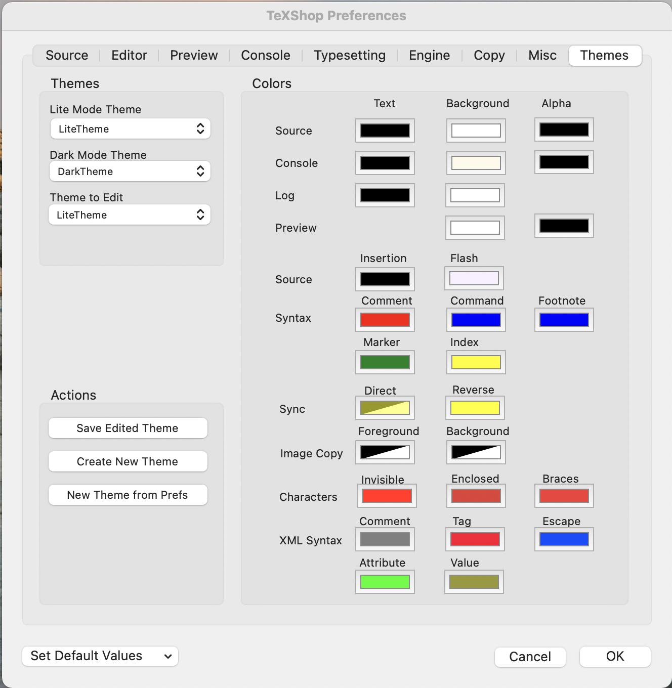

TeXShop Changes 5.27
Version 5.26 was never released. There are three changes in version 5.27:
- If TeXShop is quit when files are open, the files appear in their old location the next time TeXShop starts. This behavior depends on the setting "Close windows when quitting an application" in the Desktop and Dock module of System Preferences. Restoring windows sometimes caused a long delay opening TeXShop after rebooting the Mac. This delay was caused by calling "scroll rect to visible" rather than "goto page" when preview window contents were scrolled to their old position. Apparently the first option caused the Mac to render all the pages of the document before opening it. The problem is fixed.
- John Collin's latexmk has been updated to version 4.83.
- TeXShop can now syntax color expl3 code. See the chapter on expl3 in the TeXShop Manual, available in the TeXShop Help menu. According to a readme document from the LaTeX3 team, expl3 "provides the foundation on which new additions to the LaTeX kernel and other advanced extensions are built. The commands provided are not intended for use at the document level." By default, TeXShop syntax colors as usual, but if a new menu item is toggled on, it also syntax colors any expl3 code in the source.
TeXShop Changes 5.25
The following changes were made in TeXShop 5.25:
- As in earlier versions of TeXShop, if you hover the mouse over a link in the Preview window, a small window opens showing the text at the linked location; this window remains open for five seconds and then vanishes. There is a new menu item in the Preview menu called "Link Popups", suggested by Uwe Schmock. This menu is a toggle turning the hover behavior on or off. When it is on, the menu item is checked.
If you click in the contents of the Preview window while the Control key is down, a contextual menu opens. The "Link Popups" item is also in this contextual menu.
- The details of the small window created by hovering over a link can be changed by holding down any combination of three modifier keys before moving a mouse to the link. These modifying keys have been changed so their names give a mnemonic for the effect they create. The SHIFT key shifts the small window to appear above the link, rather than below it. The COMMAND key commands that a bigger window with larger text be displayed. The OPTION key selects the optional behavior that the small window will remain on the screen until the mouse moves. (If a user forgets to push the option key, it can be pushed later; if it is down at the five second mark, the window will remain open.)
- Latexmk by John Collins was upgraded to version 4.82a.
- The Edit menu contains an item named "Experiment". Select a section of tricky source text, perhaps a complicated series of mathematical equations. Then select the item. A new small window appears, showing the selected source. This window contains a "Typeset" button. Pushing that button produces a second small window showing the typeset output. It is then possible to experiment with the tricky source without modifying the actual document source, until the experiment produces the correct result. Copy the corrected source back to the document.
This item works by creating a new source file for the experiment. The new source contains everything in the main document header up to but not including \begin{document}, followed by \begin{document}, the experimental source, and \end{document}.
This even works if the header is the root document of a project, and the experimental source comes from one of the included files. However, previous versions of TeXShop assumed that \begin{document} was in this root document. Otherwise the Experiment menu item did nothing.
This TeXShop code has been slightly revised. If \begin{document} is not in the root document, then the entire root document is used rather than everything up to but not including \begin{document}. The Experiment menu item may therefore work for a few additional projects.
- The code implementing "switch views" in a Preview window that has not been split was completely rewritten
for TeXShop 5.25. In version 5.23, there was noticeable creep of the two views as the views
were switched over and over. This creep is gone and the views are now stable.
Recall how "Switch Views" works. Scroll the Preview window to an interesting spot. Press Option-2 to select this spot, i.e., view. Scroll to a second interesting spot or view. Now Option-2 switches between these two views. Either view can be scrolled when it is active and the scrolled position replaces the original position for that view.
In version 5.23, the two views were also the two views seen if the window was split. This is no longer the case. If either view is split, that view will become the top view in the split window, and the bottom view will show an entirely independent third position. If the window is then unsplit, and Option-2 is used to switch to the alternate view in the full window, and then the window is split again, the alternate view will be the top view in the split window and the bottom view will be the same bottom view seen earlier.
Thus combining our two full views with splitting windows allows us to work with three independent portions of the pdf file.
Any "Display Format" and "Magnification" change made to a Preview Window affects both views. Thus if the window is changed to Double MultiPage mode and later switched with Option-2, the new view will also be in Double MultiPage mode.
- Finally, substantial efforts were made to improve the "split window" feature in the Preview window. This feature is difficult to modify because users have many ways to change how it works, and improving it for one group of users can makes it worse for a different group of users. Users can split the window vertically or horizontally, they can move the bar separating the two pieces, they can scroll either piece, they can change the display format and magnification of the pieces, they can switch the two pieces. These users may be working on multiple window mode with separate source and preview windows, or single window mode with source and preview in separate halves of a single window. And after all these changes are made and the window is unsplit, users expect to be back to one normal window without any surprises.
A few users told me that as soon as something unexpected happened when splitting a window, they stopped using the feature for fear that the underlying pdf file would be damaged. So a word of reassurance is in order. None of these display modifications are written back to the pdf file. They only affect how TeXShop displays the file. If TeXShop does something strange, the file is perfectly safe. Retreat to full window mode and proceed as if nothing happened. If you like, write me to explain the surprise behavior. Then relax.
A major complaint has been "display creep." A user splits the window, works in this mode for a while, then unsplits and expects to be exactly back where they started, only to discover that the text crept up or down by several lines. These users then cycle through split/unsplit cycles several times and noticed that each produces a further creep. A major effort has gone into eliminating these creeps. The program isn't perfect, but it is better than before.
The "creep problem" depends on display mode. In single page or double page modes, it is not a problem. The more common modes are multipage and double multipage modes, and there creep can occur. An effort was made to reduce the problem in these two modes.
If the Option key is held down when a window is split, the split is vertical. This mode actually works as expected, provided you know what to expect. When a window is split, the original single full window's contents are placed in the left vertical side. Since vertical sections are narrower than before, more pages are shown. The original unsplit page is at the bottom of this display rather than the top. This is by design. Similarly when the window is unsplit, the bottom portion of the left side will become the new single window. This is also by design. If the left side is scrolled during the split phase, the new material at the bottom of the left side will become the full window after unsplitting.
If the option key is not held down when a window is split, the split is horizontal and the original window's contents are placed in the top half. This is the point where major creeping occurred. To fix the problem, the behavior of unsplitting such a window has changed slightly. In version 5.25, TeXShop remembers the position of the window just before it was split, and that location returns when the window is unsplit. While the window is split, the top can be scrolled elsewhere. But when the window is unsplit, this new position will not expand to the full window; instead the window will return to its original position.
However, it is easy to scroll the top to a new position that is "permanent." Temporarily unsplit the window, scroll to the new position, and split again. The old bottom half did not change, but the top half is at a new position and that position will be remembered and returned to the next time the window is unsplit.
Note that this new behavior only affects horizontal splitting in Multipage or Double Multipage modes.
As in earlier versions of TeXShop, the lower and upper versions of the display can be switched by typing Option-2. This is rarely done, mainly in the situation where the user wants the lower half of the split window to become the full window when it is unsplit. But our "creep fix" cannot be applied in this case because the lower half was never in full page mode, and thus TeXShop does not have a full page mode to remember and return to. So in this very special case, the old code from TeXShop 5.24 is used when the window is unsplit. Consequently, Option-2 may produce slight creep, but since it is rarely used, that should not matter.
- Two special variations have been added to the split window command in horizontal mode. Most users should ignore these variations, but one or two users may find them helpful. If the shift and control keys are held down when the Split Window menu is selected or the corresponding tool is checked, the window is forced to split so the lower and upper views are the same size. If just the shift key is held down in the same situation, the two views are forced to have the same size and they contain the same material. The first of these variations may be useful for users who rarely move the split bar and never change the magnification of either view. These users probably already have a stable situation without creep. In those rare cases when they do move the split bar (and pay with additional creep), the option takes them back to the stable situation. The second variation was created for a user who lectures directly from a screen showing typeset course notes. He typically shows a full window view of the notes. But when he comes to a theorem, he splits the screen using the second variation. The theorem remains in the upper view, so students can refer back to it and recall the assumptions required for the conclusion. Meanwhile the lower view can be scrolled to show examples and then key steps of the proof.
TeXShop Changes 5.24
The follow changes were made in TeXShop 5.24:
- After a document is typeset, the new pdf file is loaded into the Preview Window, replacing
the old version. This pdf must be scrolled to the exact spot shown before typesetting, so
only edited items change and the document does not slowly creep up and down, or abruptly shift.
Apple's PDFKit routines do not have a call making this task easy, so improving preview behavior has been
a constant struggle over the years. In the last versions of TeXShop (in multipage and double multipage display modes) the image was very stable unless only a small portion of the upper page was shown and most of the screen displayed the following page. In that case, after typesetting the lower page jumped to fill the entire window. It was
possible to predict exactly when this jump would occur. Slowly scroll the Preview window while looking at the "Page Number"
item in the tool bar. When only about 1/3 of the top page is visible, the page number will suddenly jump
to the next page. After that, typesetting will cause the undesirable jump.
This problem is fixed in TeXShop 5.24. I do not know exactly why my fix works, but several users have confirmed that it does. Don't look a gift horse in the mouth.
Incidentally, large changes made in the beginning of a document before it was scrolled to the current position and then typeset cause jumps which are unavoidable. This typically happens if a document has a table of contents. If a user kills the aux file and then typesets, the table of contents will vanish and the typeset document will jump ahead by several pages. Typesetting again creates the table of contents and the document jumps back to the expected place.
- When the TeXShop icon is in the dock and TeXShop is running, holding the mouse button down over the program icon brings up a contextual menu listing several possible actions. This menu is created by Apple with no TeXShop code involved. But it is possible for programmers to add items to the menu, and some Apple programs like TextEdit add a "New Document" item. So does TeXShop in version 5.24.
- TeXShop now contains latexmk version 4.82 by John Collins. Latexmk is also in TeX Live, and TeXShop will use that copy if it is available. Otherwise TeXShop will default to its internal copy of latexmk.
- The "About TeXShop" dialog contained the line "Copyright 2001-2023, Richard Koch". The year 2023 has been replaced by 2024.
TeXShop Changes 5.23
A note before listing changes. In macOS, holding down the Option key while a menu is visible can sometimes change the names of items in the menu, and add additional items. TeXShop inherits this feature and occasionally extends it. In the Finder's File menu, holding down the Option key changes "Close" to "Close All" and "Duplicate" to "Save As". The same change is made in TeXShop's File menu. Sometimes, users complain that TeXShop is missing "Save As", but it is present once you know this trick.TeXShop's Typeset menu has an item named "Typeset" which typesets the current document. An error in typesetting can cause a malformed aux file. Once the error is fixed, it is necessary to remove the bad aux file before typesetting again. Holding down the Option key changes the item "Typeset" to "Trash Aux & Typeset".
TeXShop's Window menu contains the item "Split Window". This item splits the window into an upper and lower portion, so independent pieces of the source or preview can be examined at the same time. Holding down the Option key changes this item to "Split Window Vertically", so the pieces are placed side by side rather than above and below each other.
The following changes were made in TeXShop 5.23:
- If your Macintosh is appropriately configured and you close TeXShop with a project open on the screen, that project will reappear when TeXShop is restarted, with the windows in the same positions they were in just before TeXShop quit. Until recently this happened instantly, but in the last several versions of TeXShop there was a delay before the old windows reappeared. This turns out to be an error on my part, and it is fixed.
- The package hyperref can create links from one portion of a document to another. For instance, each entry in the table of contents can become a link to that item in the text, and any reference to a theorem proved earlier can be followed by a link to the actual statement of the theorem. These links are active in the Preview window, so clicking
on a link takes you to the corresponding linked spot in the text.
Hovering over such links will bring up a small view of the linked text without moving the scroll bar. This is convenient if you are proofreading a series of linked items. For instance, hovering over a section number in the table of contents will display the beginning of that section in the text. Normally the popup is on screen for four seconds and then disappears. If the Shift key is down at the end of these four seconds, the popup will remain on the screen until the mouse moves. For a larger version of the popup, hold down the Option key before hovering over the link. (In previous versions of TeXShop, the Option key played both of these roles.)
This facility is enhanced in version 5.23 of TeXShop due to Uwe Schmock's request. Normally the popup is shown just below the link in the text. But sometimes the author will want to compare what comes right after the link to the information in the popup. In that case, hold down the Command key before activating the popup. The popup window will then appear just above the link. This trick can be combined with the Shift and Option key tricks mentioned in the previous paragraph.
- TeXShop has a Macro facility which makes it possible for users to write applescripts to control
common procedures. This impressive Macro facility and the Macro Editor were added to TeXShop long ago by Mitsuhiro Shishikura. The current expert in applescripts is Michael Sharpe, who wrote the wonderful
document "Notes on Applescript in TeXShop" in the TeXShop Help Menu.
TeXShop provides a number of constants that can be used in Applescripts it runs. These are listed in section 5 of Sharpe's manual. Examples are #FILEPATH#, #PDFPATH#, #DVIPATH#, #PSPATH#. The first provides the full path to the TeX source file, which might be /Users/koch/Documents/Fourier/Fourier.tex. Others give full paths to the pdf file, dvi file, etc., in the same folder. One missing constant sometimes requested is #FOLDERPATH#, which would give a full path to the folder containing these files, rather than individual files in the folder. In the example just quoted, it would give /Users/koch/Documents/Fourier/. I recently discovered a request made four years ago on stackoverflow for such a constant, together with several later requests. Version 5.23 of TeXShop finally provides this missing constant.
- In the TeXShop manual (which is typeset with XeLaTeX), I activated hyperref with the LaTeX command
\usepackage[colorlinks=true, pdfstartview=FitV, linkcolor=blue, citecolor=blue, urlcolor=blue, hyperfigures=true]{hyperref}Uwe Schmock pointed out that adding "bookmarksnumbered" to this command would number the chapters and sections shown in the TeXShop drawer. As we will see, that proves to be a useful change for the manual and may be a useful change for your documents as well. Just change the command to\usepackage[colorlinks=true, pdfstartview=FitV, linkcolor=blue, citecolor=blue, urlcolor=blue, hyperfigures=true, bookmarksnumbered]{hyperref} - A new item was added to the Windows menu, "Switch Views". This item is only active if the Preview Window is active. If the Preview Window has been split, the item interchanges the top and bottom views. When the window is later unsplit, the top portion becomes the full contents of the window. Using "Switch Views"
before unsplitting brings the bottom portion to the full window.
The "Switch Views" menu item also works when the Preview Window is active and unsplit, and this use case may prove to be more important than the original reason for introducing the command. Suppose you want to work on two related portions of a document. In TeXShop's Preview Window, do not split the view. Instead, just scroll to one of the two interesting portions of your document. Then select "Switch Views" and scroll to a second related section of the document. You can now switch between these two portions using the Window menu "Switch Views", which has a keyboard shortcut Option-2.
So your document can have two active portions and you can switch between them with Option-2. Although "Switch Views" does not work in the Source window, you can easily edit and revise the two related portions of your document because sync works between the two Preview views and the source file. Suppose text in one of the two portions needs revision. Sync from that text to the source, edit the source, and retypeset.
The new command is not perfect. The two views may creep gradually when switched, so a little adjustment with the scroll bar might be needed after switching views. The creep depends on window size and monitor size and may be acceptable for some configurations and not acceptable for others. Perhaps we can improve the feature in later TeXShop versions.
A long time ago, a different keystroke sequence was introduced to switch the views of a split preview window. That keystroke sequence has been removed in Version 5.23 because the new menu item is easy to find and use.
- TeXShop configures the way documents are displayed using
two preference items, which it calls "Display Format" and "Magnification".
Typical display formats are Single Page, Double Page, Multipage, Double Multipage.
Typical magnification items are Fit to Window, Actual Size, and Fixed Magnification.
These items can be selected in TeXShop Preferences, and then affect Preview
windows when they first open.
After a document is open, the two preference items can be changed for a particular Preview window using items in the Preview menu. These choices are temporary while the document is being used, but revert back to the default choices for new documents.
When the window is not split, the Preview menu's submenu items "Magnification" and "Display Format" affect the document as a whole, and thus both views simultaneously. So if you change the magnification of the current view, and later use "Switch Views", the second view will also use the new magnification level. If you switch to "Double Page" mode in the current view and later use "Switch Views", the second view will also be in Double Page mode.
When the Preview window is split so both views are shown simultaneously, "Magnification" and "Display Format" changes made to the top view affect the entire document as above. Thus if the window is later unsplit, this changes will hold in the entire document, and also apply after "Switch Views" is used.
However, when the Preview window is split so both views are shown simultaneously, "Magnification" and "Display Format" changes made to the bottom view will only apply to that portion of the split window, and only as long as the window remains split. This slight design inconsistency makes it possible for a user working with two sections of the document to temporarily magnify the bottom section and inspect fine details without propagating that magnification change to the rest of the interface.
- An interesting and rather complicated interaction occurs when the Preview
window is split and the drawer for this window is open. To describe this interaction,
we introduce a concept well-known to Macintosh programmers, but perhaps
not to users. Suppose your Macintosh is in use and you type on the keyboard.
How does the Macintosh know where to send those
keystrokes? Which window should receive them? Which view of a split view? If the
drawer of a window is open, should the keystroke go to the drawer or the window?
It turns out that at any moment the Macintosh has selected a "first responder". This is the object that first learns of keystrokes. The first responder is the beginning of a chain of more and more general objects. If the first responder is the drawer attached to a window, the keystroke goes to that drawer. But if the drawer cannot use the keystroke, it passes down the chain to the next object, which might be the view associated with that drawer. If the view in turn cannot use the keystroke, it passes further down the chain, perhaps to the window containing the view. If this window cannot use the keystroke, then the keystroke is lost and does nothing.
The first responder will change as a user works. Often this happens when the user clicks on a different view. In the example just given, if the window has a split view and the user clicks on the top view, then that view becomes first responder. Then keystrokes never reach the drawer, but instead pass from the top view to the full window. -All of this is complicated and often works ``automatically'' without even the programmer knowing the details of these responder chains.
Consider now the following example. Suppose a preview window is active and contains two split views and an open drawer. Suppose the drawer is showing the various chapters of a document, and these chapters are numbered. If you select the second chapter of your document in the drawer, the top view will scroll to the start of this second chapter, and the drawer will mark the second chapter in blue. That blue mark indicates that the drawer is still the first responder.
It turns out that numbered drawer contents respond to keyboard shortcuts. If you type Option-1, the drawer will select the first chapter. If you type Option-2 followed by Option-0, the drawer will select chapter 20. Type Option-UpArrow to select the first item and Option-DownArrow to select the last item. Type Option-1.5 to select Chapter 1, Section 5. If chapter 3 is selected, Option-RightArrow will open sub-levels and Option-LeftArrow will close sub-levels. Although these keystrokes select drawer items, it is still necessary to click these items to make the associated view scroll to them.
But how do we select items displayed in the bottom view? To do that, click in the bottom view. Notice that the blue selection bands in the drawer change to gray bands. So the drawer is no longer first responder; instead the bottom view is first responder. This action made another invisible change. It sent a message to the drawer's contents linking them to the second view. Now chapters and sections can be selected in the second view.
There is a final interesting interaction. Select a chapter in the drawer and type Option-2. This command does not switch the two views, because the first responder is the drawer rather than the Preview Window. Instead it selects chapter 2 in the drawer. But if we click in either view, then that view becomes first responder rather than the drawer. So if we type Option-2, this keystroke will not go to the drawer, but rather to the view just clicked. That view does not understand Option-2, so it passes it on down to the Preview Window. The Preview Window does understand Option-2 as a shortcut for "Switch Views" and switches the views.
- Pdf documents can be encrypted and password-protected by Apple's Preview, or the commercial version of Adobe Acrobat. Such documents can still be opened by TeXShop and other pdf viewers. When the document is
opened a window appears, but instead of showing the document, the window contains a text field where
the user can type the password. After the user types that password, the document opens.
TeXShop does not contain a single line of code to make this happen. The initial page with a password entry field is created and managed by Apple, and the document is then decrypted when read from disk by Apple. TeXShop was not even recompiled to make this happen. Instead one day an update to macOS appeared and TeXShop got the feature for free. This is the glory of Cocoa (and Swift).
Uwe Schmock wrote me after he distributed password-protected notes for his students. He discovered a small number of problems when TeXShop views a password-protected file. These problems are fixed in version 5.23 of TeXShop.
The first problem was that the contents of the drawer were empty when such a document was displayed. The reason is that TeXShop initialized the drawer before Apple began decrypting the file. This bug is fixed.
The second problem was that when splitting the document horizontally or vertically, the position of the splitting bar was severely limited. This bug was caused because Apple applied constraints to the views displaying the two pieces, but TeXShop does not use constraints to position subviews. This problem is also fixed.
A final problem is that students must remember the password of a file that they intend to read often. Many students save a short document on the computer listing passwords required in this way, but that certainly makes the password system less secure. Apple has a system to solve this problem. When the user types a password, Apple offers to save it in their keychain, which is encrypted. Unfortunately, Apple does not make that offer when opening a password protected pdf file. Perhaps in the future, ...
In the meantime, students might employ a trick to make passwords easier to use with commonly read encrypted documents. In the Macro menu, select "Open Macro Editor". An editor appears. Select "New Item" and give the item an easy name. Then enter the following code:
--Applescript direct tell application "System Events" to keystroke "password" tell application "System Events" to keystroke returnReplace the text "password" inside the quotation marks with the actual password. Save the macro. When the text field appears asking for a password, select this macro.
There will be one problem. MacOS does not allow Applescripts to control the computer in this manner without permission. So when the macro is first run, an error message will appear. Sometimes, but not always, Apple will open System Settings to the spot where the appropriate permission can be given. That spot is the Privacy & Security module of System Preferences, and the item "Automation" in this item. A special item for TeXShop can be created and given permission to control "System Events".
TeXShop Changes 5.22
The following changes were made:- If the user removes a folder from ~/Library/TeXShop and then runs TeXShop, the folder will be
recreated with default contents. Curiously, this did not apply to the folder ~/Library/TeXShop/Engines/Inactive,
but now it does. Before this change, a user could remove ~/Library/TeXShop/Engines and that entire folder would be recreated, including the
Inactive subdirectory, but that technique destroyed any special engines the user might have created.
When new versions of TeXShop are introduced, most folders in ~/Library/TeXShop are not changed because these folders store files created and edited by the user. But the Inactive folder is updated because users should have the latest versions of these items. This update adds new files and folders and modifies existing files and folders, but it does not remove files or folders no longer needed. I'm thinking of changing this behavior so Inactive is completely "cleaned up", but that is a more drastic step that needs to be carefully considered. In the meantime, users can accomplish that complete cleanup by removing the Inactive folder and letting TeXShop recreate it.
- The Typst program was recently updated to version 0.9.0, and Jeroen Scheerder updated the material in ~/Library/TeXShop/Engines/Inactive/Typst for the new version. If you are already using Typst in TeXShop, go to this location. An early section in the document "AboutTypst.pdf" explains how to download and install Typst. Follow these instructions to obtain the new version. The last section of this document explains how to move the contents of the "Advanced" folder into appropriate places. Scheerder revised the contents of "Advanced", so move the revised folders into the same spots.
- Version 5.20 added a preference item to activate transparency when calling Ghostscript. That item adds a flag to Ghostscript calls, but the flag is only relevant on recent versions of Ghostscript. So TeXShop checked the version of Ghostscript and did not add the flag if the version being used was not recent enough. This check involved calling a shell script that was incompetently written (by me) and failed in Sonoma. The script has been rewritten and the bug is fixed on Sonoma.
- In version 4.61, the bibtex UTI was changed from org.tug.bib to org.tug.tex.bibtex at the request of the BibDesk team. But not all data structures were changed, breaking the creation of new bibtex files from within TeXShop. This bug was not noticed until now. It is fixed.
- Version 5.03 of TeXShop included an example program explaining how to create interactive
documents using tex4ht. The source code for such a document is ordinary latex. When typeset by pdflatex,
the result is a static pdf file. But when typeset by tex4ht, the result is a web page with interactive content.
The sample document is in ~/Library/TeXShop/New/Demo.
Since tex4ht can output MathJax calls, the mathematical formulas on the web pages it creates are essentially perfect. But the illustrations are sometimes distorted. Recently I read a brief note by Michal Hoftich, who maintains tex4ht, explaining how to fix this problem. So TeXShop 5.22 installs a new folder, ~/Library/TeXShop/New/Demo-Additions-5.22, containing a Read-Me file explaining the very simple modification to the Demo document which fixes illustrations. These Read-Me changes can be made in the same manner to other documents typeset by tex4ht.
TeXShop Changes 5.21
The following changes were made:- Jeroen Scheerder improved the support of Typst by using the Packages system now under construction in that project. Packages are similar to style and class files in the LaTeX world; they extend the capabilities of the typesetting system. Scheerder separated each sample program provided in TeXShop 5.20 into a package and a template. The package is hidden away in ~/Library/Application Support/typst and the template is available in the TeXShop templates pulldown in the source window. This makes it possible to start a new project by selecting an initial template and adding material to it. The templates can be edited by users to fit their precise requirements.
- If a source project opened an html window in TeXShop, and the source was then closed without first closing the html window, TeXShop would sometimes crash. This is fixed.
- The Chinese localization in 5.20 had one item translated by Google rather than the official localizer. This is fixed.
- A small number of Interface Builder connections led to objects that no longer exist. This caused cautionary items in the log file, although TeXShop ran fine. The connections are gone and the log entries no longer appear.
- The log file complained that "unarchiving safe plist type 'NSString' occurred" and warned that this would be disallowed in the future. This is fixed and the log entry is gone.
TeXShop Changes 5.20
Version 5.19 was never released. The following changes were made in 5.20:- Some people complained that line numbers in the source file are too small to read. A new preference under the "Source" tab allows users to choose between small and large line numbers.
- The Typst project by Martin Haug and Laurenz Mädje is a complete rewrite of both the input language and the typesetting abilities of TeX and LaTeX. See https://typst.app for details. A TeXShop user, Jeroen Scheerder, recently created an engine file that allows TeXShop to typeset Typst sources. Version 5.20 of TeXShop contains that engine in ~/Library/TeXShop/Engines/Inactive/Typst. This folder also contains simple typst source files, called templates, and instructions explaining how to download and install typst. Thus users can easily experiment with Typst using TeXShop.
- Typst source files have extension ".typ". This file extension was added to the list of extensions that TeXShop is willing to create and open, and to the list of file types that TeXShop can typeset. Moreover, source files with extension ".typ" can be added to ~/Library/TeXShop/Templates and then will appear in the Templates pulldown menu in the source window.
- Version 5.18 of TeXShop contains a preference which adds a flag whenever Ghostscript is called telling the program to process transparency operators. This flag is understood by Ghostscript 9.51 and later, so TeXShop has code which checks the version of Ghostscript running, and does not add the flag when the version is earlier than 9.51. But very shortly after the release of TeXShop 5.18, Matthias Schmidt read that code and discovered that it did nothing because it was deactivated by a line of debugging code I forgot to remove. I silently fixed the bug and most people updating to version 5.18 received a version without this bug. Since the bug was minor, I decided not to release a new version just to fix it. It is fixed for everyone in version 5.20.
- The TeXShop manual was updated slightly to describe the changes in version 5.20. Uwe Schmock has also improved the manual and some of his changes are in the latest version.
- Max Horn runs an important web site which may be unknown to most TeXShop users. The site is
https://github.com/TeXShop/TeXShop and contains
the source code for most versions of TeXShop since the program began. While the Horn site was under construction,
I sent him old sources obtained by turned on computers that had last run twenty years ago; they started right up! That is how I found the original sources for the earliest TeXShop, which are linked from the the main TeXShop page,
https://pages.uoregon.edu/koch/texshop/texshop.html.
I am ashamed to admit that git remains a mystery to me. So Horn has access to valuable information I know nothing about. Here's an example. Horn recently reported that the 5.18 sources suddenly contained a complete copy of the final program. That was 90 megs of useless information. Sure enough, a copy had accidentally been saved in the wrong spot. This problem was immediately fixed on the web, but I'm gradually digesting a list from Horn of other elements in the current sources that are probably no longer relevant.
TeXShop Changes 5.18
Modern versions of Ghostscript do not process transparency operators in ps files unless the flag -dALLOWSPSTRANSPARENCY is added to the function call. In TeXShop 5.18, a preference item titled "Ghostscript Options" under the Typesetting tab can be checked to activate the flag. This activation only applies in two circumstances:- When TeXShop opens a postscript file, it calls ps2pdf to convert the postscript to pdf and opens the pdf file. Without the flag, transparency will be ignored in the ps file. With the flag, it will be respected.
- When TeXShop typesets files in DVI mode, it runs TeX or LaTeX to create a dvi file, runs dvips to create a postscript file, converts the postscript file to pdf using ps2pdf, and displays the pdf file. Projects typeset in this way can use the package pstricks for extra typesetting effects, and pstricks can add transparency to illustrations. Typesetting will only preserve transparency if the flag is set.
The flag requires Ghostscript 9.51 or higher. It has no effect when used with earlier versions of Ghostscript.
The flag is added (in DVI mode) only if the user has not added "--distillerops" to the simpdftex preference settings. TeXShop does not want to interfere with users who are carefully controlling the Ghostscript flags themselves.
This preference item should still work when users supply their own Ghostscript, possibly from macports or homebrew, but that has not been tested.
Two sample files are provided for experimentation with the new setting. Select the TeXShop menu "Open ~/Library/TeXShop" and navigate to the folder New/Version-5.18. This folder contains two files which can be copied to your home directory: Transparency.ps and Transparency.tex. Open Transparency.ps in TeXShop. If the new item is not selected, the ruler in the illustration will cover the material underneath. If the new item is selected, the ruler will be partially transparent and show items underneath. Typeset the source file Transparency.tex to see the same change of behavior when typesetting in DVI mode. These samples were provided by Antonis Tsolomitis, with email address atsol@aegean.gr and web url https://myria.math.aegean.gr/~atsol/newpage-en/.
When new typesetting methods become available or older methods require new flags to operate properly, the changes are generally handled in TeXShop by creating new engine files. Herbert Schulz created such engines for transparency, available in ~/Library/TeXShop/Engines/Inactive/GhostscriptTransparencyEngines. The new preference item does not affect these engines, and the engines are more flexible than the preference setting, handling for instance versions of Ghostscript earlier than 9.51. Use Herbert's engines for full control. The new preference is for users who run into a problem and want to click a box for a quick solution.
TeXShop Changes 5.17
The following changes were made:- In Single Window mode, after typesetting a project with a root file the root source was brought forward even if the "Continue Editing" preference was selected. This behavior has been fixed by Matthias Schmidt.
- Uwe Schmock improved the formatting of the TeXShop Manual.
TeXShop Changes 5.16
The changes in TeXShop 5.16 are due to Matthias Schmidt.- There are improvements in the German localization. The "Sharing" and "Mouse Mode" items in the toolbar are translated, and the "Split Window" item has been given a less ambiguous translation. A few translations were tweeked to add consistency and remove typos.
- A bug with the "Magnification" and "Page Number" items in single window toolbar is fixed. Previously, these items opened an empty preview window, a confusing action in single window mode.
TeXShop Changes 5.15
Matthias Schmidt reported several bugs in TeXShop 5.12 when used in single window mode, particularly in the German localization. Version 5.13 of TeXShop fixed some of those bugs.Schmidt then reported a crash bug when configuring the toolbar, but only in single window mode when using the German localization. I fixed this in version 5.14 by removing the label tool from the German version. Other bugs reported by Schmidt were trickier, and I told him I didn't intend to work on TeXShop during the rest of the summer, but would collect his bug reports in a folder.
During the next week I heard nothing back and happily attended the annual Bach Festival in Eugene, which ended with an amazing performance by Angela Hewitt of the Well-Tempered Clavier. The next day Schmidt sent five patch files fixing every bug on his list and one old bug on my "to do" list. In particular, he put the label tool back in the German localization, after finding the real cause of that bug. Many of the fixes were corrections to localized Interface Files, which I have been reluctant to touch since they seemed fragile in my hands. Version 5.15 of TeXShop is entirely the work of Matthias Schmidt.
- Some translations of toolbar items in various languages did not actually appear when TeXShop ran. This should be fixed.
- A number of German toolbar items were left in English, but should now appear in German.
- The label tool now correctly appears in German in single window mode. The crash is gone.
- When using single window mode in English, selecting the magnifying glass tool made it impossible to select any other tool. As a workaround, users were told to hold down the Option key while selecting other items. The bug is now fixed and the workaround is no longer needed.
TeXShop Changes 5.14
TeXShop 5.14 fixes a crash bug in the German localization of TeXShop. This bug has been present for a long time and only affected single window mode. In that mode, TeXShop crashed when the user tried to customize the toolbar.The bug was caused by the "Labels" tool. The fix eliminates that tool, but only in German and only in single window mode.
The user reporting this bug ran into another bug which had been reported earlier. In single window mode, selecting the magnifying glass makes it impossible to switch to other "mouse modes" like text selection and pdf selection. This problem occurs in English and a few other localizations, but there is an easy work around. Hold down the Option key while selecting other tools and then selection works.
A new chapter titled "Working Around Bugs" has been added to the TeXShop manual listing this action. Sometimes it is easier to work around a bug than to fix it, and these cases will be listed in the new chapter. Let us hope that it remains short.
TeXShop Changes 5.13
Matthias Schmidt sent a carefully documented list of bugs in version 5.12. All are fixed in version 5.13.- The Preferences dialog has a button labeled "Set Default Values" at the bottom.
Selecting this item changes all items in Preferences to their defaults when TeXShop is first opened.
A bug in this command caused it to ignore reverting the source font or font size. This bug is fixed.
After selecting "Set Default Values", the "Cancel" and "OK" buttons in Preferences work as usual, so selecting "Cancel" returns to the current defaults, while "OK" accepts the default values.
Note that "Set Default Values" followed by "OK" removes any hidden preferences you may have set, so it should be used with caution. However, the new TeXShop Manual in TeXShop Help, added in version 5.12, has a list of all hidden preferences at the very end. The list is long, but you may be able to find a preference there that you set and then forgot.
- If TeXShop is configured to open all documents in Single Window mode, and the program is quit while windows are open, these windows will be restored the next time the program runs. However, TeXShop did not restore the position of the divider between source and preview views and the divider would be placed in the middle of the single window. Now TeXShop restores the position of the divider.
- In TeXShop Preferences under the Editor tab, the last three items in the Style box sometimes displayed as integers and sometimes as real numbers. The TeXShop Manual claimed that these items do not work and can be ignored. But in fact the items work after a restart of TeXShop.
Now the items always display as integers and take integer values.
Moreover, setting an item causes an immediate change in any open source window, so users can experiment until they find satisfactory values. There is a small caveat. TeXShop only learns of changed values when the item is deactivated, so to see the result in open source windows, change a value and then click in a different box. It is tempting to instead push RETURN, but this accepts all changes and closes the Preferences window.
After making changes in the Style fields, the "Cancel" and "OK" buttons in Preferences work as usual to reject or accept all changes. If Style changes are rejected, source windows return to their previous style.
- In the German localization, the "Parens Targets & Highlight Color" item in TeXShop Preferences under the Source tab was not hooked up correctly and misbehaved when used. This is fixed.
- A number of small changes in the German localization were made for greater consistency across the interface.
TeXShop Changes 5.12
There are two changes:- The folder ~/Library/TeXShop/Engines/Inactive/PreTeXt was revised and the three main PreTeXt engines were rewritten. Consequently, many more examples in mathbook can be typeset with TeXShop.
- The Help menu contains a new 180 page manual for TeXShop. This help manual can be printed if you want a hard copy, and it can be converted to a stand alone pdf file by selecting "Save as PDF" in the print dialog.
The Help menu also contains a TeXShop Help Panel. This collection of web pages was the older way of documenting programs, but we stopped updating the panel around the release of Lion.
TeXShop Changes 5.11
There are four changes:- Zheng-chao Han notified me of a bug when TeXShop typesets a source file stored in iCloud. To be honest, I had never used iCloud until this report. It was a pleasure to discover that TeXShop easily typesets files stored there. In version 5 of TeXShop, there is a new html preview window, which can be used to preview typesetting jobs which output html rather than pdf. But TeXShop would not open html files stored in iCloud, due to a space in one of the directory names in the full path to these files. This is fixed.
Incidentally, TeXShop does not work well with the third party product Google Drive. The insertion cursor will randomly jump to the bottom of the page when editing source files on this system. I suspect that Google Drive does not understand automatic saving. The solution is to move source files from Google Drive to your personal machine before editing them, and move the changed versions back to Google Drive when you are done. I cannot fix this problem because I do not have access to Google Drive source code. But they can fix it because they have access to my code.
- Simon C. Leemann suggested changing the symbols for PageUp and PageDown in the various Preview Windows to up and down arrows rather than left and right chevron symbols. Done.
- Apple added support for tabbed windows in Cocoa, starting in macOS High Sierra. TeXShop adopted this feature and customized it slightly for LaTeX by defining a couple of magic comment lines about tabs, and adding a Preference Pane setting labeled "If Sync Opens a New Window, Open as Tab in Root Window."
Later, Apple improved their tab support, making it possible to provide full support for tabs in TeXShop starting with version 4.72. Read the Changes section for version 4.72 for details. To turn on this full support, find the item "Open New Windows as Tabs" in TeXShop Preferences and in the associated pull-down menu select "Always".
When choosing this item, the magic comment lines about tabs should not be used, and the setting "If Sync Opens a New Window, Open as Tab in Root Window" should not be selected. I should remove these features, but I hate to remove items which some people may still be using. Thanks to Mark Auer for pointing out that if both preference items just mentioned are selected, names of tabs can become permuted so the tab named "Chapter 1" can select source for "Chapter 2", etc.
Mark Auer later reported another bug. If a tabbed window has a root file tab and tabs for various included chapter files, and if the project is typeset while showing the source for a particular chapter, the window switches to showing the root tab, even though the user is only interested in the chapter's source. Sadly, I could not reproduce this bug.
Auer then sent me vast amounts of information about the bug. He made a movie showing it in action. He sent pictures of all of his TeXShop preference settings. He made a tiny example illustrating the problem. I looked and looked at all this information. Eventually I noticed that Mark wrote "! %TEX root = ./MyRoot.tex" while I wrote "! %TEX root = MyRoot.tex". Both are correct, but that extra "./" caused the problem. Both forms are now accepted. Thanks, Mark.
- Latexmk was updated to version 4.79. Note that TeXShop uses the version of latexmk in TeX Live if it is available.
TeXShop Changes 5.10
The preference items to set the document and console fonts were broken in the English localization of version 5.09. Now they are fixed.TeXShop Changes 5.09
TeXShop 5.09 has one addition and one bug fix.- Marco Santi wanted a preference to set the font and size of text in the Macro Editor. There is already a preference to change the default font in the console. To avoid cluttering the Preference Dialog, version 5.09 allows users to also use this console font in the Macro Editor. Just check the box "Use Also for Macro Editor" under the Console Tab.
- Kurt Richard Todoroff reported an important bug that I could never reproduce. Just before typesettting concluded, his console would stop reporting output and the program would become unresponsive. Luckily, Todoroff knew exactly when this bug was introduced. Although he was using version 5.08, he told me that versions 5.00 and 5.01 typeset without problems but version 5.02 often failed.
For the next several days, Todoroff tested versions of the program which I sent him. First I sent unlabeled programs A and B. He reported that A didn't work, but B worked fine. Program A was 5.02 and program B was 5.01. That test gave me confidence to proceed!
Version 5.02 was a minor update which fixed a bug in "Highlight Current Line." I asked Todoroff to turn off "Highlight Current Line" in version 5.08 and the bug disappeared. I then replaced my fix of both "Highlight Current Line" and "Use Block Cursor" with a better fix and the problem went away.
If you are curious, I'll say more. "Highlight Current Line" draws a light blue background under the line containing the insertion cursor. If the user clicks on a different line, this background must be erased, and then a background must be added under the new line. To erase the background of the old line, I originally erased the background of all lines in the visible portion of the source. But if the user scrolled so the original line was no longer on the screen and then clicked at a new spot, the old background would not be erased, and scrolling could later reveal two different current lines. In version 5.02, I fixed this by erasing the background color of the entire source text. This fix was very inefficient and bit me in the end. Now there is a much better fix.
TeXShop Changes 5.08
TeXShop 5.05 -- 5.07 were never released. TeXShop 5.08 has three changes which will be minor for most users.Recently, the same user found a way to trigger this bug. If you type command-space, a spotlight search field appears. When this field is dismissed, the cursor has vanished. Knowing how to create the bug makes it easy to figure out how to get the cursor back. Just click in a blank area of the desktop and then in the source window, and the cursor will return. Clicking in another TeXShop window or some other program's window will also do the trick. I'm still working on eliminating the bug completely.
Until recently, a similar menu appeared at the bottom of the save dialog. But it was seldom used because without it TeXShop saves files with the same encoding used to open them, as you'd expect.
However, some users were tempted to use the menu to change file encodings. They would open a file using one encoding, and then save it using a different encoding. This is dangerous because characters available in one encoding but not in the other will be lost; since the file is overwritten in the process, these characters cannot be recovered. Therefore I removed the menu from the save dialog.
Recently, Unicode UTF-8 has become the standard encoding. It has the advantage of preserving all characters. Internally the TeXShop editor uses unicode. The process described in the previous paragraph is less dangerous when converting to UTF-8, provided the file being converted was opened with the correct encoding. So in version 5.08 conversion returns, but in a way that is less likely to mislead users. In the Edit menu under the "Transformations" submenu, there is an item named "Change Encoding". When selected, a dialog appears allowing you to select a new encoding for the file. Nothing will happen until the file is saved, but it will then be saved with the new encoding.
Unfortunately, switching to a block cursor is not easy. In the Accessibility Pane of Apple's System Preferences, users can enlarge the standard cursor and change its color and outline color. But no such modifications are provided for the insertion cursor. Some programs provide a block cursor, but often they do not use Cocoa and rely on an open source library for editor support.
In Cocoa's NSTextEdit the source text is a single string, even if a document is an entire book. The central algorithm of NSTextEdit displays this string in the editor. Every time the string contains a line feed, the editor switches to a separate line, but for long lines the editor must select a blank spot to make a soft line feed. When the user enters text, the entire algorithm must run again to modify the layout of lines further along in the string. Adding a block character to the string would thus involve massive modifications of this central Apple code.
But of course TeXShop and other programs modify the display for syntax coloring and other reasons. This modification is done in a different way, using what Apple calls an "attributed string." An attributed string is a standard string with extra information for each character, listing its foreground color, background color, and other items. The layout code in NSTextEdit is not changed for attributed strings; the attributes are only used when drawing the string after line breaks have been determined.
TeXShop already has a feature named "Highlight Current Line" which draws a light blue background beneath the entire line containing the insertion cursor. In TeXShop 4.08, this routine can be modified to draw a block cursor. The cursor colors the background of the two characters on either side of Apple's blinking insertion line.
To turn on the feature, select the item "Use Block Insertion Character" in the TeXShop Source Menu. This item turns on "Highlight Current Line" if it is not currently on, but switches it to Block Cursor Mode. The item only affects the active document; any other document open at the time is not changed.
Note that the Block Character colors the background of existing characters. Spaces are characters and their background can be drawn, but if no character is present at a spot, then the background cannot be colored. Thus when starting a brand new line, only the original insertion line is present until the first character is typed. After that, the block character highlights the background of the character left of the insertion line, but there is no character right of the line to highlight. When editing existing text, the characters on both sides are highlighted.
It is a good idea to select a source font with fixed width characters if you intend to use the block cursor. Otherwise as you scroll over the characters in a line, the cursor's width will constantly change.
Since the menu items "Highlight current line" and "Use Block Insertion Character" are related, a change in one sometimes changes the other. When "Use Block Insertion Character" is turned on, "Highlight current line" is automatically turned on as well. When "Highlight current line" is turned off, so is "Use Block Insertion Character."
When "Use Block Insertion Character" is on and then turned off, "Highlight current line" remains on. So it is easy to switch back and forth between hightlighting the current line and showing the block insertion character: toggle "Use Block Insertion Character" off or on.
If you want to use the block cursor on all files, turn it on in TeXShop Preferences using an item in the Misc1 tab. This item also makes it possible to modify the color and nature of the block cursor.
TeXShop Changes 5.04
Developers were given a preliminary version of macOS Ventura 13.1 around November 10, 2022. TeXShop has a serious bug when run on that system. The bug is fixed in TeXShop 5.04, and users should upgrade now to avoid the bug when Ventura 13.1 is released.The bug is dramatic. If you open a new source window and enter some text, and then attempt to close the window, the window remains and becomes a zombie.When you quit TeXShop and open it again, the window reappears. There is no way to get rid of it.
This dramatic behavior has a trivial cause. TeXShop adds a menu to the Save Dialog allowing users to set the encoding of the saved file. In all recent versions of TeXShop, the code creating this menu has one bad line which did nothing on earlier systems, but stops the Save Dialog from opening in Ventura 13.1. That bad line of code is no longer in TeXShop 5.04.
I took this opportunity to entirely remove the encoding pull-down menu from the Save Dialog. It is still present in the Open Dialog because a user could receive a file from a colleague with an unusual encoding and want to open that particular file. If a user then edits the file and saves it, the encoding used to open the file is also used to save it, so an encoding menu isn't needed in the Save Dialog.
If you use the Save Dialog's encoding menu for other reasons, you can bring it back with a new hidden preference setting:
defaults write TeXShop EncodingMenuInSaveDialog YES
The encoding menu in the Save Dialog is typically used in one of two cases. The first is when a brand new file is saved and the user doesn't want to use the default encoding set in Preferences. In this case, a user could add a magic comment line setting the encoding to the unusual value and achieve the same result. The other case is when users are trying to convert a file from one encoding to another. That kind of conversion is tricky; opening a file in one encoding and saving in another can fail and lose information. Removing the encoding menu from the Save Dialog removes the temptation to act without careful planning.
TeXShop Changes 5.03
After the release of version 5.02, a few small problems emerged, particularly in the demo program. I made corrections on my web page without changing the version number, so if you downloaded early, you might have small flaws and if you downloaded later, you don't. Two larger problems were reported and fixed the same way.Now that the program is stable, it is time to bring everyone up to date. I do not expect further TeXShop updates for a couple of months, fingers crossed. Here are the two important bugs:
- A pulldown menu in the Save Dialog allows users to change the extension of the saved file. This menu was out of sync by one element after the first four items. So if you selected an extension, you got the previous extension in the list. This is fixed.
- One user complained that the cursor occasionally vanishes and TeXShop must be restarted to get it back. I cannot reproduce this bug. The Cocoa APIs contain a class named NSCursor which has two relevant commands: [NSCursor hide] and [NSCursor unhide]. It is, of course, important that calls to these routines be paired up so the cursor is not left hidden at the end. XCode can search the complete TeXShop code base; the search revealed that these cursor routines are only called in TeXShop during the operation of the magnifying glass.
My routine had extra code to insure that the routines were called in pairs, but the final unhide was not protected in the same way. I added that protection. I don't know if the extra code is necessary because I cannot reproduce the bug, but it cannot hurt.
TeXShop Changes 5.02
TeXShop 5.01 came with a demo source file and support document explaining how to create web projects with interactive elements using TeXShop 5 and TeX4ht. Within days of releasing the program, I discovered a much better way to create these documents. In the new method, the interactive pieces of the document, which are written in html, can be written directly in the source code for TeX4ht, and the resulting web page can be read linearly with interactive elements following other text in the main document.The demo source and support document have been revised to reflect this discovery. That is the main reason that TeXShop 5.02 has been released. As before, after installation go to ~/Library/TeXShop/New and copy the Demo folder to your home directory or another place you store TeX source files. When you have time, open this folder and follow the instructions inside.
Two other issues are addressed:
- The code to color the input line in the source window had a minor bug. If the user issued a "select All" command and then cancelled it by clicking in a source line, the selectAll coloring was cancelled in the visible region, but scrolling revealed traces of it in other text. Repaired.
To fix a memory issue, TeXShop 5 refuses to open the magnifying glass if the pdf file has a magnification level above 250. One user complained, so there is now a hidden preference:
defaults write TeXShop GlassMaxMagnification 300The default value is 250 and any choice above that is asking for trouble.
TeXShop Changes 5.01
Recall that ~/Library/TeXShop stores user configuration files: templates, typesetting engines, macros, etc. Because users will modify the contents of most folders, TeXShop does not rewrite them during updates. But a few folders are rewritten. Users can edit typesetting engines, so ~/Library/TeXShop/Engines is not modified. But Engines/Inactive is a collection of alternate engines, and that folder is completely rewritten each time you update TeXShop so it contains the very latest versions of these unused engines.If you think a folder is out of date, you can throw it away or move it to the desktop. The next time TeXShop runs, it will rewrite that folder using default values.
On rare occasions it is advisable to modify a file in a folder whose contents you can edit. In those cases, the required modification is described in "About This Release" in the TeXShop Help Menu. Theoretically users will read "About This Release" every time they upgrade the program. Usually it will say that no changes are needed.
One special folder, ~/Library/TeXShop/New, is completely rewritten each time TeXShop is updated. For several years I kept old material in that folder, just in case. In version 5.01 I cleaned that folder and it now contains only two folders required for version 5.01 and explained in "About This Release".
Now on to other issues. The following changes were made:
- When first writing a file to disk, a dialog allows you to choose the name and location of the file. The dialog has a pull-down menu allowing you to choose a file extension; the default extension is ".tex". This dialog now allows ".html" as an alternate extension.
- TeXShop has keyboard shortcuts to enlarge or shrink the source text. They are "command-plus" and "command-minus", but neither requires the shift key. Unfortunately, at some point in the past it became necessary to "select-all" before issuing these commands. This is no longer necessary and the shortcuts again work by themselves.
- A small number of users ran into a memory management problem in TeXShop. The program suddenly required a large amount of memory to run, up to 4 gigabytes.
I converted TeXShop from manual memory management to "automatic reference counting" many years ago. In this system, memory management is mostly done automatically by the Apple API's. So while memory issues can appear, they are rare.
This particular problem turned out to be triggered by selecting a high magnification for the preview window, and then using the magnifying glass. To protect against the problem, the magnifying glass will now only work when the magnification level of the preview image is below 250. Otherwise nothing will happen when you use the glass. If you want to inspect an area at very high magnification, use a pinch gesture to magnify as much as you like.
An explanation may be useful. When TeXShop magnifies, it first constructs a hidden image of the entire active page of the pdf display. If the page being displayed has been highly magnified, only a small portion of the page will appear on the screen, but the offscreen image must contain that entire page, and that can require a gigantic amount of memory.
The example adds about a megabyte to the size of TeXShop, but the elaborate document explaining it has lot of pictures and size almost 10 megabytes. Where could I put it? I decided to put it in ~/Library/TeXShop/New. This increases the size of the TeXShop download by about 10 megabytes. But in a few months after the example has been distributed, it will be removed from New and we'll be back to the old download size.
I recommend that after installing TeXShop 5.01, you go to TeXShop's "TeXShop menu" and select "Open ~/Library/TeXShop." Open the "New" folder and copy the complete folder named "Demo" to your home directory or another place you save TeX projects. If you rename this folder, make sure the name contains no spaces.
When you have a little time, go to that Demo folder. Read the short file "Preparing-for-the-Demo". The last paragraph will explain what to do next. Good luck.
TeXShop Changes 5.00
Version 5.00 is a major new release of TeXShop. But when typesetting traditional documents, there are no changes. Most users will see nothing new until they read this document.Rather than immediately explaining the new features, I'll demonstrate one addition. Make sure a document is open in TeXShop or an empty source window created by the "New" menu item is visible. In the Preview menu, there is an item labeled "Show HTML Window". Select this item. A window will appear looking like a Safari window and displaying HTML content.
The Apple API's used by TeXShop contain a class called WKWebKitView which implements a web view for any standard Macintosh program. The new HTML Window in TeXShop was created that way. Notice that the links in this page are active, so while the HTML code for the initial page is contained in TeXShop, it is easy to get to web pages that are live on the web. Toolbar arrows allow you to move back and forth between pages. Almost all web features are active in this window.
A URL field at the top of the new window allows you to navigate to any web page you like. Unlike Safari, this field does not do Google searches, and it is very strict about syntax, so if the URL you type is not precisely correct, nothing may happen. The toolbar also contains a Search Field, but it is not currently active and will be activated in a future version of TeXShop.
The HTML Window behaves like the Source and Preview windows. Move it to a reasonable position, probably on the right side of the screen, give it a reasonable size, and then choose the menu item "Save HTML Window Position." After that, the window will always appear in the selected position.
In TeXShop Preferences under the Preview tab, there are new items for the HTML Window. If you fill in the "Home URL" item with the URL of a significant web page, that page will appear rather than the TeXShop default page when selecting "Show HTML Window".
All this is well and good, but Safari does the same thing with much more support in the interface. So what's the point?
A Short Essay on NSDocument
TeXShop is constructed using the NSDocument class in the Cocoa APIs. It has a nib file containing all the graphical elements used by a typical document, and source code files which process that document. When I program TeXShop I imagine that it only opens and processes one document at a time; thus the text in the source window will always be the source for that document, and the view in the preview window will always be the pdf for that document. All of the extra code to handle multiple documents is provided automatically by Cocoa.
When a new document is opened, all of the objects in the NSDocument nib file for that document are instantiated at once. Some are shown and many are hidden away to be used later on. These objects include a source window, a preview window, a console window, a log window, a window with two panes for single window mode, and an extra graphics window in case the user opens a tiff, jpeg, or png file. The key new feature in version 5.00 of TeXShop is that the document nib file also contains an html window which can show live html content. Thus if a typesetting engine produces html files rather than pdf files, the html file can be previewed directly in TeXShop.
Recall that "Show HTML Window" opens a default HTML Window. This is not a global window available for common use by all documents. Instead it is the particular HTML window assigned to the active document. To verify this assertion, close all documents and notice that the "Show HTML Window" menu item is grayed out. If you have two open documents, activate "Show HTML Window" twice, once when each document is active. Notice that you get two HTML windows. They will appear at the same spot, but you can separate them.
An Example which Finally Illustrates the Point of All This:
- In version 5.0 of TeXShop the folder ~/Library/TeXShop/Engines/Inactive contains a subfolder named "html". This folder contains an engine named "html.engine". Drag this engine to the active area of the engines folder.
It is then possible to both edit and preview html source files directly in TeXShop. TeXShop has always had the ability to open html source files and syntax color the file appropriately. Open such a file and select the html engine in the toolbar. After editing, type command-T to typeset. Immediately the source will open in TeXShop's new HTML Window, and you'll see a live web preview of your html code.
To do this efficiently, it is useful to add a magic comment line to the top of the html file with the text
% !TEX TS-program = htmlHowever, there is one tricky issue. The symbol % does not start a comment in html, so this magic line will confuse web browsers. The trick here is to surround the line with html comment symbols on lines immediately above and immediately below the magic comment. See the example file in the folder ~/Library/TeXShop/Engines/Inactive/html.If your Macros menu is up to date, there is a macro named "PreTeXt Header" which makes this very easy. Select a spot near the top of the file, click to determine where the macro will place new text, and choose the macro. It will add both comment signs and a magic engine sign, but the magic engine will be named "PreTeXt" because the macro was invented for a different purpose. Change "PreTeXt" to "html".
- The new html features have simplified my life. The Changes document you are currently reading was written in html and later converted to pdf. As a writer, I suffer the fatal flaw of using too many words; don't claim you didn't notice. The only way I can create documents is to write once, and then edit over and over, each time removing words. Version 5.00 of TeXShop makes this a breeze. Push the delete key, push command-T, and see the result.
- As we will see shortly, there are other TeX applications which require short stretches of html code. I tend to forget html commands and find myself looking them up on Google. For instance, I type a tag containing "bold", but the correct tag contains just "b".
TeXShop 5.00 has a facility to help users like me. In the Help menu, there is a new item labeled "HTML Commands." This item brings up an html file listing appropriate tasks and the correct tags to implement the task. Each item also contains a short sample showing how the tag will actually be used. Unfortunately, this help document is written in html source code, so it is difficult to read. But the source can be typeset. Push command-T and you'll see a page that is easy to read.
There is more. The help document can be edited and the changes will automatically be saved. So when you need a command not listed, look it up using Google and then add that example to the help file. This facility is essential because the initial document provided in TeXShop doesn't list many commands.
- The actual source for the help document is contained in a new directory ~/Library/TeXShop/HTML, and the actual document is named "Help.html". This folder can also contain support files. It currently contains an image "topdot.jpg" used by Help.html and a few other support files, and you can add similar support files.
When TeXShop is updated, Help.html and the various support files will not be touched, because you may have edited these items. But the HTML folder also contains a subfolder named "Inactive" and that folder will be updated. So more extensive help files may be provided in the future, which you can merge with your own additions to the default file. Since I'm not an html expert, I encourage users to contribute better initial Help.html files for this Inactive folder.
- There are many advantages in this new approach, but almost immediately you will notice that synctex does not work in either direction. In one direction, there is a sort of clumsy replacement. If you have a position in the HTML window and you want to jump to the corresponding position in the source, select a fairly long section of text in the pdf and then copy. This text should come from a single line of output. Then switch to the source and paste the result in the Find panel. This will usually bring you to the corresponding spot in the source. It may be possible to automatic this process so a single click does the same thing. I'm investigating. I have no idea how to sync in the other direction.
Another Important Example:
- TeX4ht is a program written by Eitan M. Gurari. It uses a standard LaTeX source file as input, but outputs an html file instead of a pdf file. In 2009, Gurari was preparing a talk for the TeX User Group conference about an extension which outputs braille, when he suddenly died. His TeX4ht project has been taken over by other volunteers and is being actively developed currently.
- Go to ~/Library/TeXShop/Engines/Inactive/TeX4ht. This folder contains an engine titled TeX4ht.engine. Make a copy of this engine and drag it to the active engines folder ~/Library/TeXShop/Engines. The TeX4ht folder also contains a subfolder titled Example. Make a copy of this entire folder and drag it to your home directory or another directory used for TeX projects. Inside this folder is a LaTeX file named Sample.tex. Open it in TeXShop 5.00. A Source Window and a pdf Preview Window will open. Look carefully at the source file and notice that the first line is a magic comment saying to typeset using the TeX4ht engine.
- Typeset.
- Now alongside the pdf Preview Window there is an html Preview Window. The pdf window displays the output when typeset by pdfLaTeX. The html window displays the output when typeset by TeX4ht. This makes it easy to compare the results.
- Resize both windows. They behave differently.
- If you have a trackpad, resize both window contents with a finger gesture. Both resize. In particular, finger gestures can magnify the html image.
- Each document contains an active link at the end. Click these links. The pdf link causes Safari to open and display the new page. But the html link opens the linked page in the original html window, and the Back arrow can take you back to the original content.
- Add extra material to the source and typeset again. Notice that both windows are immediately updated. Neither window jumps to the top of the document when reloaded. For HTML, this is a major advantage over the old method of opening the output in Safari and clicking the reload icon when changes are made.
- Math4ht has many parameters controlling its operation. Originally it created a large number of small pictures for mathematical equations, and the web page displayed these pictures. It can also output MathML and many modern browsers can interprete these commands. An even nicer approach is to render mathematics using MathJax. This is the approach recommended by the American Mathematical Society and produces very acceptable typeset equations. Users will want to create their own engines to explore the advantages of these various approaches. The TeX4ht engine uses MathJax, but an alternate engine is also provided in Inactive/TeX4ht which uses MathML.
How Are HTML Engines Constructed?
- There are exactly five new commands which can be added to engine scripts to implement features like those just presented:
- !TEX-noPreview
- !TEX-pdfPreview
- !TEX-htmlPreview
- !TEX-bothPreview
- !TEX-noConsole
Each command starts with "!TEX". The little circle above is not part of the command.
- These are analogues of the magic comment lines used in TeXShop source, but there are a few differences. First, the lines can appear anywhere in an Engine file, because Engine files are short and it costs nothing to search the whole file. Second, the magic lines do not have to start at the beginning of a line; they can appear anywhere in the text. It is crucial, of course, that the lines look like comments to the shell interpreter. So for standard engines, each line should be prefaced with the # comment symbol. But engines can be interpreted by a variety of tools, and the comment symbol depends on the tool being used. That is why the actual magic comments can start anywhere on the page.
- The standard behavior of TeXShop still applies if an engine has none of these lines. After executing all lines of the engine, TeXShop looks in the document directory to see if there is a file with the same name as the source, but extension ".pdf". If so, it opens this pdf file in the Preview Window, unless the Option Key is depressed.
- If the line "!TEX-noPreview" is present, no preview window appears even if some of the other lines are also present.
- Otherwise if the lines "!TEX-pdfPreview" and or "!TEX-bothPreview" are present, TeXShop searches the document directory to see if there is a file with the same name as the source, but extension ".pdf". If so, it opens this pdf file in the Preview Window.
- If the lines "!TEX-htmlPreview" and or "!TEX-bothPreview" are present, TeXShop searches the document directory to see if there is a file with the same name as the source, but extension ".html". If so, it opens this html file in the HTML Window.
- The line "!TEX-noConsole" suppresses showing the console. It is unlikely that this line will be used with any engine except the one which processes html code.
TeX User Group Conferences
Next I claim the privilege of interrupting this change document to write a blog post. Apologies.
The TeX User Group (TUG) was founded in 1980, shortly after the appearance of TeX. It publishes a journal, TUGboat, three times a year and creates the distribution TeX Live, which works on almost all computer platforms. TeX Live is created in collaboration with similar TeX User Groups in other countries. TUG holds an annual meeting each year, sometimes in the U.S. and sometimes abroad.
In 2001 after MacOS X was released, I was invited to speak at the national TUG conference in Delaware by Wendy McKay; TUG offered to pay my way. I knew almost nothing about TUG, but imagined a conference of 2,000 users. We would meet in a large auditorium and listen to talks on solving common typesetting issues. Perhaps 100 Mac people would be there, excited to hear anything about MacOS X.
Wendy worked for Jerrold Marsden at CalTech. Marsden was a leading authority in classical mechanics, and is the author of many well known mathematical textbooks. He used a Macintosh to write mathematics very rapidly, and invited TeX experts to CalTech to solve TeX problems. Among these was Ross Moore from Australia, who was also at the Delaware conference. He knows more deep facts about LaTeX than anyone I know, and has often spoken at TUG conferences. He is currently working on accessibility for pdf documents written with LaTeX. Hans Hagen, author of ConTeXt, was also at Delaware.
Delaware had a special honored guest, Hàn Thế Thành. His pdftex program added code to Knuth's TeX which output pdf files rather than dvi files. His project was absolutely crucial for TeXShop because otherwise I'd have to make a dvi viewer, far beyond my capabilities.
Thành came from Vietnam and his pdftex work was part of his PhD thesis from Masaryk University, Brno, Czech Republic.
He talked about that thesis at the conference, beginning with a detailed image of a page from the Gutenberg bible. This remarkably beautiful page had absolutely straight right margins. But when you measured with a ruler, they turned out not to be straight; instead commas and periods were pushed slightly into the margin, creating the illusion of a straight side. In his thesis,
Thành added that ability to pdfTeX and pdfLaTeX.
I began my talk in Delaware by installing TeX onto a new MacOS X machine using Gerben Wierda's installer. In the process, the Finder crashed and I spent ten seconds restarting it. After the talk, a participant said to me "I'm not interested in your program, but it is amazing that you could restart the Finder without rebooting the machine."
I have been to many TUG conferences. In Hawaii, the organizers pulled us out to look at the sunset because Mercury was visible close to the horizon. A few days later they pulled us out at noon because on that one day at that one time, the Sun was directly overhead. In a recent conference at Palo Alto, I met my collaborator Yusuke Terada, from Japan, for the first time. Shortly after we met, I looked over his shoulder at another participant, and asked Terada "do you know who that is?" It was Donald Knuth.
Already in Delaware, there were talks about XML. The speakers directly typed XML code during their talks, and the indentation grew and grew until it was two pages right of the original margin. It took me several years to understand the goal of these talks. XML is easily parsed by computers and LaTeX is not. Authors submit papers to publishers already formatted in a personal way, but the publishers need to reformat these articles to conform to the standard of a journal or book series. This can be done automatically by computers if the paper is in XML, but requires work by hand for articles in LaTeX. All well and good, but I stopped paying attention to XML talks.
There were also pessimistic talks by famous figures in the TeX world, predicting that TeX would be dead in another five years. Most of these talks were from England, and I gradually realized that many speakers had jobs in the Open University system. For these jobs, they didn't want to produce static articles, but rather interactive documents allowing students to input information and try experiments. Their students had iPads and other portable machines and worked remotely. HTML web documents were much more useful than static LaTeX documents. Eventually I stopped listening to these talks as well.
In my little corner of the world, TeX had created a revolution. Our mathematics department used to employ three secretaries to type mathematical manuscripts. They are gone. Today if you go into a mathematician's office, there will be a computer running LaTeX and a chalk board. Research is done with these two devices and immediately typeset and sent to collaborators in Europe. All of our PhD students use TeX for quizzes and exams, and when we hired younger hot shots as Assistant Professors, they required graduate students to submit homework written in LaTeX. If research articles in some other field must be in Microsoft Word, that's their problem, not mine.
Covid and Reconsidering TUG Talks
Then Covid hit. Luckily I'm retired, but I watched my mathematical colleagues switch to remote teaching with only a week's notice. I don't know how they did it. Gradually I realized that those pessimistic talks contained an important message.
Some of my colleagues at the University of Oregon switched to PreTeXt to write lecture notes; I'll describe that project in a moment, but suffice it to say that one goal of that project is to allow authors to write interactive material which can be accessed over the web. Authors write using XML. Perhaps I should have listened to those talks after all.
Here's my "dream setup for the future." A faculty member would write lecture notes in LaTeX. These notes would be typeset by an engine which outputs both pdf and html. The pdf document would contain the course in final polished form, so students could look back at the clear logical direction of the lectures. The html document would contain interactive material: movies, questions with student input, etc., so students would be actively involved, even if working remotely.
The HTML Preview window has been added to support software that already exists, but even more to encourage new software which makes things easier for authors.
Maybe PreTeXt will be the answer for interactive documents. Maybe an extended version of TeX4ht will be the tool of choice. Maybe projects not yet invented will rise to the top. It is likely that several solutions will ultimately emerge.
PreTeXt, a Project Worth Keeping an Eye On:
At the 2014 TUG conference in Portland, Oregon, I heard a talk by Robert Beezer of the University of Puget Sound on Mathbook XML. A former PhD student of mine named Tom Judson was converting a textbook he had published into the new interactive XML format. I talked to Beezer, but the conversation soon switched to a description of how Beezer and Judson met, which was via very serious bicycling in France.
A couple of years later, I found myself in a group of alumni of the University of Oregon, wearing suits and talking about possible donations. As rapidly as possible, I retreated to the mathematics building where people wearing jeans talked about mathematics. One of the faculty members there asked if I knew anything about PreTeXt, a way of writing interactive mathematics that he and other faculty were using. I didn't, but I looked it up on the internet. Turns out, Beezer's project had been renamed.
PreTeXt is an interesting project. The central idea is that authors enter formatting commands using a special form of XML. But mathematics is entered in standard LaTeX form, so writing documents is quite straightforward and not nearly as verbose as documents entirely in XML. The source is then translated into other formats using XSL. In this way, PDF, HTML, EPUB and other versions can be created automatically from the source. All of this is described very clearly on the web site
https://pretextbook.org
In 2019, I spent a considerable amount of time revising TeXShop so it would be useful in this project. I added some new engines for PreTeXt, provided appropriate syntax coloring for XML documents, and made other changes.
In the Covid years I lost track of the project. When I recently returned, I discovered that several changes have been made in the PreTeXt project and TeXShop's PreTeXt engines no longer worked. So the material in ~/Library/TeXShop/Engines/Inactive/PreTeXt has been completely revised for version 5.00 of TeXShop. A new engine is included which shows the PreTeXt source in the Source Window and the HTML output in the HTML window. This means that interactive features can be tested while the source is being written. Another engine provides the PDF Preview in one window and HTML Preview in a second window so the two can be compared.
An enormous advantage of PreTeXt over similar projects is that substantial effort is devoted to interactive elements. It is all well and good to argue that html output allows interaction, but this is only useful if authors have easy access to many different ways to interact with readers; these cannot be scattered over the internet, but must be gathered together and curated by someone.
PreTeXt is a good example of a project which creates html files containing interactive elements. But it is a complicated project. To give it a try, go to the folder mentioned in the previous paragraph and read the document "PreTeXt with TeXShop", which explains how to download the project and typeset several example files provided in the download.
Another Look at TeX4ht
When writing this version of TeXShop, I used a small one page document to test TeX4ht. Then one night I woke up in the middle of the night and thought "I need to test a real document." So I picked a 35 page set of lecture notes with lots of png and jpeg illustrations, tables, and extensive mathematics and added just one line saying "typeset me with TeX4ht". I hesitated briefly thinking "this may crash the program, or else it will take a long, long time to typeset." Then I pushed the typeset button.
Typesetting took only a few seconds, two windows appeared on the screen, one contained pdf output supplied by pdflatex and one contained html output supplied by TeX4ht. This HTML view had illustrations, mathematics, tables, everything. Amazing.
An hour later, I realized that the "iftex" package makes it possible to write source with different outcomes in the pdf and html windows. So I added "\usepackage{iftex}" to the header and wrote the following source text:
The two preview windows had different text at that point.
My dream system requires more. In the html window, I want to write html code. So I need a new directive. Let us call it
"beginHTML". Typical source code would then be
At this point, Karl Berry called my attention to the \HCode command in TeX4ht. Sure enough, it worked. For example, the following code fragment typesets fine:
But HCode has severe limitations. It can only accept a single paragraph, and TeX4ht itself embeds the text
in a tag pair of p's. Only html source which can be embedded in a paragraph will be accepted. I could not, for instance, display a graphic this way. I may not entirely understand HCode, so some of these things may be possible.
Later I discovered that I could open the html file generated by TeX4ht and just copy/paste straight html code from various of my web pages into the output. This always worked fine, and I could do the more complicated tasks I desire.
This suggests that TeX4ht could be modified by adding a new command similar to HCode, say HFullCode. This command would directly insert the material between { and } into the html document. It would not surround the insertion with a tag pair of p's and would preserve line breaks. I don't know if this is possible or will be done.
However, there is an alternate way to provide interactive html content. Since TeX4ht projects can contain links, the pieces of interactive content can be placed on separate html pages. And since TeXShop supports authoring and Web preview of such separate pages, writing them could be part of a single workflow.
Of course links could also be embedded in the pdf file, but this feels psychologically wrong. Students should think of the pdf as the polished final version of a course, to be read like an article or book. Students should think of the html version as an interactive document, asking questions, trying experiments, teaching how mathematics is actually created. Reading it would be a typical web experience, where it is natural to follow links to further material.
One major problem is that interactive content will often contain mathematical equations. So those extra html pages need to contain mathematics. For author sanity those mathematical equations should be input using LaTeX notation and rendered using MathJax. The MathJax web site seems to suggest that this is possible, but I don't yet understand the details.
So let my final word repeat an earlier sentiment. Maybe PreTeXt will be the answer for interactive documents. Maybe TeX4ht will be the tool of choice. Maybe projects not yet invented will rise to the top, and several solutions will ultimately emerge.
Epilogue:
Version 5.00 of TeXShop introduces two new features. First, TeXShop can display isolated web pages directly within the program using "Show HTML Window." And second, TeXShop can preview html output of engines exactly as it now previews pdf output. The first of these is a sort of trick with limited utility, and the second is the key new ability.
I can imagine use cases of the first feature. Suppose you are writing a document which is a response to a currently active web page. You could load this web page with "Show HTML Window" to make it constantly available as you write, freeing Safari for random browsing.
However, there is an important difference between the way TeXShop opens PDF documents and the way it opens Web pages. When TeXShop opens a PDF file, it appears in an independent window on the screen, not tied to any project currently being edited. But when TeXShop opens a Web page, it uses a window from the active project. This is the same window that the project will use if it has to preview html output.
\ifpdf
We'll include a static image, but in the browser you can see a movie here.
\else
To understand this point, run the following movie
\fi
\ifpdf
Here is the initial frame of a movie illustrating this point %and then code to display a jpg
\else
\beginHTML
-- html code to embed an actual movie --
\endHTML
\fi
\ifpdf
Here is the initial frame of a movie.
\else
\HCode{
-- a piece of html code; in this Changes document, the code is interpreted by html
-- and you will see the result rather than the source code! --
Rather than explaining the new features, I'll demonstrate. Here's a link:
Slides: Dirac's Belt Trick, Quaternions, and the iPad }
\fi
TeXShop Changes 4.80 - 4.99
TeXShop Changes 4.79
- Isao Sonobe updated OgreKit to version 2.1.12. This fixed a copy/paste bug in the ``Replace'' field of the panel. In addition, the font and font size used in the Find and Replace fields of the panel can be changed and the changes will be remembered even if TeXShop is quit and restarted. To modify these values, open the OgreKit Find Panel and then select the TeXShop menu /Source/Font/Show Fonts. The standard Font panel will open, allowing you to select a font and size. Do this for each field.
- Szilágyi Zsolt reported a curious bug when using the magnifying glass in single window mode. It is impossible to select any tools in the toolbar which are over the Preview half of the window. Thus it is not possible to switch from magnifying mode to text selection mode, and impossible to split the window. Tools on the other half of the window still work.
This bug apparently first appeared in TeXShop 4.66. I spent some time trying to find the cause without success. I haven't given up, but the bug is not yet fixed.
A day later, Zsolt reported an easy workaround. Hold down the option key while selecting tools, and then selection works. In particular, switching from magnifying mode to another action like text selection turns off the bug. But even if you want to stay in magnifying mode, you can proceed by using option while selecting other tools.
Thanks to Zsolt, I can relax. I'll still try to fix the bug.
TeXShop Changes 4.78
Marco Santi suggested the first two features below:- The tags menu marks the locations in the source file for "\chapter", "\section", "\subsection", and other commands. The command "\part" has been added for very large book projects divided into parts, each with several chapters.
- I am not a TeXShop power user. If you watched me enter source text, you would loose all faith in the program. But there is one trick that I do use and recommend even for beginners. Although they can typeset using a menu command or a toolbar command, it is much easier to enter the keystroke command-T.
This week, looking at the interface builder file defining the typeset menu, I found an additional menu item in the Typeset menu that doesn't appear when TeXShop runs. The item title is "Trash Aux & Typeset". That would have been very useful earlier this year when defective Aux files caused me to push the "Trash Aux Files" button in the console every time I wanted to typeset.
It turns out that this menu item has been there all along. Open the typeset menu, but do not choose an item. Then push the Option key. Notice that the first item changes from "Typeset" to "Trash Aux & Typeset", and the keyboard shortcut changes from command-T to option-command-T. So typing option-command-T will call the TeXShop command to trash Aux and related files, and then typeset.
TeXShop 4.78 introduces a related trick. Suppose you are writing a long book, and you like to typeset after writing each new sentence. You don't care if this step updates the table of contents or reference numbers because you only want to look at the new sentence, so you typeset with pdflatex rather than pdflatexmk to speed up the process. But every so often, you do want to update everything and so you switch to pdflatexmk. In version 4.78, holding down both the control and option keys changes the first menu "Typeset" to "Typeset with Alternate Engine" which calls pdflatexmk rather than pdflatex and has keyboard shortcut command-option-control-T. Thus three separate commands are instantly at your finger tips:
command-T = typeset with pdflatex option-command-T = kill aux and related files and then typeset with pdflatex control-option-command-T = typeset with pdflatexmkThis trick also works if you use XeLaTeX and xelatexmk or LuaLaTeX and lualatexmk. In fact, an arbitrary engine can be used for the first two commands and a second arbitrary engine can be selected for the third command. The first two commands use the default engine chosen in the toolbar, and the third command uses an engine that can be set in the Misc tab of TeXShop Preferences by editing the "Alternate Engine" item.
Recall that you can also set the typesetting engine used for a source file using a magic comment line. This takes preference over the new feature in the Typeset command.
This new feature will work "out of the box" if pdflatexmk is one of the typesetting options available in the pull-down menu second left in the source toolbar. For several years it has been provided as one of the default engines. But if you are an old user, you might not have it because we do not update ~/Library/TeXShop/Engines when we update TeXShop. However, we do update ~/Library/TeXShop/Engines/Inactive. So find pdflatexmk.engine in ~/Library/TeXShop/Engines/Inactive/Latexmk and drag it into the active area ~/Library/TeXShop/Engines.
- If the mouse hovers over an entry in a table of contents, a small popup window opens showing the text at the referenced location. This window appears for about 5 seconds or until the mouse moves, and then vanishes. If the "Option" key is pressed after the window appears and held down through those 5 seconds, the window will not vanish until the mouse moves. This behavior has been in TeXShop for some time.
This behavior has been enhanced slightly in version 4.78. If the option key is held down BEFORE the mouse hovers over an entry, a larger popup window will appear showing more of the text in that referenced location. The text will appear with regular size rather than reduced size. As before, if the option key continues to be held down for 5 seconds, the window will not vanish until the mouse moves.
- MacOS Big Sur introduced a new kind of toolbar search field which expands when being used and collapses otherwise. When TeXShop runs on Big Sur or higher, it uses this new search field in the Preview Window. Before that change, typing command-F when the Preview Window was active selected the search field. This broke with the new kind of search field. The bug is now fixed, and thus command-F selects the search field in the Preview window and the find panel in the Edit window.
- Finally, Marco Santi reported that the color choices in the Themes tag of TeXShop Preferences are not reliably set when changed. For example, if a color is selected for the Source Background using the RGB Sliders method of choosing colors, and the values are 255, 253, 35, and then another color is manipulated, when you return to the Source Background color, its values might be 255, 255, 38.
This bug is fixed. It had an interesting cause. The code which finds a color from a color well had two lines:
NSColor *newColor = ((NSColorWell *)theWell).color; NSColor *theColor = [newColor colorUsingColorSpace: NSColorSpace.genericRGBColorSpace];I thought the second line performed a "normalization" of the color, but in fact it did a color correction of some sort. Now it is commented out and the first line sets "theColor".
TeXShop Changes 4.77
The following issues are addressed:- David Sanchez reported a bug which could crash TeXShop. When "syntax coloring" and "color current line" are both on, typing a line of text followed by many blank lines and then selecting and deleting the text and lines will crash the program. Forty blank lines are enough to cause the crash. This bug is fixed, and the fix forced an early release of version 4.77.
- The menu command "New from Stationery" now presents an alphabetized list of stationery.
- Finally, a comment about keyboard shortcuts for menu items. These shortcuts are initially set in an interface builder file and thus vary depending on the localization. Changing shortcuts is a nightmare and I essentially never do it nowadays. There are two ways users can make changes. The first and easiest is to set new shortcuts in the Keyboard Module of Apple's System Preferences. In this module, select "Shortcuts" and on the left side of two panels which appear, select "App Shortcuts". Click the plus key to add a new shortcut and in the resulting panel change "All Applications" to "TeXShop."
This method works well for most shortcut choices, but a few choices fail in Monterey. The situation may improve in Ventura. One recent user ran into problems trying to select command-/ and command-\ for Comment and Uncomment.
A second method is to edit the file "KeyEquivalents.plist" in ~/Library/TeXShop/Menus. Extensive comments at the top of the file explain exactly what to do. If changes are made for the same menu in both Apple Preferences and KeyEquivalents, the KeyEquivalent changes take precedence. So when the Apple Preference method fails, try the Key Equivalents method. Note that both methods require listing the exact menu title. This will vary by localization. Use the titles provided by your localization.
There is a complication a user recently brought to my attention. A few users activate more than one keyboard in the System Preferences Keyboard module under the "Input Sources" tab. The same physical keyboard is used, but the resulting characters depend on the keyboard chosen in a menu bar item on the right side of the screen. When a user switches keyboards, macOS may change the keyboard equivalents to different keys; the exact algorithm used is unclear. Menus with keyboard shortcuts show the keyboard shortcut on the right side, and these also change when switching keyboards. All of this is done automatically by macOS without any code from me.
The user bringing this to my attention used both the British and Spanish keyboards. When command-/ and command-\ were used as keyboard shortcuts with the British Keyboard, switching to Spanish caused strange choices of shortcuts, and switching back to English did not return to the correct settings. This seems to be a recent macOS bug, which may be fixed in a later system and at any rate only affects users who routinely use more than one keyboard and then happen to select specific buggy shortcuts.
TeXShop Changes 4.76
TeXShop 4.75 changed the behavior of Preview in "double page" and "double-multipage" modes. This proved to be controversial and is fixed in version 4.76. If your default display environment is "multipage", none of these changes matter to you.TeXShop uses Apple's PDFKit to display pdf files. This kit has two properties named "displaysRTL" and "displaysAsBook" which change double page behavior. Both are booleans. Most scripts are written from left to right, and setting displaysRTL to NO causes the pages to also flow from left to right. Scripts like Arabic and Hebrew are written from right to left and setting displaysRTL to YES causes the pages to also flow from right to left. In TeXShop 4.75, the "Page One on Left" and "Page One on Right" preferences set this property. This also holds for 4.76, but the items are renamed "Pages Flow Left to Right" and "Pages Flow Right to Left."
Version 4.75 ignored displaysAsBook, although earlier versions usually set it to YES. When it is YES, the first page is shown by itself and the remaining pages are shown as double pages. By convention, there are an odd number of pages in a book before the actual content begins, so this causes the left and right pages to appear as they would if a user opened the actual book.
In version 4.76, displaysAsBook is set to YES by default and the initial page appears by itself. Just in case, a hidden preference setting named "DisplayAsBook" is included, and users who dislike the single page can get rid of it by issuing the following command in Terminal:
defaults write TeXShop DisplayAsBook NO
In addition, two new special comment lines are provided so the property can be set on a document by document basis. These overrule the defaults and turn book display mode on or off for that document:
% !TEX bookDisplay
% !TEX standardDisplay
In Japan, text can be written horizontally or vertically. When it is written vertically, pages should appear from right to left. Therefore we also provide special comment lines to set "displaysRTL" on a document by document basis:
% !TEX PageDirectionL2R
% !TEX PageDirectionR2L
TeXShop Changes 4.75
This release fixes two minor bugs and should be stable until the release of macOS Ventura in the fall.- In "double page" and "double-multipage" modes, the Preview window shows pairs of pages side by side. A preference item determines whether the first page is shown on the left side or the right side. This preference item stopped working some time ago because I failed to notice that Apple provided a new Boolean instance property for PDFView in High Sierra and later. The property is named "displaysRTL". The preference item again works on High Sierra and above.
- In TeXShop Preferences under the Editor tab, there are a series of items called "Parens Matching Settings". These items were added by my wonderful colleague Yusuke Terada to help users manage matching pairs of parentheses in TeX source code. Concentrate on the first and third, labeled "Highlight Enclosed Characters" and "Blink Highlight." If the third is checked, then every time a closing parenthesis ), }, ] is typed, the corresponding opening parenthesis blinks. If the first is also checked, then the entire region between the matching parentheses blinks red when the closing parenthesis is typed.
But you can't have everything. The blink for a matching parenthesis always works, but the red color from the first item doesn't work if the new ability to highlight the current line is being used. That is because both of these items work by coloring the background and the two operations interfere with each other. I do not plan to fix this problem; users who depend on the red color should turn off highlighting the current line.
If only "Highlight Enclosed Characters" is checked and "Blink Highlight" is not checked (and if highlighting the current line is off), then the entire region between the matching parentheses turns red and remains red until the cursor is moved. This gives the user time to inspect the region between parentheses carefully, particularly if the region is large. While moving the cursor turns off the red color, scrolling does not, so if the region between parentheses is extremely large, it can still be inspected by scrolling to the beginning. Some users rely on this feature.
Unfortunately, the new code to highlight the current line broke this final feature even when "highlight the current line" was turned off, so scrolling turned off the red color. This bug is fixed.
TeXShop Changes 4.74
The following minor bug fixes were made:- Voice Over is technology for those with limited sight; it reads the screen while the user controls the computer with keyboard commands.
Support for Voice Over is added automatically by the AppKit when sources are compiled. A user reported that Voice Over works in the TeXShop Source Window, but not in the Preview Window. Instead Voice Over claims that this window has no contents. Further experiments show that Voice Over can be tricked into working in the Preview Window by issuing the menu commands "Next Page" and then "Previous Page". The trick requires that documents contain at least two pages. Add a blank page to one page documents to make the trick work for them.
In TeXShop 4.74, this trick is applied automatically when preview windows are first opened or modified after typesetting. The trick is barely noticeable because it happens rapidly. This process is controlled by a hidden preference item and is off by default. To turn it on, issue the following command in Terminal:
defaults write TeXShop FixVoiceOver YesThere is hope that the fix will not be required in a future TeXShop version or with a future version of macOS. That is why it is controlled by a hidden preference.
-
Users can select the default Preview Page Style in Preferences: Single Page, Multi-Page, etc. An item in the Preview menu allows this choice to be temporarily changed for the currently active window. This menu is seldom used and has a bug. Sometimes more than one item is checked simultaneously in the menu. This is fixed.
-
A slightly different bug involves the Preference choice for Preview Magnification Method: Actual Size, Fixed Magnification, Fit To Window. Almost everyone should be using Fit To Window, the default choice.
Again, an item in the Preview menu allows this choice to be temporarily changed for the active window. But that menu behaves strangely. If the user chooses Actual Size, the item Fixed Magnification will be checked when the menu is next inspected.
This bug is caused by a bad design choice when TeXShop was constructed long ago. The magnification tool should never have been included because the Macintosh has much better way to handle Preview magnification: use a pinch gesture in the track pad. But it is too late to get rid of the magnify tool because some users rely on it. I strongly recommend using the gesture; then the menu in question will never be used and its strange behavior can be ignored.
In fact, every time the magnify tool is used even for a moment, the window's magnification mode is switched to Fixed Magnification. There really are only two magnification modes for the window: Fit to Window and Fixed Magnification. When the user selects Actual Size, they are really switching to Fixed Magnification mode and simultaneously setting the magnification scale to 100. That is why the check mark moves. For consistency, it also ought to move to Fixed Magnification when the magnify tool is used and Preview is in Fit To Window mode.
Changing user's menu choices behind their backs is bad design, and is forbidden in the Macintosh Interface Guidelines. A more acceptable solution would only allow using the magnify tool when Preview is in Fixed Magnification mode. But this would mean that a tool which always worked in the past would sometimes stop working.
In the end I decided to change nothing.
-
When syncing from the Source Window to the Preview Window, TeXShop switches the Preview view to the page containing the desired item. This works well for users with large monitors. But a portable computer may be showing only a portion of the page, and the desired item can be off the visible portion of the page. Now TeXShop also scrolls the page to make the desired item visible. Note that synctex is not perfect and in rare situations will not choose a reasonable sync spot.
TeXShop Changes 4.73
The following changes were made:- When using large monitors, it is easy to lose the position of the cursor in the source window. Johan Havermans suggested a fix: "color the current line in the editor." In TeXShop 4.73, the current line is printed over a slightly blue background.
This feature can be turned on and off. In the TeXShop Source menu, a new item is titled "Highlight Current Line." If highlighting is on, this item will turn it off. If highlighting is off, this item will turn it back on. The menu item only applies to the currently active source window. The default behavior when windows are first opened is controlled by a new Preference checkmark item under the Editor tab: "Highlight Current Line". When TeXShop 4.73 first runs this item is off, but many users may prefer to turn it on.
The background highlight color can be set by a new color item under the Preferences Themes tab: "Current Line". Users who have never edited TeXShop Themes (i.e., TeXShop Colors) should quit TeXShop and then move the file ~/Library/TeXShop/Themes to the Desktop. When TeXShop runs again, it will generate a new Themes folder in which each theme has a value for the "Current Line" color. Users who have edited a theme can instead edit the Current Line color in this theme, making sure to change its value in the process, and then save the theme. This will add the new color to the list of colors defined by the theme.
- Johan Havermans also suggested that the state of the Drawer attached to the Preview window be remembered when TeXShop quits and restored when it restarts and reopens windows. This feature is in version 4.73, but only if the Preference item "Open New Windows as Tabs" is set to "Automatically" rather than "Always".
- Bruno Voisin reported that the magnifying glass does not work on pages that are rotated. This is fixed.
In the course of reporting this bug, Voisin called my attention to new support in LaTeX for PDF files, added as of the June, 2022 release. He sent the following illuminating source file. The source creates a document with three pages. The first and third pages contain text formatted in the standard way, but the second page is in landscape mode showing a wide picture. If this output came from a book, all three pages would be standard pages and the user would rotate the book to look at the picture. But when the author is creating the pages on a computer screen, the second page should be rotated for easier viewing. This source file causes the second page to be appropriately rotated. If you want to try this example, supply your own graphic file.
% !TEX program = XeLaTeX \DocumentMetadata{} \documentclass[12pt]{article} \usepackage{graphicx} \usepackage[figuresright]{rotating} \ExplSyntaxOn \AddToHook{env/sidewaysfigure/end}{\pdfmanagement_add:nnn{ThisPage}{Rotate}{90}} \ExplSyntaxOff \begin{document} Some text. \begin{sidewaysfigure} \centering \includegraphics[width=\textheight]{YourPicture.jpg} \caption{Then a nice rotated figure.} \label{fig-stprof} \end{sidewaysfigure} \clearpage And more text. \end{document}When TeXShop prints pdf files containing rotated pages, all pages are printed in portrait mode and information is lost on rotated pages. The solution to this problem is easy. Before printing, comment out the three lines starting with "ExplSyntaxOn" and typeset. Then no page needs to be rotated in the printed output.
One problem remains. Suppose you are creating a document which most users will read on the screen, but a few will print. Should pages with sideways-figures be rotated or not? This is a problem I cannot solve, since the fix must be in the software your readers use to display pdf, not the software you use to create it.
- If users opened the "Customize Toolbar" dialog, the "Go to page" and "Magnification" items were displayed too high and difficult to grab.
This bug is fixed.
- Chris Goedde reported that when TeXShop Preferences says to open files as tabs, the active Preview tab was for the new file just opened, but the active Source tab was for an earlier file. This is fixed. (A similar problem when opening as tabs in single window mode is not fixed; sorry. After opening in this situation, activate the desired tab by hand. )
- Several users reported problems when opening projects with a root file after indicating that all files should open as tabs. This problem is caused by the Preference item under the Misc tab labeled "Project Root File: Minaturize the opened root window." Uncheck this item.
In previous versions of TeXShop, this item was checked by default. Starting with TeXShop 4.73, it is not checked by default. But this change will not help users who have installed earlier versions of TeXShop. Even if you do not use root files, you probably should uncheck the item so you don't run into the problem later on.
- Two default preference items were changed: "Highlight Enclosed Characters" is now unchecked and "Blink Highlight" is now checked. Both are in the Edit tab. These preferences determine behavior when a right curly bracket is typed; the first sets the text between matching brackets to red, and the second blinks the matching bracket. First time users found the second behavior helpful, but were surprised by the first behavior. Users who have already run TeXShop will see no change.
TeXShop Changes 4.72
Version 4.71 was never released. The following changes were made in 4.72.- Latexmk by John Collins is supported by Herbert Schulz for TeXShop. TeXShop contains the actual latexmk script, and engines which use this script. Collins also uploads the script to CTAN so it is in TeX Live. When the script is updated, the update is available almost immediately via TeX Live Utility, but it doesn't arrive in TeXShop until a new version of the program is released.
TeXShop now contains revised latexmk engines by Schulz which use the latexmk in the active TeX Distribution. If this distribution does not have latexmk, then the internal version in TeXShop is used.
- If you did not select "Close windows when quitting an app" in Apple's System Preferences, windows that are open when TeXShop quits will reappear when it is next opened. The source window scrolls to the spot it was at when closed, but the preview window didn't do this in previous TeXShop versions. Now it does.
- If the TeXShop Preference item "When 0pening Source and Preview, Use One Window" is selected at the bottom of the Preview tab, the interface is converted to one where each document is displayed in a single window, with source on one side and preview on the other. There are only two situations when the old window pair must be used: when starting a new document, and when typesetting a source file sent by someone else. But in both of these cases, you can immediately switch to one-window mode after typesetting using the menu command "Use One Window."
However, the situation when quitting and then restarting TeXShop had problems. After restarting TeXShop, both the source and preview panes in the window did not scroll to their old spots, but instead opened at the top of the document. Moreover if two documents were open, the windows for these documents did not move to their old positions on the screen, but instead ended up exactly on top of each other. Both problems are now fixed. Therefore "single window mode" and the original "double window mode" have essentially equal footing in the program.
- There were similar problems with tabs.
In double window mode, some tabs were reproduced and others were not. In single window mode, tabbed windows were recreated as separate windows for each tab. Both problems are fixed when operating in "tabbed mode" to be described next.
- Incidentally, there are a few remaining problems when windows are reopened and repositioned. In either single window mode or double window mode, it is possible to wind up with both kinds of windows. If you quit the program, and then restart it, all windows are recreated in the current mode. So if documents always open in single window mode, but you also have a separate source-preview pair and you quit and then restart, the source-preview pair will open in single window mode. Or if you always open documents as two windows, one for source and one for preview, but you happen to have created a single-window pair, and you then quit TeXShop and restart it, the single window pair will have become separate source and preview windows. These cases should rarely happen; I have never had a complaint about the problem.
- Several years ago Apple introduced support for tabs in windows. Recently a user, Szilágyi Zsolt, wrote that TeXShop has a problem with tabs, and he sent a movie showing the problem in action. A few days later he solved the problem himself. I looked at the movie anyway, and Zsolt was doing things with tags in TeXShop that I never dreamed were possible. So I asked how he did them and was told that in Apple's System
Preferences under the General tab, there is an item labeled "Prefer tabs in full screen when opening documents." Here the words "full screen" appear in a pull-down menu whose other choices are "never" and "always". Selecting "always" greatly improves the way tabs work in TeXShop.
Next I discovered that some applications have a similar preference. This makes it possible to improve tab support in these applications without forcing it upon the full system. For example, Safari has an item labeled "Open pages in tabs instead of windows" with possible values "Never", "Automatically", and "Always". The choice "Automatically" causes Safari to follow the global preference item in System Preferences.
Version 4.72 adds a similar preference for TeXShop. The item is at the bottom of the Source tab in TeXShop Preferences, with the same choices as Safari.
TeXShop's editor can work in several modes: external editor, separate source and preview windows, one window containing both source and preview, and full screen. I'll describe the behavior of tabs in the second and third cases. There is nothing to say about external editors, and nobody I know works exclusively in full screen mode.
When separate source and preview windows are used
- Set the new preference to "Always" and close all windows. Open a document from disk. A source window and a preview window appear. Open another document. The source and preview for the new document are added as tabs to the existing source and preview windows. We still have only two windows. Open a third document, perhaps this time one based on a root file with various chapter files. A tab for the root file appears in the source window, and a tab for the preview appears in the preview window. We still have only two windows.
- Select one of the source tabs and typeset. A console window appears; when typesetting ends, the appropriate preview tab is activated. Select a different source tab and typeset again. Rather than creating a new console window, a tab is created in the existing console; after typesetting ends, the appropriate preview tab is activated. We still have only three windows: source, preview, console.
- Try sync from source to preview or preview to source. These work and activate the appropriate tab in the destination of the sync.
- Select the log file for a document. A new window appears containing the log. Change to a different document and show its log file. A tab appears in the log window for the new log. We only have four windows: source, preview, console, log.
- Open a document in the Help menu. A new window appears containing the document. Note that the document does not appear as a tab in the source or preview windows. This is deliberate since help pages are often used in conjunction with TeX tasks and both need to be visible. We don't want to clutter the source and preview windows with documents which aren't source or preview items. Each Help document gets a separate window because multiple items aren't often used simultaneously and some of the items are displayed by other programs like Apple's Preview and not even governed by the new TeXShop preference.
- Select the menu item "About TeXShop." It is displayed in a separate dialog, as we would hope.
- In the preview window, open the Drawer. Then switch to another tab and notice that the Drawer disappears. That is because each tab controls its own drawer. Switch back to the original tab and notice that the drawer opens again. Activate drawers for two different preview tabs. Notice that when switching from one tab to another, the contents of the drawer change to match the selected tab.
- Select a tab for a document containing a root file and various chapter files. Sync from the preview to the source. Notice that the appropriate chapter file opens and a new tab for it is created. Using sync in this way, you can obtain tabs for all chapters currently being edited. It is also possible to set up tabs using the magic line % !TEX useTabs. In that case, these chapter tabs will be created when the document is first opened. But if a book project has many chapters, this can cause a bewildering list of tabs; it is probably better to use sync to create tabs only for the chapters currently being edited.
- So far, things work in the expected manner. We end with a couple of cases where surprising things happen. Suppose we still have source and preview windows with three tabs for three projects. Activate one of these tabs and select "Use One Window." A new window is created containing both source and preview panes, but only for the active tab, not for all three projects. If we select "Use One Window" again, another of the documents is converted to single window mode, but this time that single window becomes a tab in the single window for the first document. Selecting "Use One Window" a third time converts the remaining document, and now at last we have what we expected to get immediately, namely a one-window object with three tabs for the three documents. Unwrapping these windows using "Use Separate Windows" works the same way, unwrapping one document at a time.
- The surprising behavior of tabs and "Use One Window" is actually useful because it solves a problem with full screen mode. This mode is essentially useless if you are a "separate window mode" person, because it is impossible to write TeX if you only have access to the source, or only have access to the output. But suppose you are writing a very tricky portion of a document and would like to concentrate only on it without distractions. Convert the document to a single window with "Use One Window." Then click the green button to make this window full screen. You now have both source and text on the screen, which is exactly what you need. Moreover, you can typeset because when you do that, the console becomes a floating window on top of the screen. Use it to fix errors and then close it. Continue editing. When you are done, click the green button to return to a single window, and then select "Use Separate Windows" to return your document to tabs where it started.
- You can also move two different source tabs to tabs in a single window and then convert this window to full screen. This makes it possible to work on two separate documents at the same time in full screen mode.
- There is only one really bad piece of news for people who use separate source and preview windows. If you have a document with a root file and various chapter files, tabs work fine as long as you stay in this mode. But converting such a document to single-window mode and then taking it full screen will completely fail. Single windows contain ONE source file and ONE preview file. If your project also has chapter files and you try to convert it to single window mode, you end up with a single window for the root source and the preview output, and then lots of source windows for the individual chapters. This isn't something I can fix.
- So you have to make a choice. If you like to split your projects into a root and chapters, fine. This decision is completely reasonable. Always work with separate source and preview windows. Tabs may make your screen less cluttered; give them a try. Never convert projects to one window mode, and never use full screen mode. This is actually how I work.
- The other choice is to write books with just a single source file. Many famous authors work this way. I used to use ROOT-CHAPTER, but recently I've written even longer documents with just a single source. In that case, the full TeXShop interface is available to you.
If you work exclusively in single-window mode:
- I recommend activating the preference item "Opening Source and Preview: Use One Window" at the bottom of the Preview Tab in TeXShop Preferences. Then documents immediately open in one window mode.
- Although the Window menu has items "Use One Window" and "Use Separate Windows", there are only two circumstances when these are helpful. The first occurs when you start a new document. The second occurs when someone sends you a TeX source document without an associated pdf. In both cases, create or open the source file. Typeset. Now you have both windows. Activate one of the two and select "Use One Window".
- Set the new preference to "Always" and close all windows. Open a document from disk. A window opens containing the source and the output of the document. Open a second document. A new tab appears in the window, showing the source and output of the second document. We still have one window. Open a third document. Another tab appears and our window contains all three documents.
- We do not get one set of tabs for the preview portion and a separate set for the output portion. Instead we only get one set of tabs because tabs select entire documents.
- Select a tab and typeset. A console window appears and the new output appears in the window. Select a different source tab and typeset again. Rather than creating a new console window, a tab is created in the existing console. We still have only two windows: project and console.
- Sync works fine.
- Select the log file for a document. A new window appears containing the log. Change to a different document and show its log file. A tab appears in the log window for the new log. We only have three windows: project, console, log.
- Open a document in the Help menu. A new window appears containing the document, so the help document does not appear as a tab in the document window. This is deliberate since help pages are often used in conjunction with TeX tasks and both need to be visible. Note that each Help document gets a separate window.
- Select the menu item "About TeXShop." It is displayed in a separate dialog, as usual.
- Open the drawer. Then switch to another tab and notice that the Drawer disappears. That is because each tab controls its own drawer. Switch back to the original tab and notice that the drawer opens again. Activate drawers for two different tabs. Notice that when switching from one tab to another, the contents of the drawer change to match the selected tab.
- So far, things work in the expected manner. There is one surprise. Suppose we still have three tabs. Activate one of these tabs and select "Use Separate Windows" Two new windows are created containing the source and preview for the active tab, not for all three tabs. If we select "Use Separate Windows" again, another of the tabs is converted source and preview files, this time as tabs in the source and preview windows. So we work one project at a time, rather than converting all tabs at once. However, this is a task that is rarely done if you use one-window mode.
- Select a window with tabs. Click the green button to convert the window to full screen mode. You can still typeset because the console will appear as a floating window over the screen, and can be closed to give a full screen view. Now tabs allow you to work on several projects at once in full screen mode.
- There is only one bad piece of news. If you work in one-window mode, you cannot work with projects that have a ROOT file and then various CHAPTER files. But you couldn't do that before tabs either. Many authors of books keep the full source in a single file.
- Set the new preference to "Always" and close all windows. Open a document from disk. A source window and a preview window appear. Open another document. The source and preview for the new document are added as tabs to the existing source and preview windows. We still have only two windows. Open a third document, perhaps this time one based on a root file with various chapter files. A tab for the root file appears in the source window, and a tab for the preview appears in the preview window. We still have only two windows.
When Apple bought NeXT, they obtained a method of programming called Cocoa. Programs written in Cocoa are broken into small pieces called "objects" described by "classes." Each object performs "methods," that is, small tasks that can be requested by other objects. Each object has "instance variables", which store values used by the object. Apple supplies the base classes and programmers add their own classes. A program is thus a cooperative endeavor between Apple and the author.
At the first developer conference about the new macOS, Apple announced that programs for it would be written in Cocoa. This announcement landed with a thud, and no significant company endorsed the system. So at the following conference, Apple introduced an alternate way to program called "Carbon," because, as they said, "Carbon is the basis of all life." Carbon was in fact the old system of programming the Mac, allowing old programs to be tweaked to run on the new system. Carbon was immediately endorsed by Microsoft, Adobe, and others, who said that Apple had finally come to its senses.
I went to some of those early developer conferences. Sessions about Carbon filled the enormous main hall to the brim, while sessions on Cocoa were given across the street and attended by 20 or 30 people who all seemed to know each other. Some Apple officials said that Cocoa was mainly for prototyping, and might transition from Objective C to Java.
Meanwhile, there was a dream in the minds of a few Apple engineers, not voiced publicly at the time. If everyone used Cocoa, then Apple could modify the base classes, and when the operating system was upgraded all programs on the Mac would get new features automatically, without even being recompiled. We aren't talking about minor cosmetic issues, but about major new abilities. However, a problem stood in the way known as the ``fragile base class problem.'' In an object oriented language, the base classes can be rewritten to optimize their operation. But new methods cannot be added to the base objects, and new instance variables cannot be added to them. This restriction more or less squashed the dream.
These problems affected all object oriented programming languages: C++, Objective Pascal, etc. However, Apple used an unusual language named Objective C, and in that language new methods can be added to the base classes. So half of the problem did not exist for Apple.
And then Apple engineers discovered a solution for the instance variable piece of the puzzle. But there was still a complication. Unlike other languages, Objective C requires ''runtime code" in the system, to assist the communication between objects. To fix the fragile base class program, Apple would have to modify this runtime code, and that would break all existing Cocoa applications.
Incidentally, this problem did not exist on the iPhone, which is programmed in Cocoa. Before Leopard, there were no iPhone programs. So Apple could fix Objective C on the phone before any programs were written for it.
Meanwhile, another transition was occurring in the world of computers. The processor used by the Macintosh was internally a 32-bit chip. By the time of macOS Tiger, Motorola was transitioning to a 64 bit chip. About the same time, Apple switched to Intel. The first Intel macs had 32 bit chips. But almost immediately, 64 bit chips became available and within a year, all Intel Macs had 64 bit processors. These processors could run both 32 bit and 64 bit programs, but at first all Mac programs were compiled for 32 bits so they could support a variety of machines. This meant that Apple could fix Objective C for 64 bit code, because at the time there were no programs written for the Mac using 64 bit Intel code.
After Snow Leopard, Apple did something that gave them a bad reputation for years. They very rapidly made old machines obsolete, so only machines with 64 bit processors could use the new system. As soon as this transition was finished, Apple returned to their older policy that new versions of macOS support most older machines.
Consequently, new versions of macOS only ran on 64 bit machines, the fragile base class problem was fixed on these machines, and all programs running on them in 64 bits had been compiled by code understanding the new runtime. The old dream was close to being realized.
But how about all those programs written in Carbon. Changing base classes would be irrelevant for them. That's another completely independent story. I'm going to tell it.
In the 2006 developer conference, Apple gave developers an initial beta of Leopard and announced that the system would be released in early 2007. The announcement included a series of slides describing features of the system, and one of the slides read "Full 64 Bit Support for both Cocoa and Carbon." So when the system appeared in 2007, developers could compile 64 bit versions of their applications.
However, Apple missed this release date. In January of 2007, Apple announced the iPhone. System engineers were pulled from macOS to work on completing the software for the phone, and Leopard was still unreleased when the 2007 developer conference opened. I went to both the 2006 and 2007 conferences, and the two conferences were almost identical: same keynotes, same slides, same sessions. This was one week before the release of the iPhone, but I didn't see a single iPhone at the conference.
There was one very significant slide difference. I'm ashamed that I didn't notice it during the keynote. The old slide for 64 bits now read "Full 64 Bit Support for Cocoa". After the keynote, there is a lunch break, and listening to engineers during that lunch, I gradually realized that Carbon was deprecated. Apple had been so successful that they no longer needed to pander to the big software companies and could push the programming environment they desired. Carbon applications continued to run until Catalina was released, but got no new features. This was a courageous decision by Apple, but it was also made possible by a secret fact.
During the first year after the iPhone was released, developers could not write programs for it. So in 2007, Apple knew something the rest of us didn't know. The iPhone was programmed in Cocoa.
I finally come to my point. As a result of this long development, the story of macOS from 2010 to 2020 is not at all a story of small tweaks. It is instead a story of astonishing improvement in the abilities of Macintosh applications caused by Apple revisions of the base classes. More people ought to know about this! Let me list some major steps taken.
For years, a standard request made by TeXShop users was that if they quit TeXShop and then restarted it, all the programs it was running when it was quit would load again, and their windows would be in exactly the positions they were in when the program quit. This seemed doable, but I never got around to doing it. Then one year I installed the beta for the new system and TeXShop got that feature automatically with not a single extra letter of code.
Recently I discovered the source code for the original version of TeXShop written in 2000. The program was very primitive, but it had a source window and a preview window and could typeset with TeX or LaTeX. I compiled it with the latest XCode and to my astonishment the code still compiled and the program was able to typeset latex documents. Even more remarkably, when I quit the program and restarted, all my documents reloaded and the windows appeared just where they had been before. In 2000, that feature was a distant dream. Now without any changes in my code the feature was there.
When Apple introduced the Retina display, programs written in Carbon didn't work because they expected much bigger dots. So Apple introduced a "compatibility mode"; the image they created was magnified by two before being displayed. Another way to say that is that for these programs, the Retina display was just an ordinary display. However, Cocoa programs worked because the base classes handled the needed modifications for much higher resolution.
Maybe the most astonishing change is "automatic saving." In this mode, you no longer have to save documents before quitting. The document is actually saved every few minutes while you work, but only the changes are saved, so the moments when saving occur are completely invisible. Documents are also saved when you close and at other important times. If you happen to erase a paragraph and then realize that you need it, you can issue the command "Revert To: Browse All Versions." A Time-machine display opens (even if you don't back up with Time machine) revealing old versions going back in time and you can go back, copy that paragraph, and paste it into the latest version. There are many other advantages of this system. I have never had a complaint about losing a file using it. But I would never dare to write such code myself; too scary.
Programmers have to write extra code to use automatic saving. Here is the complete TeXShop code to use this feature:
+ (BOOL) autosavesInPlace
{
return YES;
}
Many features of a Cocoa program are created pictorially rather than by writing code. For instance, in the TeXShop source code there is a Menu object which defines the TeXShop menus and looks like a real menu. But if you compare the menu in this object to the actual menu shown when TeXShop runs, they are different. Why? Because as part of rewriting the base classes for automatic saving, Apple's base classes actually remove and add items in the menus. It's hard to believe that would actually work, but it does.
I've written this long essay because tabs in macOS are another example of a feature added by modifying the base classes. The additional code I wrote to obtain all the features summarized in the above changes document consist mainly of code to add the new preference item, but the actual code to activate the tabs is the routine given below, which is applied to four windows before they are opened:
- (void)setTabBehavior: (NSWindow *) theWindow
{
if (! atLeastSierra)
return;
NSInteger value = [SUD integerForKey:OpenAsTabsKey];
switch (value) {
case 0: break;
case 1: theWindow.tabbingMode = NSWindowTabbingModePreferred; break;
case 2: theWindow.tabbingMode = NSWindowTabbingModeDisallowed; break;
default: break;
}
}
Don't tell me that Apple has just been tweaking the system for the last ten years!
TeXShop Changes 4.70
The following minor changes were made.-
Apple warned that the Python scripting language is deprecated and will eventually be removed.
That finally happened in Monterey 12.3, released in March, 2022. Luckily, TeXShop does not use Python.
Another deprecated item in macOS is the bash shell. The default shell changed from bash to zsh in 2019, but bash is still available in Monterey. It has not been upgraded in many years and could be removed in the future. To protect against that, shell scripts in TeXShop that previously used bash have been changed to use zsh. In most cases, the switch was trivial.
Herbert Schulz revised the latexmk and transparency engines in TeXShop in this way. The new versions are in ~/Library/TeXShop/Engines/Inactive, in folders named ``GhostscriptTransparencyEngines'' and ``Latexmk''. The update to TeXShop did not change active engines because users may have edited these engines. Although most old latexmk and transparency engines continue to work, Schulz recommends updating them to the latest versions so he has a fixed base for future changes.
- When macOS is shut down, a dialog appears with an optional check box labeled "Reopen windows when logging back in." If this is checked, all programs running when the machine was shut down will restart the next time the machine is rebooted. One user reported that TeXShop gets into an infinite loop when restarted in this way, but after it is force quit and other programs are loaded, TeXShop runs without difficulty. I could not reproduce this problem.
TeXShop 4.70 has a hidden preference item for users who run into this problem. The item is called IgnoreStartOnReboot and has default value NO. To change it to YES, issue the following command in Terminal.
defaults write TeXShop IgnoreStartOnReboot YESAfter this change, all other programs will start when the machine is rebooted, but TeXShop will not. Restart TeXShop manually. The preference affects the behavior of the "Restart" item in the Apple menu in the same way.This preference does not modify the Open at Login list set for users in System Preferences, so if TeXShop is listed there, it will still start on login.
- Latexmk is upgraded to version 4.77.
- When an "Experiment" source window closes, the related preview and console windows now also close. Thanks to Murray Eisenberg for reporting the bug.
TeXShop Changes 4.69
The latest version of Sage simplifies the installation of Sage on the Macintosh. The Sage engine and corresponding documentation in ~/Library/TeXShop0/Engines/Inactive/Sage have been revised to reflect this change. It is no longer necessary to revise the Sage engine or the installation of sagetex after each Sage update.In addition, the following relatively minor TeXShop changes have been made:
- Added "perl script" = pk to the list of file types understood by TeXShop
- Herbert Schulz revised the active engines pdflatexmk.engine and sepdflatexmk.engine and revised the folders
"Latexmk" and "GhostscriptTransparencyEngines" in ~/Library/TeXShop/Engines/Inactive to improve passing
parameters to the engines and on through pdflatexmk to the various binary files being called
- Keiran Harcombe supplied a new dark scheme named Dracula. See
https://draculatheme.com/texshop/
for
details. The theme is now supplied in ~/Library/TeXShop/Themes. Since this location is not rewritten during updates, a copy of the theme with explanations by Harcombe is in ~/Library/TeXShop/New/Theme-Dracula.
- The default shell in macOS switched from bash to zsh and Apple marked bash as deprecated. It is likely that bash will still be available for some time, but just in case, a number of engines which previously used bash have been changed to use zsh instead. Active engines are not changed during updates, but this change can be seen in ~/Library/TeXShop/Engines/Inactive. Only a small number of engines were affected.
- Latexmk was updated to version 4.76.
- The file ~/Library/TeXShop/bin/tslatexmk/latexmkrcDONTedit has been modified to allow setting of a directory for most aux-like files using TeXShop's `parameter' directive.
If you use pdflatexmk, you should move the present ~/Library/TeXShop/bin/latexmkrcedit, if it exists, to the desktop. Then restart TeXShop and typeset using any of the latexmk based engines. This recreates that file based on the DONTedit version. If you added any customizations to the original version of latexmkrcedit, copy them from the old version on the desktop to the new version.
New versions of the latexmk engines were provided in Engines/Inactive/latexmk in TeXShop 4.67 and 4.68. If you use one or more of these engines in the active engine area, but did not update to the new version recently, update now.
TeXShop Changes 4.68
There is new material in ~/Library/TeXShop/Engines/Inactive/Sage to support the latest release of Sage-Math. This material is mostly due to Herbert Schulz, who noticed the update and discovered that the Macintosh version broke several sample documents. His debugging led to a fix, both in the Macintosh version of the program and in our engines.Latexmk was updated to version 4.75.
There are no TeXShop code changes. TeXShop should be ready for macOS Monterey when it is released.
TeXShop Changes 4.67
There are six important changes:- In version 4.66, an unfortunate bug was introduced when the "Ascii" encoding was added to TeXShop. If the source file contains a magic line at the top setting the encoding, but the encoding is misspelled and
thus not one of the encodings understood by TeXShop, then TeXShop hangs, and no typesetting can be done until the user quits and restarts TeXShop. This is fixed, and TeXShop now puts up an error dialog and chooses an alternate encoding. Incidentally, the best way to avoid this error is to use the "Encoding" Macro, which forces you to choose an encoding from a menu and only presents legal choices.
- Erik A. Johnson discovered that the "Trash AUX File" command in TeXShop fails when the source file is in a Google Drive volume because Google Drive does not have a Trash Folder. He examined the TeXShop sources and supplied several fixes for this problem. TeXShop 4.67 contains the most straightforward of his fixes. The fix calls the NSFileManager's "trashItemAtURL" method to put the item in the trash, but if this method returns an error, then it calls the "removeItemAtPath" method to remove the item entirely.
- TeXShop now understands the "perl script" file type for files with extension ".pk".
- Herbert Schulz revised the active engines pdflatexmk.engine and sepdflatexmk.engine and revised the folders "Latexmk" and "GhostscriptTransparencyEngines" in ~/Library/TeXShop/Engines/Inactive/Latexmk. These changes have to do with passing parameters to the engines and on through pdflatexmk to the various binary files being called. Users should read the documentation in the Latexmk folder.
- The remaining items fix bugs when TeXShop is run on macOS 12.1, Monterey. When line numbers are activated in the source window, the first bug caused missing line numbers during scrolling. The fix replaces these missing line numbers after the scroll is completed.
- A second bug caused a slight displacement in the pdf window after each typesetting job. This has been a problem for many years, but the displacement was worse in Monterey. The bug fixes this problem, both in Monterey and in earlier versions of macOS.
During Monterey testing, an initial switch to "Single Window Mode" displayed only the tool bar of the new window, without the two content regions. This proved to be a resizing problem, fixed by resizing the window appropriately. Once fixed, the bug did not recur. Users who run into this problem should resize.
TeXShop Changes 4.65 and 4.66
TeXShop 4.65 was never released.There are eight changes in TeXShop 4.66. The first four are minor; the remaining four are more important, but only affect ConTeXt and External Editors:
- Latexmk was updated to version 4.74b.
- Herbert Schulz discovered that when the magic line
% !TEX tabbedFile{ }(optional short name)occurs in a file with less than 50 lines, no tabs appear. This bug is fixed. - When syncTeX syncs from the source window to the preview window, it highlights the selected text in yellow. This can be a little difficult to see. Years ago, TeXShop circled the selected text with a red oval rather than highlighting it.
There is a hidden preference to make this the default:
defaults write TeXShop syncWithRedOvals YESBut users may wish to momentarily switch to ovals without making the change permanent. TeXShop 4.65 provides two applescript commands for this: SyncWithOvals and SyncWithoutOvals. These commands can be made into macros. For instance, the complete macro to switch to ovals is:--Applescript direct set frontName to #DOCUMENTNAME# tell document frontName of application "TeXShop" SyncWithOvals end tellWhen using a document, you can temporarily activate the macro "SyncWithOvals" and proceed with ovals; when they are no longer needed, activate the macro "SyncWithoutOvals". There is one tricky point. If you have a project with a root document and several included chapters, the root document typesets and displays the pdf file, so it must be the front document when calling the macros. If the source for a chapter is instead the top document, the macros will have no effect because that chapter source isn't responsible for creating the pdf output. - A new encoding is added, Ascii. This encoding outputs ascii code with bytes between 0 and 127. When the encoding encounters a character that is not pure ascii, it usually outputs "?". Certain common characters are handled more intelligently. If the original source contains a German word with umlauts, the encoding outputs the characters without their umlauts.
Almost all encodings produce standard ascii for characters on an American keyboard. Consequently, a file saved with Ascii encoding can be read and written with any encoding, certainly including ISO Latin 9 and UTF-8 Unicode.
Although Ascii can be made the default TeXShop encoding in Preferences, that is not a reasonable choice. The encoding is provided for a different purpose. A few TeXShop users have created files which refuse to typeset because LaTeX claims they have illegal characters. These files look fine on the screen and it can be difficult to find the offending character. In that case, save the file using "Save As". In the resulting save dialog, give the file a different name and in the "Encoding" pull down menu at the bottom of the dialog, select "Ascii". Your main source file is unchanged, but you now have a second copy in which suspicious characters are replaced with a question mark. Search for this question mark and repair instances where it clearly stands for another character. This second copy of the source has no illegal characters.
The TeXShop "File" menu does not have a "Save As" item. But if you push the Options key when opening the menu, a "Save As" item will be added. This behavior is actually standard across all Macintosh applications.
- Nicola Vitacolonna is responsible for the next few developments, first calling some new features in ConTeXt to my attention and then helping me support them in TeXShop. Send thanks to him!
The binaries in the TeX Live distribution of TeX are updated once a year. All other style files, class files, and the like are updated daily. This approach is reasonable because the binaries are quite stable, while the auxiliary files are constantly being updated by thousands of contributors.
ConTeXt is a special case because its author, Hans Hagen, is constantly making improvements. So the copy of ConTeXt in TeX Live is often out of date. Luckily, ConTeXt users have access to a beautiful wiki called the ConTeXt Garden; see https://wiki.contextgarden.net/Main_Page. This page has a link titled "Install ConTeXt and start typesetting" which leads to a page with easy ways to install a complete ConTeXt system on MacOS, Windows, GNU/Linux, FreeBSD, and OpenBSD. The MacOS portion has binaries for both Intel and Arm. The distribution contains everything needed to typeset, including a recent copy of LuaTeX, but it is quite small. It can be installed in a user's home directory.
ConTeXt users should certainly use this distribution, and reconfigure TeXShop to point to it. However, this makes life difficult for users who write both ConTeXt and ordinary LaTeX documents. The new version of TeXShop fixes this problem. In TeXShop Preferences under the "Engine" tab, the "Path Settings" item at the top has a new item named "Alternative Distribution." Set this item to the path of your ConTeXt distribution, which depends on the location you picked to install it. Then add the magic line below to the top of your ConTeXt source files:
% !TEX useAlternatePathThese ConTeXt documents will be typeset by the ConTeXt Garden distribution, while ordinary LaTeX documents will continue to use TeX Live.Other users may find this feature useful in special circumstances. The "Alternate Distribution" preference item can point to any TeX distribution and the magic line can be used in any source file. However, the magic line only affects typesetting "engines", and not the built-in calls to TeX, LaTeX, BibTeX, or Make Index. Recall that these engine files are just shell scripts. When such a script is called, it is called with three arguments:
"$1": the full path to the source file "$2": an optional parameter determined by the magic line % !TEX parameter in the source, or just a space " " if no such line is given "$3": the full path to the binaries in the distribution; this is usually /Library/TeX/texbin but points to the ConTeXt binaries if the line % !TEX useAlternatePath is in the source
Existing engine files don't use "$3", so they need to be revised if you want to use an alternate path with them.Putting this all together, here is an engine file which calls the Magic Garden version of ConTeXt:
#!/bin/tcsh setenv PATH "$3"\:$PATH mtxrun --script context --autogenerate "$1"
A historical aside: The original TeXShop had two typesetting buttons labeled "TeX" and "LaTeX". Then users wanted to typeset using latex --> dvips --> ps2pdf, so the "pdfTeX vs TeX and DVI" mechanism was added. Later the menu items "BibTeX" and "MakeIndex" were added. When Jonathan Kew introduced XeTeX, I finally saw the light and added the "engine" mechanism. If I were writing from scratch, I'd eliminate the special cases and handle all typesetting with engines. Users sometimes ask me to modify "MakeIndex" or "pdfTeX" calls. In such cases, my canonical answer is "write your own engine."
- Jerome Laurens wrote synctex and it is used for all typesetting engines in TeX Live. Laurens adds code to the engines which generate a synctex file. He also provides C code for front end developers to process the synctex file and provide the key information to display a sync location.
But Hans Hagen eventually rewrites everything for ConTeXt, and several years ago he replaced Laurens' code with his own version to generate the synctex file in ConTeXt. This was painful for me because Hagen used Lauren's original design of synctex and ignored a later modern version. So TeXShop had to include two versions of the C code for front end developers, one for all engines except ConTeXt and a second just for ConTeXt. A magic line
% !TEX useOldSyncParser
was added for ConTeXt users, telling TeXShop to use the original Lauren's code rather than the latest version to interprete the synctex file in ConTeXt.But recently Hagen also wrote code to interprete the synctex file for ConTeXt users. Version 4.65 of TeXShop has code to call this ConTeXt interpretation code. To use it, ConTeXt uses should replace the previous magic line with
% !TEX useConTeXtSyncParser
This is a welcome improvement, because now Hans both generates the synctex file for ConTeXt users and also provides the code to interprete the file. Consequently, he is free to make any further changes without requiring changes in the front ends.How should a ConTeXt user react to these changes. I recommend
- Go to the ConTeXt Garden site and install the latest version of ConTeXt in your home directory
- Add the ConTeXt engine listed earlier to ~/Library/TeXShop/Engines. I call it ConTeXt2021. This engine is available in ~/Library/TeXShop/Engines/Inactive/ConTeXt-Sync.
- Add the magic lines
1 % !TEX useAlternatePath % !TEX useConTeXtSyncParser
to the heading of your ConTeXt source files - Add the line
\setupsynctex[state=start,method=min]
to your ConTeXt source file; this line tells ConTeXt to generate the new synctex information.
All of this works for users who prefer to use the ConTeXt in TeX Live. They should just omit the magic line "useAlternatePath". But I do not know if the ConTeXt currently in TeX Live supports the new ConTeXt Sync Parser.
- The above changes also work when an external editor is used. The details will be given shortly. To support users who prefer an external editor, a new folder has been added to ~/Library/TeXShop named "ExternalEditorScripts." This folder will be updated with each new version of TeXShop, just as ~/Library/TeXShop/Engines/Inactive is updated now. The new folder contains scripts contributed by users for various editors, each in a folder with the editor's name. TeXShop 4.66 contains scripts by Michael Sharpe for BBEdit, and scripts by Nicola Vitacolonna for MacVim.
- TeXShop 4.66 contains new Applescript commands making it easy to interact with external editors. These commands are documented below, but the text is quite technical. In practice, this information can be used to write scripts which automate the interaction, and these scripts will then end up in the ExternalEditorScripts folder. In the end, users can interact with TeXShop without understanding the details below.
The above ConText changes also apply when an external editor is used. In that case TeXShop does not open the source file and thus cannot see the magic lines introduced above. So a method is needed for external editors to pass this type of information to TeXShop. We provide new applescript commands for this purpose.
Eight new applescript commands have been added to TeXShop:
- StandardBinPath
- AlternateBinPath
- SyncRegular
- SyncConTeXt
- SyncWithNoEditor
- SyncWithTextMate
- SyncWithOtherEditor
- SyncRootName
These commands return nothing and have no parameters. The commands apply to the front window in TeXShop. The commands are only needed when an external editor is used; otherwise use the magic lines explained earlier. The first line says that typesetting commands are in the standard location, ~/Library/TeX/texbin. The second command says that the Alternate Binary Path should be used to find typesetting commands. By default, the first statement is active. The third command says that sync commands for the active window should use Jerome Laurens' code; the fourth command says that sync commands for the active window should use the new ConTeXt sync. By default, SyncRegular is active.
Syncing with an external editor was introduced in TeXShop 4.24 and users may wish to read the Changes documents for both 4.24 and 4.25. The editor TextMate already had built-in commands to communicate and we used those for users of TextMate. But we also introduced a more generic method for other editors.
In version 4.24, two hidden Preference items were introduced:
defaults write TeXShop TextMateSync YES defaults write TeXShop OtherEditorSync YESThese items still work, but are no longer recommended. Instead, use the next three applescript commands. The command "SyncWithNoEditor" tells TeXShop that the editor does not communicate at all. The command "SyncWithTextMate" says that TextMate is the external editor and TeXShop should use the commands built into this program. The command "SyncWithOtherEditor" says that some other editor is being used and TeXShop should call a shell script to communicate with that editor, as described below and also in the 4.24 release notes.The SyncRootName command is rarely used and will be explained later.
To clarify the use of these commands, the following applescript command tells TeXShop to typeset using the version of ConTeXt installed in the alternate location, to sync using the new ConTeXt methods, and to interact using the "other editors" method:
tell application "TeXShop" set the front_document to the front document tell front_document AlternateBinPath SyncConTeXt SyncWithOtherEditor return 0 end tell end tellThis script can be made into a TeXShop applescript macro. Recall that TeXShop has a menu item to call Macros, so the Macro can be called even if TeXShop is in external editor mode. Call it just once when you work on a ConTeXt source, and after that the TeXShop typeset command will use the alternate ConTeXt distribution, will sync using the new ConTeXt sync methods, and will communicate using the "other editors" protocol.
If your editor supports applescript and allows users to add additional commands, you can build this command into the editor rather than creating a macro. If your editor does not support applescript but can call shellscripts, you can easily embed the applescript in a shell script:
#!/bin/bash osascript <<EOD tell application "TeXShop" set the front_document to the front document tell front_document AlternateBinPath SyncConTeXt SyncWithOtherEditor return 0 end tell end tell EODFrom now on, we concentrate on the actual communication between TeXShop and the external editor.
Your editor may already support sync from preview to source. When TeXShop syncs in that direction, it finds the location of the click in the preview window and processes this information using either Jerome Lauren's original sync code or the new ConTeXt Sync code. It ultimately produces two pieces of information, the line number of the corresponding text in the source file, and a full path to the source file. This full path is required when source documents include other files, so the correct file will be opened and displayed. The remaining issue is communicating those two parameters, "$1" = line number and "$2" = source path, to the editor, so it will open "$2" if it is not already open and then select line "$1".
As it happens, TextMate contains a small file named "mate" which it can install in /usr/local/bin. If mate is called with two string parameters "$1" and "$2", it opens the file with path "$2" if it is not already open, and then selects line "$1". If the command SyncWithTextMate has been called, then TeXShop will call this "mate" program and configuration is complete. Incidentally, this call is also used when a TeXShop user selects "Go To Error".
If a different external editor is being used and the command SyncWithOtherEditor has been called, then TeXShop behaves in more or less the same way. Instead of called "mate" in /usr/local/bin, it called a binary named "othereditor" in /usr/local/bin. It calls this with the same two parameters "$1" and "$2". The catch is that someone else has to write this "othereditor" file, which must have its execute bit set. However, it may be trivial to write this file for widely used editors, provided they have provided the necessary hooks. Below are two such scripts, one for TextMate and one for BBEdit. The TextMate script is provided to show that SyncWithOtherEditor also works for it; the BBEdit script shows that another famous editor supports the required communication.
For TextMate:
#!/bin/sh /usr/local/bin/mate --line "$1" "$2"For BBEdit:
#!/bin/sh /usr/local/bin/bbedit "$2:$1"If you use some other editor and discover an easy way to write an "othereditor" file for it, please communicate that discovery to the TeX on OS X mailing list or in some other way.
Finally, we must implement sync the other way from source file to preview. In that case, it is up to the editor to recognize a click in the source while the command key is down, and to supply TeXShop with three pieces of information: "$1" = the line number clicked in the source file, "$2" = the character index of the click in that line, and "$3" a full path to the source file. If the source file clicked was just the original file which TeXShop opened in external editor mode, then it already knows "$3". But if the user's projects involve included or input files, then the third parameter is essential to tell TeXShop where to find the sync information. The author of your editor must supply the code to convert a click into these three pieces of information. The editor should then call TeXShop, giving it the three parameters "$1", "$2", "$3". TeXShop expects the information to come as an applescript command. Below is that command. Of course the editor has to supply the strings "linenumber", "indexnumber", and "full path to source file":
tell application "TeXShop" activate set the front_document to the front document tell front_document sync_preview_line theLine "linenumber" sync_preview_line theIndex "indexnumber" sync_preview_line theName "full path to source file" return 0 end tell end tellIf your editor prefers to call a shell script, it is easy to embed the applescript in such a script:
#!/bin/bash MyShellVar=$1 MyShellVas=$2 MyShellVat=$3 osascript <<EOD tell application "TeXShop" activate set the front_document to the front document set MyAppVar to $MyShellVar set MyAppVas to $MyShellVas set MyAppVat to "$MyShellVat" tell front_document sync_preview_line theLine MyAppVar sync_preview_index theIndex MyAppVas sync_preview_name theName MyAppVat return 0 end tell end tell EODThe two code samples just provided are a little confusing, because when I wrote them several years ago, I didn't know how to send more than one parameter to an applescript call. So I used a trick. The "sync_preview_line" applescript call sends the parameter "$1" to TeXShop, where it is stored as an instance variable. The "sync_preview_index" command sends "$2" to TeXShop in the same way. But the call "sync_preview_name" call sends "$3" to TeXShop and then runs the sync command to highlight the appropriate spot in the preview window.
Note that before using the above call, you must tell TeXShop the information it cannot find from magic lines:
- The editor, either SyncWithTextMate or SyncWithOtherEditor
- The sync method, either SyncRegular or SyncConTeXt
- The binary location, either StandardBinPath or AlternateBinPath
Before asking the author of your editor to write the required code for syncing from editor to preview window, you may wish to test that it works. To simplify your life, you might suppose that all of the source code is in the main file. In that case, it isn't necessary to pass the full path to the source file, and so the last line of the applescript command which reads
sync_preview_name theName "full path to source file"can be replaced with an applescript command with no parameter:SyncRootName
TeXShop Changes 4.64
Latexmk is updated to version 4.73. Version 4.72b of latexmk, introduced in the previous version of TeXShop, had a serious bug causing long pauses when the program parsed the log file of certain book length projects. This is fixed.TeXShop Changes 4.63
Three small changes are made in this minor update:- The Ghostscript transparency engines were revised by Herbert Schulz (with help by Bruno Voisin). These engines in ~/Library/TeXShop/Engines/Inactive now take into account recent Ghostscript modifications and a change in TeX Live 2021.
- Latexmk is updated to version 4.72b.
- The Menu Item "Source --> CommandCompletion-->Add Word" lacked a keyboard shortcut in the German localization. Fixed.
TeXShop Changes 4.62
This version fixes localization problems, particularly in the Help menu, introduced in version 4.61.TeXShop Changes 4.61
This version changes the bibtex UTI from org.tug.bib to org.tug.tex.bibtex at the request of the BibDesk team. In addition, it adopts Apple's modern names for localized versions of the program, fixing some minor bugs in which text in strange scripts appears in occasional dialogs.TeXShop Changes 4.60
The preference item "Open as Tab in Root Window" introduced in 4.59 is now off by default. Users who installed 4.59 may need to turn it off themselves. Most users will never need this feature.In Apple's System Preferences under the General tab, there is an item labeled "Prefer tabs: in full screen when opening documents." The text in italics is a pull-down menu with three choices: "never", "in full screen", and "always". Users who have selected "always" should not select "Open as Tab in Root Window" because they already have the desired behavior. Moreover, the TeXShop item will interfere with the behavior given by this preference setting.
The System Preferences item changes the behavior of all Cocoa programs, while the TeXShop item only affects TeXShop. Moreover, the System Preferences item opens all source files as tabs in a single window, while the TeXShop item only opens source files associated with a given root as tabs in that root window.
TeXShop Changes 4.59
Version 4.59 has five changes:- The TeXShop Help Menu has been rearranged slightly and a new item has been added labeled "TeX Live Documentation". TeX Live contains a massive amount of documentation, and this item makes these documents available to the user by displaying a page of links to alphabetical lists of documents and certain individual items. The links respect the active distribution, so files in TeX Live 2020 will be displayed if that is your active distribution, but when you update to TeX Live 2021, document files in TeX Live 2021 will be displayed. If you install a distribution like BasicTeX which omits the documentation, these links will become inactive.
Some links refer to material on the internet and are always active.
Among the linked information is the "learnlatex online LaTeX lessons" for new users (with interactive examples), a recent document by Jim Hefferon listing packages all LaTeX users should know about, and a catalog illustrating all fonts in TeX Live.
- Applescript macros begin with the line "--applescript direct" or "--applescript". If the first form is used, TeXShop itself runs the script. If the second form is used, a small program called ScriptRunner in TeXShop runs the macro. This second form is required if the script asks TeXShop to perform tasks.
In previous versions of TeXShop, ScriptRunner only had x86_64 code and macros starting with "--applescript" failed on Arm machines. In TeXShop 4.59, the bug is fixed because ScriptRunner has a universal binary.
- The next two items were requested by Uwe Schmock. After a TeX typesetting job completes, the console becomes active and items can be copied from it and pasted elsewhere. But this didn't work after BibTeX or MakeIndex jobs. Now it does.
- Suppose a project has a root file and include files for various book chapters. When the user uses SyncTeX to sync from the Preview Window to the Source Window, it sometimes has to open chapter files. A new Preference item makes these files open as tabs in the Source Window rather than as independent windows. This feature requires Catalina or higher; the preference item is ignored on earlier systems.
The feature also does not work in Single Window mode. Tabs were added to Cocoa by Apple and work with very little code, often no code at all. But they assume a basic window design which doesn't hold in Single Window mode, so adding them to Single Window mode would involve dangerous kludges. Using independent windows for source and preview is the primary TeXShop mode and highly recommended for projects large enough to divide into independent chapters.
- There is a famous text editor named emacs. This editor was written before computers had mice, so it had elaborate commands to move the cursor. There were keystrokes to move forward one character, back one character, forward one word, back one word, forward one sentence, back one sentence, etc. Additional keystroke commands were available for copy and paste. The great disadvantage of emacs was that the editor came with a two page table of instructions and took weeks to master. The advantage is that it allowed rapid entry of text without lifting a hand to reach the mouse. (Modern versions of emacs accommodate mice.)
The Cocoa text editing code used by TeXShop and many other programs on the Macintosh was originally written by engineers at NeXT; many of these engineers used emacs. So they added a vast number of emacs keystroke shortcuts to the editor. I don't know the history of this code, but I like to imagine that the emacs keystrokes were added secretly without telling Steve Jobs. Most modern Mac users are completely unaware of this feature.
For a small sample, hold down the control key and type the letter "f". Notice that the cursor moves forward one character with each keystroke. Replace "f" by "b" and the cursor moves backward.
The site https://www.hcs.harvard.edu/~jrus/site/system-bindings.html has a long list of such shortcuts; appropriate Google searches will explain in detail how the system works. Herbert Schulz has a useful website with many items for TeXShop users: https://herbs.github.io. One of this items is a folder with Key Binding documents and samples.
Emacs keystrokes were completely customizable and the shortcuts for the Cocoa editor are similarly customizable. This is done by placing a file named DefaultKeyBinding.dict in ~/Library/KeyBindings. The structure of this file can be found with Google searches; some sites contain sample customization files.
Essentially, the DefaultKeyBindings file is a list of keystrokes and calls to procedures in NSTextView, the Cocoa editing code. For example, one line might read
"^f" = "moveForward:";Here ^f stands for Control-f and moveForward is the Cocoa procedure which moves the cursor one character forward, documented as follows:- (void)moveForward:(id)sender;
A few days ago, a professor of mathematics named David Wang asked me to add a keyboard shortcut to TeXShop which moved the cursor past the next dollar sign. I wrote back that the appropriate way to do that would be to use the emacs key bindings system. It turned out that Wang knew about and used the emacs cursor moving shortcuts. But unfortunately, searching for a string is not a procedure that the Key Bindings system can use. So I added four calls to TeXShop:
- (void)moveForwardTo$:(id)sender; - (void)moveForwardTo$$:(id)sender; - (void)moveBackwardTo$:(id)sender; - (void)moveBackwardTo$$:(id)sender;
These calls move the cursor from its current position to just after the next $, just after the next $$, and so forth. Using the calls, the required shortcuts can easily be obtained. Below is a sample DefaultKeyBinding.dict file. If you want to test the feature, create this file and place it in ~/Library/KeyBindings. Then push the option key and f or b to move to an appropriate $, or push the control key and f or b to move to an appropriate $$./* ~/Library/KeyBindings/DefaultKeyBinding.dict */ { /* Sample Math Mode bindings */ "~f" = "moveForwardTo$:"; "~b" = "moveBackwardTo$:"; "^f" = "moveForwardTo$$:"; "^b" = "moveBackwardTo$$:"; }The above DefaultKeyBinding file is not appropriate for permanent use. For one thing, it shadows other commands already available in the default system. Most users should just ignore this new feature, which is only provided for users who have already customized the Key Bindings system. If they want to add the new item, they will need to edit their DefaultKeyBinding.dict file and choose appropriate keystrokes to add the new search.
Note that DefaultKeyBinding.dict adds keyboard shortcuts to all editors which use the Cocoa code, not just TeXShop. This file is read when a program first starts. It turns out that commands like "moveForwardTo$" not in a program's code base are ignored. So, for example, the above sample does not harm Apple's TextEdit.
User-defined edit commands like moveForwardTo$ used by Key Bindings cannot have parameters. Thus I could not expose general procedures like
moveForwardTo: (String *)s; moveBackwardTo: (String *)s;
However, these two procedures are now in TeXShop, and the four procedures listed earlier just call them. This means that if you would like to write a keyboard shortcut which searches for a different string like "begin" or "end" and moves the cursor appropriately, you will need to add appropriate routines to TeXShop and recompile. But writing these routines would be trivial because you can just call my generic routines.I'd be happy to add such special routines to TeXShop upon request, so they remain available after program updates. Just write.
TeXShop Changes 4.58
Version 4.58 is a relatively minor update to clean up a few issues which appeared over the holiday.- Claudio Beccari asked if the font used by the log window can be changed. In version 4.58, the console font and font size are also used by the log window. Changing the console font and font size modifies the font in both the console and the log window.
- Some time ago a preference was added which modified kerning and ligatures in the source window. This never worked and was abandoned, but an unfortunate souvenir remained. Setting the document font in Preferences became unnecessarily complicated: a sample window appeared and font changes were first sampled in that window. When the OK button was pressed, the sample window went away and the font change appeared in all open source windows. But the change was not permanent until the OK button at the bottom of the Preference Pane was pressed.
In 4.58, changing the document font works like setting the console font. Press the "Set" button and the Font Panel appears. Selecting a new font or size in the Panel immediately changes the display of all open source windows. Click "OK" at the bottom of the Preference Pane to make the change permanent and "Cancel" to revert to the original font choice. The Sample Window is gone.
- Updated to the latest Sparkle update framework, version 1.24.0.
- The French localization of the Preference Pane's Source Tab had a missing item to set Parens Targets and HighLite colors. This is back.
- The author of latexmk, John Collins, remarks that TeXShop engines used by latexmk should not move output files out of the source folder to alternate folders. This restriction can easily be enforced by adding the following lines to the file ~/Library/TeXShop/bin/latexmkrcedit:
# make sure the output directories are not re-directed. $out_dir = $aux_dir = '';The latexmkrcedit file just mentioned is created automatically by latexmk the first time it is used, and then left in place because some users edit it and add personal features. If you have never edited this file, please remove it from ~/Library/TeXShop/bin. A revised version will be written the first time latexmk is used. If you
have edited latexmkrcedit, please edit the file now and add the lines above to the file.
TeXShop Changes 4.57
Version 4.56 was released briefly and quickly withdrawn. Version 4.57 of TeXShop has a new version of OgreKit, 2.1.10, thanks to Isao Sonobe. The changes are- Fixed the issue about ".LucidaGrandeUI" font.
- Increased the default font size of the Find/Replace text view to 18pt (on Mojave and higher).
- In darkmode, the text color will be automatically adjusted.
This should end the flurry of changes caused by Apple's Arm release, and I expect that TeXShop will remain unchanged through the holidays at least.
TeXShop Changes 4.55
The previous version, 4.54, fixed a bug when running on Sierra and High Sierra. After that fix, TeXShop could again run on macOS 10.12 and higher. The fix made no changes in the code; instead it replaced the Source Window in the English Interface Builder file with a copy of the German version, and then hooked up the connections for this object. Unfortunately, the window had several layers: a Split View, followed by two Scroll Views lying over two Clip Views, each containing a Text View. So some of the connections were not made.That had rather dramatic consequences. Splitting the source window failed, various macros no longer worked, and Single Window mode failed. Thanks to rapid and detailed complaints from users, these problems were fixed by adding the missing connections. Version 4.55 is exactly what 4.54 was intended to be.
TeXShop Changes 4.54
Version 4.54 has two changes:- Version 4.50 had a bug which caused text in the editor to slide under the line numbers, making the initial characters of lines unreadable. This bug only occurred on Sierra and High Sierra. Consequently I revised the TeXShop web pages to say that TeXShop requires Mojave or higher, and I modified the Sparkle update mechanism to only offer updates to users running Mojave or higher.
By mistake this modification of Sparkle was omitted when version 4.53 was released. Several users consequently encountered the bug again and wrote me. One of them, Bernard Magneron, provided screen snapshots and a very clear description of the bug, and then added a key fact I did not know: the bug only occurred in the English version of TeXShop, but not in other languages..
That important hint led to an easy fix. So TeXShop 4.54 again works on Sierra and High Sierra as well as all higher systems. The web pages have been revised and the Sparkle restriction has been permanently removed. Thank you, Bernard.
- The "Abort" routine, available by pushing a button on the console, kills the typesetting process in case of severe trouble and prints "Process aborted" in the console. In version 4.54 of TeXShop, if this button is pressed while the option key is down, then TeXShop closes the file handle piping information from the typesetting process to the console and prints "Console output killed". This addition is provided for very rare cases when a defective macro creates a loop causing TeX to ignore the kill signal.
TeXShop Changes 4.53
Version 4.52 was never released. There are only two changes in 4.53, but the first is a big deal.- Isao Sonobe created version 2.1.8 of OgreKit (this is the older of the two versions mentioned in the 4.51 Changes below) and compiled it for both Apple Silicon and Intel using XCode 12.2, the latest development system for macOS. This version does not use Garbage Collection and thus compiles fine for Apple Silicon, and it does not have the "Find All" bug described in the 4.51 Changes. Thus OgreKit is restored as a full-fledged modern component of TeXShop again, thanks entirely to Sonobe's work. TeXShop again supports regular expressions.
It is a thrill to release TeXShop restored to normal, without having to do any work myself.
Note that command-+ can be used to increase the font size in the Find and Restore fields of OgreKit. A "select all" is needed before doing this in the Restore field, so "command-A command-+ command-+ ..." Copying text from the source to the Find panel also respects size. These size changes are not remembered when erasing fields and entering new searches, but that is a minor problem which can be fixed later on.
- In 4.51, some changes were added to improve the experience splitting the Preview window. Further work has been done which slightly improves this action. Now the position of the top portion matches its position in the unsplit window for certain sizes. This is working on my large monitor, but not on the portable screen, so this is very much work-in-progress.
TeXShop Changes 4.51
This minor update has four changes:- In about half of the localizations of TeXShop, the Preference setting which changes the font used by the console broke. This is fixed. Thanks to Jacques Bloch for this bug report.
- A tool in the Preview Window selects Scroll, Select Text, Magnify, Magnify (Large), or Select PDF. If the window becomes too narrow, this item falls off the window and becomes a pull down menu, but the menu only displayed four choices. This is fixed; the menu now displays all five choices. Thanks to John Pryce for this bug report.
- Uwe Schmock in Vienna requested a change in the code which splits the Preview window, based on an experience using it while teaching remotely. The new code has three features:
The contextual menus for the Source window and the Preview window have an additional item to split the window. This item recognizes the option and shift keys if held down when the item is chosen. Recall that the Option key switches from horizontal to vertical splitting.
All other changes affect only the Preview window. Suppose the window is split, so the original full window goes to the top pane. Scroll both panes and then undo the split so the top pane becomes the full window again. The next time you split, the second pane will still hold its original scrolled material. So if you are editing chapter 4, but referring to a section in chapter 2 over and over, that section in chapter 2 will remain present when you split.
If the window is split and you hold down the Shift key and push the split icon, the two pieces will switch positions. If you then undo the split, you'll go to a full view of the region originally in the bottom.
I hope this code is immediately useful. It has a few rough edges which will be fixed soon. I need to get this version out because of the following item.
- For a long time, the default Find option in TeXShop was the OgreKit Panel, a third party project from Japan.
Now the default option is the Apple Find Bar, which is also used by several Apple applications. Users may want to switch.
OgreKit is an open source project on GitHub. It supports regular expressions, so I was thrilled to include it in TeXShop. For many years, TeXShop used version 2 of the OgreKit code.
When Dark Mode was released on Mojave, OgreKit was modified to support it. This modification was called version 3 of OgreKit. At the same time, a number of important changes were made to OgreKit "under the hood." The most important change involved memory management: version 2 uses garbage collection while version 3 uses ARC, automatic reference counting.
Unfortunately, version 3 was never finished and the last modification to the GitHub source occurred two years ago. Very briefly, TeXShop switched to this version 3 of OgreKit, but it turned out that the code had a fatal error and we immediately switched back to version 2. This fatal error involved "Find All". This button seemed to work if pressed in OgreKit. But afterward, TeXShop froze. The user could type, but nothing new appeared on the screen. At that point, it was necessary to abort the program and restart. But when the user did that, they discovered that their new typing actually had been accepted and then saved. In particular, if they typed gobbledygook when the editor stopped responding, the gobbledygook was now in their source. Of course this is a fatal error.
To repeat, version 4.44 of TeXShop uses version 2 of the OgreKit code, which works fine except for minor Dark Mode problems. However, version 2 cannot be used in the Apple Silicon era because it uses garbage collection. Apple has deprecated garbage collection and recommends that users switch to ARC. The garbage collection code is still in Big Sur, so TeXShop 4.44 continues to work there. But XCode 12, which is required to compile for Apple Silicon, refuses to compile programs which use it. This is a sure sign that it will be removed from future version of macOS, perhaps very soon.
Since TeXShop 4.50 and higher support Apple Silicon, we had to switch to Version 3 of OgreKit. TeXShop 4.50 contains an OgreKit with the fatal "Find All" bug. But in Version 4.51 of TeXShop, I removed the "Find All" button from the OgreKit Panel, so users should be unable to create the error.
There is no chance that I'll find time to fix OgreKit, but I prefer to leave it in TeXShop in its imperfect state for users who need regular expressions. Since I don't use it myself, I'd appreciate bug reports, and I'd like to be notified immediately if some other feature breaks the TeXShop editor. These bugs won't be fixed unless some volunteer is willing to take over the project, which would be wonderful. But if a bug breaks the TeXShop editor, I'll remove the feature if possible and otherwise remove the entire Find Pane.
TeXShop Changes 4.50
Versions 4.45 through 4.49 were never released. This version has the following changes:- Apple redesigned the look of the toolbar on Big Sur, macOS 11, and provided a large number of toolbar icons, recommending that programmers use these icons rather than designing their own. The toolbar has a cleaner look and the icons are less elaborate than before.
When version 4.50 of TeXShop is run on Big Sur, it adopts this new look for the toolbar and its icons. The new icons cannot be provided on earlier systems because they depend on Big Sur APIs, so the TeXShop toolbar is unchanged when run on earlier systems.
Some Big Sur users may prefer the old icons. A new preference item under the "Misc" tab allows them to switch back to old icons. When it is selected, the change will apply to any new window opened afterward. The toolbar itself will still have the new Big Sur look. This preference item has no effect on earlier systems. I recommend avoiding the preference item and using the new icons, which will seem natural after a few days.
TeXShop provided three "Typeset Button" tools, for the Source, Preview, and Single Window Mode windows. In the initial release of version 4.50, the button in the Preview window caused the program to crash. Rather than resurrecting that button, it has been removed from the program. The Preview button was mainly used with an External Editor, but these users can still typeset by using an item in the Typesetting menu, or by typing command-T.
- TeXShop now has universal binaries and runs natively on Arm machines.
- The toolbar has items to split the Edit Window and the Preview Window into two independent portions. In previous versions of TeXShop, this split was done horizontally, with one portion on the top half and one on the bottom half. That still works in TeXShop 4.50, but if the option key is held down while clicking the tool, the split is now vertical rather than horizontal.
- The TeXShop Preview window has a tool to select a portion of the page and convert it to an illustration in pdf, tiff, jpeg, or png format. Several ways are provided to output this illustration.
It can be copied from the page and pasted into another program, or dragged to the desktop to form a file there. Alternately, the menu command "Save Selection to File" opens a Save Panel which the user can use to save the illustration to any chosen folder, with any chosen name, and in any of the possible formats.
But at some point in the past, this "Save Selection to File" command stopped worked. It is fixed in TeXShop 4.50.
One of the possible illustration formats was "PICT", a format used in the original Macintosh from 1984 to 2000. As far as I know, no other computer system used this format. Saving illustrations in this format failed in recent versions of macOS, probably because support was removed from the operating system. All traces of the PICT format have been removed from TeXShop 4.50.
- Latexmk has been upgraded to version 4.70b.
- A LuaHBTeX engine is available in ~/Library/TeXShop/Engines/Inactive. This location also contains a MetaPost engine by Vafa Khalighi which uses only pdfTeX and mptopdf.
- The asymptote engine has been upgraded to a version supplied by Vishaal Rajani and Cole Zmurchok. Moreover the .asy filetype has been upgraded to be one of the "TeX Extensions" eligible for syntax coloring and the like.
- If a TeX command has the form \cite[...][...]{word}, then in addition to syntax coloring the "\cite", TeXShop syntax colors "word". At the suggestion of Akshay Gupte, citation syntax coloring has been extended to natbib commands. So in version 4.50 the same rule applies to any command with begins with the letters "cite" or "Cite".
- MacTeX-2020 installed Ghostscript 9.50 rather than Ghostscript 9.51 or 9.52 because these more recent versions did not correctly handle transparency. This bug is fixed in Ghostscript 9.53.3, released on October 15, 2020, and available as an install package from https://pages.uoregon.edu/koch. Ghostscript 9.53.3 will be part of MacTeX-2021.
If you install Ghostscript 9.53.3 and use transparency in illustrations, you should go to ~/Library/TeXShop/Engines/Inactive/, find the folder GhostscriptTransparencyEngines, and inside that folder find "For TeXShop/Engines". Find the file latexTR.engine in this folder and move this file or a copy to ~/Library/TeXShop/Engines, making it an active engine. Then instead of typesetting with pdflatex in DVI mode, you should use this engine. These engines and samples are due to Herbert Schulz. For an explanation, continue reading.
The default typesetting engine in TeXShop is pdftex or pdflatex, which is a modified version of the original TeX program. This modified version outputs pdf files, which are easily processed by macOS and other modern systems. The original TeX program output a dvi file; the instructions in this dvi file essentially said "open a specific font, say computer modern, and stamp glyph 57 here, stamp glyph 71 here, stamp glyph 91 here, etc." Knuth assumed that other programmers would then write software which read the dvi file and output printing instructions for specific printers. The first printers used by TeX were postscript printers, and the first such program was dvips, which converted the dvi output to postscript for the printer.
As for illustrations, the original TeX did not itself process them. Instead, if the author inserted an eps illustration, TeX set aside an area for the illustration and then inserted a "special" command in the dvi file. Such special commands were intended for the printer driver, which could ignore some such commands and process others it understood. Since dvips understood postscript, it could insert the postscript code from the eps file into the postscript output stream. Later the "pstricks" package was written, allowing authors to directly insert postscript instructions in their source code. Again TeX just passed these instructions to dvips, which knew what to do with the postscript.
Adobe invented and controlled postscript, and licensed their postscript code to printer makers for a hefty fee. But Adobe released the postscript language specification for anyone to use, so the open source community was free to reimplement the language in open source form. The resulting code, Ghostscript, is extensively used everywhere, and very actively maintained. In the TeX world, the program ps2pdf is extensively used to convert postscript to pdf (it calls Ghostscript to do the hard work). This makes it possible to typeset using the chain TeX -> dvips -> ps2pdf, which is exactly what the DVI command does in TeXShop.
Postscript is actually a von Neumann complete programming language, which theoretically can perform any calculation, although it is optimized for making two-dimensional images. A common trick is to write a postscript program to compute a table of prime numbers and simultaneously print the table. Since postscript is a complete language, it is vulnerable to security attacks, and the team responsible for Ghostscript actively searches for such attack points and patches them. For this reason, users should keep their copy of Ghostscript up to date.
In particular, certain features of postscript are inherently dangerous, but luckily rarely used for TeX. These features must be retained so old projects are not damaged, but the Ghostscript team has marked them for special consideration. They added a flag called dSAFER; if this flag is set, these dangerous commands are disabled. For example, deletefile and renamefile are disabled, and Ghostscript can only open stdout and stderr for writing.
In Ghostscript 9.50, the SAFER mode was made the default. So dSAFER is mostly replaced by the flag -dNOSAFER which allows dangerous features to run.
But meanwhile, the Ghostscript programmers discovered that the postscript commands setting transparency produced inconsistent results when mixed with other methods. The fix ultimately will require replacing .setopacityalpha, .currentopacityalpha, .setshapealpha, .currentshapealpha. For the moment, these commands still exist but are marked as deprecated as of 9.53. Authors of several TeX style files and packages will have to replace these commands by modern equivalents defined in Ghostscript. The 9.53 documentation says for each "Note, it is strongly suggested that this method not be used as it currently may give inconsistent results when mixed with methods that set stroke and fill alpha values."
In 9.50, these commands were disabled by default, and turned on by -dNOSAFER. This meant that authors who needed them had to accept the full set of insecurities allowed by -dNOSAFER. In 9.53.1, this is no longer the case. Instead the deprecated commands are enabled by adding the flag -dALLOWPSTRANSPARENCY.
This design broke in 9.51 and 9.52 for reasons that are unclear to me. TeX users should stick with 9.50 or upgrade to 9.53.3.
Many more details, including the replacements for the deprecated transparency commands, can be found in the Ghostscript documentation. Special thanks to Herbert Schulz and Bruno Voisin, who are the experts in all this. Herbert wrote the new engine for DVI mode, which looks at the version number of the Ghostscript installed on a machine and adjusts the flags accordingly. Bruno Voisin created the setup we use to provide Ghostscript on the Mac, including additional font support and so forth. I just follow his instructions.
Herbert Schulz provides support for many TeXShop users and is an expert in features of the program which I seldom use. He has a special web page devoted to issues he has studied with suggested macros, scripts, engines, and documents. This page is well worth visiting: https://herbs.github.io
TeXShop Changes 4.44
This version has four small changes:- In version 4.35 of TeXShop, Jörg Christian Kirchhof improved the TeXShop "HardWrap" command so it correctly handled comment lines. Shortly after 4.43 appeared, he wrote to complain that his new code had been removed. Possible, since I've been switching between Mojave and Catalina. But in fact his code was present and worked when TeXShop was run inside XCode, but did nothing when TeXShop was compiled to become a stand-alone program. Apple optimized his code out of existence. Kirchhof fixed this, and improved the code to handle another tricky edge case.
- The Apple Find Bar now works in the console. Activate the main text by clicking in it, and then type command-F. Use the arrow keys to move from item to item. "Find and Replace" is not available because the console text is not editable.
- I've been using Dark Mode more and more and changed the default coloring scheme for that mode. To obtain it, quit TeXShop. Then go to ~/Library/TeXShop/Themes and rename DarkTheme.plist to something else, perhaps OldDarkTheme.plist. When TeXShop restarts, it will create a new DarkTheme.plist. You still have the old one, renamed, if you prefer your version to mine.
- I used this opportunity to change two default items in TeXShop Preferences. This will not affect previous users. The default Find method is now the Apple Find Bar. This method is used by more and more programs like Safari, TextEdit, and Word, and users have come to expect it. The OgreKit panel remains the default in Japan.
I also unchecked "Editor Can Add Brackets" in TeXShop Preferences under the Editor tab. When this item is checked and more than two items are selected in the Source Window, typing {, (, [, or $ places a matched pair of brackets around the selection. This can be useful for users who know about it, but new users (and others) don't like surprises, and interprete them as errors in the code.
TeXShop Changes 4.43
In an evening phone call, Louis M. Guenin pointed out that the Apple Find Bar in TeXShop doesn't behave like the similar Find Bar in Safari, TextEdit, and other Apple programs. In other programs, the entire window being searched darkens during a search and all instances of the phrase being searched stand out in white, with the active element in yellow.The Find Bar is created by Cocoa with only a single line of TeXShop source code turning it on. It has an extra parameter called ``incrementalSearchingEnabled'' which TeXShop did not set. Now TeXShop sets the parameter.
There is a hidden preference to turn the feature off for users who dislike it:
defaults write TeXShop IncrementalSearch NO
TeXShop has three search panels, the Apple Find Panel, the Apple Find Bar, and the OgreKit Find Panel. The choice among them is made in TeXShop Preferences and becomes active the next time TeXShop starts. The Apple Find Bar is the least intrusive, simply adding an extra search line at the top of the source window, but it is surprisingly powerful; users should give it a try. It supports "search and replace" once the word "replace" is checked, and there is a hidden pull down menu with other options, triggered by the symbol on the left side of the bar. And it fully supports Dark Mode.
TeXShop Changes 4.42
Version 4.42 has three small changes.- During typesetting, it is not possible to cut and paste text from the console, but cut/paste works after typesetting ends. If there is an error, TeX waits for further input but cut/paste remains inactive. Pushing RETURN until typesetting ends will make it active. If the user pushes ABORT, cut/paste remained inactive in earlier versions of TeXShop, but now it becomes active.
- In single window mode, several Preview menu items were deactivated. Now most remain active.
A similar deactivation occurs in the Source menu; the five items between "Duplicate" and "Revert" are deactivated. Many of these items behave unexpectedly in Single Window Mode because they only change the source file, so the active Source and Preview are no longer related. Moreover, none of these menu items is in the TeXShop source code, as can be verified by opening the source in XCode. Instead, they are added to the menu automatically by Cocoa when Automatic Saving is activated. Because they are entirely encoded in Cocoa, changing their behavior for Single Window mode could lead to instabilities in file saving behavior, and instability in that system would be intolerable. So in single window mode, these items are still disabled in TeXShop 4.42.
- The Macintosh uses Uniform Type Identifiers (UTI) to identify various kinds of files: tex files, latex files, pdf files, html files, etc. On other operating systems, these types are often determined by file extensions: .tex, .ltx, .pdf., .html, etc. Macintosh programs contain a file named Info.plist which, among other things, associates file extensions used by the program with corresponding UTI's.
When the UTI system was invented, Apple predefined UTI's for various well-known types. Examples include public.html, public.xml, public.jpeg, public.png. Some types are associated with companies primarily in charge: com.apple.rtfd for .rtfd files, and com.adobe.pdf for pdf files.
When this system was designed, the designers did not pay enough attention to open source types not on their generic list and not controlled by a particular company. This creates headaches for authors of programs dealing with these open source files. The TeX world is a prime example; our files have extensions .tex, .ltx, .ctx, and .texi among others, but Apple does not provide public.tex, public.ltx, public.ctx, or public.texi, and the rules say that the "public domain" is under Apple's control and cannot be extended by developers.
Faced with this dilemma, developers for TeX programs on the Macintosh have by and large invented their own UTI's for these fundamental types. Originally, TeXShop used org.tug.tex, etc., but as other front ends and editors appeared defining their own UTI's, TeXShop switched to edu.uo.texshop, etc. If a user has several front ends and editors, the UTI assigned to a TeX file becomes unpredictable. These UTI's are used for QuickLook and Spotlight Searching, and these also begin to fail. Icons attached to these files can change at random, for no known reason.
In early September, I filed a developer support incident about this issue and requested that Apple extend the public list and define public.tex. I now wish I had requested public.tex, public.ltx, public.ctx, and public.texi.
Developer support wrote back correctly pointing out that the existence of these UTI's would not solve the problem unless all front end developers and editor developers dealing with TeX agreed to adopt the UTI's. Instead, they suggested that the governing body overseeing TeX development propose appropriate UTI's and obtain agreement from software authors to use them. In a separate message, they acknowledged that in the current environment with multiple UTI's defined by multiple pieces of software, there was no way to make QuickLook and Spotlight work correctly.
In the TeX world, I know of no "governing body overseeing TeX." Perhaps the closest approximation to such a body would be TUG, the TeX User Group, but in fact there are dozens of such groups across the world, and they are mostly independent of each other. In the windows world, the primary TeX distribution is MikTeX, which is independent of TUG. And as for TUG itself, it is a loose collection of people passionately devoted to TeX, but certainly not to any particular computer platform running TeX. Since UTI is a Mac-only design, there would be reluctance within TUG to get involved with this issue.
One more item in Info.plist is probably relevant here. When defining UTI's, an application lists each as an "Exported Type" or an "Imported Type". An Exported Type is a type created by that particular application, while an Imported Type is created by some other entity but used by the application. When I switched to edu.uo.texshop.tex, I defined it as an Exported Type in hopes that the operating system would pay more attention. I now think this was a mistake.
Our only hope is that someone will take on the thankless task of rounding up software authors and getting them to agree to a single UTI, at least for the four types I've listed above. I'm not willing to be that person, and indeed I suspect it isn't reasonable for someone developing one of the TeX applications to perform the task. I suspect that the job would be infinitely easier if Apple began by defining public.tex, public.ltx, public.ctx, and public.texi, and perhaps a first userful step would be for others to add their request to the pile.
But in the meantime, TeXShop 4.42 takes an initial step in the required direction. It reverts to the original choice of org.tug.tex, org.tug.ltx, org.tug.ctx, and org.tug.texi for files with extensions .tex, .ltx, .ctx, and .texi, and all four are defined as Imported Types rather than Exported Types.
Perhaps the day will come when these four items can become public.tex, public.ltx, public.ctx, and public.texi.
TeXShop Changes 4.41
Version 4.41 fixes minor engine problems caused by the elimination of the default ConTeXt menu item. Note that up to date ConTeXt engine files remain in 4.41; the version of ConTeXt in the menu was years out of date.TeXShop Changes 4.40
There are two changes in version 4.40:- The "flash fix" in version 3.39 works on Mojave and Catalina. But the bug also affects High Sierra, and a slightly different fix is required for that operating system. In version 4.40, the bug is also fixed in High Sierra.
- LaTeX is a set of typesetting macros by Leslie Lamport and others; ConTeXt is an alternate set of typesetting macros by Hans Hagen. The TeXShop typesetting menu contains special items for LaTeX and ConTeXt, but not for other engines like XeTeX and LuaTeX. However, the ConTeXt item is out of date; it still calls pdflatex although modern versions of ConTeXt use luaTeX (and have associated engine files). So ConTeXt has been removed from the typesetting menu. Its entry in the Default Command item in TeXShop Preferences under the Typesetting tab is also gone. Of course ConTeXt is still available as an engine, so the change encourages users to use the modern version of ConTeXt rather than a version which is several years out of date.
TeXShop Changes 4.39
James Crippen reported that in version 4.38, when the magnify tool is selected in the Preview window and the Source window is active, clicking in the content region of the Preview window magnifies but does not activate the window. This is fixed. Now the first click in the content region of an inactive Preview window activates that window, but an additional click is needed to magnify.TeXShop Changes 4.38
The magnification glass code in 4.37 had bugs. With the glass active, it was impossible to scroll the pdf window with a track pad. Moreover, the window could not be resized, and the mouse-based scroll bar did not work; instead both actions triggered the magnifying glass.These problems are fixed in 4.38.
The fixes should be sufficiently tested today to insure no future problems. But just in case, anyone with source code can return to the original version of the glass before 4.37 was released. On line 59 of globals.h, the code "#define IMMEDIATEMAGNIFY 0" occurs. Remove this line or comment it out and recompile.
TeXShop Changes 4.37
Version 4.35 fixed an important and long-standing bug. Version 4.36 was never released. Version 4.37 fixes two cosmetic bugs, which have annoyed me for some time.- Apple's PDF software has a routine to load and display a new pdf file. A common use case is to display the first page of the new file, and then the routine works well. But we want to display the same page before and after typesetting, and it is usually not the first page. Then Apple's routine introduces an annoying "flash".
TeXShop has a fix for this problem. Just before loading the new pdf file, it takes a picture of the old page and glues this picture on top of the Preview window. When the new pdf is loaded, it creates a flash but the flash is hidden beneath the picture. Then the picture is removed. This whole process takes about half a second.
Several routines are available in Apple's API's to take that picture. At first TeXShop used a routine named "screenCacheImageForView" which worked perfectly. But later I realized that this routine had a memory leak and each typesetting job used up 20 megs of memory. So I switched to a second routine called "bitmapImageRepForCachingDisplayInRect". This routine had no memory leak, but caused a blurry display for a moment after each typesetting job.
In version 4.37, the original screenCacheImageForView is used, but the memory leak is fixed. Four hours after finding this fix, the exact same fix was emailed to me by Martin Hairer. Thanks!
Version 4.35 introduced a hidden preference setting called "CreateImage" which allowed users to experiment with various picture taking routines. This preference is still present, but has been completely deactivated.
-
The Preview window has a magnifying glass, but it behaved in a strange way. To magnify, the user pressed the mouse button and then moved the mouse by a few pixels. Pressing the mouse without moving it did not reveal the magnifying glass (unless the press occurred in the white space surrounding the text).
This is fixed; the magnifying glass now appears immediately when the mouse button is pressed.
-
Tóbiás Áron reported an interesting bug. If BibTeX was run by an Applescript, it failed to report to Applescript that it had finished. This broke the Applescript macro "Bibliography", which called pdflatex and then BibTeX and then pdflate twice more. Fixed.
TeXShop Changes 4.35
Versions 4.32, 4.33, and 4.34 were never officially released. They were experimental versions as I attempted to understand the "sudden halt" bug.The key feature of version 4.35 is that it contains a fix for the "sudden halt" bug. This is explained in detail at the end of this section. Version 4.35 has these additional changes:
- Frank Mittelbach talked about LaTeX changes at the TUG Summer Conference for 2019 in Palo Alto. Work on LaTeX has become more active in the last few years. The team tests new features on a large collection of test documents, but every so often a feature causes problems that are not discovered until after the official release. Consequently, there is now a new step before these releases. The development version of LaTeX is added to TeX Live and special formats are created called lualatex-dev, pdflatex-dev, and xelatex-dev for testing with this potential release.
TeXShop has engines for these versions in "$\sim$/Library/Engines/Inactive/LaTeX 'dev' versions". Move these to the active portion of Engines to activate them.
-
Bruno Voisin discovered that the "left/right" arrow tool in the Preview window sometimes vanishes in Catalina. This problem is fixed. If you already installed Catalina beta and activated the bug, use TeXShop's Customize Toolbar command to remove this tool from the toolbar, and then put it back if desired. Do this for the PDF window in both single and double window modes.
-
Jörg Christian Kirchhof complained that TeXShop's "hard wrap" code does not work correctly on lines ending with comments. When a new line break is added in the middle of the comment, the second half of the comment becomes active TeX code. I told Jörg Christian that I don't use this feature and it would be difficult to fix. Twenty-four hours later, he sent a fix, which is now in TeXShop 4.33. The fix allows Undo, so "Undo hard wrap" returns to the original line breaks. My own opinion is that "hard wrap" is useful for the first time after this fix.
-
In High Sierra, Apple's rewrite of the PDFKit introduced an annoying bug. When a new pdf file loaded after typesetting, there was a brief flash in the preview window. I filed a bug report with Apple, and eventually they told me that they could not fix the bug at their end, but I could work around it in TeXShop. My fix is described in the changes document for versions 3.95 and 3.96. The fix involves taking a picture of the preview window before loading the new pdf, glueing this picture over the window, loading beneath the picture and thus hiding the flash, and then removing the picture.
The original method of taking that picture created such a good match to the window that the moment when the picture was glued in place was undetectable. But unfortunately, this method created a memory leak of 20 MB with each typesetting job. So in version 4.25, I replaced the original method with a new method of taking the picture. It doesn't work as well, so there is a slight blur for a second or longer.
Perhaps in the future someone will be able to eliminate the memory leak so we can return to the original method. In the meantime, I've added a new preference for users interested in experimenting. It is called CreateImage and takes values 0, 1, or 2. For example defaults write TeXShop CreateImage 2 The value 0 gives an old attempt never used, the value 1 gives the current method with a slight blur (and is the default value), and the value 2 gives the method with wonderful results but a memory leak. Use at your own risk.
-
A few people received one of the experimental releases 4.32, 4.33, or 4.34 as I was trying to solve the "sudden halt" bug. These releases output various Log statements and tested other changes using three new defaults:
defaults write TeXShop UseTerminationHandler YES defaults write TeXShop DisplayLogInfo YES defaults write RepeatTypesetOnError13 NOWhile the defaults are still present, they have been deactivated and have no effect. So users can ignore them.
The "sudden hang" problem is by far the most difficult debugging task I've faced in TeXShop history. You may want to stop reading here, because I'm about to recount the story leading to elimination of the bug. It turns out that someone else faced the same bug in 2006 and found a solution.
Around two years ago, a small number of users reported that occasionally during typesetting, output to the console abruptly stopped. This could happen in the middle of output, so the console output looked like this:
Chapter 6. [65] [66 <./Cover.pdf> <./Mesh.pdf pdfTeX warning: /Library/TeX/texbin/pdflatex (file ./Mesh.pdf): PDF inclusion: multiple pdfs with page group included in a single page >] [67] [68] [69
A few users believed that typesetting continued to the end of the document, but the majority stated that typesetting ended with this console output. I could not reproduce the bug. The first reports were for macOS Sierra, and continued with High Sierra and Mojave. When the bug occurred, users just typeset again and continued their work.
Gradually the bug reports became more urgent. Users reporting the bugs tended to be working on the last stages of a book with pdflatexmk, so they would change scattered pages throughout the document and then typeset, run makeindex, typeset, run bibtex, and typeset twice more in a run. In the end, some users ran into the problem every three or four jobs.
I ran across the bug very, very rarely in my work, perhaps three times in a two year span. This made it impossible to debug. Eventually, three users sent their complete projects and I could at last see the bug with regularity. Thanks to all three. At the time I got these projects, I was creating MacTeX-2019, and then learning how to notarize it and make the TeXLive command line programs adopt a hardened runtime, since Catalina will require these features. When that was done, I was invited to spend a day at the PreTeXt conference and got interested in modifying TeXShop so it could be used with PreTeXt. Only then, about two weeks before the 2019 TUG Conference in Palo Alto, did I have time to turn to the "sudden hang" bug. By that time, the document which displayed the bug most readily was a book by M. Tamer Özsu and Patrick Valduriez, and that became my standard debugging document. Thanks in particular to those authors.
Several people reporting the bug tried their own debugging, and discovered to their dismay that when TeXShop was run in XCode using the debugger, the bug did not occur. Gulp.
When TeXShop typesets, it uses a Cocoa object named NSTask to spawn an independent process which runs tex or latex. TeXShop uses NSTask to run several other TeX binaries, for instance to convert dvi files to pdf. My first suspicion was that these various NSTasks were interfering with each other, and I was inadvertently killing the TeX task in the middle of typesetting. To test this, I added a large number of NSLog statements to the TeXShop code and watched these in Apple's Console app during typesetting. These logs convinced me that no other Tasks ran during typesetting, so the initial guess was wrong. Moreover, the logs revealed that when typesetting abruptly halted, TeX reported that the terminationStatus was 13 or 141.
Then I turned to Google for an explanation of these numbers. But unfortunately, the first article I read said that programmers were allowed to number exceptions any way they pleased, so it would not be possible to decipher the numbers. For a few days, I gave up. Then I turned to Google again, and found that some programmers like small numbers for their own exceptions, and report (exception + 128) for system exceptions. Notice that 141 = 128 + 13. Aha.
More Google searching turned up an article listing standard exception numbers used in Linux and Unix programs, and exception 13 was listed as "SIGPIPE or 'Broken pipe', sometimes indicating an attempt to write to a pipe with no readers."
At this point, it helps to know more about how Cocoa programs run other independent programs. As mentioned earlier, Cocoa has an object called NSTask which abstracts this operation. To call a separate program, a programmer initializes several NSTask instance variables to point to a full path to the new program, to fix the environment variables, to determine the location of the file to be processed, and so forth. Then the programmer starts that task using the call [NSTask launch]. At that point, an entirely separate program begins running on the Macintosh.
In Unix, separate programs are completely independent. TeXShop knows nothing about TeX and TeX knows nothing about TeXShop. But sometimes these separate programs must communicate. For example, TeX needs to send a stream of information to the TeXShop console during typesetting. This communication is handled in Unix by creating a Pipe. You can imagine a Pipe as an area of memory which both programs are allowed to access; TeX can write to this memory area, and TeXShop can read from it. Cocoa has an object called NSPipe for creating and processing such a pipe.
Typical Unix programs have a very beautiful structure. They open three pipes when they run, called "standard input", "standard output", and "standard error." By default, standard input is connected to the keyboard, so anything typed on the keyboard will be sent to the program. By default, standard output is connected to the computer screen, so any information produced by the program will be sent to the screen. Ignore standard error for the moment. As an example, open Apple's Terminal program and type "cat". This runs a very simple program which accepts strings from standard input and outputs the string to standard output. Notice that everything you type flows to the screen. Type command-C to kill the program.
However, Unix has a simple method to connect standard input and standard output to different devices, like files. If the standard input of "cat" is connected to a file, then that program will output the file to the screen.
Unix also allows programs to be chained together, so standard output of the first program becomes standard input of the second program. In this way, complicated actions can be done by stringing simple programs together.
The information TeX sends to the console during typesetting is actually sent to its standard output. Occasionally, TeX will report an error and then stop. Users learn to type RETURN in the console at this moment. This RETURN is sent to TeX's standard input, where it tells TeX to ignore the error and continue typesetting.
So now we know that the "sudden halt" error occurs when the console suddenly stops writing data, and we know that the error is caused by a problem in a Pipe, and we know that data gets from TeX to TeXShop by flowing through the pipe called standard output. It is all beginning to make sense!
How exactly does data get from that Pipe into TeXShop. I remember very well the day in 2001 when I learned how to do that, because the method seemed magical. The first step is to attach to the standard output pipe another Cocoa object called a ReadHandle. The line of code that does that is
self.readHandle = [self.outputPipe fileHandleForReading];
How does this readHandle work? It works sort of magically; we ask it to read from the Pipe and it does that and sends us the result. For instance, two methods we can call are "readDataToEndOfFile" and "readDataOfLength:".
The documentation for this object suggests that fairly complicated things are happening in the background. Here is part of this documentation: "When using a file handle object to communicate asynchronously with a socket, you must initiate the corresponding operations from a thread with an active run loop. Although the read, accept, and wait operations themselves are performed asynchronously on background threads, the file handle uses a run loop source to monitor the operations and notify your code appropriately. Therefore, you must call those methods from your application’s main thread".
But notice that the file operations just mentioned are not exactly what we want when sending information to the console. We don't want to wait until typesetting is over, and then send everything to the console at once. Instead, we want to send information to the console as TeX writes it out to the pipe. Here is when the real magic starts to occur. NSFileHandle objects have another call called "readInBackgroundAndNotify". This call causes the fileHandle to wait until data appears in the Pipe, and then read what is there (removing it from the Pipe) and then send a Notification to anyone who asks to see that data. Such "notifications" are a standard part of Cocoa programming. A procedure can register to see particular notifications when they are send, and then act upon them.
Early in TeXShop operation, the program runs the code
[[NSNotificationCenter defaultCenter] addObserver:self selector:@selector(writeConsoleOutput:)
name:NSFileHandleReadCompletionNotification object:nil];
This says that whenever a ReadHandle has data waiting, TeXShop will receive the information in a method called writeConsoleOutput, and do with it whatever it wants to do. The current code looks something like this:
- (void) writeConsoleOutput: (NSNotification *)aNotification {
NSFileHandle *myFileHandle = [aNotification object];
if (myFileHandle == self.readHandle) {
NSData *myData = [[aNotification userInfo] objectForKey:@"NSFileHandleNotificationDataItem"];
if ([myData length]) {
NSString *newOutput = [[NSString alloc] initWithData: myData encoding: NSUTF8StringEncoding];
NSRange theRange = [outputText selectedRange];
theRange.length = [newOutput length];
[outputText replaceCharactersInRange: [outputText selectedRange] withString: newOutput];
[outputText scrollRangeToVisible: [outputText selectedRange]];
}
[self.readHandle readInBackgroundAndNotify];
}
}
Skipping the small details, this code says to ignore the notification unless it came from the ReadHandle associated with this particular document. In that case, it should obtain the Data which the handle read, and
convert it to a string. If the string is not empty, it should be added to outputText, the text object in the Console Window.
Notice carefully that the procedure ends by calling ReadInBackgroundAndNotify again. So that call only asks the FileHandle to read once. If we want it to occur over and over, we need to call it after processing the data from the previous call.
Our detective story has reached the moment when the TeX User Group Summer Conference at Palo Alto began. So at the moment, I suspected a bug in readInBackgroundAndNotify or in writeConsoleOutput.
Two discoveries were made at the conference. First, I tried the sample Özsu and Valduriez document on Catalina and could not produce the bug. So maybe it was an Apple Bug which is fixed in Catalina. That would be good news. On the other hand, beta versions of macOS contain a lot of debugging code which is later removed, and our bug is hard to reproduce in a debugger. So another possibility was that when Catalina was released, the bug would suddenly show up there.
Second, on the first day of the conference I got email from Martin Hairer at Imperial College, London. He had run into the bug, had independently performed the analysis just discussed, and had decided that the problem was the routine "writeConsoleOutput" displayed earlier. I did not display the full TeXShop code when I displayed the code a few paragraphs ago; my routine also had code to parse the TeX output, looking for error messages. These messages were later used to create a "Goto Error" button. Hairer thought that the bug was caused by too much processing in "writeConsoleOutput" so that by the time "ReadInBackgroundAndNotify" was called, the Pipe was completely full. He sent a really beautiful fix. Rather than process the output in "writeConsoleOutput", he called "dispatch_async" to do the processing on a separate thread and then ReadInBackgroundAndNotify could be called immediately. This code was deeper than code I usually write; I glued it into TeXShop and crossed my fingers.
Unfortunately, both Hairer and I concluded a few hours later that this code does not really fix the bug. But the code remains in TeXShop 4.35 because I think it is much safer than my original code.
At any rate, I left the TUG conference convinced that our "sudden hang" bug is really an Apple bug, and I needed to report it to Apple. My experience is that developer support gives much better response if you send them a small application, together with source code, which exhibits the bug. So I knew that before writing Apple, I needed to create a very primitive form of TeXShop to send them. I spent labor day weekend writing that application.
I'm proud of the resulting small app. It had only five pages of source code and typesetting code was confined to a single page. It could read and write TeX files, and put up a source window, a preview window, and a console window. At the top of the source window were three objects: a Typeset button, a popup menu listing available typesetting engines, and a Kill Aux Files button. The program contained all engine files currently in TeXShop and thus could do any typesetting job that TeXShop now does.
When the program was completed on Labor Day in the U.S., I typeset the Özsu and Valduriez document and almost immediately got a "hang bug." This was good news, absolving TeXShop of most possible blame.
But before sending the code to Apple, I wanted to make sure that NSTask in the typesetting part used all the latest ideas, so Apple's wouldn't respond by saying I was using deprecated calls. For instance, I used Hairer's code for writeConsoleOutput . I also spent a little time Monday Evening reading Google to see if I could find other pages I hadn't yet read about NSTask.
This led to a page https://stackoverflow.com/questions/412562/execute-a-terminal-command-from-a-cocoa-app from 2011. This page contained a question about calling Terminal from a Cocoa App, and the answers all involved using NSTask to call Terminal and getting output back through a Pipe. Early answers suggested reading that Pipe with "readDataToEndOfFile" and later answers suggested instead the call "readInBackgroundAndNotify". I knew all of that. But then, about 2/3 of the way down the page, a user named Custos Mortem said:
I'm surprised no one really got into blocking/non-blocking call issues
For blocking/non-blocking call issues regarding NSTask read below:
asynctask.m -- sample code that shows how to implement asynchronous
stdin, stdout, and stderr streams for processing data with NSTask
Source code of asynctask.m is available at GitHub.
Here "asynctask.m" was a link to a page of code, also from around 2011. This code had an interesting routine I'll come to in a moment, and the following associated text:
ADDED
For "availableDataOrError:" see:
- "NSTasks, NSPipes, and deadlocks when reading...",
http://dev.notoptimal.net/2007/04/nstasks-nspipes-and-deadlocks-when.html
- "NSTask stealth bug in readDataOfLength!! :(",
http://www.cocoabuilder.com/archive/cocoa/173348-nstask-stealth-bug-in-readdataoflength.html#173647
Unhappily, both of these links were dead.
Later, Bruno Voisin taught me about an archive site which archives important dead pages, and I've managed to read both of these links. So I know that the crucial code in asynctask.m was actually written in 2006 by by Chris Suter, and described on CocoaBuilder.com. His code was then modified very slightly by Juan Leon.
So late Monday evening, I added this code to my small test program. The changes were minor. And then I tested the Özsu and Valduriez document and could not get a hang. The code on these pages, essentially due to Chris Suter, fixed the bug.
I hear you crying "enough history; what's the fix???"
The crucial call which reads the Pipe is
[self.readHandle readInBackgroundAndNotify];Something goes wrong during this read operation, but since it is done inside Cocoa, we have no chance to fix it. But actually, there is a slightly different call
[self.readHandle waitForDataInBackgroundAndNotify];
This call again notifies us when data is waiting to be read, but this time it doesn't read it. So if we make this call, then we get to read the data ourselves, and if an exception occurs during the reading, we get a chance to fix it.
Both methods issue a Notification which calls writeConsoleOutput, listed above. The key difference will occur in the fourth line of the method. Originally this line reads
NSData *myData = [[aNotification userInfo] objectForKey:@"NSFileHandleNotificationDataItem"];
which gets the data, already read, from the Notification object. The new code will replace this with
NSData *myData = [self availableDataOrError: myFileHandle];
which calls a new routine to read the data. (We also need to replace the line "readInBackgroundAndNotify"
at the end of the routine with "waitForDataInBackgroundAndNotify".
And now, at last, here is the new reading code by Chris Suter:
-(NSData *) availableDataOrError: (NSFileHandle *)file {
for (;;)
{
@try {
return [file availableData];
} @catch (NSException *e) {
if ([[e name] isEqualToString:NSFileHandleOperationException])
{
if ([[e reason] isEqualToString: @"*** -[NSConcreteFileHandle availableData]: Interrupted system call"])
{
continue;
}
return nil;
}
@throw;
}
} // for
}
TeXShop Changes 4.31
Versions 4.28, 4.29, and 4.30 were never released. Version 4.31 has the following changes:- Latexmk has been updated to version 4.65.
- The "flip" binary in ~/Library/TeXShop/bin is only used by four macros. It was compiled for 32 bits, but is now compiled for 64 bits.
- There is a minor change in updating the Tags and Labels menus. To understand this change, it helps to know how the contents of these menus are created. Until recently, these menus were reconstructed from scratch every time text was added to the source! This required a vast amount of work. When a Label menu was added by someone else, this work increased. So the code was modified to only update the two menus just before they are used. This makes TeXShop more responsive.
The change was possible because the toolbar Tags and Label icons notify the program that they are about to be used before displaying their menus, so the program can construct these menus. Sadly, the Tags menu in the program menu bar and the tags menu in the toolbar when in "Text Only" mode do not provide this notification. To fix this problem, the Tags and Labels menus are constructed once just as the source file opens. After this point, these menus are updated if the user uses the toolbar items in Icon mode. Otherwise, the menus become gradually out of date until the user closes and opens the file again. For this reason, I strongly recommend that the Tag menu not be added to the menu bar, and that the toolbar be used in "Icon Only" or "Icon and Text" modes.
As further inducement, in this version of TeXShop the two menus are not written when files are first opened if there is no Tag menu in the menu bar and the toolbar is not in "Text Only" mode. This makes opening files slightly faster.
- When TeXShop opens an html file, the file is now syntax colored using "XML rules". This is a free dividend of the changes for PreTeXt described next.
- Most changes in version 4.30 are for users of PreTeXt. A summary of these changes is given here, but many more details are provided in documents in ~/Library/TeXShop/Engines/Inactive/PreTeXt.
At recent TeX conferences, attendees are likely to run across talks about the imminent death of TeX and LaTeX. These talks usually explain that TeX is great for writing static documents like articles and books, but not good at writing interactive documents required for more and more university courses. It is difficult to embed short movies in a TeX document, or include exercise sets to be submitted to a server for grading. It is difficult to keep track of which pages are being read and which are being skipped.
PreTeXt, developed by Robert A. Beezer at the University of Puget Sound, is one solution to this problem. The textual source for a PreTeXt document is written in xml markup, but the mathematical content is written in standard LaTeX. Engines are provided to convert this source to standard LaTeX and typeset with TeX, or to convert the same source to html and view on any browser. Thus exactly the same source produces a static book and a dynamic interactive web page.
This project has received support from the NSF and from other institutions, and the really attractive feature of the project is its practical emphasis on converting actual textbooks into PreTeXt and then testing the material in the classroom. This June, the PreTeXt folks held a conference in Portland, where the main point was to help authors doing such conversions over rough spots. I went to one day of the conference, and discussed adding changes to TeXShop to help PreTeXt authors. TeXShop 4.30 is the result of those talks.
Three TeXShop engines are available for typesetting PreTeXt files: PreTeXt-LaTeX, PreTeXt-HTML, and PreTeXt-Validate. The first generates a pdf window opened in the standard manner. The second generates an html file and opens it in the user's standard browser. These engines have been available for earlier versions of PreTeXt, but are updated for the 2019 version. The final engine checks the PreTeXt source for tag errors.
A PreTeXt source file has extension ".xml". A new PreTeXt article document is available via TeXShop's "New from Stationery" menu; this document automatically has extension "xml". Whenever TeXShop creates a new document in this way or opens an existing xml document, it switches into "PreTeXT mode". The extension ``.ptx'' is used in the PreTeXt project and also causes this switch. If the user later opens a regular LaTeX window, it will be back in "LaTeX mode". Therefore documents of both types can be constructed at once, and TeXShop will switch features depending on which document is in front.
TeXShop users often begin with a blank window, which either appears when the program is opened or when the user selects the "New" menu item. By default, this window is in "LaTeX mode". A new item in the Source menu called "Toggle XML" can be used to put the window into "XML mode." In this mode, the window's syntax coloring will follow "XML rules" rather than "LaTeX rules". When the front window is in LaTeX mode, the Toggle XML menu will not be checked, but when the front window is in XML mode, the menu will have a checkmark.
When a new document is typeset, TeXShop first asks that it be saved by displaying a Save Panel. Near the bottom of this panel is a popup menu allowing users to select the file extension of the new file. TeXShop users usually ignore this button because the default choice is to use the extension "tex". If the window is in XML mode, the default extension displayed by the Save panel will be "xml", but it is necessary to "click" this item before saving. Otherwise Apple's Cocoa frameworks will not recognize the unusual choice and you will end up with a file which will not typeset. Once the file is saved with the "xml" extension, all future save operations with that file will work correctly without further help.
If by mistake you save with the wrong extension, close the source window in TeXShop, switch to the Finder to manually change the file's extension from "tex" to "xml", and then switch back to TeXShop and reopen the file.
When TeXShop is in PreTeXt mode, several changes in its operation occur. Here is a list:
- A new syntax coloring scheme is used which makes sense for PreTeXt documents. This scheme uses five colors for comments, tags, the special symbol &, commands, and values. These colors have been added to the Theme sets maintained for TeXShop colors, and can be changed in the usual way.
- The Tags menu constructs tags appropriate for PreTeXt. Ten different keywords generate tags, and users can also mark special spots in the source file which should appear in the Tags menu. Because so many items generate tags, the Tags menu can become quite long. In the Misc section of TeXShop Preferences, users can select those keywords which should generate tags.
- Two additional keystroke commands are available to aid in text entry. Here is the first. Suppose <hello> is an xml tag. Double clicking in the "hello" while holding down the option key will select all text between this tag and its associated </hello>. The logic of this operation understands xml comments and will ignore text inside these comments. This operation also works in reverse by double clicking on "/hello" while holding down the option key.
- The second keystroke command is initiated by clicking at a spot in the source and selecting the menu item "Close Tag". This command will search for an unclosed tag like <hello> and close it with </hello> at the indicated spot. The keyboard shortcut option-command-period replaces the menu command for faster entry. The command understands xml comments and ignores text in such comments. Note that "the rules of xml" limit the spots where commands can be legally closed. If you try to close a command at an illegal spot, the action will almost always close the wrong tag, suggesting that you back up and reconsider. The reason is that Close Tag works by searching backward until it finds an open tag that was not closed.
- Finally a new completion dictionary is provided for xml files, listing phrases likely to occur in a PreTeXt document. When an xml file is opened, TeXShop will automatically switch to this dictionary, and the menu command "Edit Command Completion File" will open this dictionary.
Command completion works as it already does for LaTeX files. Recall a few details. Type a few symbols like <sec and push a magic key. This can be either the Escape key or the Tab key, as selected in TeXShop Preferences. I'll suppose the Tab key has been selected. TeXShop will then complete the selection by one of the selections which matches <sec . Pushing Tab again will cycle through all possible completions, including the original <sec.
If course it would be a shame to lose the ability to enter tabs, so this completion only works if certain rules are followed. It works if the symbol <sec starts at the left margin, or if <sec has a space before the first element. Moreover, it only works if there is at least one possible completion. So typing " sec" and pushing Tab gives a Tab. In practice Tab almost always gives a tab if you want a tab, and gives a completion if you want a completion.
The completion entry can be just one word, but often it is a phrase, or even a collection of several lines of text. The cursor may appear after the full completion text, but it can also appear in the middle of the completion text if the author of the completion entry in the dictionary selected such a spot. Indeed, there can be several spots where additional entry is needed, and each such spot is indicated by a small black circle called a "mark". The keyboard command control-command-F moves to the next mark, and the command control-command-G moves to the previous mark. In this manner, a completion can produce several lines of boiler-plate text which the user can easily fill in.
There is one final change for PreTeXt. When constructing entries in the command completion dictionary, each entry is a single (possibly very long) line. The special symbol #INS#•#INS# marks the insertion point. The keyboard shortcut command-8 produces a mark symbol for the dictionary. The symbol #RET# creates a line feed.
In general when a user is entering text into the source, TeXShop understands initial tabs and spaces. Thus if a line starts with white space and then a word and the user pushes Return, the next line will start right under that initial word with the same amount of white space before it.
The symbol #RET# in command completions works the same way. If the line containing a word to be completed started with a certain amount of white space, then the new line after #RET# will start with the same amount of white space. So several #RET# commands in a completion will produce a completion with several lines lined up with starting points in a vertical line.
However, xml source code tends to be written with beautifully indented tags illustrating the logical structure of the document. If a command completion adds several lines, they should be similarly indented. So this version of TeXShop adds a new completion symbol #T# for command completion files, which is interpreted as a tab. Note that the #RET# symbol in these completion commands does not react to lines starting with a #T#. So if a completion has several words separated by #RET# symbols, the words will be vertically aligned in the output. If the first of these words is prefaced by #RET##T#, then that word will be intended, but the words on the remaining lines will not see this indent and retain their original vertical alignment.
PreTeXt authors can use this feature to their advantage and there is no need to invent #U# for "unindent." If a completion has many lines, with the lines indented more and more toward the middle, and then less and less toward the end, it should be defined by a completion command dictionary entry with new lines indicated by symbols #RET##T##T##T#. There should be more and more #T# entries as we approach the middle, and then less and less as we approach the end.
- A new syntax coloring scheme is used which makes sense for PreTeXt documents. This scheme uses five colors for comments, tags, the special symbol &, commands, and values. These colors have been added to the Theme sets maintained for TeXShop colors, and can be changed in the usual way.
TeXShop Changes 4.27
TeXShop 4.27 has four minor changes:- When using the Apple Find Bar, command-G now searches for the next item immediately; it isn't necessary to activate the edit portion of the window before using this shortcut.
- Nicola Vitacolonna provided new LilyPond engines and documentation.
- The documentation on the Sage engine has been improved.
- Latexmk was updated from version 4.61 to version 4.63b.
TeXShop Changes 4.26
TeXShop 4.26 has two minor changes:- There are two ways to activate sync from source to preview and preview to source; either click on a spot while holding down the command key, or bring up a contextual menu from a spot and select the first item, "sync".
The second method lost accuracy sometime in the Mojave era. This is fixed and now the two methods are equivalent.
- The information on using TeX and Sage together in ~/Library/TeXShop/Engines/Inactive/Sage has been improved, and the example typesets correctly with the latest Sage.
TeXShop Changes 4.25
TeXShop 4.25 fixes an important memory leak. It fixes Applescript support, which broke a couple of months ago. And it continues the story of synchronizing with external editors started by TeXShop 4.24. Only people who configure TeXShop for an external editor will be interested in that third feature. But first, the memory leak, and applescript support.- Since at least High Sierra, there have been reports of a strange bug that occurs during typesetting. For some users, console output stops in the middle for no apparent reason, as if TeX itself crashed. For other users, console output stops but typesetting continues to the end. These bugs are random and not reproducible, so I cannot report that they have been quashed. But maybe.
Recently, I was using TeXShop to write mathematics rather than programming the damn thing, and my Mac put up a dialog reporting that it was almost out of memory. That caused me to run Activity Monitor in /Applications/Utilities. Almost immediately, I noticed an astonishing leak. Every time I typeset, TeXShop used another 20 megabytes of memory, and never gave it back.
Occasionally, Activity Monitor showed a different behavior. TeXShop would require additional memory, use it for a while, and eventually return it. That is to be expected. But 20 megabytes of additional memory for each typesetting job is something else again.
After each typesetting job, TeXShop opens the new pdf and displays it in the Preview Window. Recall that Apple's High Sierra introduced a bug that affected TeXShop. When the new pdf replaced the old one, there was a noticeable flash in the Preview window. I reported this bug to Apple, and eventually they told me that they would not fix the bug. But they suggested a workaround, which I implemented. After typesetting and before loading the new pdf, TeXShop takes a picture of the Preview window and staples this picture over the window. When the new pdf is loaded, there is a flash, but it happens underneath the stapled picture and is invisible. Then the picture is removed. The picture is in place for about half a second.
TeXShop has a hidden preference to turn off this fix, and using that preference I discovered that the fix is responsible for the memory leak. I'm using a 5K monitor with many pixels, so the memory leak may be larger for me than for other users. Next I investigated exactly where the leak occurred. It turned out that I could create the image, paste it on top of the window, comment out drawing the new image, and then remove the image from the window after the new pdf loaded, all without any leak. There was only a leak when the image was told to draw itself. Documentation suggests that the image caches information when it draws, and it is that cached information that is not released. I suspect this is an Apple bug. Luckily, there are several different ways to create that Image, and all but one do not produce memory leaks.
So TeXShop 4.25 still has the flash fix (unless users use the hidden preference to turn it off), but no longer has the memory leak. The new method is not quite as precise as the old one and users will be able to notice the moment when the old image is replaced by the new one. But I judge it tolerable.
-
Apple introduced Applescript changes in Mojave. Before that system, programs were allowed to communicate with other programs via applescript without restriction. But in Mojave, programs must give permission to other programs which want to access them via applescript. A dialog appears on the screen and the user is asked to withhold or give permission. If the user selects "Don't Allow", the dialog never appears again and the calling program can never access that program. If the user selects "OK", the permission is listed in the Security and Privacy pane of Apple's System Preferences, often under "Privacy - Automation". The permission can then be temporarily withheld, and given again, by checking items in this panel.
An additional step is required if keyboard commands are to be sent to another application. In that case, TeXShop must be added to the "Privacy - Accessibility" section of Security and Privacy. To do this, click on the padlock in the pane to unlock it, drag the TeXShop icon to the Pane, and click the box left of this icon to activate TeXShop.
Apple's "Don't Allow" design has been widely criticized, since after withholding permission, the user is never given another chance to use the program which displayed the permission dialog. To fix this, run "tccutil remove All" in Terminal to remove all permissions and start the process all over again.
To participate in these permission dialogs, a Cocoa program must contain an item in its Info.plist with key NSAppleEventsUsageDescription. Both TeXShop (for running "applescript direct" commands) and ScriptRunner (for running "applescript" commands) have this item.
A couple of months ago, these dialogs in Applescript stopped working in new versions of TeXShop. This is now fixed. But why did Applescript stop working?
When an Apple program is released, it must be "signed" by the developer. This signature indicates that the developer is known to Apple and is in good standing. Signing programs is a fairly elaborate process which is automated in Apple's XCode programming system.
A few months ago, Apple added a new feature to this signing process. The new feature is currently optional, but will be required in the next version of macOS. When the procedure is used, the code is sent to Apple during signing, and tested there to make sure it contains no viruses. This testing is done by computer; Apple personnel do not directly examine the code. I immediately adopted the process.
When programs are submitted for inclusion in the Apple Store, they must be "sandboxed". This process restricts interaction with other programs and that would be unacceptable in the TeX world, so I will never do it. Thus TeXShop does not appear in the Apple Store.
The new signing feature does not require sandboxing. But it does require a related feature, called a "hardened runtime." When a program adopts a hardened runtime, then it cannot interact with other programs unless its developer selects interactions that will be used from a list provided by XCode. For instance, TeXShop never uses a camera, so I need not request that feature. And then if TeXShop is contaminated by a virtus, that virus will be unable to use the camera. TeXShop never uses the Contacts database, so with a hardened runtime, a contaminated TeXShop still could not use your contacts to forward viruses to all of your friends. Therefore this "hardened runtime" is a good deal.
Unfortunately, I failed to notice that one of the exceptions allowed TeXShop to "send Apple Events to other programs." So I didn't request that exception and Appletalk broke in TeXShop. Now I've checked that box.
If you do not use an external editor, you can stop reading here. Recall that TeXShop 4.24 and 4.25 have additional code for users of external editors. Both versions of TeXShop require some technical knowledge from users because they are concerned with activating the new features for as many editors as possible. Later versions of TeXShop will simplify the steps required of users, perhaps only requiring that they select an editor from a list in TeXShop Preferences.
-
TeXShop 4.24 activated "Goto Error" and "Sync from Preview to Editor" for External Editors. It did that by calling an external script, which had to be located in /usr/local/bin, had to have its execute bit set, and had to be named othereditor. This script received two inputs, $1 and $2. The first variable contained a line number of the source window and the second variable contained a full path to the file to be displayed by the editor. When called in this way, the script should cause the editor to open the source file if it is not already open, scroll to the line number, and mark that line in some fashion.
Activating this feature also required that TeXShop run in external editor mode, and that the hidden preference item "OtherEditorSync" be set to YES.
The actual script would be written by the authors of the external editor, because only they know how to ask their editor to perform this action. The script might contains an applescript command, or perhaps activate a third party program which communicates with the external editor. In a couple of cases, the script is already known because these editors communicate with other front ends. Below are scripts for TextMate, and for BBEdit. Thanks to Max Horn for these.
TextMate:
#!/bin/sh /usr/local/bin/mate --line "$1" "$2"BBEdit:
#!/bin/sh /usr/local/bin/bbedit "$2:$1"Both of these scripts ultimately call binary programs in /usr/local/bin provided by the editors: mate for TextMate and bbedit for BBEdit. So they require that the editors install their associated binaries. In TextMate, for instance, there is a preference item which causes TextMate to install the mate program. -
TeXShop 4.25 also allows syncing the other direction, from the editor to TeXShop. This time the editor must call TeXShop, giving it three variables, $1, $2, and $3. The first is the line number in the source file which the user clicked. The second is the character position in that line where the user clicked. Both are strings representing integers, so values might be 625 and 35. The final variable is a full path to the source file being displayed by the editor. This could be "/Users/koch/deRham/Chapter2.tex".
For this to work, TeXShop must be in External Editor mode and the hidden preference OtherEditorSync must be set to YES.
Notice that TeXShop will then open the synctex file and do all processing to finish syncing. Ultimately it will scroll to the corresponding spot in the pdf Preview Window, and mark that spot.
The Editor can call TeXShop to perform this operation in one of two ways. First, there is a shell script which makes the call. Here is that script. Copy this text, say in TeXShop, and save it to a file named "ExternalSync" with no extension, and with its execute bit set. I recommend putting the file in /usr/local/bin. The location and name of the file are not important, provided the editor knows which name and location the user picked.
#!/bin/bash MyShellVar=$1 MyShellVas=$2 MyShellVat=$3 osascript <<EOD tell application "TeXShop" activate set the front_document to the front document set MyAppVar to $MyShellVar set MyAppVas to $MyShellVas set MyAppVat to "$MyShellVat" tell front_document sync_preview_line theLine MyAppVar sync_preview_index theIndex MyAppVas sync_preview_name theName MyAppVat return 0 end tell end tell EODNotice that this shell script receives three variables, and passes them on to an applescript which then runs and connects with TeXShop. Some editors may be able to run applescript commands directly. They can ignore the shell script and copy and run the applescript command.
One form of communication occurs when a program starts another program. It can then provide that second program with an unlimited number of parameters. GUI programs on the Mac are actually standard Unix programs in disguise, so they can be opened from the Terminal and additional parameters can be prescribed at that time. TeXShop doesn't use that ability, but it certainly calls programs like TeX, MakeIndex, XeTeX, etc., providing each with additional parameters. Some editors can also typeset; they call other programs in this way.
Shell scripts are a special case of this. When such a script first starts, it can retrieve the parameters used to call it, as $1, $2, $3, and so forth. Cocoa has a special class called NSTask for starting other programs, so communicating when new programs start is easy to implement on the Mac, and in particular communicating by starting shell scripts is easy.
Applescript is another form of communication between independent programs. Indeed, a major use of applescript is to make programs "scriptable", so they can be controlled by other pieces of code. Deep down inside, applescript implements special methods to make this communication between independent tasks possible. There are, however, two problems with applescript. The first is that it can be insecure, and in Mojave Apple started to address this problem by allowing programs to refuse to accept applescript communication. It is reasonable to fear future additional restrictions. (The second problem with Applescript may be my fault. I don't grok the language, and it doesn't grok me. So I waste hours and hours trying to make Applescript do something trivial, like pass more than one variable in a procedure.)
Notice that TextMate and BBEdit have another method of communicating with external programs. Each has an independent program in /usr/local/bin, which can ask the main program to perform certain tasks. I looked at the TextMate code. It called low level Unix socket commands; I admired it in the same way that I admired a 21 year old pianist who performed Liszt's Hungarian Rhapsody Number 6: fantastic, but something I could never do.
I once went to a NeXT developer conference, maybe the only one they held. At that conference, NeXT introduced "Distributed Objects", an easy way for independent programs to communicate on a NeXT. First, special "Connection Objects" established a connection between two programs. After that, one computer could run objects on the second machine and receive results back. The two programs could be running on the same machine, or different machines on a single ethernet network, or machines half way across the world. In the conference, NeXT showed slides containing the code necessary to establish such a connection. Each slide contained eight or ten lines of code.
This was in NeXTStep, which became OpenStep, and then Cocoa. So distributed objects are in Cocoa. I looked up the code recently. Every single routine in the API was deprecated.
However, there is a replacement, called XPC Services. I looked briefly at the code. It may be that this is the correct way to provide interconnection, particularly if AppleTalk has further restrictions. At the moment, I'm too lazy to proceed.
TeXShop Changes 4.24
Version 4.24 has three very minor changes:- Seiji Zenitani reported that In localized versions of TeXShop, the Tags and Index pulldown menus first appear in English and then switch to the correct language when initialized. This is particularly annoying in Japanese because English stands out like a sore thumb. Fixed.
- Jesús Soto uses TeXShop with an external editor, TextMate, and requested that SyncTeX in TeXShop be given the ability to sync from the Preview window to the corresponding source in TextMate. I absolutely, positively, refused to honor this request. But I couldn't help thinking about it. In the end I relented.
TextMate installs a command line program in /usr/local/bin which is able to control some of the features of the editor. For instance, the command
/usr/local/bin/mate --line 50 /Users/koch/Syllabus.texopens Syllabus.tex in TextMate (if not already open) and highlights line number 50. This makes it easy to support syncTeX from TeXShop to TextMate because the standard TeXShop routine to implement syncTeX can still be used until the last moment when a line in the Source Window would be highlighted; this final step can be replaced by a call to "mate".Therefore TeXShop 4.24 can sync from the Preview window to TextMate in the standard way: click on a spot in the pdf display while holding down the command key. As a bonus, Goto Error works from the Console window if the user is using TeXShop to typeset. Click this button to be taken to the first error, and click again and again to cycle through the first few errors. Of course TeXShop must be in "external editor" mode to use these features; It is also necessary to activate the features with a hidden preference:
defaults write TeXShop TextMateSync YES -
TextMate is one of many editors for the Macintosh. The ultimate goal is to add the same support for most other editors. TeXShop Preferences would have a drop-down menu listing editors it understands. The user could select their editor in this menu and automatically "sync from pdf to editor" and "Goto Error".
Unfortunately, I don't have time or money to accumulate editors and determine how each can be controlled. But users can gather this information for me. TeXShop 4.24 already supports other editors provided their users can write simple shell scripts, as will be explained shortly. If a user adds this support, they should send information back to me on how it was done, so I can make it easier for future users of their editor to gain the feature.
If you use a different external editor and want to implement the feature, you must first turn it on using a hidden preference:
defaults write TeXShop OtherEditorSync YESThis default deactivates the TextMateSync preference mentioned earlier. Instead whenever TeXShop wants to "sync from pdf to editor" or "Goto Error", it calls a shell script in /usr/local/bin named "othereditor". When it calls this script, it sends two parameters to the call: $1 contains the line number (as a string), and $2 contains a full path to the desired tex source file. The othereditor script then calls the external editor using its version of the "mate" program.But there is no "othereditor" script in /usr/local/bin. The user needs to create this script. The script must be named "othereditor" with no extension, and have its execute bit turned on. The script should call whatever binary is used by the desired editor to open the file $2 if it is not already open, and jump to line $1.
For example here is the complete "othereditor" script file for TextMate:
#!/bin/tcsh set path= ($path /Library/TeX/texbin /usr/texbin /usr/local/bin) /usr/local/bin/mate --line $1 $2A final word of warning. Since this code is preliminary, I haven't worried about paths or file names containing spaces. Avoid these spaces for now. When the final code is released supporting many editors, I'll polish that aspect of the code.
TeXShop Changes 4.23
The changes in 4.23 are of two types. Some changes fix bugs in coloring and themes, and some fix bugs when NSTask is running latex and other TeX programs.- TeXShop provides default light and dark themes in ~/Library/TeXShop/Themes, named LiteTheme.plist and DarkTheme.plist. These are available in case the user activates other themes and then accidentally removes them. If LiteTheme.plist or DarkTheme.plist is removed from the directory, TeXShop will recreate it. However, previous versions of TeXShop failed to recreate DarkTheme. That is because the code to recreate LiteTheme was copied and pasted to recreate DarkTheme, but variables inside this code were not changed. This bug is fixed. It is unlikely that many users ran into it.
- Several users, however, ran into a second bug. When they started TeXShop, the Preview Window and the Console Window did not update their colors. In dark mode, the font color and background color of the console were equal, so the contents were invisible. Opening TeXShop Preferences and editing these colors fixed the problem, but this had to be done every time TeXShop started.
This problem only affected users who configured TeXShop to use an external editor. The problem is now fixed.
Most theme colors are for the editor, so the initialization code which set these colors was placed in the section of TeXShop initializing the editor, and thus never ran in external editor mode. The fix involved moving this color initialization code five lines down in the code base, so it covered all documents.
- Kurt Roth pointed out that version 4.22 broke "makeIndex" and provided a useful source file which clearly showed this binary working in version 4.21 and failing in 4.22. This problem is fixed. The source file made it easy to isolate the problem. Thanks, Kurt!
There were two main changes in 4.22 which could affect makeIndex. The first was that I switched from the old NSTask API's, now deprecated, to the new API's. Roth's source code revealed that this switch was not the cause of his problem.
The second change was that I switched from the "notification" method of telling TeXShop that an external task ended to the "termination Handler" method. This handler failed with makeIndex, announcing a termination before the task was finished. The fix involved switching back to the old method when makeIndex is run.
-
It is possible that the terminationHandler is misbehaving for other TeX tasks, so that instead of fixing the NSTask problem discussed at length in the 4.22 changes, it made the problem worse. Consequently, in TeXShop 4.23 we use the new NSTask API's on High Sierra and Mojave (where they are available), but revert on all operating systems to the old notification method of telling TeXShop that an external task ended.
-
This fix bypasses the fix for NSTask problems implemented in TeXShop 4.22 and described in detail in the associated Changes document. Therefore if latex seems to have failed due to the bug, TeXShop will not call "Trash AUX Files" and will not try to typeset a second time. Moreover, it will not display log information in the console.
-
However, hidden preference items are available to turn this behavior back on, and activate the terminationHandler, for users who'd like to help debug the NSTask problem. To turn on the terminationHandler, which is off by default,
defaults write TeXShop UseTerminationHandler YESTurning this on will also turn on the NSTask bug fix by default. To turn it off
defaults write TeXShop DoNotFixTeXCrash YESLogging information will be off by default. To turn it on
defaults write TeXShop DisplayLogInfo YESNote: A very small number of users got an experimental version of TeXShop 4.23 before its official release. For those users, the default value of UseTerminationHandler was YES rather than the current NO. These users should rundefaults write TeXShop UseTerminationHandler NOso they are in sync with most users of TeXShop 4.23.
TeXShop Changes 4.22
Version 4.22 improves syntax coloring for footnotes and takes a first stab at fixing a typesetting bug. Unless version 4.22 is unstable, this will be the last version of TeXShop for several months because work is starting on MacTeX-2019.- Footnote syntax coloring is now triggered by \footnote, \autocite, \footcite, and \cite.
In each of these commands, optional parameters [...] are ignored but do not turn off coloring the required {...}.
- A small number of users have reported a bug while typesetting large documents (700 pages and larger). The bug occurs randomly. Typesetting will suddenly stop in the middle, without an error message, and input to the console will end, but the rest of TeXShop will remain active. Recovery is easy; just typeset again. Since the aux file was not properly closed, it is usually necessary to "Trash Aux Files" before typesetting.
TeXShop 4.22 has a workaround for this bug. Because it adopted a new Apple API for NSTask, and implemented a "terminationHandler" provided by that API, it can identify typesetting jobs which ended because of the bug. It then automatically calls "Trash Aux Files" and typesets again. This happens so rapidly that users may not notice the double typesetting job.
- There is a possibility that this "fix" will have unintended consequences, although several users have tested it for a week. So there is a hidden preference to turn it off:
defaults write TeXShop DoNotFixTeXCrash YES - TeXShop can output log information about NSTask and the typesetting bug. This is off by default, but can be turned on with a hidden preference:
defaults write TeXShop DisplayLogInfo YES - Finally, we provide further technical information about the bug and these log reports for interested readers who would like to help debug the program.
Finding the source of the typesetting bug is difficult because the action is random and happens rarely. We know that when the independent typesetting process end, it has been killed with "termination status 2", which Apple defines as "Task Exited Due to an Uncaught Signal."
Explanations of methods in TeXShop 4.22 to detect the bug depend on an understanding of the Cocoa object NSTask and its ability to run independent typesetting jobs. This is discussed next. When TeXShop typesets, it creates a Cocoa object called NSTask. This object uses the Unix fork call to create an entirely new Unix process or program, running pdflatex or some other TeX engine. Unix processes communicate with the outside world using three standard streams called standardInput, standardOutput, and standardError. The first, standardInput, if often connected to the keyboard; the second, standard Output, is often connected to the computer screen. But these streams can be connected to other programs using what Unix calls a pipe. When pdflatex runs, its standardOutput is displayed in the TeXShop Console using a pipe. If pdflatex pauses for user input, its standardInput comes from the input box at the bottom of the console using a second pipe. Aside from these pipes, there is no connection between TeXShop and pdflatex until typesetting ends, when NSTask notifies TeXShop that the pdflatex process has quit.
Until version 4.22, this message was sent to TeXShop with what Cocoa calls a "Notification". Every time an NSTask ends, it sends the program an NSTaskDidTerminateNotification. TeXShop responds by running a routine called "CheckATaskStatus"; this routine cleans up after the task, opens the new pdf output, and so forth.
In High Sierra, Apple revised the NSTask programming API's and deprecated some of the old NSTask calls. TeXShop 4.22 adopted the new APIs while running in High Sierra, Mojave, and systems of the future, while using the older calls if run on earlier versions of macOS. Actually there are a number of NSTasks in TeXShop. All of the typesetting calls (to tex, pdftex, xetex, luatex, makeindex, bibtex, etc.) were updated. But the secondary tasks, displaying package documentation via texdoc, typesetting small samples via "Experiment", finding statistics of a source file, converting tiff documents to pdf, and running Applescript, still use the old NSTask APIs.
The new API's provide a "Termination Handler" for tasks, a block of code which runs when the task terminates normally or abnormally. This handler allows TeXShop to learn how the process ended and display debugging information. After that step, the handler calls a cleanup routine called "CheckATaskStatusNew", which does the same sorts of things that the old "CheckATaskStatus" did.
In TeXShop 4.22, the procedures "CheckATaskStatus" and "CheckATaskStatusNew" have been mostly merged together. The first one handles "Experiment Tasks", while all other task cleanup is passed on to CheckATaskStatusNew. It turns out that neither routine does much of anything for any NSTask except the typesetting tasks.
We hoped that switching to the modern NSTask API's would fix the bug, but they did not. However, a change in the "environment" passed to a task may have reduced or eliminated the bug; there hasn't been sufficient time to test this.
If you turn on "DisplayLogInfo", you can see the log statements by running the Apple Console program in /Applications/Utilities. In the left hand side of the panel it puts up, select the first item, which may contain the name you have given your machine. This item says "Richard's Macbook Pro" here. At the top of Console, there is a "search field." Type "texshop" there. Then only texshop logs will appear in the console. Scroll down to make sure you are at the bottom of the console. Then each new message will scroll up a line and you can easily follow the log statements.
The log messages for a successful typesetting job will be
Start Task CheckATaskStatusNew /Library/TeX/texbin/pdflatexThis sequence says a typesetting job was started, it ended normally, the terminationHandler was called but there were no errors to report, so CheckATaskStatusNew was called for our task. The final line says that this task ran pdflatex.If there is an error during typesetting and the user pushes RETURN to continue and typesetting then proceeds to a peaceful end, the log messages will read
Start task Failed executing: ... Standard output: . Standard input: . Standard error: . Termination Reason: 1. CheckATaskStatusNew /Library/TeX/texbin/pdflatexHere the second through fourth lines come from the terminationHandler, which has detected a termination error: 1. But a termination error numbered 1 is rather mild; it says TeX ran into an error, and then proceeded normally to conclusion. After the terminationHandler did its job, it called CheckATaskStatusNew to finish, as usual.Next a more serious job. Suppose we run into an error, fix it, but then typeset again rather than continuing to typeset until the job ends. We get
Start task Failed executing: ... Standard output: . Standard input: . Standard error: . Termination Reason: 2. CheckATaskStatusNew /Library/TeX/texbin/pdflatex Start task CheckATaskStatusNew /Library/TeX/texbin/pdflatexThis time the initial error number is 2 because we killed the initial task when we started typesetting again. The last three lines show that this second typesetting job succeeded.Here is the result if we use the TeXShop Help Menu to display the pdftex documentation:
CheckATaskStatus CheckATaskStatusNew /Library/TeX/texbin/texdoc CheckATaskStatus CheckATaskStatusNew /Library/TeX/texbin/texdocNote that we called texdoc with NSTask using the old API's. So terminationHandler was never involved, but after texdoc ran, a notification called the old CheckATaskStatus, which has been rewritten to usually just call the new CheckATaskStatusNew. This process happened twice, apparently because texdoc was called twice. I didn't investigate.Finally, what does the bug look like? Unfortunately, I haven't been able to reproduce it recently. It will look almost or exactly like this:
Start task Failed executing: ... Standard output: . Standard input: . Standard error: . Termination Reason: 2. Repeating Job CheckATaskStatusNew /Library/TeX/texbin/pdflatexThe key line here is "Repeating Job", which says that terminationHandler determined that the bug occurred and called TrashAUX and then TypeSet to typeset again.I would be very interested in such debugging information. How often does the bug occur? Is "Repeating Job" always called when the bug occurs? Does the second typesetting always succeed?
TeXShop Changes 4.21
Version 4.21 is a minor release to clean up two syntax coloring bugs:- In version 4.21, a footnote is colored starting with the initial "{"until the matching occurrence of "}" is found.
In version 4.20, coloring ended with the first "}", but this brace did not form a matching pair with the starting brace if other "{, }" pairs were in the comment.
- In 4.21, the "Color Index" tool colors index items using the "index color". In 4.20 by mistake, the "footnote color" was used. TeXShop 4.21 only colors the material in the index parameter; when first introduced several versions ago, the "Color Index" tool also colored the word "index" and associated braces.
TeXShop Changes 4.20
Version 4.20 contains an updated "TeXShop Tips and Tricks" document by Herbert Schulz and fixes three annoying bugs:- The menu item "Close Current Environment" added an extraneous "92" to the text it inserted in the source. This was caused by a warning issued by the compiler and its suggested fix, which I accepted too readily, The "92" is now gone.
- TeXShop has a special color for footnote text. This color can be turned off by a hidden preference, but it was always off in version 4.19. The bug is fixed. The footnote color is also used for index text if the "Color Index" tool is added to the toolbar and checked. This broke and is now fixed.
- In the Italian localization, single window mode showed a blank left side. This is fixed.
TeXShop Changes 4.19
Version 4.19 cleans up three minor issues in 4.18:- In some situations, the initial bracket or brace of a command parameter was not syntax colored. The bug was hard to see in Lite mode, but stood out like a sore thumb in Dark mode. The bug is fixed. Many users may not have noticed this bug because it only occurred when the second of the three new "Spell Checking" options in TeXShop Preferences was on.
- John Farragut pointed out that the console transparency was set to the source transparency rather than to its own value as set in Themes. This is fixed.
- Before version 4.18, the tags menu was entirely reconstructed after each new text entry. This was wasteful of computer resources and risked making the editor sluggish. In 4.18, this code was deactivated and instead the tags menu is constructed just before it is displayed.
Tag entries can be displayed in three different menus. If the toolbar is in "Icon Mode" or "Icon + Text" mode, the icon itself is a drop-down menu which displays the tags. If the toolbar is in "Text Only" mode, the "Tags text" is a drop-down menu which displays the tags. Finally, there us a TeXShop Preference setting which adds a Tags menu to the menu bar, and this menu also displays the tags. Clicking on the Tags Icon updates all three menus.
However, there was a bug in 4.18, so that clicking on the "text only" tool or on the Tag menu in the menu bar did not update any menus. This caused problems for users whose toolbars are in "Text Only" mode, since nothing they clicked updated the menus. Consequently, all tag menus remained empty. This problem also affected the new Labels item. Most users set the toolbar to "Icon" or "Icon + Text" modes, and did not run into this problem. I got only one bug report.
Unfortunately, this problem does not have an easy solution. The code in version 4.18 depended on a feature of PopUp menus in Cocoa; they can send a notification when first clicked, before displaying their popup menu, giving time for the menu to be constructed on the fly. Ordinary menus and menus attached to "Text Only" mode do not come with this Cocoa feature. I spent several days trying to find a work-around, before deciding that any work around would not be in the spirit of Cocoa and could easily break in the future. Returning to the old method of updating the Tag menu would fix the problem. But this would risk a sluggish editor, and benefit only 10% of users who set the toolbar to text only mode.
Consequently, version 4.19 introduces another tool for these special users affected by the problem. The name of the tool is "Update" because clicking it updates all tag and labels menus to the current state of the text. Users who adopt text-only toolbars should add the Update tool to their Source toolbar. If they sometimes use "single window mode", they should also add the Update tool to that toolbar. Then use Tags and Labels as usual, even after editing text. But if you begin to notice that Tags or Labels doesn't take you to exactly the correct line, hit Update before continuing. Incidentally, when syntax coloring is on, the Tags and Labels menus are updated once when a document is first opened.
TeXShop Changes 4.18
Version 4.17 was intended to remain the release version for several months. Two days after the release and out of the blue, I received four suggested code changes from Neil Sims, the Head of the Department of Mechanical Engineering at The University of Sheffield. Version 4.18 contains his changes and a minor extra bug fix. These changes are listed first. Sims' changes led to significant improvements in the underlying TeXShop code, and these improvements are explained at the end of this section for interested readers.- There is a new tool in the Source and Combined Windows toolbars called "Labels". It behaves like the
existing Tags tool except that it lists all labels in the source code. Selecting an item in the resulting pull down menu takes the user to the definition of that particular label.
- The Tags menu now also tags lines beginning with the following commands, for users of Beamer and Powerdot:
\begin{frame} \begin{slide} \begin{wideslide} \begin{notes} - When a TeXShop engine job runs, it will find that TeXShop has set a new environmental variable for it called TS_CHAR. This variable holds the current selection location in the source file. Some engine authors may find this useful.
- Michael Beeson sent a crash report for TeXShop when using the "search" method of synchronization, a very old method mostly superseded by Lauren's SyncTeX. The crash is fixed in 4.18.
- The most controversial Sims' addition, and the most useful for some, concerns spell checking in TeXShop.
When spell checking is on, many LaTeX commands are marked as misspelled. This is annoying. One common solution is to install a LaTeX-aware spell checker like cocoAspell. Thanks to Sims, TeXShop can now handle this problem --- for some users --- while using the standard Apple spell checker and standard Apple dictionaries.
Apple provides three ways to spell check text in Cocoa, and TeXShop inherits these three methods. The methods are activated for the current file in TeXShop's Edit menu, and default values can be set in TeXShop Preferences.
The first of these items is titled "Check Spelling", and has a keyboard shortcut "command + semicolon". When this combination is pressed, the first misspelled word is highlighted. Each additional press causes TeXShop to jump to the next misspelled word and highlight it. This spell check command is thus a glorified search in which only misspelled words are found.
A second way to spell check is to activate the menu item "Correct Spelling Automatically." This converts your computer into a giant iPhone, constantly standing behind you and changing what you type into what it thinks you ought to have typed. This feature can be turned off in system preferences, but users had a hard time discovering how to do it. So I added this item to TeXShop, not because I wanted users to use it, but because I wanted users to easily turn it off !
The final way to spell check is to use the menu item "Check Spelling While Typing." This item underlines misspelled words as they are typed, and the user can then go back and correct these words. This is how I spell check in TeXShop. The new spelling code works well with this style of spell checking. The new code doesn't work with the other methods, but it does no harm there.
In TeXShop Preferences, there is a new box of selections labeled "Spell Checking". These items are off by default. Leave them off if you use cocoAspell or any spell checking method except "Check Spelling While Typing."
The first spell checking item turns off spell checking for all TeX command words: \documentclass, \usepackage, \begin, \alpha and the like. The second is explained in the next paragraph and the third turns off spell checking inside comments. Some users may write little essays as source comments and prefer to leave spell checking on for them
Many TeX commands have optional parameters [...] and mandatory parameters {...}. The entries inside these parameters can also be specialized TeX words. That is true of the first example below, and it is annoying if the spell checker marks "parfill" and "parskip" as misspelled. On the other hand, in the second example the parameter is a user-supplied string which ought to be spell checked.
\usepackage[parfill]{parskip} \emph{This remark has been made before}The second item in the "Spell Checking" box of TeXShop Preferences turns on a somewhat crude method of handling both kinds of parameters. When this item is on, most TeX command parameters are spell checked. But TeXShop has an internal list of certain TeX commands whose parameters contain specialized words, and for these it turns off spell checking for the first two parameters (if they occur in the source). This internal list, incidentally, is exactly the list marked for special handling by cocoAspell. But cocoAspell is more intelligent, and can mark which parameters to spell check and which to skip.There is a hidden preference setting to extend the list of specialized TeX commands. The first command below adds one more element to the existing array of user supplied exceptions. The second command erases the array so the user can start over. Note that neither command affects TeXShop's default list of special commands.
defaults write TeXShop UserCommandsWithoutParameterSpellCheck -array-add "\\verbatim" defaults write TeXShop UserCommandsWithoutParameterSpellCheck -arrayWhat is the mechanism used to turn off spell checking? I wish I had thought of Sims' idea. The text in the TeXShop source window is an "attributed string." This means it is an ordinary (often very long) string, with an additional data structure associated with the string that lists attributes like "text color" and "background color" for selected ranges of the string. Sims noticed that one of the available attributes is "do not spell check this selection." So Sims added lines to TeXShop's syntax coloring code which prevent the Mac from spell checking TeX commands or comments. This means in particular that the feature only works if syntax coloring is turned on.
Note that cocoAspell uses more sophisticated methods and operates at the optimal moment when the system is actually checking spelling, rather than at an earlier syntax coloring moment. So if you use cocoAspell, you will want to turn all the "Spell Checking" preferences off.
Because TeXShop doesn't act at the "spell checking moment", there are some minor glitches with our method. When a document is first opened, there can be a slight delay and then all TeX commands will be marked as misspelled. But a single click in the edit window will fix this problem. Similarly, while source is being typed, some commands may be marked as misspelled, but the mark will be removed when RETURN is pressed.
Unfortunately, the new attribute is totally ignored by the "Check Spelling" search item, so it will not help when you go through the manuscript word by word looking for misspellings.
Aside: Each time I release TeXShop, I fear a complaint will arrive that the editor has become sluggish. Last summer I got exactly that complaint from an author writing a new physics textbook. He told me that it was painful to add new source text for his book, and sent the source to me. I typed a phrase, and then looked in horror as the letters I typed appeared on the screen at a rate of one every second.
This author's book was written in Hebrew, and he told me that most technical books in Israel are in English and don't run into this problem. At first I didn't understand the significance of this clue. Then by accident I changed the font used in TeXShop's source editor and completely fixed the problem. It turned out that the author was using a source font which did not contain Hebrew, but the Macintosh was intelligent and switched to a different font every time he typed in Hebrew. Since each LaTeX command was in English and the actual text was in Hebrew; the entire document had hundreds of thousands of font switches. Selecting a source font which contained both English and Hebrew fixed the problem.
Confession: TeXShop's editor must remain crisp and rapid, but for years there has been a dirty little secret within that editor. You might think that nothing much happens when you type a few letters into the editor, but you would be wrong. Every time new letters are about to enter the source, the NSText Cocoa class warns TeXShop and allows it to modify the letters. Then just after the letters appear, the class notifies TeXShop that it has added them. At these two moments, TeXShop is able to perform other tasks, and it is quite greedy using this power.
First, TeXShop must add syntax colors to the new characters. This cannot be done in isolation, since there is no way of knowing if the user is adding to a comment or finishing a TeX command. So TeXShop syntax colors the entire visible text on the screen after each new letter.
But in addition, the new letters may form a new tag. So every time a new letter is typed, the entire tags menu is reconstructed, which means that the entire source file must be read! As you'll guess, there are optimizations to speed this up. First, tag lines start with a backslash or comment sign. So TeXShop looks at the first character of each line and discards lines that could not contain tags. Second, the menu is constructed in "chunks". TeXShop studies 1000 characters at a time, and then pauses for .02 of a second to allow other things to happen. One of these other possible things is a new typed character, and in that case the menu construction starts from scratch.
Sims added an entirely new process to the list, which had to scan every word of the entire source to make his second popup menu. He hadn't optimized his code, so every time a new letter was added, TeXShop would have to read the entire source file a second time. So clearly I needed to optimize the label code, and I looked carefully at the tag code that I hadn't read for years. One interesting piece of code was added ten years ago by someone else just before the optimization to test the first letter of each line. That code read
if 1
return;
Said another way, it turned the optimization off!
Next I read Apple's documentation about PopupButtons, and discovered that such a button can notify the calling program when it is pressed, before it displays the menu. This suggested that TeXShop could postpone constructing the Tags and Labels popup menus until the user wants to use them, entirely removing those scary calls when entering text into the source. Experiments show that both menus are constructed rapidly. Thus in TeXShop 4.18 there a new Label tool from Neil Sims and both the Tags and Label popup menus are constructed on the fly when needed. Text entry should be much more efficient.
Some New Hidden Preferences, just in case: One lesson from the upgrades this summer is that things can go wrong and it is useful to protect users from new ideas. Therefore version 4.18 contains several hidden preference settings to switch back to old code if the new code causes problems.
-
The first series of hidden preferences protects the Tag and Label code. If something goes wrong with the process of constructing the Tags menu on the fly, users can switch back to the old method via
defaults write TeXShop UseNewTagsAndLabels NOBut in this case, the Labels menu is constructed in the old unoptimized manner. It can be turned off bydefaults write TeXShop CreateLabelList NOIf the old Tag code is inefficient, it can be turned off (although the user might as well switch to the new method and just never use Tags!)defaults write TeXShop CreateTagList NO -
The second series of hidden preferences is related to an earlier experiment with spelling and TeX command parameters. Originally I thought it might be better to turn off spell checking the first two parameters for all TeX commands, and then have a list of special commands whose parameters should be checked. This is the opposite of the current logic. It is possible to test this idea, although I suspect nobody will do it:
defaults write TeXShop ExceptionListExcludesParameters YESIn this case there is a very small list of exceptions, mainly containing \emph and \verbatim, but users can again add exceptions of their own usingdefaults write TeXShop ExtraCommandsNotToCheckParameter -array-add "\\emph" defaults write TeXShop ExtraCommandsNotToCheckParameter -array
Remarks on cocoAspell: Coco-Aspell is an alternate spell checker by Anton Leuski. Leuski's project allows users to replace Apple's own dictionaries with new dictionaries that can be made "LaTeX aware", while still using all the Apple spelling facilities. Leuski made the project open source recently; see https://github.com/leuski/cocoAspell,
I think of the project as the "gold standard" for TeX-aware spell checking. It has some minor problems. It can be difficult to install, and the latest commit to the open source project was August 5, 2017. Moreover, users must then use the dictionaries supplied with cocoAspell, rather than dictionaries by Apple or others. But it is my recommended approach.
TeXShop Changes 4.17
There are just two changes in 4.17:- Version 4.16 had an updated OgreKit Find Panel. Unfortunately, we only briefly tested this panel, and it caused several problems when 4.16 was released.
The new panel did not support Yosemite, making TeXShop crash on Yosemite. The new panel refused to run on isolated machines running Sierra, although it worked on most machines. The panel had other minor bugs which were reproducible but with easy workarounds.
Then a serious, reproducible, and dangerous bug was discovered. If the "Find All" button was pressed in OgreKit, it worked as expected, but afterward the editor appeared to accept no new edits. Although the user could type, no new material appeared in the source. But if the source window was closed and then reopened, these edits suddenly appeared. Thus a user could close a document in one state, and open it in a different state. This is not acceptable.
Version 4.17 reverts to the old OgreKit. This has minor font size problems and problems in Dark Mode, but no serious bugs.
-
Version 4.17 has only one other change. In earlier versions of TeXShop, synctex from source to preview colored rather large sections of preview text. If a user in Dark Mode selected orange rather than yellow, a small section of orange appeared in a larger yellow selection. Now synctex colors a smaller section for greater accuracy, and with only one color.
TeXShop Changes 4.16
This version has several simple changes:- The Ogrekit Find Panel has been modified by the author, Isao Sonobe, to use the latest Apple technologies . These changes include slight fixes to fully support Dark Mode. The changes are greatly appreciated.
- The Korean localization has been brought up to date by Kangsu Kim. Many thanks.
- The Matrix Panel has been improved slightly to support Dark Mode, although the table deliberately has a white background in both modes.
- Following a request of Kasper Steensgaard, syntax coloring for \footnote, \footcite, and \autocite is modified to also color the inserted text. For example, the entire source phrase "\footnote{This is well known}" is syntax colored. Steensgaard works in the field of law where footnotes are common, and this change makes editing them easier.
The color of these footnotes is initially the same as the color of other LaTeX commands, but this color is now editable in the Themes panel of TeXShop Preferences.
I have learned that some users object to even slight editor changes, so there is a hidden preference to turn this feature off:
defaults write TeXShop SyntaxColorFootnote NO - The latest version of the Sparkle update code, adopted in TeXShop 4.14, supports delta updates. These updates load much faster because they only contain code that has changed since a previous version. The update to 4.16 will contain delta updates 4.14 --> 4.16 and 4.15 --> 4.16. Thus if you update from a version of TeXShop earlier than 4.14, you will download the complete program rather than the delta update.
Future updates will contain a delta update from the previous version only, so this is an incentive to keep the program up to date.
TeXShop Changes 4.15
In TeXShop 4.14, a file named TeXShop,scriptSuite and a program named ScriptRunner were inadvertently omitted from the TeXShop Application Bundle. This broke several Applescript macros. The missing files are again present in TeXShop 4.15.TeXShop Changes 4.14
Version 4.14 is mainly about two small fixes:- In macOS Lion, Apple added a "bounce" when the text in Text Edit scrolled to the top or bottom of the screen. Some users found this bounce excessive, and we added two hidden Preference Items to control it. The first,
defaults write TeXShop SourceScrollElasticity NOwas supposed to turn this bounce off, but in succeeding versions of macOS had less and less effect. The bounce also caused line number scrolling to break near the top and bottom of the text, and we added an extra fix for this problem:defaults write TeXShop FixLineNumberScroll YESBut future versions of macOS fixed this "Line Number Scroll Bug", so our fix wasn't necessary and instead caused harm by dramatically increasing the bounce effect.In version 4.14 we have given up on bounces and disabled both of these hidden preference items. The result is a mild bounce similar to the behavior of scrolling in other text programs. For many of us, the change improves the behavior of scrolling near the top and bottom of the source in TeXShop.
- In Dark Mode on Mojave, many symbols in the LaTeX Panel were barely visible. This is fixed.
- The Sparkle Update Framework in TeXShop has been updated to the latest version. Sparkle updates are protected by a public key encryption system. Until this update, that public key was DSA, but Sparkle has switched to EdDSA, a system based on elliptic curves. This version of TeXShop contains both public keys so updates from older versions of TeXShop still work. Once you have TeXShop 4.14, further Sparkle updates will use the EdDSA key. For some time to come, TeXShop will contain both keys to protect users who are slow to update.
- Latexmk has been updated to version 4.61.
- The German translation of buttons in the log window is fixed.
- The Sage engine documentation in TeXShop/Engines/Inactive has been updated for the current version of Sage.
- For a number of years, TeXShop has been signed using my Apple Developer ID. This protects users who download the program from the internet and have the default Apple security system enabled. The first time they run TeXShop, a dialog appears saying "TeXShop is an app downloaded from the internet. Are you sure you want to open it?" If we didn't sign the program, this dialog would instead report that it was from an unknown developer and should be thrown into the trash.
Starting next year, Apple will require two additional steps from developers. First, they will require that programs be compiled with a "Hardened Runtime." This is a system in which programs indicate that they intend to use facilities which could compromise security: camera, location services, address book, photo library, execution of JIT-compiled code, etc. Version 4.14 was compiled with the hardened runtime turned on, but did not have to turn on any of these exceptions. Note that a Hardened Runtime is NOT a sandboxed application. Sandboxing, which is required for applications in the App Store, could seriously affect TeXShop's interaction with the command line programs in TeX Live, so I have never even investigated sandboxing the program or adding it to the store
The second additional step is to send the program to Apple before signing so they can "machine check" it for viruses and other security flaws. At the 2018 Developer Conference, Apple strongly emphasized that this was not a code review or interface validation, but just an additional check for security problems. The check takes from five to ten minutes and requires a hardened runtime in advance.
The two steps are optional this year, but become mandatory next year. TeXShop 4.14 passed both steps. There is a way for users to detect that the code has been submitted to Apple: in the dialog that appears when TeXShop is first opened, the text should end with the phrase "Apple checked it for malicious software and none was detected."
TeXShop Changes 4.13
Version 4.13 fixes two small bugs in the Themes coloring system, and makes two other minor changes.- The Apple Color Picker has many ways to select a color: by mousing in a color wheel, by using RMK and CMYK sliders, by selecting crayons, and by directly entering color values in a box. This final method caused the Picker to close in 4.** versions of TeXShop. This is fixed.
- In TeXShop Preferences under the Editor tab, in the second column, there is an item called "Flash Back for Isolated Parens". When selected, this item causes TeXShop to flash a slightly pink background color on the screen when a bracket or parenthesis with no matching symbol is typed, and then return to the original background color. On Mojave, the screen always returned to a white background, even in dark mode. Moreover, there was no way to change the "pink" color in the Themes editor. This is fixed. Now the command works in both Lite and Dark modes, and the "Flash" color for the Editor can be changed in the Themes tab.
- Applescript macros in TeXShop can run in two ways. If the macro begins with the phrase "-- applescript", a separate small program, ScriptRunner, embedded in TeXShop runs the macro. If the macro begins with the phrase "-- applescript direct", TeXShop itself runs the macro. Herbert Schulz pointed out that ScriptRunner code has not been modified in several years and still contains both 32 bit and 64 bit code. This is fixed.
- Version 4.08 introduced a new preference "Remaining Lines Paragraph Indent" under the Editing tab. By default, this value was set to 30, which caused TeXShop to format paragraphs of source code by indenting all lines after the first line. I received more mail about this than any other change in the 4.** series, and I learned an important lesson: "When a new feature is introduced which will change the appearance of the source code, the default value should make no change!" In version 4.13, the default value of this item is 0. Users who installed earlier versions and have been living with an 'undesirable feature' will need to change the default manually.
TeXShop Changes 4.12
- Many TeXShop macros stopped worked on Mojave. These macros use AppleTalk and AppleEvents to communicate with other programs. Apple has sandboxed AppleEvents in Mojave for security reasons.
Now before such interaction is allowed, a dialog appears explaining what is about to happen, and giving the user the opportunity to allow or forbid the interaction. This dialog contains the line
"TeXShop uses Apple Events to process AppleTalk scripts in the Macro Editor". This line is defined in a new element in the Info.plist file, which was absent in earlier versions of TeXShop, is present in version 4.12, and is required before sandboxed AppleEvents can be sent.
- Two users have pointed out that the preference item "Flash Back for Isolated Parens", in the second column under the Editor tab of TeXShop Preferences, breaks Dark Mode. Users of Dark Mode should turn this item off.
TeXShop Changes 4.11
Versions 4.08, 4.09, 4.10, 4.11 are closely related, all dealing with Mojave issues. Read all of these change sections. The main purpose of 4.11 is to fix two Dark Mode problems on Mojave.Users continue to complain that they cannot magnify source text with a keystroke. This is explained below, but to repeat, users must "Select All" first. So type
command-A command-= command-= etc.
Users also report that all but the first lines of paragraphs are indented. This is also explained below, but to repeat: To remove this feature, open TeXShop Preferences, select the Editor tab, and in the lower right corner change "Remaining Lines Paragraph Indent" from 30 to 0.
- Previously, {, }, and $ were syntax colored, but [, ], & were not. Starting in 4.10, square brackets received the same syntax coloring. In 4.11, & also receives this coloring.
- When users push the "Set" button to change source fonts, a Sample Text window appears showing three sample lines of text. Font, Typeface, and Size changes in the font panel are applied to this sample text until the user presses "OK" in the window. After that, the changes appear in TeXShop source windows. If the user presses "OK" these changes become permanent. If the user pressed "Cancel", these choices revert to their original values.
However, in Dark Mode the text color in the Sample Window changed to white, but the background color remained white and the text became invisible. This is fixed, and reasonable values are selected for both Lite and Dark modes.
- The menu command "Open Macro Editor" opens a window showing an outline view of existing macros and an editing region where these macros can be changed and new macros can be entered. But in Dark Mode, the outline view had white text on a white background and became invisible. This is fixed, and reasonable values are selected for both Lite and Dark modes.
TeXShop Changes 4.10
- When a blank new document was opened in 4.08 and 4.09, the text was colored black regardless of the chosen Theme. This is fixed.
- Previously, {, }, and $ were syntax colored, but [, ] were not. Now all of these symbols receive the same syntax coloring.
- TeXShop gives a Command Color to symbols beginning with / and continuing with 'a' - 'z' or 'A' - 'Z'. These are the typical commands used by Latex authors.
Latex Macro authors also use '@' in commands. A special hidden preference setting adds those to characters receiving a Command Color:
defaults write TeXShop MakeatletterEnabled YESLatex3 programmers use '_', ':' and '@' in their commands, so a command begins with / and continues with 'a' - 'z', 'A' - 'Z', '_', ':', or '@'. A special hidden preference setting adds all of these to characters receiving a Command Color. This preference alone is enough; the previous setting is then irrelevant.
defaults write TeXShop expl3SyntaxColoring YES
TeXShop Changes 4.09
This version fixes a bug in the Theme Preference code of TeXShop 4.08. Apple's color picker has several modes, including options to choose colors using CMYK values or gray scale sliders. In version 4.08, TeXShop obtained colors from color wells, and asked these colors for their RGB values without first converting colors in other color spaces to RGB. Fixed.In TeXShop 4.08 and 4.09, a slight change in the editor requires that users "Select All" before changing fonts or font sizes.
TeXShop Changes 4.08
This version of TeXShop works on Yosemite and above, but has been compiled on Mojave. The main purpose of the release is to fix TeXShop bugs when running on Mojave, and to support Dark Mode there. Here are the key details:- When previous versions of TeXShop ran on Mojave, several tools in the Source and Preview toolbars were missing. These items could be restored using several tricks, including opening the "Customize Toolbar" dialog. But they would again be missing the next time TeXShop ran.
This bug is fixed in version 4.08. But users who ran an earlier TeXShop on Mojave will have to take one of two actions to restore their tools. The safest is to open a project which has both a source window and a preview window, With the source window active, select the Windows menu item "Customize Toolbar..." and drag the custom set of tools to the toolbar. Repeat this operation with the preview window active. Then with the source window active, select the Windows menu item "Use One Window." Both source and preview will appear in a single window. With this window active, select the Windows menu "Customize Toolbar..." and drag the custom tools to the single-window toolbar.
Another more drastic way to fix the problem is to make sure TeXShop is not running and throw away ~/Library/Preferences/TeXShop.plist. Then run TeXShop. Tools will reappear. Reset any preference item you may have changed.
- When line numbers were showing on the Source Window in Mojave, the source could scroll by about half an inch in the horizontal direction. Scrolling to the left made the beginnings of line vanish under the line numbers column. Scrolling to the right made half an inch of the source vanish off the right side. This turned out to be a Mojave bug, which Apple fixed in the fifth developer beta.
- Programs must be recompiled on Mojave before they support Dark Mode on that system. When TeXShop was recompiled, the magnifying glass broke, the fix for a "flash after typesetting" broke, and two other features broke. All depended on drawing into an invisible overlay view above the Preview Window.
This drawing code has been revised to work on Mojave, and the revised code also works on earlier systems.
- On Mojave, the "General" preference pane for Apple's System Preferences has the ability to switch between "Light" and "Dark" appearances of the interface. In Dark mode, the toolbars of windows have a dark background, Preference and Print panels have a dark background, and so forth. But Dark Mode does not change the content regions of program displays. So in initial Mojave betas, the TeXShop editor still had black text on a white background, and the TeXShop Preview window still had the standard appearance of typeset output.
Some Apple programs on Mojave change these content regions in Dark Mode and others do not. For instance, Apple's TextEdit shows black text on a white background, but the editor in XCode switches to white text on a dark background. Apple's Preview program continues to show pdf files with their standard appearance, including black text on a white background. This is not surprising since the alternative would be to reach into the pdf file and switch colors on the fly, a more or less hopeless task.
So the question is, what should TeXShop do in Dark Mode? Note that TeXShop has had the ability for many years to change text color and background color in the Editor, the Console, and the Log file. TeX pdf output contains black text on a transparent background, so the underlying paper color shines through when printed. Thus the color of the Preview window can be changed by changing the background color of that window, an ability that has been in TeXShop for some time.
In this version of TeXShop, we allow users to design their own "Dark Mode" for content regions. By default, the editor switches to white text on a black background in Dark Mode, and the Preview window receives a darker glow in that mode. But users can decide to keep the original black on white appearance of these content regions, or design their own color theme.
To make this work, the Preference Panel's color choices have been completely rewritten. There is now a tab called "Themes" devoted to coloring various components of the program. All of the color commands have been moved to this tab. These new color commands work on all systems supported by the program, not just on Mojave. In previous versions of TeXShop, many colors could only be changed using various obscure hidden Preference settings. Now all color choices are available in the Themes tab.
 - The Themes portion of Preferences is shown above. On the right are all colors currently set by TeXShop. Some items have an obvious meaning and others are obscure. A full set of such choices is called a "Theme". TeXShop allows users to create as many themes as they like. These themes are listed in three pulldown menus on the left: Lite Mode Theme, Dark Mode Them, Theme to Edit. The first menu sets the theme used on all systems below Mojave, and the theme used in Lite Mode on Mojave. The second menu sets the theme used in Dark Mode on Mojave. The final menu sets the theme which Preferences is currently editing.
TeXShop is shipped with several themes, including "LiteTheme" and "DarkTheme". These are the default themes for Lite Mode and Dark Mode. As explained later, there is a way for users to rename or remove Themes known to TeXShop. But TeXShop will always replace "LiteTheme" and "DarkTheme" and use them if other required themes are missing.
Gary Gray contributed two themes, GLG-Lite for Lite mode and GLG-Dark for Dark mode. Gray then tweaked GLG-Dark, and ended up with a dark theme that was was so my better than mine that I ended up using it as the default and thus renaming it DarkTheme. So Gray lost credit, but gained users. Thanks.
Two other themes, SolarizedLite and SolarizedDark, appeared first on the internet before Mojave was introduced. The general page by Ethan Schoonover about this design is https://ethanschoonover.com/solarized/. Specific lite and dark designs were then created in 2012 by "johannesjh": https://github.com/altercation/solarized/issues/167.
A final theme, which I call Manteuffel, was created in 2016 by Christian Manteuffel based on the design of iA Writer. See http://christian.manteuffel.info/blog/ia-writer-inspired-theme-for-texshop/
There is no distinction between themes for Lite Mode and themes for Dark Mode. Thus both Lite Mode Theme and Dark Mode Theme could be set to LiteTheme if the user always wants dark text on a white background.
After editing a theme, push "Cancel" or "OK" to end a preference session. If "Cancel" is pressed, the edited colors will not be saved and the Lite Mode and Dark Mode themes will return to choices before opening the Preference Pane. If "OK" is pressed, the edited colors will be saved and Lite Mode and Dark Mode themes will change to their new values.
But some users may want to edit several different themes during a session. When these users are finished editing their first theme, they should press "Save Edited Theme." This will save the changes for that theme permanently, even if the entire session is ended using the "Cancel" button. Repeat the process for other themes.
- To create a new theme, first change "Theme to Edit" to obtain reasonable starting colors for your new theme. Then push "Create New Theme" and fill in the resulting dialog with a title for this threme. Do not use spaces in this title. The new theme will become the "Theme to Edit" and you can begin changing colors.
- You may have set color preferences for TeXShop in previous versions of the program. These color preferences still exist, but they are no longer used by the program. To create a theme using these old preference settings, push "New Theme from Prefs". You'll be asked to name the theme; please do not use spaces in this name.
Some people on the internet developed color themes for TeXShop and made them available as shell scripts which reset various TeXShop color setting preferences. These shell scripts still work, but they no longer affect the appearance of TeXShop. After running such a script, you can use "New Theme from Prefs" to convert the "preference color scheme" to a regular Theme.
- Recall that various TeXShop items which users can customize are set in ~/Library/TeXShop where Library is the Library folder in your home directory. This folder is often hidden in the Finder, but TeXShop has a menu item "Open ~/Library/TeXShop" to take you there. This folder has various subfolders. For example, one of the folders is named Templates. This folder contains the templates that appear in the Templates toolbar item. Each is an ordinary TeX source file. Adding new files to this Templates folder automatically creates new templates.
There is a new folder in ~/Library/TeXShop named "Themes". This folder contains very small ".plist" files describing the various Themes in TeXShop. If you create a theme you like, give it to others by putting its plist file on the Internet. To install a new theme of this kind, just drop its plist form in the Themes folder.
You can also remove Themes you no longer use by removing their plist files from the Themes folder. Avoid removing themes being used for Lite Mode or Dark Mode (although TeXShop should react gracefully when it runs into this situation). As explained earlier, the themes LiteTheme and DarkTheme will be recreated if they are removed.
- When a theme is selected for editing, TeXShop colors will temporarily be reset to those colors. Revising colors is then interactive; as soon as colors change in Preferences, they will also change in TeXShop's Source and Preview windows.
- Most colors at the top of the Preferences dialog are self explanatory. The colors "Invisible Chars, Enclosed Chars, Braces" are used for some features introduced by Yusuke Terada; see the menu item "Show Invisible Characters" and the item "Parens Targets & Highlight Color" in the Source Tab of Preferences, and the items "Show Invisible Characters" and "Parens Matching Settings" in the Editor Tab of Preferences. The items "Image Copy Foreground, Background" refer to features set in the Copy Tab of Preferences.
- Finally, notice that the transparency of the Source, Preview, and Console windows can be set. These settings bring up a full Color Well, but the colors of these items are ignored and only the alpha values of the choices matter. Here "alpha = 1" is the usual value, and smaller values of alpha make the window more transparent.
- The first of these features comes from a bug report by Geoff Pointer. In TeXShop, double clicking on one of {, }, [, ], (, ), or <, > finds the matching symbol and highlights everything in the source between these symbols. Pointer complained that this procedure ignored comments and escaped symbols, so
double clicking } might well select a matching { in code that had been commented out, or a match of the form \{.
These problems are fixed in version 4.08. When selecting a matching symbol, comments and escaped symbols are ignored. And by the way, TeXShop understands that \% does not begin a comment.
TeXShop has another series of methods to deal with such brackets, added to the program by Terada Yusuda. These methods provide immediate feedback as the user is typing. One item flashes the matching bracket as soon as a bracket is typed; another temporarily highlights the region between matching brackets. One item momentarily flashes the screen if an unmatched bracket is typed. Some users depend on these features, while others find them distracting, so each feature can be turned on or off by preference settings at the top of the right column under the TeXShop Preferences "Editor" tab.
The bug reported by Geoff Pointer also applies to these second methods, and has not been fixed there. Because these methods are applied in real time during typing, and because they are used in small regions where the user is actively working, efficiency of code seemed more important than global accuracy. At a later time, this decision may be revisited.
- The second of these features was requested by Brian Levine. If text is selected in the TeXShop editor and the selection is longer than two characters, then pressing (, {, (, or $ will enclose the selection in the appropriate brackets. This new behavior can be turned off in TeXShop Preferences by unchecking the item "Editor Can Add Brackets" under the Editor Tab.
- The third feature was requested by Stephen Moye. The print dialog now contains an item to set paper size. Moye works with the AMS using a printer with trays for various paper sizes. Previously he had to select the paper size using "Page Setup" before dealing with the Print Dialog and printing. Now only one dialog is involved instead of two.
When Moye initially requested this feature, I told him that printing is controlled entirely by the underlying Cocoa system, so it would be impossible to fulfill his request. This proved to be not entirely true. Hence the new feature.
I'd like to use this occasion for a short aside. This aside may read like a rant about printers, but in fact its purpose is to explain why application programmers shouldn't have to deal with features of particular printers.
For years I've used a $1000 Color Laserprinter weighing 60 pounds. Recently a gear broke on the printer. It would be easy to fix it except that I couldn't figure out how to get the printer down my stairs and into the car. So I decided to buy a new printer and discovered that Laserprinters now cost $400. The store I visited delivers to the doorstep. But they absolutely, positively refused to deliver on up my stairs, or remove my old printer.
I asked the service representative what printer he'd recommend. He recommended a $79 HP. This seemed to me like a sort of "bait and switch in reverse," but I had to print, so I bought the $79 machine.
It prints faster than my old printer. The ink doesn't smudge. It has built in internet and was immediately recognized by all my devices. It calls home when it runs out of ink and new ink is delivered to my door, but so far it ran out of ink only once. It scans. It's light and was easy to carry up stairs. Apparently I was years and years out of date regarding printers, and I have to apologize to all my friends who asked for advice on buying one. (Remember, however, that I printed often when I was teaching, and I print rarely after retiring.)
What has this got to do with TeXShop? Well, TeXShop has essentially no code for handling printers. All of the messy details are handled automatically by Cocoa, Apple, and the printer manufacturers. Imagine what life would be like if programmers had to be involved in that chain. How many printers could we support even if we wanted to?
There are three main interaction points between users and printers. First, printers have their own preference module in Apple's System Preferences where the default page size can be set. This makes sense for most printers, whose paper trays can be configured to hold paper of different sizes, but only one size at a time. Second, the paper size of printers can be changed in "Page Setup", a menu item in TeXShop and most Cocoa programs. And finally, the print dialog handles all sorts of choices, like saving to pdf rather than printing, or many other things.
What is the point of Page Setup? Why is paper size set there? Because many programs use that knowledge to reset the behavior of the program. Should my editor for personal letters be formatted for letter paper? or a4 paper? Aha, Page Setup to the rescue.
However, in TeX, paper size is set by commands in the TeX source or configuration of the entire TeX Distribution. It would make no sense for TeXShop to reach into these sources and change them when Page Setup indicates a new paper size. So the truth is that TeXShop doesn't do anything when the user changes Page Setup. That menu is useless, particularly now that paper size is in the Print Dialog. But I'm keeping it, because otherwise I'd have to answer email questions of the form "where is page setup?"
-
In recent versions of TeXShop, the syntax coloring code is turning off while the source file loads. Therefore, files aren't syntax colored until the user begins moving the mouse. It is possible that this code was added to fix bugs if syntax coloring is started too soon, but experiments suggest that the bug no longer exists. So in version 4.08, files are syntax colored as soon as they are opened. In case of trouble, it is possible to return to the old behavior using a hidden preference:
defaults write TeXShop ColorImmediately NO - Gary Gray requested that TeXShop start paragraphs flush with the left margin, but indent remaining paragraph lines. TeXShop 4.08 has this feature. Some users are in the habit of inserting line feeds when their source lines approach the right margin; they will not notice any difference. Other users type several lines of source text between line feeds. The resulting "paragraphs" will now be visible for easier scanning.
This feature is controlled by two new preference settings, available under the Edit Tab. The first sets the indent of the initial paragraph line. By default this is set to 0.0. The second sets the indent of the remaining paragraph lines. By default this is set to 30.0.
The item to set the length of tabs has been grouped together with the two above preference settings. Moreover, one more setting, previously hidden, is available. This setting changes the interline spacing between lines of the source. In particular, users can double space the source text if they desire by changing this value.
The tab length is an integer, and roughly measures the number of letters between tab settings. Thus small values of this setting are reasonable. The entry works even if the edit font is not monospaced.
But the remaining entries for First Line Paragraph Indent, Remaining Lines Paragraph Indent, and Interline Spacing are floating point numbers measured in points in user coordinates. Only limited ranges of these preference settings are allowed, and the Preference dialog will replace unreasonably large or small values by more reasonable maximum and minimum values.
- TeXShop has a preference to select the desired dictionary used by the program. Thus the system wide dictionary can be a standard Apple dictionary, while TeXShop can be configured to use a cocoAspell dictionary which does not count LaTeX commands as misspelled. During the course of preparing TeXShop 4.08, we discovered that this Preference item was disconnected in most localizations. This is fixed. If the setting seemed to affect nothing earlier, please try again.
- Items in the Templates pull-down menu in the toolbar used to be listed sorted alphabetically. Later,
this menu was extended to allow sub-menus, and the sorting feature was lost. It is restored in 4.08.
- Another request from Stephen Moye is to add a preference item forcing TeXShop to place the source window in front of the preview window when opening files. (There is already a preference which causes TeXShop to activate the source window after each typesetting job.) A hidden preference item has been created to do this:
defaults write TeXShop OpenWithSourceInFront YESThis item's behavior is somewhat inconsistent, but users can try it if they wish. - Many programs on the Mac access the internet. Apple recently required that programs use the https protocol rather than http for this access, due to the added security of https. But programs can opt out of that requirement. TeXShop directly accesses the internet in only two places (although it can use iCloud indirectly via Cocoa): it uses Sparkle for program updates, and it downloads two small movies if the user doesn't have them and asks to see them in TeXShop Help. Because faculty web pages at the University of Oregon were served with http, TeXShop opted out.
But the University of Oregon recently switched to https for faculty pages, so Sparkle and movie downloads have been switched to https and TeXShop no longer opts out of this security requirement.
- Latexmk has been updated to version 4.60.
- The "About" panel has a line giving a range of copyright dates. The range ended in 2017 because I failed to notice that that line was localized. Now it correctly ends in 2018.
- Scrolling in the editor window has a "bounce" near the top. We added a hidden preference setting to remove that bounce
defaults write TeXShop SourceScrollElasticity NO
This preference setting still exists, but it is no longer active because we now always set SourceScrollElasticity to NO. Sadly, this is having less and less effect. - Herbert Schulz revised the "File Encoding.pdf" file in the TeXShop Help menu.
- The Help document "Comment Lines and Hidden Preferences" was revised to remove misprints pointed out by Herbert Schulz. Unfortunately, the document hasn't yet been extended with new information.
- When TeXShop toolbars showed Text, or both Icons and Text, the Text was broken in many localizations. That was because I did not realize that XCode could set the encoding of the localization files ToolbarItems.strings. The encodings of these files are now all set to UTF-8 Unicode, and Text in the Toolbars finally looks reasonable.
- The author of the Spanish localization, Juan Luis Verona, pointed out an important consequence of changing the default encoding in TeXShop to UTF-8. Characters with accents and umlauts can be encoded in Unicode either as special characters, or as combinations of characters. For instance, ü can be encoded as U+00FC or as U+0075 and U+0308. When a LaTeX or pdfLaTeX file is encoded in UTF-8, the typesetting engine calls \usepackage[utf8]{inputenc} to interprete the input file. But this package does not understand combination characters. For an explanation of the reason these characters are hard to read, see https://tex.stackexchange.com/questions/94418/os-x-umlauts-in-utf8-nfd-yield-package-inputenc-error-unicode-char-u8̈-not/94420#94420.
Luckily, source characters with accents and umlauts typed by the user are encoded as single characters in TeXShop. But if a user copies the text from a pdf and pastes it into the source, combination characters are used. These look fine in TeXShop, but typeset incorrectly because of the inputenc problem discussed above. Incidentally, this problem does not occur when using XeLaTeX or LuaLaTeX.
This problem appeared much earlier in Japan, and Yusuke Terada added code to fix the problem. This code is turned on by an item in TeXShop Preferences under the Misc tab. The item used to read "During File Save (for Japan), Automatic UTF-8-Mac to UTF-8 Conversion". In version 4.08 of TeXShop, the words "for Japan" have been removed from this item, but it is still off by default. Users who run into the problem should turn it on. A little caution is required here; for instance, the item caused trouble for users writing in Hebrew (which is why we added the words "for Japan").
- In 2005 Michael Witten, then at M.I.T., added a "Wrap Lines" menu item to TeXShop.
This menu offered to wrap lines "never", or "by word", or "by character". Witten added a hidden preference to set the default setting, and this preference is now made public in the Editor tab of TeXShop Preferences.
Most users are likely to stick with the default setting, "by word". I've added the setting because I wanted to write a little essay about line feeds.
In TeX, two line feeds produce a new paragraph; but TeX ignores single line feeds in almost all cases. Exceptions include comments, where adding a line feed in the middle adds the last half of the comment to the active text, and displayed formulas, which often break when line feeds occur in the middle. But otherwise, line feeds are irrelevant.
Thus a TeX paragraph can be written as one long line, or as several sentences, or as several lines broken in the middle. The style users adopt can depend on their background. Writers like to write paragraphs unbroken by line feeds. Programmers, however, tend to add line feeds after each sentence because when they are writing programs rather than TeX, these line feeds show the logical structure of the text. As an extreme example, in Apple's programming language Swift, individual statements need not end with a semicolon if they end with a line feed, so semicolons are only needed when stringing several statements together on a single line.
There are several advantages to writing TeX source as a series of lines, rather than as full paragraphs. Errors in TeX are indicated by line, so they can be found more rapidly when the source is a series of lines. Synctex also works by line and can produce more accurate syncs when lines are used.
Of course some programming languages ignore line feeds, and make it possible to write programs as long multi-command paragraphs, but such paragraphs are virtually impossible to read and programmers avoid them religiously.
Since programs are in practice a series of fairly short lines, programmers have many useful utilities built on the premise that they will deal with files containing short lines. One example is "diff", which can compare two files and clearly list the differences. This utility works well on TeX files written as a series of lines, but becomes more or less useless if the paragraph style is adopted. When programmers moonlight as editors of journal articles and the like, they can become frustrated when their favorite tools no longer apply.
All of this is to suggest to new users that it could be handy to adopt the style of adding line feeds to keep individual lines short. But the advantages are relatively minor and seasoned users have more important things to worry about.
Why is this issue related to TeXShop? The first key point to understand is that TeXShop
never adds line feeds to a source file behind the user's back. Any line feed in a source file is present because the user pushed RETURN.But what should happen if the user is typing and reaches the right side of the window? By default, TeXShop adds a "soft line feed" so additional characters appear on the next line. A "soft line feed" is a line feed that affects the appearance of the text, but is not added to the source file. There are several indications that such line feeds are soft. Resize the window, and notice that the text is reformatted and line feeds appear at different places. But the source doesn't change in any way. This is actually an advantage, because users can resize windows on the fly, and because when a source is moved to a new larger screen, the full window is used rather than ending up with blank space on the right.
In addition, such soft wraps are indicated in the line number column on the left of the window. The first line of a paragraph receives a line number, but if there are additional lines created by soft wraps rather than line feeds in the source, these lines have no line number because they are part of the line started above.
Some programmers, however, intensely dislike soft wraps because they destroy the logical appearance of the source which the programmer has carefully created. These programmers prefer no wrapping by the editor. When the user reaches the right boundary of the text, the editor should begin horizontal scrolling so additional characters are shown on the same line. The disadvantage is that users must scroll the text horizontally to read everything (or make the window wider if the screen has room). The advantage is that the logical structure is visible.
Programmers who work as editors of TeX articles may prefer no wrapping by the editor for another reason: it encourages authors to add those hard RETURN line feeds to the text and thus create source which is a series of fairly short lines. Thus the "Wrap Lines: Never" preference could be thought of as training wheels for the user.
That's my little essay. Adopt the editor behavior which makes you most confortable. Even if you stick with "Wrap Lines: by Word", you might like to get in the habit of adding more hard line feeds to the source.
Final question: why would anyone ever want to "Wrap Lines: by Character"? I have no idea. It is one of the options Apple provides, so it is an option Michael Witten provided, and therefore it is in Preferences.
Final observation: adding this Preference gave me a chance to look closely at Michael Witten's code from so long ago. He did not pick an easy programming task. Witten had to deal with the editor, and the scroll bar, and the layout manager, and "paragraph attributes", and lots of other things. In the end, I'm impressed that it all worked.
TeXShop Changes 4.02 - 4.07
Versions 4.02 - 4.04 of TeXShop were never released. Version 4.05, the original Mojave Beta, had a number of problems. Versions 4.06 - 4.07 were never released.TeXShop Changes 4.01
Daniel Nowacki discovered that in some circumstances, most file menus could be disabled in Single Window Mode. This included Show Console, Show Log File, Close, Save, Print, Print Source, Convert Tiff, Abort Typesetting, and Trash AUX Files. The problem is fixed.Other items in this menu are deliberately disabled in Single Window mode, like Duplicate, Rename, Move To, Revert To, and Page Setup. It is easy to work around these. But Daniel's expanded list was a real nuisance.
TeXShop Changes 4.00
There are three changes in TeXShop 4.00:
- Until this year, an ordinary LaTeX source file with Unicode encoding had to include the line
\usepackage[utf8]{inputenc}Such an "inputenc" line tells TeX which encoding was used when the input source file was written. From 2018 on, the line is not required for UTF-8 input because Latex expects UTF-8 Unicode source files by default.Notice that a straight ASCII file is legal UTF-8, so the line above is also not required for ASCII input files. For many years the default TeXShop encoding was IsoLatin9, which contained ASCII code but also non-ASCII code for accents, umlauts, and other characters required in Western Europe. This was the default encoding in Latex, so no inputenc line was required. But from now on, if a source file is encoded in IsoLatin9 and contains non-ASCII characters, the line below is required in the header:
\usepackage[latin9]{inputenc}By the way, XeTeX, XeLaTeX, LuaTeX, and LuaLaTeX require Unicode source files.The "inputenc" line tells LaTeX how to interprete source code, but it does nothing to guarantee that fonts are used which understand Unicode characters. Users in the United States with European collaborators and users in Western Europe need only deal with accents, umlauts, and the like, and this font problem is handled with one extra line, which usually comes before the inputenc line:
\usepackage[T1]{fontenc}Appropriate latex commands for users in other parts of the world are beyond my expertise. These users are likely to find XeLaTeX or LuaLaTeX particularly attractive.To match this LaTeX change, the default file encoding for TeXShop files has been changed from IsoLatin9 to UTF-8 Unicode. This change will not affect current TeXShop users because TeXShop doesn't change Preference settings that users may have already set. It affects new users and it also affects old users who install a copy of TeXShop on a new machine for the first time. TeXShop has special default values for users in Japan, and their defaults have not changed.
If you have already switched to UTF-8 or you use an unusual encoding, then you know all about encodings and can stop reading. The rest of this section is for users who ignored encoding issues until now. These users may want to take this opportunity to switch to UTF-8 Unicode. To understand the issues, it is best to tell the story from the beginning.
If you examine a CD or DVD with a microscope, you will discover that the disk contains a long stream of whole numbers, each between 0 and 255. These are called bytes, and the ability to encode virtually any kind of information into a stream of bytes defines the current digital age. Thus a byte stream might represent music on a CD, or a movie on a DVD, or a jpg picture, or a computer program, or an encyclopedia. A large fraction of computer files are just text files. From the beginning of the personal computer era, a standard encoding of text known as ASCII has been used. This method encodes all the characters on a standard American typewriter: small letters, capitol letters, punctuation marks, numbers, tabs, carriage return. There are less than 128 such characters, so ASCII only uses bytes between 0 and 127. The original version of TeX expected ASCII input.
ASCII had difficulties in Europe and in regions of the world that used completely different scripts. For instance, scripts in Western Europe use accented vowels, umlauts, upside down question marks, and unusual Scandinavian letters. To solve such problems, the unused 128 bytes in ASCII were used to represent new characters. Different encodings were invented for each country, each with different characters in those 128 spots. One of these encodings, IsoLatin1, contained all of the characters routinely used in Western Europe. When the European currency was introduced, IsoLatin1 was extended by adding the Euro symbol, to become IsoLatin9, and TeXShop adopted that as default. But many more encodings are available in TeXShop Preferences.
Sadly, files encoded in this way do not contain a "magic byte" defining the encoding. So the user has to know which encoding was used to write the file, because the computer has no way to know.
But meanwhile, computer manufacturers realized that the increasing globalization of the world required a new approach to text. They formed an independent organization, which created and oversees Unicode, a standard that can represent all of the scripts of the world, such as hieroglyphics, Arabic, Chinese, and mathematics. Virtually all computers have switched to Unicode; it is a central part of macOS. Their NSTestView object uses it, and thus TeXShop is entirely Unicode-based internally. You can easily type English, Cyrillic, Chinese, Hebrew, and Arabic in a single TeXShop document; the Hebrew and Arabic will even be written from right to left.
Unicode does not define a single standard method to read and write Unicode to a file. But one very popular method is called UTF-8 Unicode. This method has the distinctive feature that ordinary ASCII output is correct UTF-8 output. The remaining unicode symbols are coded using characters between 128 and 255.
Because there is no standard way to write Unicode to disk, every routine in macOS to read or write text requires an encoding parameter, which describes the type of encoding to be used by the operation. If this parameter is UTF-8, then the contents of the editor will be completely preserved. If the parameter is IsoLatin9, then ASCII and Western European characters will be preserved, but Chinese, Arabic, Cyrillic, etc. characters will be lost.
There is one crucial difference between most of the encodings and UTF-8. Since most encodings just define characters for the bytes between 128 and 255, any random stream of bytes is an acceptable file. But UTF-8 files use coded input, so most random streams contain illegal bytes and a computer asked to read such a stream will reject the entire file. If that happens, TeXShop will put up an error dialog, and then open the file in IsoLatin9.
If you are a user who ignored encodings up to now, or only used UTF-8 and IsoLatin9, then we can give easy advice about switching permanently to UTF-8. To actually switch, just choose UTF-8 Unicode as encoding in TeXShop Preferences. All new files will open fine and typeset easily with LaTeX, using only the "fontenc" header line mentioned earlier. Moreover, older files will also open fine and typeset easily if they only contain ASCII characters. But older files with accents or umlauts or other Latin9 characters will bring up an error message and then open using the IsoLatin9 encoding. When that happens, add the following to the top of the file:
% !TEX encoding = IsoLatin9and add the following to the header after the \documentclass line:\usepackage[T1]{fontenc} \usepackage[latin9]{inputenc}With these lines in place, the file will thereafter automatically open in Latin9 and typeset fine.This advice does not hold if you used other encodings or a mixture of encodings, but in that case you know how to juggle encodings and we have no extra advice to offer.
- Latexmk updated to version 4.55d.
- The change in version 3.98 to set interline spacing and kerning in TeXShop Preferences was hopelessly broken. This was pointed out to me in a phone call from Louis M. Guenin. The method seemed to work, but any lines added later in the editor reverted to the original style. Consequently, this method has been disabled in 4.00. It is still possible to set interline spacing and kerning for individual files as in 3.98, but Preferences cannot set default values.
The Preferences code is still in place and correctly sets font and font size. It also appears to set interline spacing and kerning, but when the user clicks "OK", those settings are ignored.
TeXShop Changes 3.99
There are four changes in TeXShop 3.99:
- The German localization was updated.
- The Spanish localization was slightly improved.
- The original Preference dialog did not fit on the screen when users had an 11 inch or 13 inch portable. In version 3.99 of TeXShop, an additional Editor tab was added to the dialog and the Source items were split between the Source and Editor tabs. This allows the entire dialog to be shortened.
- When TeXShop opens a postscript file, it runs a script which calls ghostscript to convert the ps file to pdf, and then displays the pdf file. Bruno Voisin noticed that this process fails when the name of the postscript file contains spaces. He discovered the cause: the ps2pdfwrap script in TeXShop defining the conversion does not quote one filename. This is fixed.
A user in Israel, Michael Gedalin, is writing a book in Hebrew using TeX. His source file often switches between English for TeX commands and Hebrew for the actual text. He complained that opening his source in TeXShop was slow and adding new text to the middle of the source file was very, very slow. Using either English or Hebrew, it was possible to type three words before any letters appeared on the screen.
Debugging this problem revealed an interesting cause. If the font used in the TeXShop editor contained both ASCII and Hebrew characters, there was no slowdown. But if the source font did not contain Hebrew characters, the Macintosh was smart enough to switch to a Hebrew font for Hebrew portions of the text. Unfortunately, this switch, repeated over and over in the text, was extremely slow.,
The lesson is clear. If you are writing in an unusual script, pick an editor source font which contains both ASCII characters and characters for your script. The Font Book, in Applications, lists for each font the scripts supported by that font.
TeXShop Changes 3.98
There are five changes in TeXShop 3.98:
- Early versions of High Sierra contained a bug which broke updating the Page Number box in the preview window during scrolling. The bug also broke the up and down arrows in the preview toolbar.
This High Sierra bug is fixed in High Sierra 10.13.4, currently in beta release for developers.
TeXShop 3.91 contains a workaround for the bug. The workaround runs a small routine to update the Page Number box once a second whenever the Preview Window is active, even when the user is not scrolling.
In TeXShop 3.98, the workaround only runs on early versions of High Sierra, and the original more efficient TeXShop code runs on High Sierra 10.13.4 and above.
- Latexmk is updated to version 4.55a.
- Version 3.94 of TeXShop contained a fix for the "flash after typesetting" bug in High Sierra when the preview window is using multipage or double multipage modes. However, the fix was also applied in single page or double page modes, where is may have caused problems. In addition, the patch caused problems for some users who worked with an external editor, or turned on the "Automatic Preview Update" TeXShop preference. The patch has been reworked slightly to avoid all of these problems.
- The Font submenu in the Source menu has been enlarged with additional items from Apple allowing users to set interline spacing for the source text, and adjust the kerning and ligatures for this text. Keyboard shortcuts for interline spacing make it easy to adjust this spacing; for instance, double spaced source is possible. Additional items allow copying and pasting this style information, so once one source window has been adjusted, the adjustments can easily be applied to other source windows.
- The TeXShop Preference item to set the font for TeX source has been changed to also set interline spacing, kerning, and ligatures. Thus the style changes introduced above can be made default styles for all future files. This works as follows: clicking the Set button to initiate a font change makes a small sample window drop down to show the effect of Font and Style changes. The Font submenu in the Source menu is active for this small window, allowing Style changes as above. When the OK button for the sample window is pressed, these changes appear in all open TeXShop windows. The main Cancel or OK buttons in the Preference Dialog must still be pressed, either to retreat to previous choices for fonts and styles, or to make the changes permanent.
The code to set default font styles has one minor bug I haven't been able to fix. If an empty window is opened, the font is correctly set for the window, but new font styles are not set. For example, suppose a user has requested double spaced source in TeXShop. If this user selects ``New'' to open an empty window and then selects the LaTeX Template, the new source in the window will be single spaced. It is easy to work around this bug. If the window is saved, closed, and reopened, the styles will ``take'' and the source will now be double spaced. Or if another window is open with correct spacing, the font style can be copied from this window and pasted into the new window.
- Following a suggestion by Emerson Mello, who provides the TeXShop localization for Brazil, an additional item has been added to the TeXShop Help menu. This item lists all "special comment" lines understood by TeXShop, and lists all hidden Preference items which can be set for the program. The special comment list is complete, but in this version of TeXShop, only some hidden preference items are listed. The list will be completed in future TeXShop versions.
TeXShop Changes 3.97
TeXShop 3.97 has a new preference setting determining whether the source editor is placed on the left or right side in Single Page mode.
Because work on MacTeX-2018 is beginning, TeXShop will not be further updated for several months.
TeXShop Changes 3.96
This version has one important change and other minor bug fixes:- For some time, TeXShop has had the ability to combine the source and preview windows of a document into a single window showing both views, or break such a window back into two windows. This is done with the commands "Use One Window" and "Use Separate Windows" in the Window menu.
There is now a preference item in TeXShop Preferences to determine the mode used when a document is first opened. See the bottom of the Preview tab in TeXShop Preferences.
If "Use One Window" is selected, both Source and Preview are placed in a single window whenever documents are opened. This also applies to documents opened automatically when the program restarts. The menu items in the Window menu are still present, so after documents are opened, some or all can be split if desired.
If a document has not yet been typeset, only the source is available and it will open in a standard window. Later when the document is typeset, the preview will appear in a separate window. These windows can then be combined with "Use One Window" if desired.
It doesn't really make sense to use tabs when source and preview are combined, so if the source contains a magic line to set tabs, then the source and preview windows will still open in separate windows. The command "Use One Window" in the Window menu does work with tabbed source windows, pulled the source tab out of the original source window but leaving the remaining tabs. Nevertheless, users of tabbed windows should probably ignore Single Window Mode.
- The Sparkle update code in TeXShop 3.96 was updated to version 1.18.1.
- In High Sierra when previewing in "multipage mode", each typesetting job caused a flash in the Preview window before new material appeared. This problem was fixed in versions 3.94 and 3.95. The fix worked by placing a picture of the old preview pdf over the Preview window just before switching to the new version of this pdf. The flash still occurred, but was hidden by the picture. One second later, the picture was removed, revealing the new pdf. The steps of placing a picture and later removing it were totally invisible to the user.
The fix had a small downside: it caused a one second delay after typesetting before the new material appeared. Because of user complaints about the delay, a hidden preference setting was added in version 3.95 allowing users to adjust the delay.
defaults write TeXShop FlashDelay 0.25The value of the delay is measured in seconds and can be anything between 0.0 and 2.0.Tests show that a delay of 0.50 seconds works on almost all machines and is not longer noticeable by many users. In version 3.96, this is the default delay when users first update. But users who already changed the delay in version 3.95 will retain the value they set. If the delay is still noticeable, experiment with setting it smaller. On my machine, a delay of 0.25 seconds works fine and isn't perceptible.
- Because of a High Sierra bug, scrolling the Preview window did not update the Page Number box in the Preview toolbar. TeXShop 3.92 contained a workaround for this bug, but the workaround did not apply when the source and preview were contained in a single window. Now it does.
- If the source window font or font size changed, and the window was later split, new text added to the bottom portion appeared with the old font and size. This bug was pointed out by J. F. Groote, and is fixed in version 3.96.
TeXShop Changes 3.95
In High Sierra when previewing in "multipage mode", each typesetting job caused a flash in the Preview window before new material appeared. I found this behavior so disturbing that I didn't update to High Sierra until this week. TeXShop 3.94 completely fixed the problem. This fix was particularly significant because Apple revised the way they render pdf files and reported that the flash could not be repaired at their end. Without a TeXShop fix, we'd be stuck with the flash for years to come.The fix worked by placing a picture of the old preview pdf over the Preview window just before switching to the new version of this pdf. The flash still occurred, but was hidden by the picture. One second later, the picture was removed, revealing the new pdf. The steps of placing a picture and later removing it were totally invisible to the user.
The fix had one small downside which I found barely noticeable: it caused a one second delay after typesetting before the new material appeared. This lost second caused several users to complain to me. A few of them used the preview in "single page mode," which does not have the flash bug. They complained of losing a second for no reason. Other users told me that they barely noticed the flash, but were annoyed every time they had to wait that additional second. Huh? Didn't notice the flash??!!
The only change in TeXShop 3.95 is additional preference settings to mollify these users. The program now has two hidden Preference settings. One turns the fix off. Note that the fix is only applied in High Sierra and above, so this setting only applies to those versions of macOS. To apply the fix, quit TeXShop, open Terminal in /Applications/Utilities, and type the following line:
defaults write TeXShop FlashFix NO
However, I strongly recommend not applying this fix. Instead, experiment with the second fix, which reduces the delay before removing the picture of the old pdf. To apply the fix, quit TeXShop and type the following in Terminal:
defaults write TeXShop FlashDelay 0.25
The value of the delay is measured in seconds and can be anything between 0.0 and 2.0. Other values are constrained to these values. If the delay is too short, the flash may still be visible, but on my High Sierra machine, a Mac Pro, the value 0.25 completely eliminates the flash and yet produces a delay of only 1/4 of a second, which is not noticeable to me. If this value works for most others, it may become the default in future versions of TeXShop.
If you still see the flash with this value, try 0.5. If you don't see a flash, but are still annoyed by the delay, try 0.01. If you complain of losing 1/100 of a second from your life every time you typeset, I will sympathize silently.
TeXShop Changes 3.93 and 3.94
Version 3.93 was never released. The main purpose of release 3.94 is to fix crucial bugs in TeXShop running on High Sierra. Here are the bugs:- After each typesetting job, there is a momentary flash in the preview window before the new version appears. This flash is caused because Mac OS draws the background of the page before the actual page is ready to draw. I tend to typeset after every few sentences, and this bug was so distracting that I avoided switching to High Sierra until now.
- Scrolling with a gesture or the mouse in the preview window while in multi-page or double-multi-page modes does not update the Page Number in the preview toolbar.
- If a tabbed source or preview window is split, the split bar is much lower than usual and cannot be moved.
- In previous versions of Mac OS, the TeXShop Save Panel has two accessories at the bottom, one to select encoding and one to select file type. But in High Sierra, these are missing in expanded mode. Moreover, the main display in this mode is "flaky"; sometimes it covers the panel and sometimes it is restricted to only three or four lines.
- The preview window drawer shows a document outline in the top portion, and a search box and search results in the lower portion. The outline only appears when the hyperref package is used; otherwise the area is blank. When the outline exists, the lower portion shows search results in two columns. The first lists the word or phrase being searched, and the second lists the outline section where the word or phrase was found. But in High Sierra, all second column entries are equal. The program gets "stuck" on one, and continues to list it for all entries.
After High Sierra was released, I dutifully noted these bugs and reported many of them to Apple developer support. Then I sat back and waited for fixes. The third entry was indeed fixed in High Sierra 10.13.2, but the other entries are still outstanding. However, unexpected behavior in a new version of Mac OS can have several causes. In some cases, TeXShop might have "shady code" which happened to work in earlier systems but was never really correct. In other cases, the problem could be an Apple bug. The most interesting situations occur when Apple rewrites code to improve the experience of most users, but that code breaks features of TeXShop and cannot be repaired.
All of the bugs above are fixed in TeXShop 3.94. Some of these fixes require new program logic. In these cases, the fix only runs on High Sierra and above, while the old code is still used on earlier systems to avoid problems on these systems.
Because these fixes solve almost all High Sierra problems, I intend to move over to that system immediately after TeXShop 3.94 is released.
There is one additional feature in 3.94. John Collins updated latexmk to version 4.54c, which fixes a problem with the previous version of latexmk. That version required a recent version of Perl and failed for users with an older version of OS X. The new version should work on all versions of OS X supported by TeXShop 3.94.
The rest of this report explains the fixes of the five bugs for those who are interested. Rather than taking them in order, I'll leave the most interesting case until last. The third item was indeed an Apple bug, and was recently fixed. The fourth item was fixed in TeXShop 3.91. I do not know if the cause was an Apple bug, so the workaround might eventually be removed or improved.
I found a workaround for the fifth bug. There are two useful pieces of information which could be placed in the second column of the search list. This column could display some of the surrounding text, or it could list the corresponding outline section. In High Sierra, TeXShop 3.94 shows surrounding text, and therefore avoids the bug. On earlier systems, TeXShop 3.94 shows the corresponding outline section if an outline is present, because those systems don't have this bug. But if no outline is present, TeXShop 3.94 shows surrounding text, rather than leaving the second column blank.
This brings us to the second bug, which was not an Apple bug at all but instead "shady code" in earlier versions of TeXShop. The Save Panel is mostly handled by Cocoa automatically. But programmers are allowed to provide an "accessory view" which will appear just above the buttons at the bottom, and extend features of the panel. If the programmer does not provide this accessory view, Apple provides one, showing a Popup Menu allowing the user to select the File Format of the saved file, which is essentially its extension.
TeXShop wants two Popup Menus in this view, one to choose the encoding of the file, and the other to choose its extension. Most users rightly ignore these popups, but they are useful in special cases. Creating an accessory view, and adding an "Encoding Popup Menu" are straightforward tasks. But Apple has already created the "File Format Popup Menu" and it is just a matter of grabbing their popup and adding it to our accessory view. Earlier versions of TeXShop contain ingenious code to do just that. Another word for "ingenious" is "shady." Unfortunately, the first reaction on rereading that code is "would that even work?" The answer is that it works in Sierra but not in High Sierra. It has been replaced with much more straightforward code. A Google search shows that other programmers faced the same problem and selected the straightforward approach rather than the shady one.
Finally, we come to the "flash after typesetting" bug, which was for me the most important problem. This problem turns out to be caused by a reworking of the Mac OS code to render pdf files. The new Apple code will render large documents with greater speed, but a consequence is an unavoidable flash if a pdf file is opened and immediately repositioned to the center of the document. Let's face it, that is an unusual operation unless you are editing and typesetting a TeX document. Unfortunately, the flash is a problem that Apple cannot solve.
However, TeXShop can solve the flash problem. Here's how that works. In Cocoa, "NSView" objects correspond to rectangular portions of the screen; these view objects know how to draw themselves. NSView objects can be layered, and in that case the top layer obscures lower layers unless the top layer is transparent.
After typesetting is complete and just before switching to the new version of the pdf file, TeXShop 3.94 takes a snapshot of the screen. It then creates a NSView exactly the size of the old pdf view in the Preview window, and places this view on top of the old view. The new view draws by showing the appropriate portion of the screen snapshot. Then the preview window is loaded with the new pdf view, which draws, flash and all. But we see nothing because the drawing is obscured by the NSView on top. Exactly one second later, the top NSView is removed, showing the new pdf underneath.
You might think that adding and removing this View would provide additional flashes, but such view manipulations have been a part of Cocoa since the beginning and the system is optimized to make such manipulations invisible.
This method depends strongly on the technique to get a snapshot of the screen. Many such techniques are available, but do not work well. For instance, I first tried a technique which obtained the pdf data to draw a portion of the screen. When this data was redrawn, font weights changed, and the screen became blurred for that one second interval. Google led me to the code now used to get that snapshot, and that open source code works like a charm. See the source for details.
There are a couple of possible problems with this fix, which users ought to know about. If you have several monitors, I do not know if the screen snapshot will provide the correct image. My High Sierra machine has only one monitor. I also don't know if one second is enough time to avoid the flash. It is for me, but my machine is quite fast. So in case of problems, please write.
TeXShop Changes 3.92
- High Sierra has a bug which breaks updating the pageNumber field when scrolling in the Preview Window.
TeXShop 3.91 has a workaround for this bug, but the workaround broke the ability to enter a new page number and go there. This is fixed. After going to a new page, click once in the pdf content region to activate page updates during scrolling.
- TeXShop has two magic lines to activate tabs. The first, "useTabs", automatically adds "include" files as tabs, while the second, "useTabsWithFiles", gives the author much tighter control over which source files to use as tabs.
Tommaso Pecorella wrote asking that the first command also automatically add "input" files as tabs. The reason I didn't do this at first is that the syntax for "input" allows situations that aren't really appropriate for tabs. For example, a source that is "input" can itself "input" other files. Some authors break the source into hundreds of pieces, inputting these pieces as necessary.
So whether the request is appropriate or not depends on the writing style of the user. In TeXShop 3.92, the "useTabs" command will also create tabs for "input" files, but only if the user activates this feature with a hidden preference:
defaults write TeXShop TabsAlsoForInputFiles YES
TeXShop Changes 3.90 and 3.91
Version 3.90 was never released. Version 3.91 has the following changes:- In version 3.89, the Changes document was added to the TeXShop Help Menu, but it only listed changes in the latest version. From now on, the full document listing all changes in series 3 will be in the Help Menu. The latest changes are at the top.
- In Version 3.89, the user can double click on the words "begin" or "end" in a begin-end pair (while holding down the option key) to select the matching termination word and all words in between. I'm not a fan of intricate string programming, and it took me many days to get this feature working, so I expected applause. Instead I got bug reports about edge cases I knowingly ignored. The first such message, from Jean-Pierre Olivier,
contained the following example. Guess what TeXShop did with a double click on the initial "begin."
\begin{enumerate} \item la liste \begin{enumerate} \item a \item b \end{enumerate} \item another \end{enumerate}I told Jean-Pierre that I was aware of the special case and didn't intend to fix it. Then I went to bed, but my conscience kept me awake.TeXShop 3.91 fixes this problem. Thus "\begin{key}" will match the appropriate "\end{key}" even when the selection between them contains one or several "\begin-\end" pairs with the same "key".
TeXShop 3.91 also fixes a second special case: it now ignores comments, so "begin" will never match an "end" that has been commented out.
- Updated latexmk to version 4.54. Thanks to John Collins and Herbert Schulz.
- TeXShop depends on PDFKit for the preview display, and Apple has been rewriting PDFKit for the last three years and introducing bugs in the process. High Sierra was described by Apple as a release concentrating on polish and speed rather than on new features. So there were high hopes that High Sierra would fix the bugs. And indeed, it did, but it compensated by adding new bugs.
The bug most often reported to me is that the page number box on the preview toolbar does not update when scrolling the pdf display with a gesture or mouse. This bug only affects multi-page and double-multi-page modes, and does not occur when the keyboard arrows or the spacebar are used to scroll.
TeXShop 3.91 has a workaround for this bug. The workaround code is only activated when running High Sierra; otherwise the original code runs. When Apple fixes the bug, the workaround will be removed. The workaround is applied automatically, so you may wish to skip the remaining text in this item. Indeed, there are no other version 3.91 changes, so the rest of the text about 3.91 can be skipped.
What caused this bug? TeXShop is written with Apple's Cocoa application framework. In this style of programming, duties are shared between the programmer and the API. In particular, one object, named "PDFView" in the API, displays and scrolls pdf documents automatically without programmer intervention. Handling scrolling this way is important since there are mice, and smart mice, and portable track pads, and stand alone track pads, and gestures, and so forth. If the duty of responding to them fell to the programmer, who doesn't even own many of these devices, nothing would work.
TeXShop interacts with the PDFView object by sending it "messages." For instance, one message says to switch from single page mode to continuous page mode.
But what if the PDFView has to interact with TeXShop? Apple programmers don't know the messages understood by TeXShop, so they cannot send messages to TeXShop. The answer is that Cocoa objects can post "Notifications". These notifications are fixed by the API; a programmer cannot extend them. One crucial notification posted by PDFView is called "PDFViewPageChanged".
These notifications go to a "Notification Center" in Cocoa. Programs can ask this center to be called whenever a particular kind of notification arrives. TeXShop asks the notification center to be notified when PDFViewPageChanged is sent, and it then updates the Page TextField.
The primary cause of the bug is that High Sierra does not send the notification when scrolled by a trackpad or mouse.
However, there is a further problem. Listed below is the code which TeXShop runs when it gets a PDFViewPageChanged notification.
aPage = [self currentPage]; theNumber = [[self document] indexForPage: aPage]; [self.pageNumber setIntegerValue:theNumber]; [self.pageNumber display];This is objective C code, but almost self explanatory. TeXShop asks PDFView for the current Page, a data structure that has lots of information about the visible page. It asks this data structure for the page number of the page. It sets this page number as the number to be displayed by the page box. Then it redisplays this box.
Unfortunately, the first line also fails. When you scroll in High Sierra, either by trackpad or by mouse and scrollbar, Cocoa does not update the “currentPage” variable. So after scrolling, this variable still has the old value. Hence the page number would not change even if the notification were sent.
To work around the bug, I first had to find a replacement for [self currentPage]. Ultimately I found two replacements; one worked a little better than the other, but both worked in High Sierra. The "method that works a little better" is used by the "click once" action described below, but it does not work for the "timer" action below, which must use the second method.
After working around [self currentPage], I had to find a replacement for the notification PDFViewPageChanged. Sadly, I never found a notification which worked. Several replacements are described in the documentation, but PDFView "behaves like an NSView in many cases" but "is not a formal subclass of NSView" and none of these notifications were actually posted by PDFView.
Since the notification route fails, the workaround has to use a different approach. TeXShop 3.91 contains two approaches. The first requires user action to update the pageNumber box: click anywhere in the active pdf area. Thus users should scroll with a tracking action or mouse, and then click once to update the box. However, this procedure is turned off when you start TeXShop 3.91 because a second procedure is used instead. Cocoa allows programs to contain NSTimer objects which fire periodically. When running on High Sierra, the PDF display object sets up a timer to update the pageNumber box once a second. This allows automatic updating during scrolling.
Since the timer has to do extra work to discover the current page, care has been taken to only do the work when necessary. The timer only updates if the corresponding PDF window is the front window. So it does no work when users are editing source. If several projects are open, at most one pdf timer is actually updating.
I still have some fear that the timer will make TeXShop less responsive. This could only happen on High Sierra, and then only until Apple fixes the bug. So I've provided a way for users to turn the timer off. Quit TeXShop and then issue the following command in Terminal:
defaults write TeXShop ContinuousHighSierraFix NOThen restart TeXShop. No timers will be created, so the pageNumber box will not update during scrolling. Click the mouse once in the pdf content area after scrolling to update the pageNumber. -
There are no other new features in TeXShop 3.91. But perhaps a list of remaining High Sierra bugs will be useful. They are cosmetic bugs rather than bugs changing the operation of TeXShop.
- When TeXShop typesets and then displays the revised pdf, there is a momentary gray flash before the new page appears. This only occurs on High Sierra and has been reported to Apple.
- If a window which has been converted to a tab is split, the bar separating the split portions cannot be moved, and other things go haywire. This problem is fixed in the latest developer betas, so it should be fixed in the next High Sierra minor release.
- I continue to get reports of fuzzy displays on some monitors. This problem has been with us through several iterations of OS X. It was extensively discussed in the changes document for version 3.55, where several TeXShop additions to deal with the problem are summarized in one spot.
Fuzzy displays have never been a problem on machines with Retina displays. This includes almost all of Apple's current machines. It includes the 5K LG Display, made possible by Thunderbolt 3. Older displays also work fine; I have the original Thunderbolt display which was not a Retina display and yet shows very clear text. I am no longer able to obtain fuzzy output on any of my equipment.
I suspect that Apple has stopped work on this problem because it will disappear as people upgrade their equipment. Let's recall an analogous situation. When color was first introduced on the Mac, it was 8-bit color which could only display 256 colors. This was not enough for high quality photographs, but the engineers had a work-around. Graphic display hardware contained a color table chip which could be programmed in real time. Thus the particular 256 colors available could be adjusted, depending on the requirements in the front-most window.
So Apple introduced very elaborate color management software. A program could request, say, 40 colors that it "absolutely, positively had to have", and then 25 colors that it needed only approximately, listing how much variation was permissible for these colors. Apple also reserved a small number of colors for the system. The rules for this color management software seemed to change from system to system. One critic said "I dislike the Macintosh because when I request a color, I can never be sure of the color I'll get back.''
And then memory prices went down, and 8-bit color became 32-bit color and the color management software vanished. If you lived through those days, as I did, you probably feel that all the time spent on color management was time wasted. I recently discovered that new hires in the mathematics department who know much more than I do about computers have never heard of programmable color tables.
With apologies to those dealing with the problem, I think the fuzzy display problem is a repeat of the 8-bit color situation. The problem has gone away for the majority of users, it will slowly go away for the rest of users, and it no longer makes sense to expect Apple engineers to deal with it. Sorry.
- When TeXShop typesets and then displays the revised pdf, there is a momentary gray flash before the new page appears. This only occurs on High Sierra and has been reported to Apple.
TeXShop Changes 3.89
Version 3.89 has the following changes:- When new versions of TeXShop are released, two documents are created explaining features of the release.
The first, titled "About This Release", is available as the first item in the TeXShop Help Menu, and describes those features that cannot be delivered automatically. For example, if new macros are available, they cannot be provided to users because users may have edited their macros. "About This Release" explains these features and how to obtain them. For most releases, there are no such items.
The second document, titled "Changes", describes all new features in the release. In version 3.89 and future versions, it will be the second item in the TeXShop Help Menu. This document is essential reading because new features are often not visible in the interface, so the changes document is the only way to discover that they are available.
The "Changes" document has always been available, but not in handy places. It is the information shown when a Sparkle "Check for Updates" command announces an update, it is available on the TeXShop web page just below the download link, and it is available in the TeXShop Help Panel under the heading "What's new". All these versions will still exist. We hope many more users will find the document in the Help menu.
- If the user double clicks on {, }, [, ], or (, ), the corresponding brace will be found and the text between these delimiters will be highlighted. This feature has existed for years and is an essential debugging tool. Occasionally, users just want to select a brace, say {, rather than selecting all this text. Many users may not know that they can do this by holding down the option key while double clicking. Now they know.
In version 3.89, this feature is extended to begin-end pairs, like
\begin{theorem} There are infinitely many primes. \end{theorem}To select all text in the begin-end pair, hold down the option key and double click anywhere in the word "begin" or the word "end". In the above example, the computer will automatically find "{theorem}" and match with the corresponding begin-end pair for "{theorem}".Notice that there are differences in the selection of {, } pairs and the selection of begin-end pairs. For brace pairs, you must double click on a brace, while for begin-end pairs you must double click on an easier-to-hit word.
Moreover, the option key is not needed for brace pairs, but is needed for begin-end pairs. Why? Most users are familiar with the following Mac convention: clicking on a spot pulls the cursor to that spot, double clicking on a spot selects a word there, triple clicking on a spot selects an entire sentence or paragraph there. It would be confusing if this behavior failed for the words "begin" and "end", but worked for all other words. To avoid this confusion, users must press the option key if they want to match pairs.
I'd like to thank Claudio Beccari, who called my attention to the importance of begin-end pairs and asked for this feature in TeXShop. His request was so reasonable that I dropped everything else and implemented it. In turn, Beccari called my attention to an article in the latest Tugboat (Journal of the TeX User Group, volume 38, number 2), on debugging TeX files by Barbara Beeton. Beeton is the resident TeX expert at the American Mathematical Society. Her suggestions are given modestly, but ignoring them is the mark of a fool.
There remains the $ and $$ problem; the trouble with these delimiters is that there is no difference between the opening and closing symbol, making similar code difficult to program. Recall that $-$ is equivalent to \begin{math}-\end{math} or to \( - \) and $$-$$ is equivalent to \begin{displaymath}-\end{displaymath} or to \[ - \]. Perhaps \( - \) and \[ - \] will be handled in the future, but begin-end selection already handles one equivalent of $-$ and one of $$-$$. One possible useful habit to develop might be to use $ for very short expressions like $\alpha$, but use \begin{math}-\end{math} for all longer expressions. In that case, I recommend inventing a keyboard shortcut to enter this pair and the equivalent display pair.
- One of the most important features of modern TeX distributions is SyncTeX, a creation of Jérôme Laurens.
This software modifies TeX engines to output "synctex" files containing the information needed to sync between spots in the source and corresponding spots in the pdf output. Laurens also includes "synctex_parser", a C source file for front end developers allowing them to easily obtain information from the "synctex file."
In 2017, Laurens substantially rewrote both engine synctex support and the synctex_parser. His new parser has been in the last several iterations of TeXShop. I strongly recommend that users updating TeXShop also update TeX Live, probably via MacTeX, so these two pieces of software will match.
About two months ago, a couple of ConTeXt users complained to me that synctex doesn't work in the latest beta versions of ConTeXt. They also told me that it continues to work in other front ends. Further investigation showed that those front ends had not updated their copy of the synctex_parser, and then showed that the author of ConTeXt, Hans Hagen, wrote his own synctex code for ConTeXt, based unfortunately on the 2016 version of synctex.
TeXShop 3.89 now contains both the new 2017 version of the synctex_parser, and the old 2016 version of this parser. This was not easy because Laurens used many of the same function names in both versions and the linker complained; eventually I had to change 2016 names by hand. A new magic line has been introduced for ConTeXt users:
% !TEX useOldSyncParserThis will work for all TeX users, but is only recommended for ConTeXt users. The magic line is read when a file is first opened, so the first time this line is added, the file should immediately be closed and then reopened to make it active. - For the last several releases, a special version of TeXShop was provided for users running High Sierra. The Sierra version of the code ran on High Sierra, but one feature was missing. When High Sierra was released, Apple also released XCode 9, making it possible to compile one copy of TeXShop which runs completely on all recent systems, and in particular on both Sierra and High Sierra.
- An earlier version of TeXShop introduced the magic line
% !TEX parameter =which sends a second piece of information to engines. Most engines just ignore this information, so it does no harm. But using the magic line, one or more flags can be passed to engines without rewriting the engines.Herbert Schulz rewrote many of the latexmk engines to use this magic line. For instance, it can be used to add a --shell-escape flag when pdflatex needs to call an external program during typesetting. The old engine files still work, but Schulz recommends that users visit ~/Library/TeXShop/Engines/Inactive/latexmk and replace any active latexmk engines with their new versions. New documentation in this folder gives more details.
- An ".xml" file is an Extensible Markup Language file. For reasons that will be explained in a moment, TeXShop can now create xml files, and such files are marked as typesettable files, so typesetting engines can be called
when one is active.
XML files look a lot like HTMN files. They consist of tag pairs like
<titlepage> ..... </titlepage>One difference is that each opening tag must have a corresponding closing tag; in html this requirement is often not enforced and <p> may not be followed by </p>. Comment tags are written as follows<!-- this is a comment, which contains many characters --> - TeXShop's new \begin-end selection code also works for xml tags. As with begin-end, the option key must be pressed and then the word defining the tag must be double clicked. For instance with the tag <titlepage> the double click should be on the word "titlepage" and not on the inequality signs at the beginning or end. For comments, the double click should be on the "--" symbol.
In xml, the beginning tag may contain other elements, but the pairwise selection is a double click on the first word, not other symbols in the tag. Thus when facing the following tag, double click on "frontmatter."
<frontmatter xml:id="index">In rare cases, the comment tag's start contains only one dash. See the second line of the following example. TeXShop cannot select such a comment.
<!-- Various third-party add-ons need some sort of token --> <!-ƒ Using an element here serves two purposes --> -
And now the point of all this. From time to time, I like to introduce TeXShop users to TeX-related developments that are not strictly about TeX. The development du jour is PreTeXt, with the motto "Write Once, Read Anywhere." It is the work of Bob Beezer from the University of Puget Sound, and it is supported by a crystal-clear series of web pages,
http://mathbook.pugetsound.edu/index.html. (MathBook is the original name of this project, which was renamed in June, 2017.)
The goal of the project is to write a document just once, but then output the document in pdf for a book, or in HTML for the web, or in EPUB for pad-based work. Documents for the web or EPUB can be interactive.
To make this possible, the document text is written in a special xml-based markup language, but the mathematical content is still in TeX.
I first heard of this project in a TUG conference in Portland, Oregon, and what caught my eye was an abstract algebra textbook written in TeX by my PhD student Tom Judson that had been converted into an interactive book by rewriting in PreTeXt. (But to be honest, the thing that really caught my attention was learning that Judson and Beezer bicycled the main part of the Tour de France route in France after the official race.) Then, as happens, I gradually lost contact with the project.
A month ago, I was talking to a University of Oregon faculty member, Dev Sinha, and he asked me what I knew of xml. I told him not much, and he then enthusiastically described course notes he was writing using PreTeXt. It took me a couple of days to realize that this was the Beezer project I knew from Portland.
TeXShop 3.89 comes with an engine file to typeset PreTeXt documents and open the pdf output in the preview window; a second engine file typesets the same document to HTML and opens the output in Safari. These engine files are in ~Library/TeXShop/Engines/Inactive/PreTeXt. This folder contains additional documentation explaining what to download from the PreTeXt web page and where to put that material to make typesetting work. Finally, the document recommends downloading the PreTeXt source for a large sample article by Beezer, and typesetting that document as an example of the possibilities of PreTeXt.
After that, you should open a new empty page in TeXShop, and use the Beezer sample to write your own PreTeXt document. When you first typeset this document, you'll be asked to save it as usual in TeXShop. In the resulting save dialog there is a pulldown menu to select the file type of the saved file. Select ".xml" rather than ".tex".
I hope you'll want to learn more. Go to the PreTeXt site at http://mathbook.pugetsound.edu/index.html. This site has exciting material. Proceed.
TeXShop Changes 3.88
Version 3.88 has the following changes:- In version 3.86, .bbl files were added to the list of files automatically removed by "Trash AUX Files". Two users complained, giving reasons. So these files are no longer automatically removed. Notice that there is a hidden preference to add file types to those removed, so users who want to remove.bbl files can still do so.
- The syntax parser had a bug which could crash TeXShop. This bug was discovered by Yusuke Terada, who provided a fix.
- Masson Thierry suggested three new features, and all are in version 3.88. He suggested adding \frametitle to entries added automatically to the tags menu. This should be helpful when using the Beamer slides package.
- Masson suggested a new "magic line":
- % !TEX pdfSinglePage
- Several years ago, Ramon Figueroa-Centeno provided beautiful macros to set the magic lines which determine the typesetting program, the encoding, and the program root. Immediately below these macros, the macro menu now has a menu listing all other possible magic lines as submenus. Selecting such a submenu adds the corresponding magic line at the current position of the cursor in the source editor. Thus users need no longer remember the syntax of these magic lines.
See the "About This Release" document in the Help menu for instructions on how to obtain these new macros.
TeXShop Changes 3.87
The bug fix for Bibtex allowing citation keys with spaces turns out to be a bad idea. Bibtex documentation states that citation keys cannot have spaces, and the fix broke other user's Bibtex interaction. The fix has been removed. There are no other changes.TeXShop Changes 3.86
TeXShop 3.86 fixes several minor issues reported by users since the release of 3.85. Most of these issues have been present for a long time.- The Chinese localization had overlapping text in Preferences; this is fixed.
- Antti Knowles found two bugs and sent the code to fix them. When synctex is used to sync from the Preview window to the Source window, it colors the matching text yellow. After that in earlier versions of TeXShop, if a selection was made using only the keyboard, the selection would still be in yellow. The selection color would change to standard selection color only after a click of the mouse. This is fixed.
- Knowles second fix concerns the autocomplete feature of BibTeX. If a latex label contains a space, the autocomplete feature would show the full label in the list, but selecting this label would only include the label up to the first space. The fix for this is a little iffy. If users of TeXShop and BibTeX run into problems, please write me immediately.
- Tristan Hubsch pointed out that "hyperref tooltips" used with tables of contents and elsewhere could run off the page to the left or right. In that case, they were cut off. This annoying glitch is fixed (unless the page is so narrow that the tooltip could never fit on it).
- Added ".engine" and ".sh" (shell script) as file types that TeXShop can write.
- At the request of Simon Robinson, addd ".bbl" and ".synctex(busy)" as file types which are automatically removed by the Remove AUX File commands.
- The remaining items are all motivated by email sent by Bob Kerstetter. He reported that
http://tidbits.com/article/17351 had an article about the language Markdown, listing editors used on the Macintosh to create these sources, and TeXShop was in that list. Markdown is a very simple markup language invented by John Gruber whose files can be easily converted to html, pdf, latex, and other languages. Many conversion programs are available free on the internet, including a program called "pandoc". In the ~/Library/TeXShop/Engines/Inactive program, there is a folder containing pandoc engines.
But I discovered that the information about pandoc was out of date. The pandoc site now contains an open source install package for OS X, making it very easy to install pandoc. So I removed the existing engines, and placed a document called Pandoc.pdf in the pandoc folder, with links to the Gruber article and the pandoc site. Note that the pandoc site contains a large number of possible conversions, and details about how they work.
- I also received email from Alan Munn, who tried to create stationery for Markdown files (.md files) and failed. This caused me to revise the Stationery feature of TeXShop slightly. Originally, users could create two kinds of files and place them in ~/Library/TeXShop/Stationery. First, they could create a piece of stationery, with extension ".tex". Then they could create a comment file with the same name and extension ".comment" describing the stationery. After that, the TeXShop Stationery menu showed available stationery, with descriptions of each possibility.
It turns out that the extension assigned to stationery was irrelevant. So in TeXShop 3.86, stationery files can have any extension except ".comment", or no extension at all. The extension is actually never used.
Stationery is treated just like blank windows in TeXShop, except that stationery pages are marked as "dirty." If you try to close one, or typeset one, or whatever, a dialog will appear asking you to name the file and save it to a location of your choosing. This dialog contains a pull-down menu of file types which TeXShop can write, and that menu is how users actually choose filetype. Markdown stationery can be saved with type ".md" in this way, and stationery for any other file type can be handled the same way.
- The folder ~/Library/TeXShop/Engines/Inactive/pandoc contains two new engines. The first, Md2pdf.engine, converts a Markdown source file to a pdf file and opens the pdf file in TeXShop. The second, Md2HTML.engine, converts a Markdown source file to an HTML file and opens the HTML file in Safari.
Users should note that many other conversion engines for Markdown are available on the internet, and in most cases it is very easy to write engine files which call these conversion engines.
- A few people use TeXShop as a general editor. I'm one of them, but I sort of thought I was alone. If you use TeXShop to edit other things than .tex files, the syntax coloring feature of TeXShop can be annoying. TeXShop 3.86 has a new menu item which turns syntax coloring on or off. This applies to the source window at the top of the stack. Users can have several source windows, some using syntax coloring and some not. The old "Syntax Color" item in TeXShop Preferences is still there, but it now selects the default choice for syntax coloring when a new document is opened. Changing this Preference does not affect syntax coloring in documents already open.
It would, of course, be wonderful if someone would write general syntax coloring code for TeXShop, so users could choose one scheme for Markdown, one for HTML, one for C code, etc. I don't intend to do that, but I'd gratefully accept the code from someone else.
TeXShop Changes 3.85
TeXShop 3.82 introduced "useTabs", an easy way to add tabs to projects with a root file and chapter files. TeXShop 3.84 added "useTabsWithFiles", a second method of adding tabs requiring a little more work for a lot more flexibility. Unhappily, the code for this second method broke the first method.Grrr.
TeXShop 3.85 again activates both methods.
In High Sierra, tabs can be given special short names in place of the names of the files they represent. As the number of tabs increases, this becomes more and more useful. The second method of adding tabs has always supported these shorter names. A similar technique is provided in TeXShop 3.85 for the first method.
The magic line containing "useTabs" can be followed by an optional list of short names as in the example below:
- % !TEX useTabs (one, two, , short name, five)
Version 3.85 runs on the original list of supported systems, including High Sierra. Tabs require Sierra and higher, and short names require High Sierra and higher. Short names can be input on Sierra, but they will be ignored on that system.
TeXShop 3.85 was compiled by XCode 8.3.3 running on Sierra. It runs fine on High Sierra, but the "short tab names" feature doesn't work there because XCode doesn't have API's for High Sierra. I tried compiling TeXShop on High Sierra using the beta copy of XCode provided for that system. The code worked fine in High Sierra and short tab names worked. But unfortunately, the resulting code had minor problems running on Sierra. The High Sierra version is available at the TeXShop web site at http://pages.uoregon.edu/koch/texshop/texshop.html.
The TeXShop 3.85 source code has one line commented out which must be activated to get short tab names on High Sierra. If you want to compile yourself on High Sierra, search the source file TSDocument.m for "High Sierra" and uncomment the following line of code
- windowToTab.tab.title = self.includeFileShortNames[i];
TeXShop Changes 3.84
When version 3.82 of TeXShop was released, I said that it would be the final version of TeXShop until late fall. But bugs were discovered, so version 3.83 was released.These versions of TeXShop created only half of the promised support for tabs, and I found that I couldn't stop in the middle. Version 3.84 completes tab support, and should finally be the last release until late fall. Note that tabs require Sierra or higher because Apple first added tab support in that version of macOS.
Tabs are not appropriate for all TeX projects. They work best on books and large articles with from five to fifteen chapters or divisions, each introduced with an \include command. Some authors prefer to divide their project into many more pieces, perhaps one file per section, and then associating a tab with each file would product unmanageably many tabs.
TeXShop has two mechanisms to enhance Sierra tab support. The first is very simple. Within the top 20 lines of the root file, add the line
- % !TEX useTabs
The second mechanism gives the user considerably more control over the tabs. Within the top 20 lines of the root file, add the line
- % !TEX useTabsWithFiles
- % !TEX tabbedFile{chapter1/Introduction.tex} (One)
The optional short name will only be recognized in High Sierra, because it requires additional Apple API first made available there. Feel free to use the term in Sierra; it will cause no harm there, but will be ignored.
Finally, we list some technical details. The first mechanism searches for \include lines after \begin{document} in the body of the root file. It is common to list files without extensions, and in that case TeXShop adds the extension ".tex" when creating the tab. In the second mechanism, however, TeXShop will not change the extension given by the user, or add a missing extension, because tab files can have unusual types so the extensions provide crucial information. Both methods create at most 20 tabs and ignore lines which might create more of them. The "useTabs" mechanism only works if the root file has at most 20,000 characters, to avoid very long searches for \include lines in gigantic root files.
If a window with tabs is left open when TeXShop is closed, then the next time TeXShop is opened, macOS opens the window and recreates the tabs. The new tab mechanism recognizes this behavior and lets macOS do the job without itself creating tabs. However, macOS does not understand tabs made from pdf files, graphic files, and a few others, so some of the tabs may be missing. It is easy to get these tabs back. Close the document and then reopen it. This forces TeXShop to recreate the tabs, and then all tabs come back. Or open the missing files yourself and drag their windows to missing tabs. (This macOS behavior is not a bug; other features of TeXShop depend on it. We cannot have everything.)
Finally, a word about the path information between the curly brackets in the "tabbedFile" magic lines. Three types of path strings are recognized. The first are strings that start in the location of the root file. Examples include {chapter1.tex} and {Chapter1/Introduction.tex}. Longer strings of directories are allowed. When it sees this sort of string, TeXShop prepends the full path to the folder containing the root file.
Another possibility is a path starting at your home directory, like {~/Galois/Equations.tex}. Here ~ denotes the home directory, so this file is probably not in the project directory.
Finally, TeXShop recognizes full paths like {/Users/koch/Galois/Equations.tex}.
If you use still more Unix conventions, they may or may not work. No guarantees. Tests suggest that spaces are allowed in both directory names and file names, but I'm loathe to recommend them.
There are a few tricky points. The Finder often lists TeX source files without the ".tex" extension, but this extension is just hidden, not absent. It must be written as part of the tab file path. (During testing, I was confused by this point several times).
When TeXShop is asked to create a tab, it opens the file exactly as if a user had dragged the file icon to TeXShop and dropped it there. Then the window described in the tab is "tabbed." This creates a few surprising cases that look like bugs but aren't. For example, then TeXShop opens a dvi file, it actually converts the file to pdf using dvips and Ghostscript, and then opens the pdf file. So tabbing a dvi file will give a pdf file as a tab.
Here is another surprising case. Suppose that you are working on a project named "Galois.tex" and you earlier created a project named "Abel.tex". When you open Galois.tex, you want Abel.tex as a tab so you can refer to that source file as you write Galois. But if you drop the icon for Galois.tex on TeXShop, both Galois.tex and Galois.pdf will open in separate windows. Similarly dropping the icon for Abel.tex on TeXShop will open Abel.tex and Abel.pdf. After tabbing occurs, you'll have a tabbed window containing Galois.tex and Abel.tex, and you'll have Galois.pdf in a separate window. But you'll also have Abel.pdf in another window. The existence of this extra pdf file looks like a bug, but isn't.
This release of TeXShop was compiled by XCode 8.3.3 running on Sierra. It runs fine on High Sierra, but the "short tab names" feature doesn't work there because XCode doesn't have API's for High Sierra. I tried compiling TeXShop on High Sierra using the beta copy of XCode provided for that system. The code worked fine in High Sierra and short tab names worked. But unfortunately, the resulting code had minor problems running on Sierra. No doubt these will be fixed before the release of High Sierra.
Consequently, if you are beta testing High Sierra and want to use short tab names, you'll need to search the source file TSDocument.m for "High Sierra" and uncomment the following line of code
- windowToTab.tab.title = self.includeFileShortNames[i];
TeXShop Changes 3.83
Murray Eisenberg discovered problems with the new "useTabs" feature and sent me his full source code to debug. This proved extremely useful! The problems I foresaw with this feature have not materialized, but Eisenberg's source revealed more elementary and embarrassing bugs, now fixed.The only files which receive tabs are those loaded by \include{myfile} statements after \begin{document} in the root file. Here "myfile" can be a file name, partial path, or full path. Murray's document loaded chapters in a more complicated way, but was easily modified to meet this condition. It would be easy to extend TeXShop so an alternate method could also be used, in which the user lists files to be tabbed using "% !TEX fileForTab = " statements. This technique could assign files to tabs even if they aren't part of the source (for instances, tables of symbols), and could specifiy which chapters are tabbed for books with enormously many chapters. Write if you want this feature, which however will not appear until fall.
It is slightly possible that version 3.82 broke UTF-8 encoding in Japan and other far Eastern countries; the evidence is iffy at the moment. But if that happened, it is fixed in 3.83.
TeXShop Changes 3.82
After the release of MacTeX-2017 in May, I have been spending time on TeXShop dealing with bugs by other programmers which crashed TeXShop --- and TeXShop bugs which were my fault. Now I want to turn to new summer projects, so this should be the last TeXShop update until late fall. I'll return earlier only if significant new bugs are discovered.This final summer release contains two features, one available only on Sierra and High Sierra, and the other only on High Sierra. We start with the High Sierra feature, which comes automatically to Cocoa applications without any new code by me.
- Some time ago, TeXShop was revised to support Apple's Sharing toolbar item. For instance, if the source window is active and you select "Mail" in the item, a mail window opens containing the TeX source as an enclosure. If the preview window is active, this mail window contains the pdf output as an enclosure.
Another sharing option is "Airdrop". I think of this as an option for graduate students relaxing in Starbucks. If such a student notices someone interesting drinking coffee, they can use Airdrop to share a selected portion of TeX source code, or a selected region of Preview output. I keep hoping to be invited to a Wedding due to this feature, but not yet.
I have never actually used any of the features in the sharing tool.
In High Sierra, the sharing tool is also available from a new "Share" menu in the File menu. This menu has an extra item called "Add People." To use it, save a TeX document in iCloud. Then in Add People, send an email message or other sharing notification to a friend offering to share this document. After that, you and your sharing partner can simultaneously edit the document. You can write the first line of a proof and your colleague can immediately add the next sentence. When the document is being shared with someone else, a gray "Share" message is displayed just right of the file title on the edit window header.
- The other new feature is available in both Sierra and High Sierra. Recall that TeXShop allows large projects to be organized as a root document and various chapter files. The root contains header items and \include statements just after \begin{document}. These include statements input the source files for various chapters into the document. Chapter files include a header pointing back at the root document
- % !TEX root = ../MyRoot.tex
In Sierra, users can use the new "tabs" feature to manually move the chapter windows into the root source window as tab entries. But this is messy work which has to be done every time the project is reopened. The new feature automates this procedure.
To activate this feature, first turn off two TeXShop preferences under the Misc tab: "Open root file automatically on opening. a child" and "Miniaturize the opened root window." Both of these items probably represent bad ideas in the design of TeXShop, so the features might be removed in a later version of TeXShop.
Then add a magic line to the top of the root file source:
- % !TEX useTabs
Sierra already has the ability to recreate tabs in a window if the window is left open when TeXShop quits. But once such a window is closed, the tabs have to be recreated from scratch. The new header creates them automatically.
If the source code has the magic line and its window is left open when TeXShop quits, then Sierra is allowed to recreate the tabs itself when the program reopens. The new code will only run if the user quits a document, and then later opens it again.
This tab feature is somewhat experimental. It works fine for me now, but a number of tricky edge cases make me a little nervous. If you are going to try it, I suggest that you duplicate your project and work using the duplicate. In case of problems, carefully analyze exactly what you did that caused an error, and then send me a note. If possible, send me full source when a problem occurs. Once the tabs are active, I would expect everything to work without problems. It is only the step that creates the tabs that is slightly worrisome. But not enough to hold back this release.
TeXShop Changes 3.81
Version 3.81 fixes a small number of bugs in version 3.80:- E. Lazard reported that inserting a single space in the search field in the preview window drawer causes a crash. This bug has existed for a long time, and is fixed.
- The "Open for Preview" menu item broke in 3.80. This is fixed. Many users reporting this problem were not aware of the Preference item "Configure for External Editor," which is the more natural way to use an external editor.
- In High Sierra, the list of user-defined engines in the popup engine menu was not sorted; although it was sorted in Sierra. This is fixed.
- The French localization contains a translation by Rene Fritz of the latest version of Herbert Schulz's TeXShop Tips and Tricks, available in the Help menu.
- After typesetting, the page number of the current page in the Preview window was set to 1, even when a later page was displayed. This is fixed. (The actual bug was that the page number was set to the current page of the lower half of the split window, even when that half was invisible.)
- TeXShop's selection of the dictionary to be used when checking spelling is improved. This is a very minor matter for most users, but it requires an extensive discussion.
The basic TeXShop design is that users may have several projects open on the screen at once. Using toolbar and menu items, each can be independently configured. One project may typeset using pdflatex, while a second may use LuaTeX. One source window may have magnified text while a second has regular text in a different font.
The purpose of the TeXShop Preference Pane is to set default values for projects when they are first opened. Changing a default value usually does not affect files already open.
On the Macintosh, the "Spelling & Grammar" pane is used to pick the spelling dictionary. Originally, TeXShop did not interact with this pane, so the pane worked via the default Apple method. This changed when cocoAspell appeared, because many TeXShop users wanted a dictionary that didn't mark TeX keywords as misspelled. These users didn't necessarily want to use that dictionary in other applications. So interaction with the spelling dictionary was implemented, but the implementation had a baroque, difficult to understand, structure. Version 3.81 of TeXShop finally treats selecting a dictionary on a par with other similar choices.
A new Dictionary field in TeXShop Preferences under the Source tab has a pop-up menu which can be used to select the default dictionary. Many users will use this menu to select a cocoAspell dictionary, and then ignore everything else about spelling dictionaries. The one unexpected feature is that dictionaries are listed using the ISO 639-1 and ISO 639-2 standards rather than the localized names shown in the Spelling & Grammar pane. These are easy to decipher.
When a new file is opened in TeXShop, it will be set to use the default dictionary. But this dictionary can be changed for that file by opening Spelling & Grammar and selecting a new dictionary. A user who writes in English but corresponds with a French relative can easily do that when writing a note to that relative.
A more unusual situation occurs if a user has several files open at once, some written in one language and some in another. Activate each source file by clicking on the text, and then select the dictionary for that file using Spelling & Grammer. Then with Spelling & Grammar still open, click randomly on these source files and notice that the dictionary field changes to the correct dictionary for each file.
Finally, if you intend to work on a file for an extended period of time and it does not use your default dictionary, the default dictionary for that file can be set with an instruction at the top similar to
- % !TEX spellcheck = de-DE
This particular document will then open with spelling set to German. But the Spelling & Grammar panel can later be used to switch dictionaries temporarily, in case a German letter contains an English quotation which needs to be spell checked.
After working on these changes, I mentioned them to a user who told me in a disappointed tone that he really just wanted to return to the days when TeXShop entirely ignored the Spelling & Grammar panel and let it "do its thing." There is a special hidden preference for that user:
- defaults write TeXShop OriginalSpelling YES
TeXShop Changes 3.78 - 3.80
Versions 3.78 and 3.79 were never released. Version 3.80 has the following changes:- SyncTeX, which makes it possible to easily move back and forth between a spot in the source and the corresponding spot in the output, was written by Jérôme Laurens. This software consists of two pieces. One piece adds code to the various TeX engines, causing the creation of appropriate sync information and output of this information to the file myfile.synctex.gz during typesetting. The second piece can be used by authors of front ends; it opens the myfile.synctex.gz file, parses its contents, and deduces sync positions from the parsed data. TeXShop uses Jérôme's front end parsing code.
By the way, I use SyncTeX every day and offer Jérôme a mighty thanks for creating it.
In 2017, Synctex was revised by Jérôme; among other changes, syncing now works between code to input graphics in the source and the resulting image in the output. But when TeXLive 2017 was released, the revised code for front end authors was not yet ready. Luckily the old code continued to work with ordinary tex, latex, pdftex, and pdflatex.
Unfortunately, this code did not work with LuaTeX and LuaLaTeX, so users working with these engines usually could not sync. Even worse, TeXShop often crashed when using these engines because the initial parsing of the file myfile.synctex.gz itself crashed.
The new front end code is now available, and is used by TeXShop 3.80. The crashes of LuaTeX and LuaLaTeX have ceased, and synchronization works again, more accurately than in earlier years. Some new features require setting the flag which turns synctex on to 2 or higher. Thus users may want to write "--synctex=2" rather than "--synctex=1". This change can be made in TeXShop Preferences under the Engine tab, and in individual engines the user may have activated.
- A new engine called "filltex" was written by David Gerosa, and is available in ~/Library/TeXShop/Engines/Inactive/filltex. This spectacular engine is very easy to install; here's what it does. Two databases are commonly used in the astronomy and theoretical physics scientific communities: ADS and INSPIRE. These databases list preprints and published papers, referencing each with a citation index like 2016PhRvL.116f1102A. Suppose you have written a scientific paper in one of these fields, and suppose you citations use the standard forms for ADS and INSPIRE. For instance, your paper might have many citations, like "for more details consult \cite{2016PhRvL.116f1102A}." When the paper is done, typeset it using filltex. The engine will scrape bibliographic data from ADS and INSPIRE using the web, construct a bibliography, add the bibliography to the article, and rewrite the citations appropriately. All of this happens in one run of the engine. To see an example, typeset the example in the Inactive/filltex folder.
Many additional databases exist for other fields, and Gerosa tells me that using these databases with filltex is just a matter of revising the python code appropriately for these databases. He recommends that users interesting in doing this consult his git hub, as listed in the documents in TeXShop/Engines/Inactive/filltex.
- A modified SageTeX engine is now in Engines/Inactive/sage, together with new instructions for setting it up. These changes are required because the latest release, SageMath-7.6, has new requirements and a new internal structure.
- In some versions of macOS, opening a TeXShop Preview document in multipage mode scrolled down to the middle of the first page, rather than starting at the top. This is fixed.
- Some users noticed a slight creep of the Preview Window with each typesetting job. This is fixed or at least improved.
- TeXShop now contains latexmk 4.53a.
- Herbert Schulz made changes in "TeXShop Tips & Tricks", available in the TeXShop Help menu.
In addition to these changes, a small number of users ran into other issues running on macOS Sierra. Most users have had no trouble with Sierra, and find that it fixes a number of problems in the previous two or three systems, so these problems are rare:
First, a few users included the pstricks package in the header of their document, but used no features of this package and typeset with pdflatex. Usually pstricks requires TeX + DVI mode, so including it in the header of a pdflatex document is an error. But in Sierra, typesetting such a document with pdflatex created a pdf file that crashed PDFKit, Apple's pdf rendering code, and thus crashed TeXShop. This bug is fixed in High Sierra.
Second, some users writing beamer documents would typeset and scroll their document in TeXShop. A particular image in the middle of the document would create a glitch, and some following pages would be blank. Scrolling back up would give additional blank pages, even though they were correctly rendered earlier in the game. Eventually the document could crash TeXShop. This problem is caused by a PDFKit bug, and is fixed by Apple in High Sierra.
But in the meantime, we discovered that typesetting the same source with LuaLaTeX or XeLaTeX produces pdf files without problems. In addition, opening a defective pdf file with Adobe Acrobat Reader, and then saving that pdf file in Reader, produces a pdf file without problems.
One final problem occasionally occurs in Sierra. Many people use DropBox with TeXShop with no problems. A few of these users store their source files in the DropBox folder. A few of these folks report regular TeXShop crashes. In every case known to me, these crashes end when the TeX source files are removed from DropBox.
What is the explanation? I don't know, but I have suspicions. Recall that TeXShop uses Apple's Automatic Saving code, introduced in Lion. Thus the system can save the source at random times. A source file in DropBox can also be moved to the cloud at random times. What if both the Mac and DropBox want to make changes at the same time?
The Automatic Saving code is buried deep in Cocoa and isn't by me. The only piece of TeXShop code by me related to automatic saving says "turn automatic saving on."
Here's all I know about this problem.
- I have never heard of problems from users of iCloud with TeXShop. This is not surprising since Apple wrote both iCloud and Automatic Saving.
- Users with this crashing problem report that crashes are fixed by creating symbolic links in DropBox to sources, rather than putting the sources there directly. I don't know why.
- Other users with this crashing problem report that crashes are fixed by turning off DropBox syncing during typesetting sessions.
- And all users report success moving their sources out of DropBox, and then dragging copies to DropBox at the end of typesetting sessions.
But to repeat, many report no problems.
TeXShop Changes 3.76 - 3.77
Version 3.76 was never released. Version 3.77 has the following changes:- Items in the Tags menu are indented to make entries easier to find. This useful change was suggested by
Charles Robert, writing from a French email address, and is much appreciated.
- A bug in Apple's search routines broke the search tool in the Preview Window's Drawer. This bug was fixed by Apple and search now works as before. It is conceivable that it is broken on Sierra 10.12.0 and 10.12.1; I no longer have such systems to test. Users who run into a problem on these systems should update the operating system to 10.12.2 or higher.
If a user clicks in a search result at the bottom of the Drawer, the corresponding item in the pdf Preview is highlighted. The up and down arrows can be used to rapidly scan various search results. This ability temporarily broke in 3.76, but works again in 3.77.
- At the suggestion of a user, the TeXShop Edit menu has an entry "Paste As Comment." This works essentially like "Paste" except that the newly pasted lines are marked as comments. This makes it possible to copy and paste a large selection from another document, and then carefully activate portions of the material.
- The Sage engine in the "Inactive" portion of ~/Library/TeXShop/Engines was improved by Markus Baldauf. Thanks!
- The latexmk file was updated to version 4.52c.
- Updated the TeXShop Help Menu document "First Steps with TeXShop" and the document "Quickstart Guide for Command Completion" in /LibraryTeXShop/Documents.
- At the request of Br. Samuel, OSB, the types gabc, gtex, glog, and gaux are now recognized by TeXShop; these types are used by the Gregario software. The files gabc and gtex are added to the types which receive syntax coloring and other "tex file" privileges, and gaux, glog, and gtex are added to file types deleted by Trash Aux Files.
- TeX users on Unix platforms often define an environment variable named TEXINPUTS, which lists folder which TeX should search for input files, style files, and the like. Using this variable is actively discouraged in TeX Live and MacTeX, and these systems are configured to make the variable unnecessary. For instance, files used by an individual user can be placed in ~/Library/texmf.
People who answer user questions about MacTeX sometimes run into problems associated with TEXINPUTS, since mistakes defining the variable can bring TeX crashing to a halt. And often users don't mention that they have set TEXINPUTS, leading to hours of useless debugging.
With these warnings, we now confess that TeXShop has a new facility for those few users with a legitimate need to set TEXINPUTS. A user recently described such a case. This user belonged to a group whose members used common input files stored on a server. The members of this group worked on a variety of tasks which all used the same basic template, but then input different files depending on the task. These input files were given the same name, but stored in different folders on the server. To pick a task, a member of the group selected a particular server folder using TEXINPUTS, and proceeded.
The user in charge of this group wanted a simple way to switch TEXINPUTS so the remaining members of the group could use the system without really understanding how it worked.
To help this user, TeXShop 3.77 recognizes a new command to be added to the first twenty lines at the header of a source file. If a project has a root file and several input chapter files, the command should be in the root file. There are four entirely equivalent forms of this command:
- % !TEX TS-parameter =
- %!TEX TS-parameter =
- % !TEX parameter =
- %!TEX parameter =
- % !TEX TS-parameter = ~/MyTeXFiles//:
The parameter defined by this command need not be connected to TEXINPUTS. It can be used for other purposes. So --- what does TeXShop do with this parameter?
The parameter is ignored unless typesetting is done by a user-defined Engine file. For example, it is ignored if the user types with TeX, LaTeX, pdfTeX, or pdfLaTeX. But it is used with the XeLaTeX Engine, and all other Engines.
An Engine file is just a shell script, which TeXShop runs to typeset. This shell script is called with two parameters, "$0" and "$1". The parameter "$0" contains a full path to the engine file run by the typesetting command, The parameter "$1" contains the name of the file to be typeset. The parameter command adds a third parameter, "$2", containing the word on the right side of the command. The engine script can do anything it wants with this parameter, including just ignoring it.
It is instructive to look at the XeLaTeX Engine file, which is very simple. The file begins with "#!/bin/tcsh", which says that it is a shell script for the tcsh shell. (There are many different shells, and each of their shell files has a different syntax.) Next comes a command setting the path, and then a final command runs xelatex:
- xelatex -file-line-error -synctrex=1 "$1"
- setenv TEXINPUTS "$2"
At this point, several warnings are important. The command to define TEXINPUTS is different in different shells, so copying the above line with another shell will fail. Turn back to the TEXINPUTS setting "~/MyTeXFiles//:" given earlier. The symbol // tells TeX to recursively search subfolders of MyTeXFiles, and the all-important semicolon at the end says to add this to the existing TEXINPUTS from TeX Live. Omit the senicolor and TeX will completely fail.
It is easy to define engines which duplicate the built-in typesetting engines. For example, to obtain an object which typesets using pdflatex, just duplicate and rename for xelatex engine, and replace xelatex by pdflatex in the engine script. Therefore, this mechanism can be used to determine TEXINPUTS with any typesetting method.
TeXShop Changes 3.75
There is only one change. In TeXShop 3.74 on Sierra 10.12.1, scrolling in the pdf window was jerky. This is fixed.TeXShop Changes 3.74
TeXShop 3.74 fixes a small number of minor issues.- In Version 3.72, when the mouse hovers over a hyperref link, a popup window shows the linked portion of the document. This did not work well for equations with an equation number on the right side of the page. Now if the link is in the right half of the page, the linked portion is selected further left.
- TeXShop uses five files by Jerome Laurens to interpret the contents of synctex files.
These files are occasionally updated with TeX Live updates. Previous versions of TeXShop used version 1.9 of the files; this version of TeXShop uses version 1.18. Users may notice small changes in sync due to this update.
- The edit menu contains an item labeled "Experiment...". Selecting this item brings up a small source window; text can be copied from the main source window to this window, and then edited there. A "Typeset" button on the small window typesets the experiment and shows it in a second small window. Both windows can be enlarged and their contents can also be enlarged using the standard keyboard shortcuts to change font size or pdf size. This facility, suggested by Wendy McKay, is particularly useful when editing complicated equations or tables.
Recently this feature was mentioned on the web site tex.stackexchange.com, and Denis Bitouzé suggested an improvement. Following his suggestion, if a selection of source is made first and then the menu is chosen, the selection is automatically copied into the experiment window.
If no selection is made and instead the cursor is simply positioned by clicking at a point, then the Experiment window opens with its previous contents. Thus if a user carefully edits an equation, closes the experiment window, and then decides on a final change, the contents can be brought back for another edit.
- A TeXShop preference allows users to set the background color of the preview window, but that preference was ignored by the initial Sierra release. It is working again in a developer update beta. So users will want to install that update when it is released by Apple.
- CocoAspell is a spell checker by Anton Leuski which understands LaTeX and thus does not mark control words as misspelled. It is an extension of Apple's Spell Check system, controlled by a Spelling Preference Pane. Users get all the benefits of Apple's integration of spell checking with document source editors, but with a dictionary that is LaTeX aware.
The preference pane associated with this Spell Checker broke in El Capitan, and the entire spell checker broke in Sierra. But luckily, Anton Leuski released a new version for El Capitan and Sierra on November 8, and converted the project to open source. See "http://people.ict.usc.edu/~leuski/cocoaspell/". Users need to download the spell checker at Anton's site because he makes many dictionaries available there depending on the language(s) needed. Highly recommended.
TeXShop Changes 3.72 and 3.73
TeXShop 3.72 finishes the task of preparing for macOS 10.12, Sierra. It also contains the changes listed below. The only change in TeXShop 3.73 is to improve the responsiveness of popUps when mousing over links.-
The LaTeX hyperref package adds active links and url's to pdf documents. Many are under author control, but the package automatically links table of contents items to the starts of chapters and sections, and links reference items to the corresponding bibliography entries.
TeXShop 3.72 makes it easy to understand these links at a glance. If the mouse hovers over a link, a popup window appears for several seconds showing the linked portion of the document. This is particularly useful when checking references in the document.
Normally the popup is on screen for four seconds and then disappears. If the option key is down at the end of these four seconds, the popup will remain on the screen until the mouse moves.
There is one cosmetic flaw. When the mouse hovers over a link, a small popup from Apple also appears giving the page where the link points. I don't know how to eliminate their popup. It does not appear in Sierra, so if you find it bothersome, upgrade to Sierra.
This feature was requested by Mark M. Wilde, who noticed that it is already present in Skim. Indeed Skim has a somewhat more elegant version.
-
TeXShop has a hidden preference setting to control the "ColorIndex" tool, as requested by Murray Eisenburg. Type the following command in Terminal to turn this item on by default for each new document:
- defaults write TeXShop IndexColorStart YES
-
The TeXShop magnifying glass has been enhanced, as requested by Steffen Wolfrum, but the enhancements are only available in El Capitan and higher. When either magnifying glass is being used, temporarily pushing the Command, Option, or Control keys will increase the amount of magnification, and temporarily pushing Shift-Command, Shift-Option, Shift-Control will decrease the magnification.
-
Herbert Schulz updated the Tips & Tricks Help File.
-
Following a request by Markus Gail, the Help commands "ShowHelpForPackage" and "openStyleFile" remove hidden white space, making them more robust.
-
TeXShop is now explicitly released under the GPLv2, and a copy of this license is available in the TeXShop menu.
TeXShop Changes 3.71
This version differs from 3.70 only in the German and Dutch localizations:- In both German and Dutch, the pdf search field in the toolbar was not connected to the rest of the program.
- Some German translations were improved by Michael Rößner.
- The German source window had horizontal slack, and scrolled horizontally about half an inch. This was due to a bug in XCode 7.3.1. Merely opening an NSDocument.nib for a specific language creates the bug for that language. Luckily the bug is fixed in XCode 8.0 Beta. All localizations were tested in TeXShop 3.71 and none exhibit the bug.
TeXShop Changes 3.69 and 3.70
Version 3.69 was never released. Version 3.70 has the following features.- Version 3.70 again uses the more extensive fixes by Martin Hairer for a memory leak problem, but with a small change to fix the bugs in the Preview toolbar that occurred in version 3.66.
- The behavior of the pdf search field on the toolbar has been improved. As before, command-F activates the search field so text can immediately be typed into it. Push RETURN to select the first occurrence of the word of phrase typed. This now switches the first responder to the pdf view, so the selection is highlighted in blue and easy to find.
To find the next occurrence, type command-g. To search backward, type shift-command-g. These commands again produce selections highlighted in blue. They are chosen to make searches in the text and pdf windows behave the same way. (In earlier versions, RETURN and SHIFT RETURN performed these functions, but this was not parallel to find for text, and left gray selections rather than blue ones.)
To search on a particular page, go to that page and select some text, making sure the selection is not empty. The next search will begin at that spot. An empty selection will start the search at the beginning of the document.
If a search reaches the end of the document, it will cycle back to the beginning.
-
The pdf drawer alternate search method is still available. It works on all systems, including Sierra. However, Sierra's PDF search routines seem to have significant bugs, which have been reported to Apple. If these bugs are fixed, the current version will probably fail on Sierra, but this will be very easy to fix.
TeXShop Changes 3.67 and 3.68
Version 3.67 was never released. The changes in version 3.68 are listed below:- Version 3.66 included a fix for a memory leak written by Martin Hairer. This fix created an unfortunate bug. If the user closed the Preview window associated with a document and later typeset the document, the Preview window reappeared. But many tools in the window's toolbar no longer worked.
Luckily, Martin Hairer provided two different versions of his memory leak fix, one quite conservative with just a few changes, and the other more elaborate with lots of changes. The bug only affected the more elaborate version. TeXShop 3.68 has the conservative set of Hairer bug fixes, and no longer exhibits the toolbar bug.
- The new search field on the Preview window has been improved. Now when the pdf window is active, typing command-F will activate the search field so a phrase can immediately be typed there. (The drawer no longer opens.)
As before, after typing a phrase in the search field, type RETURN to select the first occurrence of the phrase in the pdf file. Type RETURN again and again to select later occurrences. Type SHIFT RETURN to do a backward search.
- In Sierra, the old pdf search routine in the preview window Drawer stopped working.
In TeXShop 3.66, this search field was deactivated on all systems and replaced by the new
search field on the window toolbar. Some users missed the old method, so in 3.68 it is restored on all systems. Users who try both search methods will notice some harmless interaction between the two methods. Sierra users will discover that the old method fails.
If Apple later repairs the old method on Sierra, both methods will be kept and the interaction between these methods will be eliminated.
TeXShop Changes 3.66
- Version 3.66 has important code changes by Martin Hairer
of the Department of Mathematics, University of Warwick. These
code changes fix
memory leaks in previous versions of the program.
The changes include replacing several instance variables with class properties, whose retain/release behavior under ARC is more predictable. But the primary change is to remove some strong reference cycles in which object A referenced object B and object B referenced object A, and neither could be released without first releasing the other.
Recent versions of Apple’s PDFKit use large amounts of memory because they create and cache bitmaps for faster display. If Activity Monitor is used while opening a document in TeXShop and scrolling through the preview pages, this memory usage can seem alarming, but in practice it does not cause problems.
The problems solved by Hairer are different and can be seen by closing documents without quitting TeXShop. In this case, the program did not recover the memory used by the document being closed. Hairer’s fix dramatically improves this sort of problem, although it is likely that smaller memory problems remain.
- A few users reported a related bug. They would
close a document, reach into the document’s folder, and throw the pdf into the trash.
But the Macintosh would claim that the pdf was still in use and refuse to empty the trash
until TeXShop itself closed. This problem is a symptom of a memory problem and is
fixed by Hairer's code.
- In Sierra, the old pdf search routine in the preview window Drawer stopped working. In TeXShop 3.65, this search field was replaced with a more useful search field in the Preview Window toolbar; the new search works in all versions of OS X. In recent Sierra releases, the old pdf search came partly to life, and interfered with the new search. Temporarily, the old search if turned off in all versions of OS X. If the old search works again in later versions of Sierra, it may be turned on again, but we suspect most users will use the new toolbar search field.
TeXShop Changes 3.65
This fixes a few problems introduced in 3.64:- Version 3.65 again works on Lion and Mountain Lion, and thus on all versions of
Mac OS from Lion to Sierra.
- I omitted the QTKit framework, and made AVKit and AVFoundation optional. The
AV frameworks aren't available on Lion and Mountain Lion, hence the crash of 3.64 on these
systems. Demo Movies will only play on Mavericks and above.
- The sync fix from source to preview for Sierra is only added on Sierra, since
it seems to cause minor problems on earlier systems.
- The tool to search PDF files is now localized.
- Sparkle in TeXShop is updated to version 1.14.0.
- Yusuke Terada added code to recalculate tab lengths whenever the user changes the font or font size.
TeXShop Changes 3.64
TeXShop 3.64 fixes a few problems with the Mac OS 10.12 (Sierra) beta. One change may be of independent interest.- The initial beta release of Sierra had substantial PDFKit problems, but most
were fixed by Apple in the next beta. One problem was jumpy, non-responsive scrolling. I fixed this in TeXShop and Apple later fixed it in general. My initial
fix does no harm and is still present in 3.64.
- Sync from source to preview worked in Sierra, but the preview selection was not highlighted. This bug was due to TeXShop and is now fixed.
- TeXShop's Help Menu has a Demo item which can download and display two short movies
for new users. This was coded using Apple's QTKit, which was deprecated in Mac OS 10.9
in favor of AVKit. In Sierra, QTKit is gone. TeXShop 3.64 switches to AVKit. The movies, which used to be in .mov format, are now in .mp4 format.
- TeXShop's Preview window has a drawer, which displays an outline of the pdf if the
source uses hyperref. The bottom half of the drawer allows searches of the pdf file, but
does not work in the Sierra beta. Since the code for the search in the drawer comes directly from PDFKit documentation, I suspect this is an Apple bug which will eventually be fixed.
In the meantime, TeXShop 3.64 adds a new search field to the Preview window's toolbar. Type a word and push RETURN and TeXShop will select the first occurrence of the word in the pdf. Push RETURN again to display the next occurrence, etc.
Click the mouse in the PDF window to restart searching at the top of the document. Select some actual text in the PDF window to start searching at that point.
The search item will remain after Sierra is released, even if Apple fixes the drawer bug, because I suspect that many users will prefer it.
TeXShop Changes 3.63
TeXShop 3.63 is an internal version, never released.TeXShop Changes 3.62
- Latexmk upgraded to version 4.45
- Slight improvement in TeXShop Tips & Tricks by Herbert Schulz
- The menu item "Select TeXShop as Default TeX Editor" is now active
when either the Source or the Preview window is on top
- George Gratzer's "First Steps", the first section of his book "More Math
Into LaTeX", has been updated to the contents of the 5th edition.
- The TeXShop "Experiment" command ignores smart dashes, and thus does not
convert multiple dashes into a character which confuses TeX
- A few error messages referred to http://tug.org/MacTeX rather than the
correct http://tug.org/mactex. This is fixed.
- The TeXShop Preference Setting for "Show Console" was not initialized
to the current value when TeXShop was opened after quitting. This is fixed.
- Added a fix by Martin Hairer when using a git server with TeXShop. Martin
wrote "Here is a small improvement which is very useful to me.
I use a version control system (git) for some of my papers.
When git updates a file, it deletes it and then replaces it more or less
immediately by an updated copy with the same name. The
current version of TeXShop detects this, but it often just notices
that the file was pulled away under it's feet and then either
closes the document or replaces it by a blank.
"I propose to introduce a small latency between the moment TeXShop gets notified of the file's deletion and the moment it checks for its status so that it correctly handles changes to the file made in that manner. More precisely, in TSDocument.h, I propose to add a sleep command at line 1580"
TeXShop Changes 3.61
- "What's New" in TeXShop Help claimed that Sparkle was updated to version 1.31.
The update version number was actually 1.13.1, the latest version.
- In TeXShop Preferences under the Misc tab, the items "pTeX support" and
"During File Save" are only useful in Japan. They are now labeled so users elsewhere
will not be tempted to activate them.
- The error message when typesetting fails to find pdflatex or another tool has been improved.
- If the user is running El Capitan and has set the location of TeX binaries to
/usr/texbin or /Library/TeX/texbin, but this second location does not exist, an error
message explains what to do.
- Slight improvements in Korean and Spanish localizations
- Improved pTeX scripts by Yusuke Terada in ~/Library/TeXShop/bin.
TeXShop Changes 3.60
- Updated to Sparkle 1.13.1 for security reasons.
- TeXShop no longer adds a creator and type to files it writes. These were obsolete
from the Classic version of the file system.
- The command "Set TeXShop as Default TeX Editor" is now active when either the Source or Preview window is active
- Slight cleanup in English and Korean localization.
TeXShop Changes 3.59
There are several small changes in TeXShop 3.59:- A new item is provided in the TeXShop menu, "Select TeXShop as Default TeX Editor."
Many programs are able to edit .tex files, so when the user double clicks such a file, it
is not clear which program will open it. Selecting the new menu item informs Apple's Launch Services that TeXShop should open such files.
The appropriate Launch Services API does not distinguish between different versions of a program. A few users are in the bad habit of keeping several copies of TeXShop on their computer, and then the new menu will select a random version to run. It is best to keep TeXShop in /Applications/TeX and update it via the Sparkle update mechanism. Then only one copy of TeXShop will be on the disk.
The author of TeXShop sympathizes with sloppier users, since he has dozens of versions of TeXShop on his disk. He opens new files by dragging their icons to the TeXShop icon in the Dock to insure that the correct copy runs.
- Alan Munn reported the following strange bug:
- \documentclass{article}
- \begin{document}
- \begin{enumerate}
- \item John started the car.
- \item John stopped the car.
- % environment completion here produces \stoped
- % even if the line is commented out
- % completing again produces the correct completion
- % but environment completion after these comments seems to work
- \begin{document}
This bug is fixed.
- \documentclass{article}
- The TeXShop menu has a new item just below Preferences called "Open ~/Library/TeXShop".
When this item is selected, the Finder will open the ~/Library/TeXShop folder.
In recent versions of OS X, ~/Library is a hidden folder. The new command makes it easy to access this folder without using special tricks.
Files in this location customize TeXShop for the individual user. For example, the Templates subfolder has all templates which appear in the Templates pulldown menu. These templates can be opened and edited in TeXShop; other templates can be added to the folder.
- For many years, users could type a line like
- % !TEX encoding = IsoLatinGreek
The best way to avoid this sort of error is to use the Encodings Macro to write the displayed line, since this Macro lists all legal encodings and allows users to select the one they want.
- The alternate front end TeXWorks uses the same encoding magic line, but has different
names for many standard encodings. TeXShop now recognizes the TeXWorks names, making it easier for collaborators to share files.
- The TeXShop Help menu now has a new document by Herbert Schulz titled "File Encoding in TeXShop". This document explains the significance of various encodings of the source file, a topic of importance to users who do not write in English.
TeXShop Changes 3.58
Recent TeXShop versions have been released to fix or work around a series of El Capitan bugs, particularly in PDFKit. There are three major bugs:- Magnification broke because a Cocoa command to get the PDF data underneath a portion of a window
returned a bitmap in El Capitan. A workaround for this bug was included in
an earlier TeXShop release.
- When a new version of a pdf document is loaded, there is a momentary flash
before the document is displayed. This bug has not yet been addressed.
- In several situations caused by loading a new file, PDFKit displays a blank page rather than the correct content on the page. This seems to be caused by a new Apple design to speed up pdf display by creating and caching bitmaps of recent pages. When the bug occurs, the bitmap is displayed too soon.
When this bug occurs, it is fairly easy to obtain the missing image. With the blank page active, type command-shift-+ to zoom in and then acommand-shift-- to zoom back out. This causes the page to be displayed correctly.
However, it is better to insure that the blank page does not occur. Several instances of this bug were fixed in earlier releases. This release fixes three other cases:
- In external editor mode, typesetting caused blank pages to be displayed. This is fixed, or
at least mostly fixed. It is important to configure TeXShop correctly so the fix works. There are
two ways to use TeXShop in external editor mode. You can typeset with TeXShop, by making
the pdf page active and typing command-T. Or you can typeset from the editor or from a shell,
and configure TeXShop to update the display when the pdf file changes. In the first case,
the
TeXShop preference "Automatic Preview Update", under the Preview tab, should be off. In the
second case, it should be on.
- When the pdf window is split, the bottom half sometimes became blank. This bug is fixed.
- When the pdf window is split and then the user typesets,
half of the display is often blank. This version of TeXShop fixes the problem. The fix works
well in "multipage format", which I recommend. It can have problems in "single page format"
and "double page format", although it usually works in these cases. Because of these small
problems, the fix can be turned off. To do so, type the following command in Terminal:
- defaults write TeXShop FixSplitBlankPages NO
Incidentally, all three bugs have been reported to Apple.
In addition, the following changes were made:
- Max Horn fixed the "unindent" command. The previous version of this command would
sometimes lose a character.
- Max Horn also added #defines for NSAppKitVersion10_9 and the link in the TeXShop
code base,
so the source code should compile on Yosemite and Mavericks as well as on El Capitan.
- James Crippen asked that "paragraph" and "subparagraph" be added as
default tags because these items are used in the Memoir class. So currently
in LaTeX, the following receive automatic tags:
- chapter
- section
- subsection
- subsubsection
- paragraph
- subparagraph
- macro
- environment
- section
- chapter
- Fixed the French localization so both documents in Help that have been translated into French occur in the Help menu. The translations of documents by Herbert Schulz are by Rene Fritz.
TeXShop Changes 3.57
- The command to show the Key Bindings editor broke in the German localization, and is now fixed.
- The command to split the Source Window broke in 3.56 and is now fixed, at least in most localizations. This is not a bug in the code; instead it is a bug in how XCode processes nib files. Fixing it required
dropping down to XCode 7.0 and editing very carefully there. The bug still exists in the
text window when in single window mode.
- TeXShop can now edit documents with extension lua.
TeXShop Changes 3.56
Debugging code accidentally left in version 3.55 caused a pause between typesetting and display of the new pdf. This is fixed.TeXShop Changes 3.55
This version fixes two significant bugs when running in El Capitan:- The text boxes in the Preview toolbar were incorrectly sized, so numbers in them were not
properly centered vertically. This includes the page number box, total page box, and magnification box. All are now fixed in all localizations. Localizations other than English are only lightly tested, so problems in the box display in these localizations should be brought to our attention.
- The magnifying glass displayed bitmapped images rather than clear pdf text when run in El Capitan. This was discovered early on, and a bug report was filed with Apple
on July 11.
- Over the years, at least four different designs were written to create a TeXShop
magnifying glass. All
were eventually broken by Apple changes. The Yosemite magnifying glass contained three
major calls:
- thePDFData = [[self documentView] dataWithPDFInsideRect: [[self documentView] visibleRect]];
- NSImage *theImage = [[NSImage alloc] initWithData: thePDFData];
- [theImage drawinRect: magnifiedRect fromRect: sourceRect operation: NSCompositeSourceOver fraction 1.0];
The first call asked the Preview Window to provide the raw pdf data creating the region visible on the screen. The second converted this to an NSImage, a common object for handling illustrations in Cocoa. The final call read from a section of this image, and wrote the result to a (usually larger) section, essentially enlarging the image. Our bug report claimed that the third call was broken in El Capitan.
After furious work this week, it turned out that the third command works well and the bug is in the first call, which asks for the raw PDF data of a typeset document. Apple claims that drawing of pdf documents is faster in El Capitan; apparently that's because PDFKit converts several pages to bitmaps and saves them for later drawing. The first call occasionally returns raw PDF code, but more often it just returns a bitmap. Magnifying that bitmap gives unpleasant results.
The bug is fixed by getting the raw PDF data a different way, on a page by page basis. Because I wanted to fix this bug rapidly, the current code only gets data from one page of a document. Imagine that several pages are shown on the screen, perhaps because scrolling left part of one page and part of another page on the screen. Or perhaps the user is displaying two pages side by side. When magnification begins by clicking on a point, only the material on that page will appear in the magnifying glass. If the glass moves off of the initial page, it will show white contents with no magnified material. Release the mouse, and push it again to magnify a different page.
This code may be improved in the future. On Yosemite and earlier, the old code is used. We could use the old code everywhere if Apple fixed the bug.
- One user was bothered by bouncing behavior when scrolling. Here is advice from a past
TeXShop release:
In Yosemite, the source code window's scroll controls have some elasticity, so the source bounces slightly at the top and bottom of the document. Yusuke Terada noticed that these bounces sometimes obscure the first or last lines of the document, making it difficult to edit these lines. Yusuke Terada added a hidden preferences to turn off this elasticity. To activate the hidden item, type the following in /Applications/Utilities/Terminal:
- defaults write TeXShop SourceScrollElasticity NO
- Finally, complaints have surfaced that the display of pdf files in El Capitan is
unsatisfactory for some combinations of monitor and computer. Everyone seems to agree that
the display is sharp and clear on large Retina display machines, and the problem may be
caused by Apple optimizing for these machines. If you are bothered by poor display quality, the best we can do is to repeat the advice given two years ago when this problem first surfaced:
I am just barely able to notice a difference myself, using Apple's 27 inch Thunderbolt Display. A few users sent me email with pairs of png files, showing an image under Mavericks and under Yosemite and pointing out the fuzzy result on Yosemite, but in some of these cases I couldn't see the difference. So the problem seems to depend strongly on the computer screen used, and perhaps on user sensibilities. Some users may be completely happy while others are desperate for fixes.
Version 3.44 of TeXShop has several hidden preference items which may help with this problem. There is no universal solution, so experimentation with these preference settings will be needed if you find the display fuzzy.
TeXShop and many other graphical front ends for TeX and PDF display use Apple's PDFKit and Cocoa frameworks. These frameworks rasterize pdf images are an extremely low level not accessible to programmers. Version 3.44 tries to expose all the routines in Cocoa which could modify this rasterization. Notice that TeXWorks and Adobe Acrobat do not use PDFKit and Cocoa and thus behave differently. It does little good to call these programs to our attention since switching to a different pdf display library would betray a key feature of TeXShop (and other programs using these frameworks, namely that they are fully native applications.
With these caveats, let us list possible solutions. Yusuke Terada noticed that in Japan, the display could appear fuzzy and then be made legible by tweeking the magnification. So he added code in TeXShop to do this automatically each time a pdf file is opened or typeset. To turn this feature on, type the following in Terminal:
- defaults write TeXShop FixPreviewBlur YES
Apple's System Preferences in the General Pane has an item labeled "Use LCD font smoothing when available." A few users discovered that turning this item off cured fuzzy behavior. I think this fix won't help most users, but it might be worth a try.
TeXShop also has a preference item under the Preview tab labeled "Smooth text and line art." This item was originally added to fix a different problem. One user created an illustration with very thin lines. On a previous TeXShop, the lines vanished with regular monitors, although they appeared with the Retina display. The user discovered that the lines appeared in Acrobat, and by turning on antialiasing they also appeared in TeXShop.
The code provided by Cocoa to turn on antialiasing has additional features not exposed in previous versions of TeXShop. Cocoa provides the ability to set the level of antialiasing. The previous "Smooth text and line art" preference set this value as "high". In TeXShop 3.44, hidden preference settings can select the interpolation level. To test various levels of antialiasing, turn on "Smooth text and line art" in TeXShop Preferences and then set the hidden preference
- defaults write TeXShop InterpolationValue 3
- 0 = NSImageInterpolationDefault
- 1 = NSImageInterpolationNone
- 2 = NSImageInterpolationLow
- 4 = NSImageInterpolationMedium
- 3 = NSImageInterpolationHigh
Frankly, I suspect an entirely different solution will be best for most people. That solution is to change the font used for your TeX document, via the wonderful macros written by Michael Sharpe and added to TeXShop late this summer. For detailed explanation, read the description below under "TeXShop Changes 3.39."
Notice that it is possible to add Michael's commands for one particular font to your default template, so that font will always be used for new documents.
All of these fonts are included in the full TeX Live distribution, so using them should cause no trouble when collaborating with Windows or Linux users.
The font commands take up four or five lines in the preamble, and are easily discarded once the document is complete if you want the final document to have a plain vanilla look. On the other hand, Michael's choices come from an expert and may satisfy more readers than the previous default font choices.
TeXShop Changes 3.54
The Sparkle update mechanism was broken in 3.53. It is fixed in 3.54.For some time, TeXShop has not contained the two movies which appear in the Help Menu. They are downloaded when the user requests them. This broke in 3.53, and is fixed in 3.54.
TeXShop Changes 3.53
El Capitan introduces a significant change for TeX users. The location /usr is no longer writeable, even by users with root privileges. Consequently, the symbolic link /usr/texbin has been relocated to /Library/TeX/texbin. This new link is automatically written by both MacTeX-2015 and BasicTeX-2015. If you updated to one of these, you have the link. Once the link exists, older versions of TeX like TeXLive-2013 also work fine.
GUI programs must be reconfigured to look for the new link. TeXShop 3.52 and later does this automatically.
For more information on TeX and El Capitan, see tug.org/mactex/elcapitan.html
TeXShop 3.53 includes the following changes:
- On Mavericks, the Preview display of text was slightly blurry on many
screens. This was probably caused by changes Apple added to support the
Retina display. Many work arounds for the problem has been suggested. Terada Yusuke added code which improved the display for many. His
code is activated by a hidden preference
- defaults write TeXShop FixPreviewBlur YES
Apple improved the pdf display in Yosemite, and again in El Capitan. But some users still see traces of the old blur. Terada Yusuke has modified his code for El Capitan, and users unsatisfied with the Preview output should activate the above hidden preference.
- Near the end of the Macro menu, there is an item ``Tables --> Table'' which inserts the
outline for a table into the source. The first line of this source is
- \begin{table}[htdp]
However, ``d'' is not a legal parameter for tables. Previous versions of LaTeX ignored this error, but it is flagged as an error in the 2015 version.
The easiest way to fix this is to open the TeXShop Macro editor and remove the ``d''. If you have never edited the default macros, you can also get the fix by quitting TeXShop, going to ~/Library/TeXShop and throwing the entire Macros folder in the trash. Then restart TeXShop and the current Macros folder will be created.
- Some changes made in TeX Live 2015 caused a few programs to output unexpected
SyncTeX code, which then caused TeXShop to lose control of the mouse. This was a TeXShop
bug, not a SyncTeX bug. It was fixed in 3.52.
When using SyncTeX, occasionally the system cannot find a match. In those cases, the older Sync method is called. But this older method turned out to crash for the same reason. So in 3.53, the old Sync is not called and in these unusual situations, no Sync is found.
- One or two coding changes were made so TeXShop will compile with the latest XCode.
TeXShop Changes 3.52
Many of the changes in version 3.52 prepare for OS X 10.11, El Capitan. In that system, the /usr/texbin link to the TeX binaries is replaced with a new link, /Library/TeX/texbin. Users who have installed MacTeX-2015 or BasicTeX-2015 already have this new link.- TeXShop 3.52 uses the new link automatically when appropriate, and thus needs no
configuration for El Capitan. To be specific, on startup, if the path setting in TeXShop Preferences under the Engines tab is /usr/texbin AND /usr/texbin either does not exist or is not a symbolic link AND /Library/TeX/texbin exists and is a symbolic link, then the preference setting is changed to /Library/TeX/texbin. Similarly if the preference setting is /Library/TeX/texbin AND /Library/TeX/texbin either do not exist or is not a symbolic link AND
/usr/texbin exists and is a symbolic link, then the preference setting is changed to /usr/texbin.
In all other cases, the setting is not touched.
- Engine files in ~/Library/TeXShop/Engines which define $PATH have been modified by adding /Library/TeX/texbin to the path; /usr/texbin remains so these files will work on both old and new systems.
- Macros in ~/Library/TeXShop/Macros has been modified to refer to /Library/TeX/texbin
rather than /usr/texbin. (Only three occurrences of /usr/texbin were found in the old Macros
file.) Users do not automatically get the new macros, so users with an older system will not be affected. Users who installed MacTeX-2015 or BasicTeX-2015 can safely use the new Macros
because they have the new link.
- The English Help Panel has been modified to mention /Library/TeX/texbin rather than
/usr/texbin.
- In the current El Capitan beta, sync from source to preview switches to the correct pdf page, but does not hilight the new selection in yellow. This is fixed.
- In the current El Capitan beta, the magnifying glass works but displays a bitmap rather than a sharp pdf image. I suspect this is an Apple bug which will be fixed.
- The German localization has been improved by Lukas Christensen. Thanks!
- Klaus Tichmann reported a synctex bug and a fix. The "synctex_scanner_get_name" sometimes returns NULL rather than a valid string. This can lead to loss of mouse control. The fix is in version 3.52.
TeXShop Changes 3.51
- TeXShop has two new macros by Michael Sharpe, tabularize and tabularize + space.
These macros were suggested by Nils Enevoldsen and make it easier to construct and edit tables.
To examine the Macros, go to ~/Library/TeXShop/New/Macros and copy the items tabularize.plist
and tabularize.pdf to the desktop. The second is documentation for the macros.
To add the Macros, select "Open Macro Editor" in the Macro menu. Then select "Add Macros from file...", which appears in this menu. Navigate to the desktop and select the file tabularize.plist.
- Many missing German translations were added to the German localization by Lukas Christensen.
- There is a minor fix to the Korean localization by Karnes Kim.
- Latexmk was updated to 4.43.
- The Help menu contains a short new document by Herbert Schulz, "TeXShop Feature Confusion".
- There is a new item in the Edit Menu, "Correct Spelling Automatically", and a related
new item in the Preferences Panel, "Correct Spelling". The menu item toggles spelling correction on or off for the top most document. The Preferences item sets the default setting when a document is first created or opened.
Spelling correction is a new feature inherited from the iPhone. When it is on, the Mac automatically corrects the spelling of misspelled words, and often suggests completions for words or phrases that are partially typed. Note that "check spelling" and "correct spelling" are different; the first underlines misspelled words in red, while the second actually changes the text.
Many of us dislike spelling correction. When this system doesn't know a word, it can replace it with a new bizarre choice. For this reason, spelling correction is off by default until the Preference setting is changed.
Spelling correction only works with Apple dictionaries. If cocoAspell has been installed on your system and one of its dictionaries is chosen, spelling correction won't do anything.
- System 10.10.3 introduces a new emoji feature "Skin tone modifier" for ethnic diversity.
Yusuke Terada's Character Info feature has been modified to support this feature.
- Previously, typesetting in single window mode left the text side of the window active. This
is fixed, and now the behavior is determined by the "After Typesetting" item in TeXShop Preferences. When this item is set to "Bring Preview Forward", typesetting in single
window mode makes the preview side of the window active.
- Yosemite 10.10.3, released on April 8, 2015, fixes the "preview blur" problem which cropped up when Yosemite was introduced. The original system was optimized for the Retina display and produced blurry text in the Preview window on regular monitors. In 10.10.3, the display is again
crisp on these monitors.
Consequently, fixes for this problem introduced in TeXShop 3.44 and 3.45 are no longer needed. In particular, we recommend setting FixPreviewBlur to NO via the Terminal command
- defaults write TeXShop FixPreviewBlur NO
TeXShop Changes 3.50
- Richard Koch's email address changed from koch@math.uoregon.edu to koch@uoregon.edu.
All occurrences of this address in TeXShop were changed.
- A TeXShop Preference item allows the user to set the size and location of
the console window when it opens. This item has a button titled "Set with current position." In
3.49, this button was always active, even thought it only makes sense if the option
"All consoles start at fixed position" is selected. Now it is active only
in this case. This behavior is consistent with similar Preference item behaviors for the
Source and Preview windows.
- Terada Yusuke updated the OgreKit spell panel to the latest version. In the process,
he added features and fixed bugs:
- There is a Chinese localization by Wei Wang, onev@onevcat.com.
- When rich text was pasted to OgreKit, the style was mistakenly pasted. This is fixed.
- Previously the Japanese yen mark was incorrectly passed to OgreKit. This is fixed.
- A strange behavior of OgreKit when using OS X Spaces, pointed out by Daniel Grieser, is fixed. Previously the Preview and Source windows were attached to a space, but the Find window floated to whatever space was currently active.
- There is a Chinese localization by Wei Wang, onev@onevcat.com.
TeXShop Changes 3.49
- TeXShop installs two movies for beginners in ~/Library/TeXShop/Movies/TeXShop. These movies
are quite large, 5.4 MB and 9.4 MB as gzipped files. Until version 3.49, every update of TeXShop
contained these movies, slowing download times. TeXShop 3.49 finally does the right thing; it no longer contains the movies. If the user asks to view one of them, TeXShop downloads that movie from the web site, installs it in the above location, and runs it.
Once downloaded, the movie remains on the user's machine.
This simple change reduces the size of the TeXShop download from 54 MB to 39 MB, and the size of the unzipped program from 83 MB to 53 MB.
- The Experiment feature of TeXShop, introduced in version 3.37, did not handle the
"% !TEX encoding = ..." line in the header of the source file correctly, so users with
UTF-8 files ran into trouble using the feature. This is fixed.
- The Source <—> Preview menu item and associated keyboard shortcut now work in Single Window mode.
- In the French Localization, the item in TeXShop Preferences to set the font of the
source file was broken. This is fixed.
- Three hidden preferences were added, allowing users to change the yellow highlight color
to another color, when used by inverse sync from the pdf window to the source text. This is
helpful if the user has changed the default colors of the source window. The new items are
- defaults write TeXShop ReverseSyncRed 1.00
- defaults write TeXShop ReverseSyncGreen 1.00
- defaults write TeXShop ReverseSyncBlue 0.00
- Latexmk is updated to version 4.42
- MakeIndex failed on files with multiple dots in the name; now fixed.
- A new TeXShop Preference item under the Console tab allows users to set the default size and location of the Console Window. To set these values, open a document and use TeXShop’s “Show Console” menu to bring the console to the foreground. Adjust its size and location as desired. Then open TeXShop Preferences, select the Console tab, choose “All consoles start at fixed position” and press the “Set with current position” button. Then click “OK.”
TeXShop Changes 3.48.1
- Version 3.48 had a serious problem when used in French. Double clicking on a TeX file opened TeXShop, but not the source. This was caused by a missing connection in the French nib file. This was almost immediately corrected in 3.48.1.
TeXShop Changes 3.48
- Currently the keyboard
shortcut Cmd-F brings up the Find Panel. There are three panels, depending
on a Preference choice. In 3.48, the command brings up the Find Panel unless the Preview Window
is active. In that special case, Cmd-F opens the drawer for the Preview Window and places
the cursor in its Search Field.
This simple change was suggested by Markus Gail.
- Sparkle has been updated from version 1.5 to version 1.8. The TeXShop Preference
Pane now has items in the Misc tab controlling the action of Sparkle.
Users can choose to update manually with the "Check for Updates" menu. In that
case, there will be no Sparkle notification of new updates. Or Sparkle
can search for updates daily, weekly, or monthly, and notify
the user when an update is available.
- There is another fix for the Yosemite scroll bug in Single Page and
Double Page modes.
- Updated to latexmk 4.40h.
TeXShop Changes 3.47
- The height of the Templates toolbar item for the Source Window was increased by one
pixel in most localizations to make it match other items in the same toolbar.
- The code for keyboard shortcuts in the Preview window has been revised.
- TeXShop has always enhanced the left and right arrow keys to provide
paging if there is no horizontal scroll bar. This code is still present.
- Otherwise, recent versions of TeXShop tried to fix a Yosemite bug in
which scrolling paged in the wrong direction.
This bug occurs in Single Page and Double Page
modes, but not in Multiple Page or Double Multiple Page modes.
The new code only fixes the bug in Single Page and Double Page modes, reverting to the App Kit code in the non-broken modes. Moreover, the new code only fixes the bug in Yosemite and above. If Apple fixes the bug, the fix can be turned off completely, using the hidden default
defaults write TeXShop YosemiteScrollBug NO
- If TeXShop is quit without closing windows, the windows will reappear
when TeXShop is restarted. Initially, only the Source Window
was restored, but in recent TeXShop versions the Preview window is also restored.
Previously the Preview window was always restored to the main monitor, even if the user had multiple monitors. This is fixed and now the Preview window appears on the monitor it was originally on.
TeXShop Changes 3.46
- In Yosemite with Single Page or Double Page modes in the Preview Window,
the arrow keys scrolled in the wrong direction. This was fixed in a previous
TeXShop version. However, the fix partly broke the behavior of the up and
down arrows in all modes.
In 3.46, the old behavior for up and down arrows returns; these keys scroll up or down one line until coming to the end of a page, and then page.
- In previous versions of TeXShop, each typesetting job caused a slight adjustment in the portion
of the page displayed. Typically, the window would gradually creep upward. This adjustment seemed to depend on magnification,
the portion of the page displayed, and more. We tried various kludges to minimize
the creep.
It looks like Apple fixed this bug in the latest Yosemite, so we have removed the kludges. Preliminary tests show that creep is greatly reduced. Notice that the problem will definitely remain in earlier versions of OS X. Upgrade to the latest version is possible.
-
When TeXShop runs with Auto Saving active, some items in the file menu
are modified automatically by Apple. These
items are labeled
- Save As, Duplicate, Rename, Move To, Export, Revert to Saved, Revert
Some of these items do not work in Single Window Mode, and Revert causes TeXShop to crash. So (at least temporarily) the items are all disabled in Single Window Mode. Obviously they continue to work in the usual mode in which the source and preview are placed in different windows.
This crash has never been reported, and we suspect that Single Window users seldom try these items. Note that "Save" is unaffected by the change, and often used.
Warning: Apple has experimented with the placement of these items; in Lion, for instance, Revert was on a pull down menu activated from the window title. We have not gone back to earlier versions of the operating system to make corresponding fixes.
- There are minor improvements in the Japanese, Korean, and Italian localizations.
- OgreKit has been updated to the latest version. Also OgreKit is now localized for Korean.
- Yusuke Terada fixed "Remember last position" for the Console window.
This is complementary to a previous addition of "Always Open Console at
a Fixed Position".
- Fixed minor toolbar glitches pointed out by Herbert Schulz: "Page" and "Scale"
were improperly clipped in some localizations including English.
- Added a new encoding option: Korean (Windows, DOS)
TeXShop Changes 3.45.2
- A new TeXShop Preference item under the Console tab allows users to set the default size and location of the Console Window. To set these values, open a document and use TeXShop’s "Show Console" menu to bring the console to the foreground. Adjust its size and location as desired. Then open TeXShop Preferences, select the Console tab, choose "All consoles start at fixed position" and press the "Set with current position" button. Then click "OK."
- The Source <—> Preview menu item and associated keyboard shortcut now work in Single Window mode.
TeXShop Changes 3.45.1
- In 3.45, the Trash-AUX command did not work if some directory names in the full path to a file contained spaces. This is fixed.
TeXShop Changes 3.45
- The left column of the Macro Editor window was essentially blank,
showing separator images but no text. This error was caused because
TeXShop 3.44 was compiled on Yosemite. The same source code compiled
on Mavericks worked on both Mavericks and Yosemite. A work around
was found and the source now compiles and works on both Mavericks and Yosemite.
- The command to trash AUX files had a bug and did not fully work.
The problem is now fixed.
- Karnes Kim produced a Korean localization of TeXShop, which is now
part of the program.
- Yusuke Terada provided tweeks and fixes for the following:
- The hidden preference setting
- defaults write TeXShop FixPreviewBlur YES
- In TeXShop 3.41, the maximum possible PDF window magnification
was increased from 1000% to 2000%. But a few constants in the code
still contained the 1000% limit. These have been changed to
2000%.
- A small error prevented the fix for remembering the PDF Window
location when quitting. This is fixed.
- In the Macro Editor, dashes and quotes were automatically changed to smart dashes and smart quotes, breaking some applescript macros. This is fixed.
- The hidden preference setting
TeXShop Changes 3.44
Version 3.44 has the following changes- Several users reported a crash just after typesetting when TeXShop ran on Yosemite. The users told me that only certain documents caused crashes, and under unusual circumstances. For instance,
some documents caused crashes if typeset twice in succession. By looking at crash logs, I could see that all these crashes occurred at the same spot in the code, but at first I was unable to reproduce these crashes.
Finally a user named Tim Leathart reported a crash, sent the source for a document creating the crash, and gave very precise instructions about producing the crash. Using this information, I was able to crash my machine and thus find the bug. It turned out that only documents using hyperref crashed, and the crash was caused by incorrect code in TeXShop used to process the outline that such documents often contained. It was not necessary to open the Preview drawer and view the outline to get the crash.
The code is fixed.
- On Yosemite using a Preview window configured for "Single Page" or "Double Page" display,
the keyboard shortcuts to page up or page down were reversed. This bug was noticed by Yusuke Terada and fixed. There are no changes in "MultiPage" or "Double MultiPage" modes since Yosemite behaves correctly for these modes.
- Autosave for the Preview window was broken and is fixed.
- The next two items discuss hidden preferences to fix minor TeXShop annoyances. Before
adopting these hidden preferences, users should determine whether they find the current behavior annoying.
In Yosemite, the source code window's scroll controls have some elasticity, so the source bounces slightly at the top and bottom of the document. Yusuke Terada noticed that these bounces sometimes obscure the first or last lines of the document, making it difficult to edit these lines. Others of us do not have this problem. Yusuke Terada added a hidden preferences to turn off this elasticity. To activate the hidden item, type the following in /Applications/Utilities/Terminal:
- defaults write TeXShop SourceScrollElasticity NO
- Herbert Schulz noticed that during scrolling of the source window, the lines numbers
scroll at a slightly different rate and require a fraction of a second to catch up. Yusuke Terada pointed
out that this is due to a fix implemented in Lion for a Lion bug affecting line numbers. Apparently this line number bug has
been fixed by Apple in Yosemite. A hidden preference is available to turn the fix off. When
this is done, line numbers and text scroll in unison except near the ends when source elasticity applies. By turning off source elasticity as well, the line numbers and text scroll together:
- defaults write TeXShop FixLineNumberScroll NO
- defaults write TeXShop SourceScrollElasticity NO
- One user discovered that "Aggressive Trash AUX", which is activated by a hidden
preference setting, could remove items in hidden ".git" directories and thus impact repository
management systems. In version 3.44, TeXShop does not search hidden directories in aggressive mode.
- Finally, a number of users switching to Yosemite reported fuzzy preview images
and inadequate antialiasing on certain monitors. I'm told the image looks fine on Retina
displays including the new 27 inch iMac. Perhaps Apple optimized pdf rasterization for these displays without worrying enough about other monitors.
Frankly, I am just barely able to notice a difference myself, using Apple's 27 inch Thunderbolt Display. A few users sent me email with pairs of png files, showing an image under Mavericks and under Yosemite and pointing out the fuzzy result on Yosemite, but in some of these cases I couldn't see the difference. So the problem seems to depend strongly on the computer screen used, and perhaps on user sensibilities. Some users may be completely happy while others are desperate for fixes.
Version 3.44 of TeXShop has several hidden preference items which may help with this problem. There is no universal solution, so experimentation with these preference settings will be needed if you find the display fuzzy.
TeXShop and many other graphical front ends for TeX and PDF display use Apple's PDFKit and Cocoa frameworks. These frameworks rasterize pdf images are an extremely low level not accessible to programmers. Version 3.44 tries to expose all the routines in Cocoa which could modify this rasterization. Notice that TeXWorks and Adobe Acrobat do not use PDFKit and Cocoa and thus behave differently. It does little good to call these programs to our attention since switching to a different pdf display library would betray a key feature of TeXShop (and other programs using these frameworks, namely that they are fully native applications.
With these caveats, let us list possible solutions. Yusuke Terada noticed that in Japan, the display could appear fuzzy and then be made legible by tweeking the magnification. So he added code in TeXShop to do this automatically each time a pdf file is opened or typeset. To turn this feature on, type the following in Terminal:
- defaults write TeXShop FixPreviewBlur YES
Apple's System Preferences in the General Pane has an item labeled "Use LCD font smoothing when available." A few users discovered that turning this item off cured fuzzy behavior. I think this fix won't help most users, but it might be worth a try.
TeXShop also has a preference item under the Preview tab labeled "Smooth text and line art." This item was originally added to fix a different problem. One user created an illustration with very thin lines. On a previous TeXShop, the lines vanished with regular monitors, although they appeared with the Retina display. The user discovered that the lines appeared in Acrobat, and by turning on antialiasing they also appeared in TeXShop.
The code provided by Cocoa to turn on antialiasing has additional features not exposed in previous versions of TeXShop. Cocoa provides the ability to set the level of antialiasing. The previous "Smooth text and line art" preference set this value as "high". In TeXShop 3.44, hidden preference settings can select the interpolation level. To test various levels of antialiasing, turn on "Smooth text and line art" in TeXShop Preferences and then set the hidden preference
- defaults write TeXShop InterpolationValue 3
- 0 = NSImageInterpolationDefault
- 1 = NSImageInterpolationNone
- 2 = NSImageInterpolationLow
- 4 = NSImageInterpolationMedium
- 3 = NSImageInterpolationHigh
Frankly, I suspect an entirely different solution will be best for most people. That solution is to change the font used for your TeX document, via the wonderful macros written by Michael Sharpe and added to TeXShop late this summer. For detailed explanation, read the description below under "TeXShop Changes 3.39."
Notice that it is possible to add Michael's commands for one particular font to your default template, so that font will always be used for new documents.
All of these fonts are included in the full TeX Live distribution, so using them should cause no trouble when collaborating with Windows or Linux users.
The font commands take up four or five lines in the preamble, and are easily discarded once the document is complete if you want the final document to have a plain vanilla look. On the other hand, Michael's choices come from an expert and may satisfy more readers than the previous default font choices.
TeXShop Changes 3.43
Version 3.43 has the following changes- Fixed a bug after drawing a selection rectangle in the Preview Window. If this
window became inactive and then was activated again, drawing into the
window would become erratic or worse. Now when the window is
deactivated, the selection rectangle is removed.
- TeXShop has a hidden preference reversing the order of the
source and preview windows in single-window mode
- defaults write TeXShop SwitchSides YES
- Yusuke Terada fixed Automatic UTF-8-Mac to UTF-8 Conversion, which
is used mainly in Japan, so it correctly opens root file documents.
- Yusuke Terada also fixed a couple of cases when TeXShop commands created a "ghost window" with no content, and made (command+1) switching source window also work on console windows.
TeXShop Changes 3.42
Version 3.42 has the following changes- In Split Full Window mode, additional toolbar tools are provided: the "Scale" tool, the
"Color Index" tool, and the "Key Bindings" tool.
- Toolbar items for this window now have reasonable localized names, rather than the very technical names in version 3.41.
- Various bugs in the Split Full Window mode are fixed.
- The Spanish localization temporarily changed to Chinese. This is fixed.
- The Macro menu failed to work in Split Full Window mode if the user switched to another window and then back to the split window. This bug is fixed.
- In Full Window mode, if the text portion was split, both the Macro menu and the Sync between Preview and Source always used the same piece of text rather than switching when the other piece of text was made active. This is fixed.
- Yusuke Terada improved the new "Character Info" command
from 3.41. He writes
- National Flags:
An emoji character of a national flag consists of 2 unicode characters. For example, 🇺🇸 consists of U+1F1FA (REGIONAL INDICATOR SYMBOL LETTER U) and U+1F1F8 (REGIONAL INDICATOR SYMBOL LETTER S), and 🇯🇵 consists of U+1F1EF (REGIONAL INDICATOR SYMBOL LETTER J) and U+1F1F5 (REGIONAL INDICATOR SYMBOL LETTER P). Thus, they should be displayed as "a letter consisting of 2 characters", but it is displayed as "a letter consisting of 4 characters" in the current version of TeXShop. This is because the regional indicator symbol letters are positioned outside the BMP (Unicode Basic Multilingual Plane). I fixed this issue so that these national flags are correctly displayed as "a letter consisting of 2 characters".
- Support for Ideographic Variation Selector (IVS)
In Japan and China, some kanji characters have multiple variants. For example, both 神 and 神󠄀 have the same meanings (they mean "God") and the same readings. They are considered as variant forms of the same kanji. IVS, Ideographic Variation Selector, is used in order to distinguish them. For example, the single unicode character U+795E brings the output "神". On the other hand, the sequence "U+795E U+E0100" brings the output "神󠄀". U+E0100 itself is not a letter. This is a variation selector. In Unicode, there are variation selectors like this in U+FE00..U+FE0F (Variation Selectors), U+E0100..U+E01EF (Variation Selectors Supplement), U+180B..U+180D (Mongolian Free Variation Selectors). In the current version of TeXShop, the character info of "神󠄀" is displayed as "a letter consisting of 3 characters". I modified TSGlyphPopoverController.m for IVS support so that this is displayed as "CJK UNIFIED IDEOGRAPH-795E (Variant)", like "RED APPLE (Emoji Style)".
- National Flags:
TeXShop Changes 3.40 and 3.41
Version 3.40 was never released. Version 3.41 has the following changes- When editing a document, it is possible to place the source view and preview view in a
single window rather than dealing with two windows for these views. This is particularly useful when using the "full screen" option, since the screen will contain both source and preview views.
To implement this feature, a number of minor changes were required throughout the TeXShop source code. The initial implementation is therefore rather conservative. At the moment, for instance, no Preference item is provided to automatically open documents in this form.
If a document has both source and preview windows, activate the source window and then select the item "Use One Window" in the Windows menu. The two windows will be replaced by a single window containing both views. With this window active, select "Use Separate Windows" to replace the single window with a pair of windows.
The first time this happens, the single window will not have an appropriate size and position. Resize it appropriately. TeXShop will remember this size and position, but it is even better to carefully select an optimal size and position, and then with the window active choose "Save Source Position" in the Source menu. TeXShop will use that size and position in the future.
A source window cannot be converted to single window form unless the corresponding preview window also exists.
If a project has a root view and additional chapter views, only the root view can be converted to single window form. Thus the new feature is not likely to be useful for projects divided in this way.
- In previous versions of TeXShop, duplicate copies of many documents in the Help menu were placed in the Localized directories of TeXShop, even though these documents had never been Localized. This duplication is cleaned up in version 3.41, reducing the size of the program by almost a third. The English versions of the documents will still appear when TeXShop is used in another language.
- Yusuke Terada provided a new menu item in the Edit menu called "Character Info." To use it,
select one or more letters in the source file and then select the menu item. If only one letter
is chosen, a balloon will appear showing a magnified version of the glyph, its full unicode name, and its unicode character. When glyphs require two or three characters, all required characters will be displayed.
If several letters are selected, the balloon will list the number of characters, words, and lines in the selection, and show the unicode character for each glyph.
Below are sample balloons provided by this feature:


- Christian Icking discovered that TeXShop became inoperative or
crashed when opening a file containing
% !TEX root =
but with no non-space characters after the equal sign. This bug
is fixed.
- Typesetting for "Experiment" is more robust. It now uses the
Preference settings for pdflatex and simpdftex latex and the
personallatex setting. If the user's pulldown menu is set
to latex, the three choices of 1) pdflatex, 2) tex + dvi, 3) personal
script are obeyed. This should make the command work for
TeX in Japan.
- The commands Next Source Window and Previous Source Window
in the Window menu again work, and do not bring up "ghosts" of
closed windows.
- In the previous version, the Indent and Unindent commands were
modified to insert spaces rather than tabs in the source. A few users
preferred tabs. There is now a preference item for these users; they
should check "Use Tabs" in TeXShop Preferences, under the Source tab.
- The Preference command to select the source font
was broken when TeXShop was used in English, due to a missing connection
in the English Localization File. This is fixed.
- Yusuke Terada doubled the maximum magnification level allowed for PDF files,
so it is now possible to look at very small details of the preview output.
- Yusuke Terada provided new Preference settings under the Miscellaneous tab for projects with a root file. When opening a chapter file, TeXShop previously also opened the root file and then immediately miniaturized the root source. Users can choose to avoid this miniaturization, or to avoid opening the root file at all. In the second case, the root will open when needed, for instance during typesetting.

TeXShop Changes 3.39
- The most significant change in 3.39 is the addition of Michael Sharpe's "Recent TeX Fonts" document and associated font Macros. Michael and I attended the TeX User Group meeting in Portland, Oregon at the end of July, 2014. I knew him as an Applescript expert; several of his scripts are in TeXShop. Other macros from him will appear in a future version. To see his scripts, go to
https://dl.dropboxusercontent.com/u/3825336/TeX/index.html.
Pay particular attention to
macrocopier.zip on this location, a stand alone program which makes it easy to maintain and extend TeXShop macros.
At the TUG meeting, I discovered that Sharpe is a font expert widely known to users on other platforms. TeX Live contains a very large number of TeX fonts, but it is not that easy to use them. Most font sets don't have mathematical symbols, and it becomes a design task to find pleasing combinations of fonts for text, sans-serif sections, and mathematics.
Sharpe wrote a document called "Recent TeX Fonts", now available in the TeXShop Help menu. This document describes a number of pleasing font combinations, one per page. Each page lists the features of a set, provides an extensive sample of text and mathematics typeset using it, and contains the exact LaTeX code needed to use the font set. These sets are the result of extensive work by Sharpe; I understand that some of them took four months to perfect.
One way to use the document is to select an article or book written with standard fonts and copy Sharpe's implementation section into the document's header and retypeset.
To make this even easier, Sharpe slightly modified the LaTeX template which comes with TeXShop, defining a section in the header bounded by %SetFonts comments. The space between two such comments can be empty when the document is originally written. Sharpe defined three macros called "GetFontSet," "SaveFontSet," and "TestFontSet." The first of these brings up a small dialog listing known font sets. When one is selected, its implementation code is written to the source document between the %SetFonts comments, replacing other implementation code there. So with one click and one typeset, the document can be seen written with a new set of fonts.
Users can also put their own implementation code between the %SetFonts comments. The SaveFontSet macro reaches between the comments and saves the implementation code to a file in ~/Library/TeXShop/bin named "SetFonts", which is used by the GetFontSet macro to list known font combinations. Thus "SetFonts" gradually builds into a library of known font combinations.
I'll let the TestFontSet macro speak for itself.
To use these Sharpe additions, it is necessary to use the full TeX Live as installed by MacTeX, because BasicTeX doesn't contain many fonts. All the font sets defined by Sharpe have been tested and are available with TeX Live 2014, except two. The garamondx font has a license permitting free personal use provided the font is not sold. This font is on CTAN, but it cannot be in TeX Live because TUG sells a DVD containing TeX Live. However, a script named getnonfreefonts is available to download and install this font. See https://www.tug.org/fonts/getnonfreefonts/.
The "SetFonts" template also has a Lucida entry. Lucida is a commercial font, sold by TUG and others. See https://www.tug.org/store/lucida/index.html. Many users own this set, and Sharpe's detailed and non-trivial code to use them will help them obtain the most from the fonts. It is our hope that the existence of these easy techniques will lead to more LaTeX documents that don't scream out "I was written with \TeX," and instead have a professional printed look.
- TeXShop has a new icon by Thiemo Gamma in Switzerland, designed for Yosemite. Gamma
also redesigned the dialog which appears when you select the menu item "About TeXShop".
The story of TeXShop icons is complicated. The original icon was designed by Jérôme Laurens. Jérôme also designed the TeX Live Utility icon, and I like both a lot.
When the Retina display appeared, it was necessary to redraw the icon, but unfortunately source code for Jérôme's icon did not exist. Other users then contributed revised icons, which I didn't quite like. So I tried myself and discovered that making icons is really, really hard. Eventually William Adams managed to create a high resolution version of Jérôme's icon and I like it a lot. Adams also provided a document icon.
But Apple revised the look of icons in Yosemite. I intended to ignore the new design.
Then completely unexpectedly, Gamma sent a new icon. I think it is wonderful for a reason I'll explain in a moment. Gamma is extremely modest about it. When he learns how difficult it is for others to make icons and how much in demand good designers are, he'll have a happy life.
My goal for TeXShop has always been that it should vanish into the background, allowing writers to concentrate on the document they are writing without distraction. Sometimes this goal is met, and sometimes not. Gamma's icon is a symbol of this goal. It is simple and subdued, sitting there in the background.
TeXShop still contains Adams' icon for documents. The source code also still contains his program icon.
- TeXShop 3.38 has a significant bug, first discovered by James Crippen. When a source document is long and the preview window is active, clicking on the source window leads to a several second delay before the source window becomes active. This bug was caused by a single line of code, added to help a few users in Japan.
The bug is fixed in 3.39.
The line of code creating the bug was added for users who meet all of the following conditions:
- They use Japanese input methods
- They customize the background and foreground colors of the source window
- They choose a dark color for the background
These users can activate the bad line and live with the bug by typing the following in Terminal
- defaults write TeXShop ResetSourceTextColorEachTime YES
- Herbert Shultz provided a new version of the Help document TeXShop Tips and Tricks,
and René Fritz provided a French translation.
- The Brazilian localization in TeXShop 3.38 was mistakenly added by Koch to the
localization for Portuguese in Portugal. This is fixed in 3.39.
- Will Robertson asked that the TeXShop "indent" command insert spaces rather than a tab.
This makes fine adjustments afterward easier. Version 3.39 gives Robertson his wish.
- Yusuke Terada provided fixes for a number of small problems in TeXShop:
- The color matching options for copying from the Preview window, set in TeXShop Preferences under the Copy tab, were broken in recent versions. This is fixed.
- The routine which selects an image from the Preview window has been improved.
- Toolbar tips for mouse actions in the Preview window have been added and localized.
- The routine which selects an image from the Preview window has been improved.
- The color matching options for copying from the Preview window, set in TeXShop Preferences under the Copy tab, were broken in recent versions. This is fixed.
- Yusuke Terada also fixed a more significant bug. If a particular font is set in TeXShop Preferences, either by the user or by default, but that font is no longer in the system, then TeXShop would refuse to run. This may explain some very obscure problems reported in the past. The bug is fixed.
TeXShop Changes 3.38
- If the option key is down when a source file is opened, the associated pdf file will not be opened.
- TeXShop is written in Cocoa, an object oriented framework inherited from NeXT. Object oriented programs
create a large number of objects dynamically during program operation. "Memory management" is the
task of disposing of these objects when they are no longer being used. If an object is disposed too soon,
the program crashes when another part of the program tries to use it. If an object is left dangling and not
disposed, memory gradually clogs up.
Recently Apple introduced "automatic reference counting", a technology which leaves the memory management task to the compiler, allowing the programmer to ignore it. TeXShop adopted this technology in version 3.35, leading to increased stability and significantly fewer crashes.
In reference counting, each object keeps a reference number counting the number of parts of the program using it. When a piece of the program is done with the object, that part sends the object a "release" message and the object decreases its reference count by one. When the count reaches zero, the object is automatically removed from memory.
There is one situation which the compiler cannot handle automatically. Suppose object A is using object B and object B is using object A. Each object then has a reference count at least one, and usually higher if the objects are being used by other parts of the program. Suppose now that the rest of the program is done with the two objects. The objects are sent a number of "release" messages, until eventually each has reference count one. Since the count is not zero, object A does not go away, so it does not send a release message to object B. Similarly ...
The solution of this problem is to manually introduce a "weak reference" from one object to the other. We give object A a reference to object B, but only give object B a weak reference to object A. A weak reference does not increase the reference count. Thus when all other objects are done with the pair, object A has reference count zero, but object B has reference count one. So object A is removed from memory, and just before that happens it sends a "release" to object B. Now object B has reference number zero, and it too is removed from memory.
TeXShop 3.38 completes the process of conversion to automatic reference counting, by correctly indicating weak references. Thus versions 3.35 through 3.37 could leave unused objects in memory, but 3.38 fixes that problem.
TeXShop Changes 3.37
- Added a preference setting for the Preview window: ``smooth text and line art.'' By default this is on.
The setting was requested by Tom Burke, who created an illustration using GeoGebra which
looked pixelated when displayed at small size in TeXShop. Mysteriously, the illustration looked fine under
the magnifying glass, or when printed. It also looked fine on a Retina display, but in that case the circles and
lines were very thin.
To see what the setting does, turn the new preference setting off and open the file Burke.pdf with TeXShop. Notice that the illustration is pixelated, but looks fine under a magnifying glass. Then turn the preference on and open the same file again. This pdf file was created typesetting the TeX source file Burke.tex together with the illustration abI3d8.pdf .
The same preference setting is provided by Apple's Preview and other programs. Users with a Retina display may wish to turn it off.
- Yusuke Terada added small changes for users in Japan. He wrote "during the time Hiragana is input until it is converted to Kanji, `undecided characters' are displayed, but the source text color is not applied and they are displayed in black. This behavior has been modified."
- A new item, "Experiment...", was added to the Edit menu and is available when the source window is active. This addition has been a recurring request of Wendy McKay. The item allows users to experiment with short, but complicated, fragments of TeX before copying the source into the main document.
When the item is chosen, a panel appears. Type a TeX fragment into the panel, say $$\sqrt{x^2 + y^2}$$. Push the Typeset button at the bottom of the panel, and a second panel appears showing the result of typesetting the fragment. The fragment can contain anything: a displayed formula, ordinary text, several pages of mixed material. To typeset, TeXShop creates a new source file with the header of the current document up until "\begin{document}", the new fragment, and a final "\end{document}." This also works in a project with a root file. In that case the contents of the root file up until "\begin{document}" are used.
Both panels have close buttons. The "escape" key will also close panels when they are active.
Although the two panels do not have resize buttons, they can both be resized. TeXShop will remember the new sizes and locations and use them the next time "Experiment..." is selected. The font in the source panel will be the default TeXShop source font. The keyboard shortcuts "command +" and "command -" work in the source panel to enlarge the text if desired. Key bindings and command completion are available in the source panel, but with one caveat. Command completion uses the tab key in the panel even if it uses the escape key for regular source, since the escape key in a panel closes the panel.
The "Experiment..." feature requires a latex-like engine. It will not work with ordinary plain tex. The source panel's Typeset button looks at the main source window's toolbar to determine a typesetting engine., and also uses the "% $TEX engine = ..." mechanism if available at the top of the source window. If "Plain TeX" or "Context" is selected, nothing happens. If "bibtex" or "make index" are chosen, pdflatex is used. Obviousy "pdflatex, xelatex, and lualatex" can be used. The panel will try to use any user-defined engine selected, but some such engines may fail if they don't expect latex-like code or output pdf.
The preview panel understands mouse scroll commands and trackpad gesture commands to scroll and resize. It understands "command-shift +" and "command-shift -" to resize contents.
If you close a panel during work and later reopen it, the contents will be remembered. But the contents are lost when quitting TeXShop. It is assumed that the panels will be used for short fragments of work; when the user is satisfied, they will transfer the source to the main document using copy and paste. Panel contents are not auto-saved and cannot be manually saved except via the copy mechanism.
Each document has its own source and preview panels, so if you have multiple documents open, you could also have multiple source and preview panels open, leading to a confusing mess. I expect users to exercise common sense and only experiment with one fragment at a time. One way to avoid confusion would be to hide the panels when a document becomes inactive. I didn't want to do that because a user constructing a complicated example might want to temporarily open a second document and copy source from that document into the panel as a starting point.
TeXShop Changes 3.36.2
- Fixed magnification on Yosemite
- Fixed sharing icon on source toolbar
- fixed two broken IB connections
- changed [NSApp delegate] to (TSAppDelegate *)[NSApp delegate] in two spots to make the code compile on XCode 6
TeXShop Changes 3.36.1
This version was released with version number 3.36.1 to test the operation of adding a final digit to the version number. In the future, this will be used for "silent updates" in which a minor problem is fixed in the first hours of a release. In the past we did not change the version number for such silent updates, but from now on we add a decimal digit to the end of the version in both the TeXShop home page and the program. We do not update change documents for minors updates. Source files are always updated at the same time as the program, even for minor updates.- The command-1 shortcut to switch from the Preview Window to the Source Window failed if the Preview Window was closed and then reopened. This is fixed. Certain other keyboard shortcuts were also affected.
TeXShop Changes 3.36
This is a minor update to clear up issues in the important version 3.35 release. It has the following changes:- The "remember and restore" operation has been improved to remember the position and size of both the Source and Preview windows
for all open files and restore them the next time TeXShop is restarted.
Recall that holding down the option key while quitting closes and forgets all windows; in that case, TeXShop will restart with a clean slate. Similarly, holding down the shift key while restarting TeXShop will restart with a clean slate.
It would be possible to remember other window positions: Console, Log File, etc. For the moment TeXShop does remember these positions since the operation seemed more confusing than helpful.
- Herbert Schulz improve Command Completion by fixing bugs and controlling whether a forward or reverse search is done
during the operation.
- Fixed a bug for "Edit the Key Binding File." Closing this dialog and then bringing it up a second time produced a blank dialog window.
The bug was pointed out by Emerson Mello and is now fixed.
- The "Enter Fullscreen" menu item was not localized, but as soon as a source window opened, it switched to the user's language.
Now it is localized even when no file is open.
- Protected against a rare bug in which a Notification was sent to a closed Source Window.
- Attempted to make TeXShop Icon behavior more reliable by providing the extension of the Icon file in the Info.plist, by changing UTI types belonging to com.tug to instead belong to org.tug, and by using Apple defined UTI's when available. The Apple mechanism linking icons with particular applications continues to have problems in the open source world, where a particular file type can be claimed by multiple applications.
TeXShop Changes 3.35
The step from TeXShop 2 to TeXShop 3 marked a significant boundary; version 3 has 64 bit code rather than 32 bit code and was compiled on Lion. The step from TeXShop 3.26 to TeXShop 3.35 marks a second significant boundary; version 3.35 uses Automatic Reference Counting rather than manual memory management and is compiled on Mavericks.When Mavericks appeared a year ago, magnification code used in earlier TeXShop versions broke. It was replaced in 3.26 with code which worked on Mavericks, but not on earlier systems. TeXShop 3.26 used the older magnification code on older systems.
Later versions of TeXShop were compiled on Mavericks. Then the new magnification code worked on earlier systems, but the old magnification code broke. So TeXShop 3.35 uses the new magnification code on all systems. However, over the last couple of weeks testers discovered that this code leads to obscure crashes on Lion, but not on Mountain Lion and higher.
Consequently, in version 3.35, both magnification in the Preview window and selection of rectangular regions in the Preview window are disabled on Lion. Users of Lion should upgrade to Mountain Lion if at all possible, since these features will be active again. Users who cannot upgrade should consider moving to version 3.26 because the two disabled features work with that version. But version 3.26 will not be further upgraded and TeXShop Lion users will be stuck there in the same way that Snow Leopard users are stuck with TeXShop 2.
TeXShop 3.35 has the following additional changes:
- The OgreKit Find Panel was upgraded to the latest version by Yusuke Terada, and additional bugs in it were fixed. About the
changes, he wrote "This version is based on the latest OgreKit. The latest OgreKit adopts Onigumo as its regular expression engine instead of Oniguruma, which OgreKit used previously.
The development of Oniguruma is now stopped, and Onigumo is its fork version.
Ruby also used to adopt Oniguruma until Ruby 1.9, but it was replaced by Onigumo since Ruby 2.0.
By using Onigumo, new regular expressions like \K, \R, \X can be used.
" I built the latest OgreKit specialized for TeXShop. In order to solve the problems in which OS X replaced ordinary quotes with smart quotes, etc, I disabled the meddling functions by default:
- - Smart Copy/Paste
- - Smart Quotes
- - Smart Dashes
- - Smart Links
- - Automatic Data Detection
- - Automatic Text Replacement
- - Automatic Spelling Correction
- - Smart Quotes
"A message from Juan Luis Varona Malumbres said: Yusuke, please let to me to explain a small problem with the Ogrekit Find Panel in TeXShop: The election Origin: Top/Cursor (in Spanish Origen: Principio/Cursor) works very well in English, but not in Spanish: it always does a 'Cursor' search. Can you fix it, please?
"I've fixed it today.
"I found another bug of OgreKit in Spanish environment. When you select some range in TeX source and do 'replace all' with OgreKit Find Panel, the entire document is set to the replacement scope, even if you choose "Selection" as the scope of search. This issue occurred only in the Spanish environment. I've fixed this issue"
- - Smart Copy/Paste
- Previous versions of TeXShop allowed paths with a tilde in the TeX Binary Path Setting Preference. For instance, this setting could be
"~/Library/TeX/texbin". But such paths caused problems in a small number of minor TeXShop features. A full audit of the TeXShop code was
performed and now such tilde's should always work in the setting.
- TeXShop now contains Michael Sharpe's GotoLabel Macro. Here is his description. "This is macro for TeXShop's Macro Menu,
allowing you to bring up a list of labels containing specified text, and move to the chosen label.
"To install, choose Macros/Open Macro Editor... (in the TeXShop main menus) and then from the Macros menu, choose Add Macros from File. This brings up a file selector with which you may select GotoLabel.plist. This install the macro in the Macro Menu, where you may move it to any convenient position, and, if you wish, give it a hot key.
"This provides an alternative to adding an item to TeXShop's tags by inserting a line %:tag_name in the source. With a lengthy document with many labels, it seems advantageous to be able to filter the list of labels."
- If you open the Edit Menu --> Spelling and Grammar panel, you can set the dictionary using
by the Spell Checker at the bottom of the Panel. TeXShop now remembers this choice, and will
automatically use it the next time the program is started.
Unfortunately another feature of TeXShop can interfere with this process, the optional "% !TEX spellcheck = " command at the top of a file. I suspect that many users don't use the "% !TEX spellcheck" syntax. They will run into no problems.
If no files containing "% !TEX spellcheck" have been opened since TeXShop was opened, and the user chooses a different dictionary, then that different dictionary will be remembered as the new TeXShop default dictionary.
But if the user chooses a different dictionary AFTER opening some files containing the "% !TEX spellcheck" line, then that choice will not be remembered when TeXShop closes.
So if you do not use the "% !TEX spellcheck" syntax, you can change the default dictionary used by TeXShop by opening the Spelling and Grammar panel and making the change. But if you sometimes use the "% !TEX spellcheck" syntax, the foolproof way to change the default dictionary is to open TeXShop without opening files, change the dictionary with the Spelling and Grammar panel, and quit.
TeXShop Changes 3.27 - 3.34
Versions 3.27 - 3.31 were never released. An experimental version of 3.32 had a limited release, and 3.33 was never released. Version 3.34 is the first regular release with these changes.The most important feature of release 3.34 is that TeXShop's source code was revised to support ARC and the program was compiled using Automatic Reference Counting. Thus memory management is now done by the compiler rather than by hand. This should make the program much more stable.
Version 3.34 has the following additional changes:
- A localization for Brazilian Portuguese is provided by Emerson Ribeiro de Mello.
- Spell checking now remembers a dictionary chosen in the "Show Spelling and Grammar" panel.
This makes it easier to use the CocoAspell package.
CocoAspell adds dictionaries to Apple's Spelling System which understand LaTeX and thus do not claim that LaTeX commands are misspelled. Obtain the system at http://cocoaspell.leuski.net/. After installing, notice that an extra Spelling Preference Pane has been added to Apple's System Preferences. Select a dictionary and turn on TeX/LaTeX filtering. Then either select this dictionary in TeXShop"s "Show Spelling and Grammar" panel, or select it globally in the "Keyboard" pane of Apple's System Preferences under the Text tab.
- In Mavericks, the code for selecting a region of the Preview file and the code for magnifying a region of
the Preview file broke. This was fixed in an earlier version of TeXShop by using the old code for Lion and
Mountain Lion, but using entirely new code for Mavericks. It appears, however, that the old code for Lion
and Mountain Lion did not work. Now the Mavericks code is used in all cases and works on Lion, Mountain
Lion, and Mavericks.
- Added Haskell literate script (lhs) as a type that TeXShop can edit, and that can be typeset and
syntax colored
- The Pythontex engine and documentation were slightly altered
- Rene Fritz provided a new French translation of TeXShop Tips & Tricks
- TeXShop now contains Latexmk 4.40
- TeXShop has a menu command to convert tiff illustrations
to png. This command uses "convert" if available, but otherwise uses Apple's "sips" program, which has been
part of OS X for a long time. Thus the removal of "convert" from MacTeX-2014 will not affect TeXShop.
- In Multipage mode, each typeset produced a small upward creep in the contents of the Preview
window for some users. This is slightly improved, though not yet completely fixed. fixed.
- In Single Page mode, typesetting produced a momentary flash in the Preview window showing the document's first page,
immediately replaced by the current page. This is fixed.
- New code by Dirk-Willem van Guik to set the "Job Title" for print jobs.
- The "Show Log File" command has been improved. When this window
is first opened, it shows the full log file. Twelve check boxes at the top set various queries to texloganalyser, a script in TeX Live which can
pull various pieces of information from the log file. The Redo button then displays this information. For instance, texloganalyser can display
all warniings, or all overfull boxes, or all fonts used in a document. Unchecking all boxes and pushing Redo again displays the full log file.
If "Show Log File" is selected while holding down the Command key, a dialog appears asking for an extension. If the user types the extension "aux", then the window will display the aux file rather than the log file. Since texloganalyser only works on log files, checking boxes will then have no effect.
- A new Preference item is provided: "Tags Menu in Menubar". When this item is selected, a duplicate of the Tags menu
will appear in the menubar. The new item allows advanced users to hide the Source window's toolbar: use command-T to typeset,
selected the appropriate engine using text at the top of the source, use the menu versions of the Macro and Tags menus,
and notice that "Split Window" is provided as a menu command in the Windows menu.
- New versions of the LilyPont and MetaPost engines are provided by Nicola Vitacolonna.
TeXShop Changes 3.26
3.26 has the following fixes:- The combination of Preference Settings "Configure for External Editor" and "Automatic Preview Update" is now compatible with App Nap in Mavericks. Thanks to
Zhiming Wang for pointing out this problem and its connection to
App Nap.
In Mavericks, the Get Info panel for many applications has a check box to turn off App Nap. TeXShop has no such box. The reason turns out to be that TeXShop is compiled with XCode 5 on Mavericks, and Apple assumes that applications compiled on Mavericks have been fixed to deal with App Nap. TeXShop is now fixed in the approved manner.
-
Michael Sharpe wrote a beautiful document describing Applescript in
TeXShop and problems that might be encountered writing new
Applescript Macros. I have added that document to the Help Menu,
In addition, I added Michael to the list of TeXShop contributors, because
his web page contains a number of AppleScript corrections which I have
adopted in the Applescript Macros shipped with TeXShop.
- The following four Macros had problems with recent versions of OS X.
Fixed versions by Michael Sharpe and included in this release.
- Open Quickly
- Insert Reference
- New Array
- New Tabular
- There is a new arara engine by Alan Munn in ~/Library/TeXShop/Engines/Inactive/Arara.
The arara program is part of TeX Live 2013. Documentation for it is included in the
above folder. Roughly speaking, it is a replacement for both latexmk and parts of the TeXShop
engine mechanism.
- Small changes were made in the Japanese localization by Seiji Zenitani
TeXShop Changes 3.25
TeXShop 3.25 contains the following fixes:- Version 3.24 contained a new version of Sparkle, but unfortunately not the
latest version. The version in 3.24 didn't have a Japanese localization. Terada Yusuke
found and compiled the latest version, now in 3.25.
- A few users report crashes when quitting TeXShop or closing a file. I was never
able to reproduce this crash. Terada Yusuke made a partial fix, so the number of such
crashes should diminish.
- The default preference settings for users in Japan have a small fix for Kpsetool.
- Some locations referred to the old TeXShop web url, http://www.uoregon.edu/~koch/texshop/texshop.html. These have been changed to the new url, http://pages.uoregon.edu/koch/texshop/texshop.html.
- In version 3.17, the old Search sync method broke when syncing from the Preview page to the Source page. So it was disabled in version 3.18, and users were told to switch to the modern SyncTeX method. This is still recommended. But the Search sync method is now fixed, and will be used in those rare cases when SyncTeX does not find a match.
TeXShop Changes 3.24
There is only one change. The Sparkle upgrade mechanism in previous versions of the TeXShop 3 series does not work on Mavericks. This is fixed in 3.24.TeXShop Changes 3.22 and 3.23
TeXShop 3.23 fixed one bug. In 3.22, if the user configured TeXShop to use an external editor and then set the hidden preference ExternalEditorTypesetAtStart to YES, the program crashed when opening a file. This is fixed in 3.23.Version 3.22 has the following changes:
- If the option key is pressed, the "Typeset" menu changes to "Trash Aux & Typeset".
Selecting it trashes aux and related files before typesetting. Recall that command-T is
a keyboard shortcut for "Typeset". Similarly option-command-T is a keyboard shortcut for
"Trash Aux & Typeset." This ingenious addition was suggested and made by Paul Smyth.
- There is a new engine for pythontex in ~/Library/TeXShop/Engines/Inactive.
This folder also has a README explaining how to install pythontex, and a tex source file from
the author of pythontex which can be used to test the engine and simultaneously see some of the features of pythontex in use.
- There is a new engine for Sage in ~/Library/TeXShop/Engines/Inactive/Sage. The method of
installing sagetex.sty in TeX Live explained in "About Sage" in the Sage directory has also changed. These changes was suggested by Daniel Grambihler and
improve the ease of use of Sage in TeX.
There were two basic problems with the previous method. First, the TeX file sagetex.sty changed with the version of Sage and thus had to be reinstalled each time Sage was updated. Second, the engine file calls the Sage binary, which is inside the Sage program wrapper. But the authors of Sage distribute the program with a name that includes the version number, so the engine file had to be rewritten whenever Sage was updated.
Daniel Gramhihler recommended that we ask users to change the name of the program to "Sage" whenever they update, and that we install a symbolic link to sagetex.tex in TeX Live rather than the actual style file. The result is that when Sage is updated, the engine file automatically finds the new binary and TeX Live automatically uses the new style file.
- TeXShop now opens and edits files of type fdd.
- There is a new hidden preference to set the line spacing in the source window:
- defaults write TeXShop SourceInterlineSpace 1.0
- Nicola Vitacolonna made extensive changes to the Italian localization of TeXShop. Minor changes for other localizations were also made by their localizers.
TeXShop Changes 3.19, 3.20, 3.21
Versions 3.19 and 3.20 were never released.Version 3.21 has the following changes:
- Three bugs appeared when running on OS X Mavericks: the magnifying
glass in the Preview window broke, rubber band selecting of a region of the Preview
window broke, and sharing the png of the selected region broke. All three are fixed. The code which runs on Mountain Lion and below remains
in place, so small changes in behavior will only be seen on Mavericks.
The magnifying glass has an interesting history. The original code used an unusual call in Cocoa. It broke in Leopard. This code was replaced by tricky code relying on another unusual Cocoa routine. This broke in Mavericks. The new Mavericks code in 3.21 is straightforward, drawing in a temporary transparent overlay view for both magnification and rubber banding.
- In Mountain Lion, sharing of a region of the Preview window provides a png of this
region. In Mavericks and above, it provides a pdf of the region, which can be resized without losing detail.
- For a long time we have recommended that users new to
TeXShop arrange the location and size of the Source and Preview windows on the desktop as desired. Most users prefer a side by side configuration with the Source window on the left and the Preview window on the right. Then activate the Source
window and in the Source menu select ``Save Source Position''. Similarly activate the Preview window and in the Preview menu select ``Save Preview Position''. From that point on, all
TeXShop source and preview windows will appear in the selected positions.
If you have a portable connected to a large monitor, this configuration works as long as you are attached to the monitor. But when you are traveling, the windows will appear on the screen of your portable, and probably not in ideal positions. TeXShop 3.21 has an extra configuration to fix this. Arrange a source and preview window on your portable screen in ideal position; the portable can be attached to the large monitor at the time. Then activate the source window and in the Source menu select ``Save Source Position for Portable''. Activate the preview window and in the Preview menu select ``Save Preview Position for Portable''. After this step, windows will appear in the desired position when you are connected to the large monitor at home or office, and windows will appear in the desired position on the portable screen when you are traveling.
It will do no harm to skip this portable configuration.
If you have multiple screens, Maverick has the ability to start applications on any screen. Thus it may be convenient to use the "portable" configuration for a second screen even if you do not have a portable.
- The following bug was pointed out by Simon C. Leemann. Until 3.21, double clicking on a blank space in the source window selected the space and the words on either side of the space. This is fixed and now only the space is selected.
- TeXShop allows users to select alternate engines on a file by file basis using the
syntax
- % !TEX TS-program =
- % !TEX program =
For compatibility reasons, the space between "%" and "!" is optional, but highly recommended.
- The next feature was requested by Alan Munn about a year ago. Apologies for the delay.
In the meantime, Mark Everitt wrote an ingenious script to provide this feature. The feature provided by that script is now built into TeXShop.
The command BibTeX in the TeXShop typeset menu runs BibTeX; notice that this command has a keyboard shortcut. In Japan, a different program is used instead, so Yusuke Terada provided an item in TeXShop Preferences under the Engine tab to select the program to be run when this menu item is selected. Examples are bibtex, biber, pbibtex, etc. The Preferences item can also be used to add flags to the command.
In TeXShop 3.21, the BibTeX engine can be selected on a file-by-file basis using the syntax
- % !BIB TS-program =
- % !BIB program =
The "% !BIB TS-program = " line takes precedence. If it is absent, the Preference item determines which command is run.
- TeXShop 3.21 contains latexmk 4.37.
- The following bug was pointed out by Basil Grammaticos, and is fixed in TeXShop 3.21.
TeXShop has an AutoCompletion feature. If the user begins typing a phrase like
- \begin{
But if no completions are found, TeXShop reverts to a different autocompletion method which is build into Cocoa. This time, pressing the escape key opens a small window listing all possible completions. Click on one to complete the phrase. These completions come from the system dictionary.
The first kind of completion is likely to appear when typing a TeX construction, and the second kind appears when typing an ordinary word or phrase.
Basil pointed out that in many programs, the second completion list begins with phrases which already appear in the document. In earlier versions of TeXShop, these nearby phrases were missing.
This bug was caused by adding Autocompletion to TeXShop too early. If no completion was found, the code called the dictionary to provide an autocompletion list. Then Apple added a similar call to TextEdit, which first finds nearby phrases and then asks the dictionary for further words. TeXShop now calls that TextEdit routine.
- TeXShop now has a hidden command to turn off AutoSaving:
- defaults write TeXShop AutoSaveEnabled NO
- The Sage engine script was revised in TeXShop 3.21, and the Sage instruction document in
~/Library/Engines/Inactive/Sage was rewritten.
- Ulrich Bauer added a patch to TeXShop 3.17 for users working with a server. This patch
was supposed to be inactive unless AutoSave was on. But a mistake in the code caused it to be
used by a few people who didn't use AutoSave. This is fixed.
- Many users thanked us for Bauer's code, but it caused trouble for a few. There is a
hidden preference to turn to patch off:
- defaults write TeXShop WatchServer NO
- Finally, Yusuke Terada provided a number of changes for users in Japan.
- At the bottom of the TeXShop Preference window, a pull down menu labeled "Defaults"
offers to change all preferences to their default values. The first item in this menu is labeled "Regular" and is for most users. The remaining items are for users in Japan, who interact with TeX in a variety of unusual ways. It contains six new items to replace the original two legacy items.
- An earlier version of TeXShop contained an automatic UTF-8-Mac to UFT-8 Conversion. But this routine converted some Japanese Kanji characters to different glyphs. This is fixed by excluding certain characters from the conversion, as explained in the Unicode Consortium Report http://tug.org/mactex"> http://unicode.org/reports/tr15/#Primary_Exclusion_List_Table.
- At the bottom of the TeXShop Preference window, a pull down menu labeled "Defaults"
offers to change all preferences to their default values. The first item in this menu is labeled "Regular" and is for most users. The remaining items are for users in Japan, who interact with TeX in a variety of unusual ways. It contains six new items to replace the original two legacy items.
TeXShop Changes 3.18
Version 3.18 has only a single change:TeXShop contains an obsolete sync method called Search Sync, and a modern replacement by Jerome Laurens called SyncTeX. In recent versions of TeXShop, the obsolete Search Sync from the Preview Window to the Source Window randomly hangs, making TeXShop unresponsive This was supposed to be fixed in version 3.17, but it wasn't. Unfortunately, when the modern SyncTeX cannot find a match, it calls the old Search Sync, so SyncTeX can indirectly hang as well.
It is silly to waste time on an obsolete method, so in TeXShop 3.18, Search Sync from the Preview Window to the Source Window is disabled and does nothing. Most users will notice no change. Users who misconfigured SyncTeX will lose synchronization.
Users should check that
- in TeXShop Preferences under the Typesetting tab, the "Sync Method" is set to SyncTeX;
- in TeXShop Preferences under the Engine tab, the two configuration lines for "pdfTeX"
each contain the following flags
- --file-line-error --syncTeX=1
- in TeXShop Preferences on the same page, the two "TeX + dvips + distiller" lines
contain the following instruction
- --extratexopts "-file-line-error -synctex=1"
The easy way to do this is to push the four "Default" buttons beside these four entries.
TeXShop Changes 3.17
Version 3.17 has the following features:- In 3.15, we introduced a hidden default to fix the rendering of the Monoco font
when used in the source window on Mountain Lion.
- defaults write TeXShop NSFontDefaultScreenFontSubstitutionEnabled -bool YES
This fix does not alter the display of the Monoco font when used in the log window or the console. Another hidden preference can fix Monoco in these windows. This preference causes TeXShop to call the font routine [font screenFontWithRenderingMode:NSFontDefaultRenderingMode] and pass the resulting font to an AppKit object, although Apple's documentation says not to do this. So the new hidden preference should only be used if you cannot tolerate the Monoco font's default rendering.
- defaults write TeXShop ScreenFontForLogAndConsole -bool YES
- The spotlight indexer has not been distributed with the version 3 series of TeXShop. Now it is again included. This indexer was written by Norm Gail with additions by Max Horn. It was recently revised by Adam Maxwell.
-
Choosing the "Source <=> Preview" menu item in External Editor Mode caused a crash. This is fixed.
- The previous version of TeXShop introduced an improved version of latexmk. TeXShop
contains two latexmk engines which are active by default: pdflatexmk.engine and sepdflatexmk.engine. The "About This Release" item in TeXShop 3.17's Help Menu explains
how to update these engines.
- A fix in version 3.16 replaced a deprecated method in the
"Search sync" routine with a modern equivalent. Unfortunately, this
fix had a bug which could crash TeXShop.
Most users use the SyncTeX method to sync. But when this method fails to find a reasonable match, TeXShop reverts to the old Search Sync method, and thus could crash the program. The old Search sync method is now fixed.
If by chance there are still problems with Search sync, a hidden TeXShop preference can turn off reverting to it when SyncTeX fails to find a match:
- defaults write TeXShop SyncTeXOnly YES
TeXShop Changes 3.16
Version 3.16 has the following features:- After editing the Command Completion File, users had to save twice before
open documents acknowledged the changes (although quitting and restarting TeXShop
used the changes after a single click). This is fixed.
- New latexmk engines are available in ~/Library/TeXShop/Engines/Inactive/Latexmk.
These engine files allow you to place a platexmkrc file in the same folder as the
source you typeset. This "project resource" file provides further latexmk configuration. For instance, you
could use this process to force latexmk to use texindy rather than the default makeindex
for a given project.
This improvement was suggested by Michael McNeil Forbes and adopted to latexmk in TeXShop by Herbert Schulz.
- When the Macro Editor is activated, a new menu item named "Save selection to file..."
appears. This menu was broken and could not save files, but the problem is fixed. A
similar problem with "Add macros from file..." is also fixed.
- A related problem was fixed in the menu command "Save Selection To File..." which
saves a selection from the preview page to disk.
- The Synctex synchronization method worked in 3.15 and earlier. When this method
fails to find a match, TeXShop reverts to the older search method of synchronization,
but this was broken in 3.15. The earlier method is now fixed.
- When a new version of TeXShop first runs, it updates a few subfolders of
~/Library/TeXShop. Versions 3.12 through 3.15 were broken and updated these folders
every time they started. This is fixed. Thanks to Yusuke Terada for the bug report.
- Users with an external Trackpad or builtin Multi-Touch Trackpad can use the "App Expose" feature by activating it in the Trackpad Preference Pane of Apple's System Preferences. Please three fingers on the pad positioned over the TeXShop Icon in the Dock or a TeXShop Window, and swipe down (you can configure this to use four fingers in System Preferences). Then only TeXShop windows will appear on the screen, and a list of hidden accessory files will appear along the bottom of the screen. The recent switch to UTI's has activated this feature of OS X.
TeXShop Changes 3.15
Version 3.15 has the following features:- The default editing font has been changed to Menlo 12, which Apple now recommends
as a fixed width font. This will not affect old users, whose original preference setting remains.
Some users have chosen Monoco 9 or 10 as an editing font. This font may look somewhat fuzzy on Mountain Lion because Apple has optimized the text and font rendering routines for the Retina display. To get back to the old behavior, type the following command in Terminal. This is not recommended unless you are unhappy with the appearance of text in the edit window.
- defaults write TeXShop NSFontDefaultScreenFontSubstitutionEnabled -bool YES
- TeXShop 3.14 began the process of switching from Apple's old style indication of document types
in the TeXShop Info.plist to the new style using Universal Type Identifiers (UTI). The process is complete in TeXShop 3.15. The change involved
extensively rewriting the Info.plist file, and replacing depcrecated Cocoa file commands with modern
equivalents. The change may improve
system acceptance of the new high resolution icons by William Adams, but I still expect trouble
and recommend the techniques outlined in the description of 3.14 to fix them.
- There are a few Japanese localization changes and a code fix by Yusuke Terada.
Thanks.
- Small glitches have been reported when using magnification in the preview window. These
glitches have been fixed. In case of remaining trouble, please give concrete details explaining
how to reproduce the problem.
- The default encoding in TeXShop has been changed from MacOSRoman to ISOLatin9. This will
not affect old users except at one minor spot.
To understand the change, recall a few encoding basics. A computer file is just a long sequence of bytes, each an integer between 0 and 255. Other data, including picture data and sound data, is encoded in this form when written to disk. The majority of computer files contain ordinary text.. Text was originally encoded in Ascii format, which assigns a byte to each key on an American typewriter; Ascii only uses the first 127 bytes, so the bytes from 128 to 255 are available for other purposes. The Ascii encoding was later extended for use in Europe and elsewhere by adding accents, umlauts, and other characters to the upper 128 vacent spots. Many such encodings were invented, and a number of them are available in TeXShop. ISO Latin 9 is such an encoding. It encodes ascii characters in the first 128 positions, and all symbols commonly used in Western Europe in the upper 128 positions. ISO Latin 9 is essentially the same as the earlier ISO Latin 1, except that it includes the Euro currency symbol.
Eventually, the computer industry invented Unicode, which is theoretically capable of handling the symbols used in all of the world's languages. Internally, TeXShop and other Mac OS X programs represent and process text in Unicode. There is no standard Unicode encoding for writing to disk, so all Apple routines which read text from disk or write text to disk require an extra parameter listing the encoding to be used. A commonly used encoding for Unicode is UTF-8. It has the advantage that ordinary ascii files are legal UTF-8 files. The disadvantage of UTF-8 is that random collections of bytes may do not contain legal UTF-8 code, so when the computer tries to open a file in UTF-8 which was written in another encoding, the computer sees garbage and returns nil. Encodings which extend ascii by adding symbols to the upper 128 places do not have this problem; if a file written with one such encoding is opened with a different encoding, the computer will not complain, but some symbols may appear with unexpected shapes.
TeXShop must deal with this design in two spots. When TeXShop is asked to open a file, it reads the first few bytes in MacOSRoman to check whether a " opens it in ISOLatin9.
Some users have requested that TeXShop's default encoding be UTF-8. Users can achieve this result by simply switching the default encoding to UTF-8 in TeXShop Preferences. UTF-8 is not the current default because I believe that many users have old files which were written with Ascii or some other earlier encoding. If these files contain straight ascii, they work fine as UTF-8 files. But if by chance a stray non-ascii character was entered by mistake, then users will see a mysterious dialog panic when TeXShop reports that the file cannot open in UTF-8.
- In version 3.14 the command "Edit Command Completion File" did not display the file to be
edited. Now it does again.
- When displaying the Preview Page in fullscreen mode, users can mouse to the top of the screen
and select menu options to change the Page Style and ResizeOption. In version 3.15, these new
choices are remembered in TeXShop Preferences, and thus will be used again even if TeXShop quits between
sessions.
- TeXShop 3.15 contains a patch by Ulrich Bauer for file handling. This patch will be important for users working with version control or with a server which might change the source while it is being edited in TeXShop. For instance, one such user report stated "we are several authors on a paper and we use svn to keep the versions coordinated. If I have a version of the file in the editor and perform an svn update in the terminal, the file changes on disk. However, if I save or typeset, the local version in the editor gets saved and I get no conflict warnings!" With Bauer's patch, "an open document is monitored for external changes to the file, and updated automatically if an external change occurs." Thanks very much to Ulrich Bauer for this important change.
TeXShop Changes 3.12 - 3.14
Versions 3.12 and 3.13 were never released. Some users downloaded beta copies of 3.12 to fix 3.11 bugs. Version 3.14 has the following features:- New high resolution icons are provided for TeXShop itself, and for .tex and .pdf files.
The icons are by William Adams.
The original TeXShop icons were made by Jerome Laurens; I like them. With the introduction of the Retina display, high resolution icons became essential. A few users sent me samples which I claimed I'd use. But the new icons were not easily recognizable on the screen. So I tried to create my own icons,, and some users will have versions of TeXShop with these icons. This lesson taught me that I am incapable of creating icons.
Finally William Adams agreed to create icons closely following Jerome's original idea. I'm very happy with the result. The TeXShop icon itself has changed only a little. For TeX files, Adams was able to build on and improve Jerome's icons using high resolution techniques.
Thanks, William; having tried, I know it wasn't easy. And thanks Jerome for the original idea.
TeXShop has received small tweaks in hopes that OS X will pick up the icons, but it may be necessary to provide some help. Moving TeXShop into the /Applications/TeX folder will help the system notice the icons. Then select a .tex file, and click "Get Info" in the Finder. Go down to the "Open with" section and select TeXShop Then press the "Change All" button. In one case on my system, a TeX source file was displayed in the Finder with an incorrect icon and no ".tex" extension. Adding that extension caused the Finder to associate the correct icon.
- On Mountain Lion, sharing support has been added. New sharing items are available for both
the source window toolbar and the Preview window toolbar. It may be necessary to execute the
menu command "Customize Toolbar" to obtain them.
If text is selected in the Source window when the Sharing item is pressed, the program will offer to share the selection. If no text is selected, the program will offer to share the entire source document. Similarly when a piece of text and/or illustration is selected in the Preview window, the program will offer to share the resulting graphic fragment. If there is no selection, the program will offer to share the entire pdf output file.
Only appropriate sharing venues will appear, depending on the selection. For instance, it does not make sense to post an entire pdf document to Facebook. In all cases, the program will share to Email, Messages, or AirDrop. Depending on the selection, it will also share to Facebook, Twitter, Flickr, and other venues. Note that some services must be activated in Apple's System Preferences before sharing can take place.
- On Mountain Lion, TeXShop opened an empty window when the user tried to use the program with
an external editor, and also when the user opened a pdf, png, jpg, or eps file. This is fixed.
- On Lion and Mountain Lion, selecting a region of the Preview left garbage lines
on the screen as the mouse moved. This bug is mostly fixed.
- Latex make is upgraded to version 4.34. A new engine, sepdflatexmk, is available in the
Inactive/LaTeXmk folder. This engine calls pdflatex with the --shell-escape flag, for users who
need packages which call external programs during typesetting.
- Yusuke Terada fixed two bugs in 3.11. First, the encoding popup button was ignored in the open
dialog; this is fixed. Second, problems in CommentOrIntentForTag were found and fixed.
- There is now a Preference interface to change the source text color. A preference to change
the source background color was present in earlier versions.
- There are new metafun and metapost engines by Nicola Vitacolonna.
TeXShop Changes 3.11
- The ConTeXt engines have been renamed. I promised to make
this change a year ago, but checking MacTeX-2012 shortly
before release, I found that the promise was ignored. The
old and new names are
- ConTeXt-MKIV.engine --> ConTeXt (LuaTeX).engine
- ConTeXt-xetex.engine --> ConTeXt (XeTeX).engine
- ConTeXt .engine --> ConTeXt (pdfTeX).engine
TeXShop Changes 3.10
- The "--shell-escape'' flag has been removed from preference settings for pdftex and pdflatex. This flag
presented security risks. Old users need to activate the
change by selecting TeXShop Preferences, clicking the Engine tab, and pushing the "Default" buttons in
the configuration section for pdfTeX and pdfLaTeX.
Recall that pdflatex can accept illustrations in several different formats, including pdf, jpg, and png. But it cannot accept eps illustrations used by many old TeX documents. The epstopdf package solved this problem by calling Ghostscript to convert eps files to pdf format automatically during typesetting. This package required --shell-escape and that is why previous versions of TeXShop set the flag.
Two years ago, TeXLive made conversion of eps files to pdf format easier and safer by introducing a restricted shell escape mode for pdflatex in which only a limited number of safe programs can be called during typesetting. This conversion was made automatic without including epstopdf, provided the graphicx package was included by the source document.
We could have dropped the --shell-escape flag at that time, but there was another reason to continue using it. Originally, pdflatex accepted tif and tiff files. Eventually this feature was removed, but it was possible to convert these files to png format during typesetting using /usr/local/convert from ImageMagick. Unfortunately, TeX Live does not label convert as safe because in the Windows world there is an unrelated program which presents security risks. TeXShop 3.10 solves this problem by introducing a new method to convert tif and tiff files to png format.
- TeXShop 3.10 has a menu command "Convert Tiff" which is active when a source window
is active. This command opens a dialog which shows all tiff files in the folder containing the
source file. Users can choose one tiff file or several. Push the "Convert" button to
create png forms of all such illustrations. This calls convert from ImageMagick if present, and otherwise
calls the native sips program.
- A new Latex Template is provided to reflect these changes. Old users can obtain this template
by moving it from ~/Library/TeXShop/New/Templates to ~/Library/TeXShop/Templates.
- TeXShop 3.10 omits the Create Project Root menu item. Use the alternate "% !TEX root = " syntax instead. Old projects using Create Project Root will continue to typeset.
TeXShop Changes 3.09
- When a pdf document is printed, TeXShop now selects Portrait or Landscape mode
automatically. Moreover, "orientation selection buttons" have been added to the Print Panel,
so the user can change the orientation if the auto selection
mechanism fails. A "scale selection" was also added,
so the user can rescale the document before printing.
- These printing changes also apply when printing TeX source. "Orientation selection buttons"
and "scale selection" were added to the Print Panel.
- The split window command for the Preview window has been improved. The second
portion now opens on the section of the document shown in the top portion rather than the top of the
document. It has the same magnification as the top section of the window. Finally
the magnification toolbar button is now in sync with magnification in appropriate
sections of the split window.
- In the German localization, menu
items to set the PDF display mode were mislabeled, and check
marks in this menu didn't work. Both problems are fixed.
- Herb Schulz fixed a bug in Command Completion. When multiple windows were open, command completion in one window could interfere with command completion in another window. This problem is fixed.
TeXShop Changes 3.08
- Fixed a bug when double clicking on a left brace. This click again selects the text between this
brace and its matching right brace.
- "TeXShop Tips & Tricks" is updated slightly.
TeXShop Changes 3.07
- TeXShop is now signed, as required in Mountain Lion. See the Gatekeeper
documentation at http://www.apple.com/macosx/mountain-lion/features.html#gatekeeper.
- The "Sparkle" update mechanism now works with versions of TeXShop in the
Lion series, 3.00 and higher.
- Herb Schulz' "TeXShop Tips & Tricks" was updated to version 0.5.3
- LatexMk was updated to version 4.31. This version of Latexmk
creates a file list named "file.fls", which helps latexmk keep
track of all file dependencies. The TrashAUX command has been
extended to remove files with this extension.
- pdflatexmk is now one of the default engines. Only new users will
notice this change.
- TeXShop now creates a ~/Library/TeXShop/Documents folder containing
important documents. Currently many are duplicated from elsewhere in
~/Library/TeXShop, but this will be the spot to look in the future.
- New TeXShop releases will automatically update the Documents folder, just
as they now automatically update
bin, Engines/inactive, and scripts.
- In the German localization, there was a bug in the Preview Preferences
for "Default page style." The buttons for
"Double Sided" and "Single Sided, Continuous" were reversed,
so they didn't do what they claimed to do. This is fixed.
- TeXShop contains the latest customized OgreKit by Yusuke Terada. As in TeXShop
3.06, this pane uses the same font as TeXShop source windows. Moreover,
syntax coloring, parenthesis match highlighting, command completion, showing invisible characters and so on
work in the OgreKit Panel. However,
KeyBinding (AutoCompletion) is disabled in this OgreKit, as requested by
a number of users in the TeX on OS X mailing list.
- Yusuke Terada also made the following changes:
- Double clicking on one of the end characters of a
"<" ... ">" pair selects both ends and all characters in between.
- If the hidden preference MakeatletterEnabled is YES,
selection of sequences containing '@' by double-clicking is supported.
An example is " \@latex@error"
- A small number of crashes were isolated and repaired
- "Show Full Path" is improved on Lion, if chosen by the
user in an optional tool bar item for the source window
- As before, if text is selected and the "comment" item
is chosen, the entire paragraph containing the selection is
commented out. But now the text selection is preserved. This also
works with the "indent" command.
- When the source window was active and split and a file was drag-and-dropped
to the bottom view, the action did not work. Now it does.
- AppleScript macros are now saved with UTF8 encoding, so scripts can be written containing Japanese and other languages. This required a small modification in the "ScriptRunner" program which runs scripts which start with --applescript rather than --applescript direct.
- Double clicking on one of the end characters of a
"<" ... ">" pair selects both ends and all characters in between.
Richard Koch
2740 Washington St.
Eugene, Oregon 97405